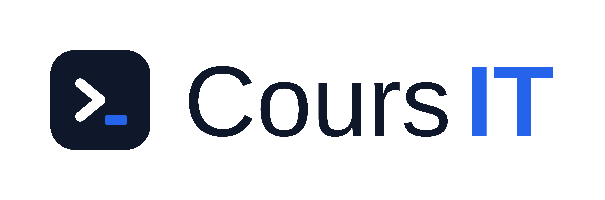

<!DOCTYPE html>
<html lang="fr" class="dark">
<head>
    <meta charset="UTF-8">
    <meta name="viewport" content="width=device-width, initial-scale=1.0">
    <title>Plateforme de Révision TSSR · AIS · CCNA 200-301</title>
    <!-- Tailwind CSS -->
    <script src="https://cdn.tailwindcss.com"></script>
    <script>
        tailwind.config = {
            darkMode: 'class',
            theme: {
                extend: {
                    colors: {
                        brand: {
                            50: '#f0f9ff',
                            100: '#e0f2fe',
                            500: '#0284c7',
                            600: '#0369a1',
                            700: '#075985',
                            800: '#0c4a6e',
                            900: '#0a3751'
                        }
                    }
                }
            }
        }
    </script>
    <!-- React & ReactDOM CDN -->
    <script crossorigin src="https://unpkg.com/react@18/umd/react.production.min.js"></script>
    <script crossorigin src="https://unpkg.com/react-dom@18/umd/react-dom.production.min.js"></script>
    <!-- Babel standalone for inline JSX transformation -->
    <script src="https://unpkg.com/@babel/standalone/babel.min.js"></script>
    <style>
        @import url('https://fonts.googleapis.com/css2?family=Inter:wght@300;400;500;600;700&family=Fira+Code:wght@400;500&display=swap');
        body { font-family: 'Inter', sans-serif; }
        code, pre { font-family: 'Fira Code', monospace; }
        
        /* Cheat Sheets imprimables sur une page A4 sans perte (NF-08 / REC-06) */
        @media print {
            body * { visibility: hidden; }
            #printable-area, #printable-area * { visibility: visible; }
            #printable-area { position: absolute; left: 0; top: 0; width: 100%; color: black !important; background: white !important; }
            .no-print { display: none !important; }
            .print-card { border: 1px solid #ccc !important; break-inside: avoid; page-break-inside: avoid; }
        }
    </style>
</head>
<body class="bg-slate-50 dark:bg-slate-900 text-slate-900 dark:text-slate-100 min-h-screen transition-colors duration-200">
    <div id="root"></div>

    <script type="text/babel">
        const { useState, useEffect, useMemo } = React;

        // --- DONNÉES DE COURS (CCNA v1.1 & v2.0) ; les cours TSSR/AIS à leçons sont définis plus bas ---
        const COURSES_DATA = [
            // --- CCNA v2.0 (Dès Fév 2027) ---
            {
                id: 'ccna-v2-1-1',
                certif: 'CCNA',
                parcours: 'CCNA',
                code: '1.1',
                title: 'Diagnostiquer les problèmes d\'interface et de câble',
                statut: 'brouillon à relire',
                why: "Une panne réseau commence souvent par la couche physique. Un câble défectueux ou un mauvais duplex ralentit tout le réseau sans message d'erreur évident.",
                keyIdeas: [
                    "Une collision se produit uniquement en half-duplex : deux machines émettent en même temps sur le même support.",
                    "Un mismatch de duplex (un côté full-duplex, l'autre half-duplex) produit surtout des erreurs CRC et des late collisions.",
                    "Une distance trop grande sur du cuivre (au-delà de 100 m pour l'Ethernet) provoque des erreurs et des pertes.",
                    "Les compteurs d'erreurs d'une interface sont le premier outil de diagnostic physique."
                ],
                schemaType: 'topologie-duplex-mismatch',
                guiProcedure: "1. Sur un switch Cisco, ouvrir la vue de l'interface et comparer la vitesse et le duplex des deux extrémités. 2. Sur l'ordinateur, ouvrir les propriétés de la carte réseau et vérifier la vitesse et le duplex en mode automatique.",
                cliProcedure: [
                    { cmd: "show interfaces GigabitEthernet0/1", desc: "affiche l'état, le duplex, la vitesse et les compteurs d'erreurs de l'interface" },
                    { cmd: "show interfaces status", desc: "affiche en un tableau l'état, le duplex et la vitesse de chaque port" },
                    { cmd: "clear counters GigabitEthernet0/1", desc: "remet les compteurs à zéro pour mesurer l'évolution des erreurs" }
                ],
                verification: { cmd: "show interfaces GigabitEthernet0/1 | include duplex|errors", expected: "Duplex Full des deux côtés, aucun compteur CRC ou late collision qui augmente" },
                pitfalls: [
                    "Ne pas confondre un duplex fixé à Full d'un côté et Auto de l'autre : le mismatch est silencieux.",
                    "Un compteur d'erreurs ne prouve pas la cause : il faut le remettre à zéro puis observer sa progression."
                ],
                vocab: [
                    { en: "collision", fr: "collision" },
                    { en: "duplex mismatch", fr: "incoherence de duplex" },
                    { en: "CRC error", fr: "erreur de controle de redondance cyclique" },
                    { en: "late collision", fr: "collision tardive" }
                ],
                niveau: 'Débutant',
                prerequis: "Aucun : c'est le tout premier sujet du parcours CCNA.",
                objectifs: [
                    "Expliquer avec vos mots la différence entre half-duplex et full-duplex",
                    "Reconnaître les symptômes d'un câble trop long ou d'un duplex mal réglé (erreurs CRC, late collisions)",
                    "Lire l'état d'un port avec 'show interfaces status' et 'show interfaces'",
                    "Remettre les compteurs d'erreurs à zéro pour confirmer un diagnostic proprement"
                ],
                links: { qcmId: 101, labId: 'lab-1', cheatSheetCat: 'Diagnostic réseau' }
            },
            {
                id: 'ccna-v2-1-2',
                certif: 'CCNA',
                parcours: 'CCNA',
                code: '1.2',
                title: 'Hyperviseurs, machines virtuelles et conteneurs',
                statut: 'brouillon à relire',
                why: "Presque toute infrastructure moderne est virtualisee. Savoir distinguer une VM d'un conteneur evite de mal dimensionner ou de mal depanner un service.",
                keyIdeas: [
                    "Un hyperviseur de type 1 (bare metal) s'execute directement sur le materiel ; un type 2 s'execute sur un systeme hote.",
                    "Une machine virtuelle embarque son propre systeme d'exploitation complet.",
                    "Un conteneur partage le noyau de l'hote et n'embarque que les bibliotheques de l'application : il est plus leger.",
                    "Chaque VM est isolee par l'hyperviseur, qui repartit CPU, memoire et stockage."
                ],
                schemaType: 'comparaison-vm-conteneur',
                guiProcedure: "Dans un hyperviseur graphique, creer une VM : choisir le type d'OS, allouer CPU et memoire, attacher un disque virtuel et une carte reseau virtuelle.",
                cliProcedure: [
                    { cmd: "virsh list --all", desc: "liste les machines virtuelles d'un hyperviseur KVM/libvirt, actives ou arretees" },
                    { cmd: "docker ps", desc: "liste les conteneurs en cours d'execution sur l'hote" },
                    { cmd: "Get-VM", desc: "liste les machines virtuelles Hyper-V sous PowerShell" }
                ],
                verification: { cmd: "virsh list --all  ou  docker ps", expected: "Les VM ou conteneurs attendus apparaissent avec leur etat (running ou shut off)" },
                pitfalls: [
                    "Confondre conteneur et VM : un conteneur ne peut pas avoir un noyau different de celui de l'hote.",
                    "Oublier que l'allocation memoire excessive d'un hyperviseur peut ralentir toutes les VM."
                ],
                vocab: [
                    { en: "hypervisor", fr: "hyperviseur" },
                    { en: "virtual machine (VM)", fr: "machine virtuelle" },
                    { en: "container", fr: "conteneur" },
                    { en: "host kernel", fr: "noyau de l'hote" }
                ],
                niveau: 'Débutant',
                prerequis: "Avoir une idée très grossière de ce qu'est un système d'exploitation (Windows, Linux), rien de plus.",
                objectifs: [
                    "Distinguer un hyperviseur de type 1 (bare metal) d'un hyperviseur de type 2 (hébergé)",
                    "Expliquer avec une analogie la différence entre une VM et un conteneur",
                    "Choisir entre VM et conteneur face à une situation concrète",
                    "Lister les VM (virsh, Get-VM) et les conteneurs actifs (docker ps) sur un hôte"
                ],
                links: { qcmId: 106, labId: 'lab-1', cheatSheetCat: 'Virtualisation' }
            },
            {
                id: 'ccna-v2-1-3',
                certif: 'CCNA',
                parcours: 'CCNA',
                code: '1.3',
                title: 'Depanner l\'adressage et le sous-reseau IPv4',
                statut: 'brouillon à relire',
                why: "Une machine sur le mauvais sous-reseau ne communique plus avec sa passerelle. Le calcul du sous-reseau est la base de presque tout diagnostic IP.",
                keyIdeas: [
                    "L'adresse IP est divisee en partie reseau et partie hote, delimitees par le masque.",
                    "Un /26 (255.255.255.192) donne 64 adresses, dont 62 utilisables pour les hotes.",
                    "L'adresse reseau et l'adresse de diffusion ne peuvent pas etre attribuees a un hote.",
                    "Une passerelle hors du sous-reseau de l'hote rend le routage impossible."
                ],
                schemaType: 'decoupage-subnet-v4',
                guiProcedure: "Sous Windows : ouvrir les proprietes IPv4 de la carte et comparer l'adresse, le masque et la passerelle avec le plan d'adressage.",
                cliProcedure: [
                    { cmd: "ipconfig /all", desc: "affiche l'adresse, le masque, la passerelle et les serveurs DNS sous Windows" },
                    { cmd: "ip a", desc: "affiche les adresses IP des interfaces sous Linux" },
                    { cmd: "show ip interface brief", desc: "affiche l'etat et l'adresse IP de chaque interface Cisco" }
                ],
                verification: { cmd: "ping <passerelle>", expected: "Reponse de la passerelle si l'hote est dans le bon sous-reseau" },
                pitfalls: [
                    "Oublier que 192.168.10.128/26 a pour diffusion 192.168.10.191, pas .255.",
                    "Confondre masque decimal et notation CIDR."
                ],
                vocab: [
                    { en: "subnet mask", fr: "masque de sous-reseau" },
                    { en: "default gateway", fr: "passerelle par defaut" },
                    { en: "network address", fr: "adresse reseau" },
                    { en: "broadcast address", fr: "adresse de diffusion" }
                ],
                niveau: 'Débutant à intermédiaire',
                prerequis: "Suivre le sujet 1.3 est plus simple après le 1.1, mais si vous savez lire une adresse comme 192.168.10.70, vous pouvez commencer ici : le calcul est expliqué pas à pas.",
                objectifs: [
                    "Découper un réseau /24 en plusieurs sous-réseaux /26 sans table toute prête",
                    "Calculer l'adresse réseau, les adresses utilisables et l'adresse de diffusion d'un bloc",
                    "Reconnaître en quelques secondes une passerelle « hors sous-réseau »",
                    "Vérifier une configuration IPv4 avec 'ipconfig /all' et 'ip a'"
                ],
                links: { qcmId: 111, labId: 'lab-1', cheatSheetCat: 'Diagnostic réseau' }
            },
            {
                id: 'ccna-v2-1-4',
                certif: 'CCNA',
                parcours: 'CCNA',
                code: '1.4',
                title: 'Depanner l\'adressage IPv6, le prefixe et l\'EUI-64',
                statut: 'brouillon à relire',
                why: "IPv6 est deploye dans de nombreux reseaux. Une adresse mal derivee ou un prefixe trop court empeche la communication sans erreur evidente.",
                keyIdeas: [
                    "Un prefixe IPv6 standard pour un LAN est un /64 ; la partie hote fait 64 bits.",
                    "En EUI-64, l'adresse MAC est coupee en deux, FFFE est insere au milieu, et le 7e bit est inverse.",
                    "L'adresse link-local (fe80::/10) existe sur chaque interface IPv6 active.",
                    "Un routeur doit annoncer le prefixe par RA pour que les hotes se configurent en SLAAC."
                ],
                schemaType: 'transformation-eui64',
                guiProcedure: "Sur un routeur Cisco, configurer une interface avec un prefixe /64 en EUI-64, puis verifier l'adresse auto-generee a partir de la MAC.",
                cliProcedure: [
                    { cmd: "ipv6 address 2001:db8:10::/64 eui-64", desc: "genere l'identifiant d'interface a partir de la MAC" },
                    { cmd: "show ipv6 interface brief", desc: "affiche les adresses IPv6 et leur etat" },
                    { cmd: "ipconfig", desc: "affiche les adresses IPv6 sous Windows" }
                ],
                verification: { cmd: "show ipv6 interface brief", expected: "Une adresse globale 2001:db8:10:... et une adresse fe80:: pour l'interface" },
                pitfalls: [
                    "Oublier d'inverser le 7e bit lors d'un calcul manuel EUI-64.",
                    "Confondre une adresse link-local (fe80::) avec une adresse globale routable."
                ],
                vocab: [
                    { en: "prefix", fr: "prefixe" },
                    { en: "link-local address", fr: "adresse de lien local" },
                    { en: "EUI-64", fr: "identifiant etendu 64 bits" },
                    { en: "Router Advertisement (RA)", fr: "annonce de routeur" }
                ],
                niveau: 'Intermédiaire',
                prerequis: "Le sujet 1.3 : la logique du découpage est la même, ici en 128 bits. Si vous savez manipuler un /26, c'est déjà suffisant.",
                objectifs: [
                    "Décrire la structure d'une adresse IPv6 : préfixe + identifiant d'interface",
                    "Justifier le choix d'un /64 pour un LAN IPv6",
                    "Transformer une MAC en identifiant EUI-64 (insertion de FFFE, inversion du 7e bit)",
                    "Distinguer une adresse link-local (fe80::) d'une adresse globale routable"
                ],
                links: { qcmId: 116, labId: 'lab-1', cheatSheetCat: 'Diagnostic réseau' }
            },
            {
                id: 'ccna-v2-1-5',
                certif: 'CCNA',
                parcours: 'CCNA',
                code: '1.5',
                title: 'Principes du sans fil',
                statut: 'brouillon à relire',
                why: "Un reseau Wi-Fi lent ou instable vient souvent d'un mauvais choix de canal ou d'une bande mal adaptee, plus que d'un defaut materiel.",
                keyIdeas: [
                    "Le 2,4 GHz porte peu de canaux non superposes : 1, 6 et 11 en Europe.",
                    "Le 5 GHz offre davantage de canaux et subit moins d'interferences, mais porte moins loin.",
                    "Les canaux qui se chevauchent me creent des interferences entre points d'acces voisins.",
                    "WPA2 et WPA3 chiffrent le trafic ; WEP ne doit plus etre utilise."
                ],
                schemaType: 'plan-canaux-wifi',
                guiProcedure: "Sur une borne Cisco en interface graphique, choisir la bande, puis un canal fixe distinct pour chaque borne voisine.",
                cliProcedure: [
                    { cmd: "show dot11 associations", desc: "affiche les clients sans fil associes a la borne" },
                    { cmd: "show controllers dot11Radio 0", desc: "affiche la bande et le canal utilises par la radio" }
                ],
                verification: { cmd: "show controllers dot11Radio 0", expected: "Canal non superpose (1, 6 ou 11 en 2,4 GHz) et puissance coherente avec la zone" },
                pitfalls: [
                    "Laisser toutes les bornes sur le meme canal.",
                    "Croire que WPA2-PSK et WEP offrent la meme securite."
                ],
                vocab: [
                    { en: "channel", fr: "canal" },
                    { en: "band", fr: "bande" },
                    { en: "interference", fr: "interference" },
                    { en: "encryption", fr: "chiffrement" }
                ],
                niveau: 'Débutant',
                prerequis: "Aucun : ces notions se comprennent sans aucune ligne de commande.",
                objectifs: [
                    "Expliquer pourquoi seuls les canaux 1, 6 et 11 sont vraiment séparés en 2,4 GHz",
                    "Choisir la bande adaptée (2,4 ou 5 GHz) selon une zone à couvrir",
                    "Éviter l'erreur classique : deux bornes voisines sur le même canal",
                    "Reconnaître un chiffrement obsolète (WEP) et savoir lequel choisir (WPA2/WPA3)"
                ],
                links: { qcmId: 121, labId: 'lab-1', cheatSheetCat: 'Sans fil' }
            },
            {
                id: 'ccna-v2-1-6',
                certif: 'CCNA',
                parcours: 'CCNA',
                code: '1.6',
                title: 'Depanner la connectivite des clients filaires et sans fil',
                statut: 'brouillon à relire',
                why: "Quand un poste ne se connecte pas, il faut suivre un ordre logique : physique, adresse IP, passerelle, DNS, puis service. Sans methode, on change tout au hasard.",
                keyIdeas: [
                    "Verifier d'abord le lien physique (voyant, cable, association Wi-Fi).",
                    "Un poste avec une adresse 169.254.x.x n'a pas obtenu d'adresse par DHCP.",
                    "Un ping vers la passerelle isole le probleme local ; un ping vers un nom teste le DNS.",
                    "Le mot de passe Wi-Fi ou le type de securite errone empeche l'association."
                ],
                schemaType: 'diagramme-decision-client',
                guiProcedure: "Sous Windows, ouvrir les parametres reseau, afficher les proprietes de la connexion et verifier l'adresse, la passerelle et le DNS.",
                cliProcedure: [
                    { cmd: "ipconfig /all", desc: "affiche l'adresse, la passerelle, le DNS et le bail DHCP" },
                    { cmd: "ipconfig /release  puis  ipconfig /renew", desc: "demande une nouvelle adresse au serveur DHCP" },
                    { cmd: "ping <passerelle>", desc: "teste la connectivite locale" },
                    { cmd: "nslookup www.example.com", desc: "teste la resolution DNS" }
                ],
                verification: { cmd: "ping <passerelle>", expected: "Reponses regulieres ; sinon controler le cable ou le VLAN du port" },
                pitfalls: [
                    "Corriger le DNS alors que la passerelle est injoignable.",
                    "Oublier que l'heure systeme incorrecte peut bloquer certains services."
                ],
                vocab: [
                    { en: "link", fr: "lien" },
                    { en: "default gateway", fr: "passerelle par defaut" },
                    { en: "DHCP lease", fr: "bail DHCP" },
                    { en: "name resolution", fr: "resolution de noms" }
                ],
                niveau: 'Débutant à intermédiaire',
                prerequis: "Les sujets 1.1 et 1.3 : on y réutilise le duplex, l'adresse IP et la notion de passerelle.",
                objectifs: [
                    "Suivre une méthode de dépannage croissant dans les couches (physique → IP → passerelle → DNS)",
                    "Reconnaître une adresse 169.254.x.x et nommer sa cause (échec DHCP)",
                    "Tests guidés : ping passerelle, ipconfig /renew, nslookup",
                    "Expliquer pourquoi on ne corrige pas le DNS avant d'avoir vérifié la couche 1"
                ],
                links: { qcmId: 126, labId: 'lab-1', cheatSheetCat: 'Diagnostic réseau' }
            },
            {
                id: 'ccna-v2-1-7',
                certif: 'CCNA',
                parcours: 'CCNA',
                code: '1.7',
                title: 'Depanner DHCPv4 : client, serveur et relais',
                statut: 'brouillon à relire',
                why: "DHCP attribue les adresses automatiquement. Un relais mal configure prive tout un sous-reseau d'adresse, alors que le serveur fonctionne.",
                keyIdeas: [
                    "Le processus DORA : Discover, Offer, Request, Acknowledge.",
                    "Les requetes DHCP sont des broadcasts ; un relais (ip helper-address) les transmet au serveur sur un autre sous-reseau.",
                    "Un pool epuise empeche l'attribution de nouvelles adresses.",
                    "Les exclusions evitent d'attribuer des adresses deja statiques."
                ],
                schemaType: 'sequence-dora-dhcp',
                guiProcedure: "Sur le routeur, configurer le pool, les exclusions, puis ip helper-address sur l'interface du sous-reseau client.",
                cliProcedure: [
                    { cmd: "ip dhcp excluded-address 192.168.10.1 192.168.10.10", desc: "reserve les premieres adresses a l'usage statique" },
                    { cmd: "ip dhcp pool LAN10", desc: "cree un pool d'adresses nomme" },
                    { cmd: "ip helper-address 192.168.20.5", desc: "relaie les requetes DHCP vers le serveur" },
                    { cmd: "show ip dhcp binding", desc: "affiche les baux attribues" },
                    { cmd: "show ip dhcp pool", desc: "affiche l'utilisation du pool" }
                ],
                verification: { cmd: "show ip dhcp binding", expected: "Une entree par client avec adresse, MAC et echeance du bail" },
                pitfalls: [
                    "Oublier le relais : le client reste en 169.254.x.x.",
                    "Ne pas exclure la passerelle : conflit d'adresse."
                ],
                vocab: [
                    { en: "lease", fr: "bail" },
                    { en: "relay agent", fr: "agent relais" },
                    { en: "address pool", fr: "pool d'adresses" },
                    { en: "excluded address", fr: "adresse exclue" }
                ],
                niveau: 'Intermédiaire',
                prerequis: "Le sujet 1.3 (notion de sous-réseau) et idéalement 1.6 (l'adresse 169.254.x.x) ; aucune expérience DHCP nécessaire.",
                objectifs: [
                    "Réciter et expliquer la séquence DORA (Discover, Offer, Request, Acknowledge)",
                    "Identifier l'utilité d'un relais DHCP ('ip helper-address') et quand le mettre en place",
                    "Reconnaître un pool épuisé ou l'absence d'exclusions face à un client sans bail",
                    "Vérifier les baux attribués avec 'show ip dhcp binding'"
                ],
                links: { qcmId: 131, labId: 'lab-1', cheatSheetCat: 'Services IP' }
            },
            {
                id: 'ccna-v2-dom4',
                certif: 'CCNA',
                parcours: 'CCNA',
                code: '4.0',
                title: 'Network Services and Security',
                why: "Le CCNA v2.0 met l'accent sur le durcissement du niveau 2 (DHCP Snooping, DAI) et les frameworks AAA pour contrer les attaques de spoofing et d'usurpation.",
                keyIdeas: [
                    "DHCP Snooping : Intercepte les messages DHCP non autorises pour empecher l'injection de fausses passerelles.",
                    "Dynamic ARP Inspection (DAI) : Inspecte les paquets ARP en les comparant a la table DHCP Snooping pour parer l'ARP Poisoning.",
                    "AAA (Authentication, Authorization, Accounting) : Centralise le controle des acces reseau via RADIUS ou TACACS+."
                ],
                schemaType: 'dhcp-exchange',
                guiProcedure: "Sur Cisco Catalyst Center (DNA Center) : Naviguer dans 'Provision' -> 'Network Devices' -> Selectionner le Switch -> 'Security Policies' -> Activer 'DHCP Snooping & DAI' -> Cliquer sur 'Deploy'.",
                cliProcedure: [
                    { cmd: "ip dhcp snooping\nip dhcp snooping vlan 10,20", desc: "Active la fonction DHCP Snooping au niveau global et sur les VLANs 10 et 20." },
                    { cmd: "interface GigabitEthernet0/1\n ip dhcp snooping trust", desc: "Declare le port relie au serveur DHCP legitime comme port de confiance (Trust)." },
                    { cmd: "ip arp inspection vlan 10", desc: "Active l'inspection dynamique des paquets ARP sur le VLAN 10." }
                ],
                verification: { cmd: "show ip dhcp snooping binding", expected: "Affiche la table de correspondance MAC/IP/Port/VLAN validee par le switch." },
                pitfalls: [
                    "Oublier d'activer la confiance ('trust') sur les ports d'inter-switchs, ce qui bloque la distribution des adresses IP.",
                    "Ne pas synchroniser le temps des equipements via NTP, rendant inexploitables les logs d'audit et les jetons AAA.",
                    "Confondre TACACS+ (Chiffre tout le paquet, Cisco) et RADIUS (Chiffre uniquement le mot de passe, Open)."
                ],
                vocab: [
                    { en: "DHCP Snooping", fr: "Surveillance et filtrage DHCP" },
                    { en: "Man-in-the-Middle (MitM)", fr: "Attaque de l'homme du milieu" },
                    { en: "Port Security", fr: "Securite des ports" }
                ],
                statut: 'brouillon à relire',
                niveau: 'Intermédiaire (fiche d\u2019illustration)',
                prerequis: "Les notions de commutation des sujets 1.1 à 1.7 ; cette fiche illustre le domaine 2.0 (sécurité réseau) et sera complétée.",
                objectifs: [
                    "Expliquer en quoi DHCP Snooping protège le réseau contre de faux serveurs DHCP",
                    "Décrire le rôle de Dynamic ARP Inspection contre l'usurpation ARP",
                    "Nommer les composants AAA et distinguer RADIUS de TACACS+",
                    "Retenir le piège classique des ports trust sur les liaisons inter-switchs"
                ],
                links: { qcmId: 3, labId: 'lab-1', cheatSheetCat: 'Cisco' }
            }
        ];

        // --- COURS TSSR (A LEÇONS, PAR CP — RÉDIGÉS PÉDAGOGIQUEMENT) ---
        const TSSR_COURSES = [
            {
                id: 'tssr-cp1', parcours: 'TSSR', code: 'CP1',
                title: 'Support utilisateur en centre de services',
                niveau: 'Débutant',
                prerequis: "Aucun : ce CP est le point d'entrée du parcours TSSR.",
                objectifs: [
                    "Distinguer un incident d'une demande de service",
                    "Rédiger un ticket clair et exploitable (qui, quoi, quand, urgence, impact)",
                    "Prioriser des demandes avec une matrice impact × urgence",
                    "Expliquer les niveaux d'escalade et le rôle de la base de connaissances"
                ],
                lessons: [
                    { title: "Leçon 1 — Le rôle du centre de services", parts: [
                        { h: "Qu'est-ce qu'un centre de services ?", t: "Le centre de services (ou service desk) est le point d'entrée unique entre les utilisateurs et l'équipe informatique. Toute demande y passe : panne, question, nouvelle installation. L'intérêt : rien ne se perd, tout est tracé et mesurable." },
                        { h: "Incident ou demande de service ?", t: "Un incident est un arrêt ou une dégradation d'un service (« je ne peux plus imprimer »). Une demande de service est une action planifiée (« installer un logiciel », « créer un accès »). La distinction compte : un incident appelle une reprise d'activité, une demande passe par un circuit de validation." },
                        { h: "Exemple concret", t: "Un utilisateur ne reçoit plus ses mails : incident. Le même utilisateur demande une boîte mail partagée pour son équipe : demande de service. Même outil (le ticket), mais circuits et priorités différents." }
                    ]},
                    { title: "Leçon 2 — Le cycle de vie d'un ticket", parts: [
                        { h: "Enregistrement", t: "À la prise du ticket, notez : qui appelle, sur quel équipement, depuis quand, le message d'erreur exact, ce qui a déjà été tenté, et l'impact métier (une personne bloquée ? un service entier ?). Sans ces éléments, la qualification sera approximative." },
                        { h: "Qualification et priorité", t: "La priorité croise l'impact (combien d'utilisateurs touchés, criticité du service) et l'urgence (délai acceptable). Un atelier entier bloqué passe avant la souris d'un directeur : c'est l'impact sur l'activité qui décide, pas le grade." },
                        { h: "Traitement, escalade et clôture", t: "Le niveau 1 traite les cas courants (câble, mot de passe, compte). En cas d'échec, le ticket passe au niveau 2 (spécialistes) puis au niveau 3 (concepteurs, éditeurs). On clôture seulement après confirmation de l'utilisateur, avec une synthèse courte de la cause et de la solution." }
                    ]},
                    { title: "Leçon 3 — Les outils du technicien", parts: [
                        { h: "L'outil de ticketing", t: "Un outil de ticketing centralise les demandes et l'historique (GLPI, ServiceNow ou Jira Service Management sont parmi les plus répandus). Le ticket est la mémoire du service : bien le remplir aujourd'hui aide un collègue demain." },
                        { h: "La base de connaissances", t: "Chaque problème récurrent devient une fiche pas à pas (réinitialisation de mot de passe, réglage d'imprimante). On applique alors une procédure claire, plus vite et de façon homogène." },
                        { h: "Le cadre de référence ITIL", t: "ITIL est un ensemble de bonnes pratiques de gestion des services informatiques, très utilisé dans les entreprises : notions d'incident, de demande, de changement… Ce cours reprend sa logique générale, sans prétendre remplacer la documentation complète." }
                    ]}
                ],
                guiSteps: [
                    { title: "Ouvrir GLPI et creer un ticket", action: "Ouvrez le navigateur, tapez l'URL de votre serveur GLPI (ex : http://srv-glpi/glpi). Connectez-vous avec votre compte technicien. Cliquez sur l'onglet Assistance, puis le bouton + Tickets - Create a ticket.", observation: "Un formulaire s'ouvre : titre, description, categorie, priorite, demandeur. Ce formulaire est le point d'entree de tout incident." },
                    { title: "Remplir un ticket proprement", action: "Titre : resume en 1 ligne (ex : Poste CLIENT-04 - plus d'acces Internet). Description : contexte (qui, quand, quoi), symptomes precis, actions deja essayees. Categorie : Reseau. Priorite : Moyenne. Demandeur : chercher l'utilisateur dans l'annuaire GLPI.", observation: "Le ticket est cree avec un numero unique (ex : #2026-0042). Ce numero est la reference pour toute l'intervention." },
                    { title: "Suivre un ticket de la prise en charge a la resolution", action: "Ouvrez le ticket, changez le statut : Nouveau - En cours (accepte) - En attente - Resolu. Ajoutez un commentaire a chaque action. Quand c'est resolu, cliquez Resolu et remplissez le resume.", observation: "L'utilisateur recoit une notification a chaque changement de statut. Le delai de traitement est trace." },
                    { title: "Exporter l'inventaire et documenter", action: "Dans GLPI, cliquez sur Gestion - Parc - Ordinateurs pour voir l'inventaire. Ajoutez un nouvel equipement si necessaire. Documentez la solution dans la base de connaissances (Accueil - Base de connaissances - Ajouter).", observation: "L'inventaire liste chaque poste avec son OS, son IP, son utilisateur. La base de connaissances est le memoire technique de l'equipe." }
                ],
                deepDive: [
                    { t: "Methodologie - l'escalade par niveaux", p: [
                        "Niveau 1 (centre de services) : accueil, qualification, resolution des incidents simples (mot de passe oublie, peripherique, applications bureautiques).",
                        "Niveau 2 (technicien IT) : incidents techniques plus complexes (reseau, systeme, materiel). Le technicien peut se deplacer ou prendre la main a distance.",
                        "Niveau 3 (expert/fournisseur) : problemes requirent une expertise approfondie ou l'intervention du constructeur."
                    ],
                    cmd: [
                        "# Verifier la disponibilite d'un poste distant (PowerShell Remoting)",
                        "Invoke-Command -ComputerName CLIENT-04 -ScriptBlock { Get-Service Spooler }",
                        "# Prendre la main a distance (RDP)",
                        "mstsc /v:CLIENT-04"
                    ],
                    box: 'remember', boxText: "A retenir : un ticket = une seule demande. Le delai de premiere reponse compte autant que le delai de resolution. Documenter chaque etape dans le ticket est une obligation professionnelle, pas une option." },
                    { t: "Erreurs frequentes en centre de services", p: [
                        "Ne pas qualifier le ticket : un ticket sans description precise devient impossible a reprendre par un autre technicien.",
                        "Oublier de changer le statut : l'utilisateur ne sait pas si son probleme est pris en compte.",
                        "Fermer sans verifier : tester la solution AVEC l'utilisateur avant de resoudre le ticket."
                    ],
                    box: 'warn', boxText: "Erreur frequente : repondre par email hors du ticket. L'historique se perd. Toute communication doit passer par le systeme de ticketing pour garder la tracabilite." },
                    { t: "Cas d'entreprise - le lundi matin qui part en vrille", p: [
                        "Situation : 15 appels entre 8h30 et 9h30, tous pour le meme probleme (imprimante reseau injoignable). Le centre de services est sature.",
                        "Bonne pratique : qualifier rapidement (meme symptome ?), creer un ticket Pere et lier les 15 tickets enfants, corriger une seule fois, repondre a tous en meme temps.",
                        "Lecon : quand plusieurs utilisateurs signalent le meme symptome, c'est un probleme d'infrastructure, pas un probleme utilisateur individuel."
                    ],
                    box: 'case', boxText: "Ce cas illustre la difference entre incident individuel et incident de masse. La bonne reponse est de categoriser, consolider et corriger globalement, pas de traiter 15 tickets individuellement." }
                ],
                exercices: [
                    { enonce: "Un utilisateur appelle, très énervé : « rien ne marche, votre informatique est nulle ! ». Listez les informations minimales à collecter avant d'écrire un ticket de qualité.", correction: "Le ticket doit contenir au minimum : identité et localisation de l'utilisateur, équipement concerné, heure de début du problème, description factuelle (« je peux ouvrir Word mais pas Internet »), message d'erreur exact, impact (une personne ? un service entier ?) et actions déjà tentées. Sur l'appel, ramenez l'émotion vers les faits : « je comprends votre agacement, décrivons précisément ce qui ne fonctionne plus ». Si c'est possible, proposez un contournement temporaire (autre poste) en gardant le ticket ouvert." },
                    { enonce: "Hiérarchisez : A) La comptabilité ne peut plus lancer le logiciel de facturation (18 personnes). B) L'écran du directeur a une ligne de pixels morte. C) Un stagiaire n'arrive pas à se connecter en Wi-Fi. Donnez un ordre et justifiez.", correction: "A en premier : beaucoup de personnes bloquées et un service métier critique — impact et urgence élevés. Ensuite C : un seul utilisateur, cause fréquente et contournable (câble réseau, reconnexion Wi-Fi), typiquement traité au niveau 1. Enfin B : gêne réelle mais sans blocage métier, priorité faible. L'ordre suit l'impact sur l'activité, pas le grade des personnes." }
                ],
                resume: "Le centre de services transforme un appel stressant en un ticket exploitable : qualifier (incident ou demande), prioriser (impact × urgence), traiter ou escalader, puis clôturer avec l'accord de l'utilisateur. La base de connaissances fait gagner du temps à toute l'équipe.",
                suite: "CP2 — Windows et Active Directory : vous passerez du ticket à l'action sur les comptes.",
                evaluation: [
                    { q: "Quelle situation décrit un incident ?", options: [ "Installer un nouveau logiciel demandé par les RH", "Une imprimante partagée qui n'imprime plus", "Créer une boîte mail pour un nouvel employé" ], answer: 1, exp: "Correct : un incident est une interruption ou dégradation d'un service existant. Les deux autres sont des demandes de service." },
                    { q: "La priorité d'un ticket se décide surtout selon :", options: [ "L'ancienneté de la personne qui appelle", "L'impact sur l'activité croisé avec l'urgence", "L'ordre d'arrivée des appels" ], answer: 1, exp: "Correct : la matrice impact × urgence est la base standard de la priorisation ; ni le grade ni l'ordre d'arrivée ne suffisent." },
                    { q: "Passer un ticket du niveau 1 au niveau 2 signifie :", options: [ "Abandonner le ticket car il est trop difficile", "Le transmettre à des spécialistes car il dépasse les compétences ou les droits du niveau 1", "Demander à l'utilisateur de rappeler plus tard" ], answer: 1, exp: "Correct : l'escalade est un transfert organisé vers un niveau d'expertise supérieur, documenté dans le ticket et tracé pour l'utilisateur." }
                ]
            },
            {
                id: 'tssr-cp2', parcours: 'TSSR', code: 'CP2',
                title: 'Windows et Active Directory',
                niveau: 'Débutant',
                prerequis: "Le CP1 suffit. Une machine Windows de test est un plus pour suivre les manipulations des exemples.",
                objectifs: [
                    "Expliquer le rôle d'Active Directory et d'un contrôleur de domaine",
                    "Créer et ranger comptes et groupes dans des unités d'organisation",
                    "Décrire comment une GPO est appliquée (ordre local → site → domaine → OU)",
                    "Utiliser quelques commandes PowerShell de base du module ActiveDirectory"
                ],
                lessons: [
                    { title: "Leçon 1 — Comprendre l'annuaire Active Directory", parts: [
                        { h: "Un annuaire centralisé", t: "Active Directory (AD) est la base de données centralisée de Microsoft qui stocke les comptes utilisateurs, ordinateurs, groupes et leurs droits. Elle est hébergée et mise à jour par un contrôleur de domaine. Analogie : un annuaire téléphonique couplé à un registre des permissions — un seul endroit à mettre à jour." },
                        { h: "Domaine, forêt et unités d'organisation", t: "Le domaine est la frontière d'administration (par exemple entreprise.local). Plusieurs domaines reliés forment une forêt. À l'intérieur, les unités d'organisation (OU) servent de dossiers pour ranger les objets et déléguer l'administration par service ou par site." },
                        { h: "Les groupes de sécurité", t: "Un groupe permet d'attribuer des droits une seule fois à plusieurs comptes. On distingue le groupe de sécurité (porte des droits) du groupe de distribution (recueille des adresses mails). Bonne habitude : jamais de droits accordés compte par compte, toujours via les groupes." }
                    ]},
                    { title: "Leçon 2 — Comptes, mots de passe et authentification", parts: [
                        { h: "Créer un compte proprement", t: "Un compte suit une convention de nommage cohérente (par exemple prenom.nom pour claire.martin), est rangé dans la bonne OU, intègre les bons groupes, et son mot de passe initial est à changer à la première connexion (option standard « l'utilisateur doit changer le mot de passe à la prochaine ouverture de session »)." },
                        { h: "La politique de mots de passe", t: "Longueur minimale, complexité, historique, verrouillage après échecs répétés… Ces réglages font partie des stratégies appliquées par l'annuaire. Les valeurs exactes se règlent selon votre organisation : ce sont des choix de politique internes, pas des constantes universelles." },
                        { h: "Kerberos, le ticket d'entrée", t: "AD authentifie les utilisateurs grâce au protocole Kerberos : après l'ouverture de session, l'utilisateur reçoit des tickets (comme des billets de cinéma) qu'il présente aux services, sans transmettre son mot de passe à chacun d'eux." }
                    ]},
                    { title: "Leçon 3 — GPO et PowerShell du quotidien", parts: [
                        { h: "Une GPO, c'est quoi ?", t: "Une stratégie de groupe (GPO) est un paquet de réglages appliqué aux ordinateurs et aux utilisateurs : sécurité, lecteurs mappés, fond d'écran… On la « lie » à un site, au domaine ou à une OU, et tous les objets situés dessous en héritent." },
                        { h: "L'ordre d'application (LSDOU)", t: "Les stratégies s'appliquent dans l'ordre : Local, puis Site, puis Domaine, puis OU. La dernière appliquée (la plus spécifique, l'OU) gagne en cas de conflit. Pour forcer l'actualisation : gpupdate /force ; pour vérifier ce qui a été appliqué : gpresult." },
                        { h: "PowerShell pour aller vite", t: "Une fois le module ActiveDirectory installé (via les outils RSAT), Get-ADUser claire.martin lit un compte, New-ADUser le crée, Set-ADUser le modifie. La console graphique reste très bien pour apprendre ; PowerShell démultiplie quand il y a des dizaines de comptes (renvoi au CP6 pour les scripts)." }
                    ]}
                ],
                guiSteps: [
                    { title: "Ouvrir Active Directory Users and Computers (ADUC)", action: "Cliquez sur Demarrer - Outils d'administration Windows - Active Directory Users and Computers. Ou tapez dsa.msc dans la recherche.", observation: "Une fenetre s'ouvre avec un arbre a gauche (lab.lan) et un panneau vide a droite. Si le DC n'est pas promu, l'outil sera absent - terminez d'abord le labo TSSR 01.", mockup: 'mockup-aduc' },
                    { title: "Creer une unite d'organisation (OU)", action: "Clic droit sur lab.lan - New - Organizational Unit. Tapez Compta dans Name, laissez Protect container coche, cliquez OK.", observation: "La nouvelle UO Compta apparait dans l'arborescence sous lab.lan avec une icone de dossier.", mockup: 'mockup-aduc' },
                    { title: "Creer un utilisateur dans l'OU Compta", action: "Clic droit sur Compta - New - User. First Name = Claire, Last Name = Martin, User logon name = claire.martin. Next. Mot de passe : Azerty1*, cochez User must change password at next logon. Next, Finish.", observation: "Le compte claire.martin apparait dans le panneau droit de l'OU Compta avec une icone utilisateur.", mockup: 'mockup-aduc' },
                    { title: "Creer un groupe de securite et ajouter le compte", action: "Clic droit sur Compta - New - Group. Name = GG-Compta, Scope = Global, Type = Security. OK. Double-cliquez sur GG-Compta - Members - Add - claire.martin - Check Names - OK - Apply.", observation: "Le compte claire.martin apparait dans la liste des membres de GG-Compta." },
                    { title: "Verifier en PowerShell (methode 2)", action: "Ouvrez PowerShell en admin et executez les commandes ci-dessous. Comparez avec ce que vous voyez dans ADUC.", observation: "Get-ADUser retourne le compte cree, Get-ADGroupMember liste les membres du groupe - les memes donnees que la console graphique.", cli: [
                        "Import-Module ActiveDirectory",
                        "Get-ADUser claire.martin | Select Name, SamAccountName, Enabled",
                        "Get-ADGroupMember GG-Compta | Select Name, ObjectClass",
                        "Get-ADOrganizationalUnit -Filter {Name -eq 'Compta'} | Select DistinguishedName"
                    ] },
                    { title: "Ouvrir la GPMC et creer une GPO", action: "Demarrer - tapez gpmc.msc - validez. Dans Forest - Domains - lab.lan, clic droit - Create a GPO in this domain, and Link it here... Nommez-la USER-MotDePasse-Politique. OK.", observation: "La GPO apparait liee au domaine lab.lan. C'est un conteneur de reglages, encore vide.", mockup: 'mockup-gpmc' },
                    { title: "Editer la GPO et configurer un parametre", action: "Clic droit sur la GPO - Edit. Computer Configuration - Policies - Windows Settings - Security Settings - Account Policies - Password Policy. Double-cliquez Minimum password length, tapez 12, OK. Fermez.", observation: "Le parametre est enregistre dans la GPO. Sur les postes cibles, il s'appliquera apres gpupdate /force." },
                    { title: "Verifier l'application avec gpresult", action: "Sur un poste client, tapez : gpupdate /force puis gpresult /R. Cherchez USER-MotDePasse-Politique dans les Applied Group Policy Objects.", observation: "gpresult /R liste les GPO appliquees. Si la GPO est absente, verifiez le lien, le Security Filtering et l'OU du poste.", cli: [
                        "gpupdate /force",
                        "gpresult /R | findstr /i MotDePasse"
                    ] }
                ],
                deepDive: [
                    { t: "Méthodologie terrain — intégrer un nouveau collaborateur en moins de 10 minutes", p: [
                        "En entreprise, l'arrivée d'un collaborateur suit une procédure documentée (un runbook). L'objectif : que la personne ouvre sa session, trouve ses lecteurs réseau et son imprimante sans appeler le support.",
                        "L'ordre des opérations compte : on prépare l'OU et les groupes AVANT de créer le compte, pour que les GPO s'appliquent dès la première ouverture de session."
                    ],
                    cmd: [
                        "# Vérifier que l'OU existe",
                        "Get-ADOrganizationalUnit -Filter \"Name -eq 'Compta'\"",
                        "# Créer le compte dans la bonne OU, mot de passe à changer à la première connexion",
                        "New-ADUser -Name 'Claire Martin' -SamAccountName claire.martin -UserPrincipalName claire.martin@lab.lan -Path 'OU=Compta,DC=lab,DC=lan' -AccountPassword (ConvertTo-SecureString 'Init2026!' -AsPlainText -Force) -ChangePasswordAtLogon $true -Enabled $true",
                        "# Ajouter aux groupes du service",
                        "Add-ADGroupMember -Identity 'GG-Compta' -Members claire.martin",
                        "# Contrôle final",
                        "Get-ADUser claire.martin -Properties Department, MemberOf | Select Name, Enabled, Department"
                    ],
                    box: 'admin', boxText: "Conseil d'administrateur : ne créez jamais un compte en dehors d'une OU. Un compte posé à la racine du domaine échappe aux GPO liées aux OU et devient invisible pour vos délégations d'administration. Si vous héritez d'un annuaire mal rangé, documentez la convention de nommage des OU avant toute migration." },
                    { t: "Erreurs fréquentes vues en support", p: [
                        "Le compte est créé mais l'utilisateur « n'a pas de lecteur réseau » : la GPO de mappage est liée à une OU dont l'utilisateur ne dépend pas, ou le poste n'a pas exécuté gpupdate /force.",
                        "« Le compte est verrouillé » alors que l'utilisateur dit taper le bon mot de passe : Caps Lock, pavé numérique désactivé, ou un mot de passe stocké obsolète dans le gestionnaire d'identifiants Windows. Vider le gestionnaire d'identifiants règle 80 % de ces tickets.",
                        "Deux comptes portent le même nom (mariage, changement de nom) : ne jamais renommer un compte SANS vérifier ses ACL, sinon les droits NTFS restent liés à l'ancien SamAccountName."
                    ],
                    box: 'warn', boxText: "Erreur fréquente : créer un compte avec « l'utilisateur doit changer son mot de passe » MAIS désactiver en même temps « le mot de passe n'expire jamais ». La politique de domaine écrase ce réglage et le ticket revient trois mois plus tard. Décidez une politique par profil (standard, comptes de service) et tenez-vous-y." },
                    { t: "Pour l'examen — ce que le correcteur cherche", p: [
                        "Le vocabulaire : OU (rangement) ≠ groupe (droits) ≠ GPO (configuration). Confondre ces trois notions est la première cause d'échec.",
                        "L'ordre LSDOU doit être récité sans hésiter : Local, Site, Domaine, OU — et savoir qu'en cas de conflit, la plus spécifique (OU) s'applique.",
                        "Kerberos se résume en une phrase : le contrôleur de domaine délivre des tickets, l'utilisateur ne renvoie jamais son mot de passe aux services."
                    ],
                    box: 'remember', boxText: "À retenir : AD = annuaire (NTDS.dit) + authentification (Kerberos) + politiques (GPO). Les OU rangent, les groupes donnent les droits (modèle AGDLP), les GPO configurent. PowerShell (module RSAT ActiveDirectory) devient indispensable dès 10 comptes." }
                ],
                exercices: [
                    { enonce: "Une nouvelle collaboratrice, Claire Martin, rejoint le service Compta. Décrivez les étapes de son intégration côté Active Directory.", correction: "1) Identifier (ou créer) l'OU Compta. 2) Créer le compte claire.martin dans cette OU avec mot de passe à changer à la première connexion. 3) L'ajouter aux groupes de son service et au groupe de base des utilisateurs. 4) Vérifier le compte (affichage de la console ou Get-ADUser claire.martin). 5) Remettre les identifiants et la charte informatique à la collaboratrice. La logique : ranger, nommer, grouper, puis vérifier." },
                    { enonce: "Au niveau du domaine, une GPO interdit les clés USB. Sur l'OU « Postes_Atelier », une GPO les autorise. Un poste de cette OU peut-il utiliser une clé USB ?", correction: "Oui, en principe : la GPO de l'OU est plus spécifique et appliquée en dernier (ordre LSDOU), donc en cas de conflit elle l'emporte sur celle du domaine. Limites à vérifier : blocage de l'héritage sur l'OU, GPO de domaine marquée « forcer » ou réglages différents sur l'ordinateur et l'utilisateur. En pratique on teste : gpupdate /force puis gpresult pour voir ce qui a réellement été appliqué." }
                ],
                resume: "Active Directory centralise comptes et droits ; les OU rangent, les groupes délèguent les droits, les GPO uniformisent la configuration selon l'ordre Local → Site → Domaine → OU. Le module PowerShell (RSAT) fait gagner beaucoup de temps dès qu'on gère plus d'une poignée de comptes.",
                suite: "CP3 — Serveurs Linux : le même métier, un autre système.",
                evaluation: [
                    { q: "À quoi sert un contrôleur de domaine ?", options: [ "Il héberge le site web de l'entreprise", "Il gère l'annuaire Active Directory et authentifie les utilisateurs", "Il remplace le pare-feu du réseau" ], answer: 1, exp: "Correct : le contrôleur de domaine héberge l'annuaire et délivre l'authentification (Kerberos). Site web et pare-feu sont des services différents." },
                    { q: "Quelle commande force l'application des stratégies de groupe sur un poste ?", options: [ "ipconfig /renew", "Get-ADUser", "gpupdate /force" ], answer: 2, exp: "Correct : gpupdate /force demande l'actualisation immédiate des GPO ; ipconfig /renew concerne le DHCP et Get-ADUser lit l'annuaire." },
                    { q: "Vous devez donner l'accès à un outil aux 25 techniciens. Quelle méthode est la bonne pratique ?", options: [ "Modifier les droits de chaque compte un par un", "Partager le compte administrateur", "Créer un groupe de sécurité et l'ajouter une seule fois" ], answer: 2, exp: "Correct : le groupe évite les oublis et les erreurs, documente l'intention, et se réutilise pour tout nouveau technicien. Partager un compte empêche la traçabilité." }
                ]
            },
            {
                id: 'tssr-cp3', parcours: 'TSSR', code: 'CP3',
                title: 'Serveurs Linux',
                niveau: 'Débutant',
                prerequis: "Aucun prérequis Linux. Un accès à une machine Linux (VM, VPS ou machine de TP) permet de suivre les exemples pas à pas.",
                objectifs: [
                    "Se repérer dans l'arborescence Linux et utiliser les commandes de base",
                    "Comprendre et modifier les droits (rwx) sur fichiers et dossiers",
                    "Installer des paquets et gérer un service avec systemctl",
                    "Se connecter à distance avec SSH et lire les journaux"
                ],
                lessons: [
                    { title: "Leçon 1 — Se repérer dans Linux", parts: [
                        { h: "Le shell, votre poste de pilotage", t: "Le shell est le programme qui exécute les commandes tapées au clavier. Sur un serveur Linux, tout peut se faire en ligne de commande : c'est l'outil normal du métier, pas un auxiliaire compliqué. Tapez, corrigez, relisez : la précision vient avec la pratique." },
                        { h: "L'arborescence standard", t: "Tout part de la racine / : /etc regroupe les fichiers de configuration, /var les données variables (dont /var/log pour les journaux), /home les dossiers personnels, /usr les programmes installés. On se déplace avec cd, on liste avec ls, on lit avec less ou cat, et man commande donne le manuel de la commande." },
                        { h: "Exemple concret", t: "Pour lire le journal système sur une Debian/Ubuntu : less /var/log/syslog. Pour comprendre les droits : man chmod. Prendre l'habitude de consulter le manuel est le réflexe le plus rentable de l'administrateur débutant." }
                    ]},
                    { title: "Leçon 2 — Utilisateurs, droits et paquets", parts: [
                        { h: "root, sudo et comptes", t: "Le compte root est tout-puissant. La pratique standard : travailler avec votre compte personnel et préfixer ponctuellement avec sudo commande. On limite ainsi les commandes destructives et on garde la trace de qui a fait quoi." },
                        { h: "Les droits rwx", t: "Chaque fichier porte des droits pour le propriétaire, le groupe et les autres : r lire (4), w écrire (2), x exécuter (1), que l'on additionne. Exemples courants : 755 (propriétaire tout, groupe et autres lecture+exécution — typique pour les scripts et dossiers publics), 640 (propriétaire lecture+écriture, groupe lecture, rien pour les autres — typique pour des données sensibles). chmod change les droits, chown change le propriétaire ou le groupe." },
                        { h: "Installer des logiciels", t: "Chaque famille de distribution a un gestionnaire de paquets : apt côté Debian/Ubuntu, dnf côté Fedora/RHEL et dérivées. Squelette habituel : apt update (rafraîchir la liste des paquets) puis apt install openssh-server (installer). Le gestionnaire gère aussi les dépendances — d'où l'intérêt de passer par lui plutôt que d'installer à la main." }
                    ]},
                    { title: "Leçon 3 — Services, SSH et journaux", parts: [
                        { h: "Gérer un service", t: "systemctl status ssh vérifie l'état, systemctl start ssh le démarre, systemctl enable ssh active le démarrage automatique au redémarrage. Selon la distribution, le service SSH s'appelle ssh ou sshd : si une commande ne répond pas, demandez à votre système la bonne écriture." },
                        { h: "Se connecter à distance avec SSH", t: "ssh alice@10.0.0.5 ouvre une session chiffrée sur le serveur. Au-delà du mot de passe, l'usage professionnel repose sur une paire de clés : la clé publique est posée sur le serveur, la clé privée reste sur votre machine, gardée secrète. Plus pratique à l'usage et plus solide face aux tentatives d'attaque par mot de passe." },
                        { h: "Lire les journaux", t: "journalctl -u ssh affiche les messages du service SSH (ajoutez -f pour suivre en direct) ; les applications écrivent très souvent dans /var/log. Les journaux sont le premier réflexe du diagnostic : ils disent ce qui s'est réellement passé, quand et pourquoi." }
                    ]}
                ],
                guiSteps: [
                    { title: "Ouvrir un terminal Linux et se reperer", action: "Connectez-vous en SSH (ou ouvrez un terminal sur votre VM). Le prompt admin@SRV-LNX01:~$ indique votre identite et votre emplacement.", observation: "Le prompt vert confirme votre compte (admin) et le serveur (SRV-LNX01). Le tilde (~) = votre dossier personnel /home/admin.", mockup: 'mockup-linux-terminal' },
                    { title: "Explorer l'arborescence", action: "Tapez les commandes ci-dessous pour vous deplacer et lire le contenu des repertoires systeme. Chaque commande a un role precis : pwd indique ou vous etes, ls liste le contenu, cd se deplace.", observation: "/etc contient les fichiers de configuration, /var les donnees variables (journaux), /home les dossiers utilisateurs.", cli: [
                        "pwd",
                        "ls -la /etc/ | head -n 10",
                        "ls /var/log/",
                        "cd /home/admin && pwd"
                    ] },
                    { title: "Verifier l'etat du systeme", action: "Tapez ces commandes pour evaluer le disque, la memoire et les services. C'est le premier reflexe de tout administrateur Linux.", observation: "df -h montre l'espace disque par partition. systemctl --failed liste les services en echec (idealement : 0).", cli: [
                        "df -h | grep -v tmpfs",
                        "free -h",
                        "systemctl --failed"
                    ], mockup: 'mockup-linux-terminal' },
                    { title: "Gerer un service avec systemctl", action: "Installez et demarrez le serveur SSH. Chaque sous-commande a un role : status = etat, enable = au demarrage, start = maintenant.", observation: "systemctl status ssh affiche active (running) en vert si le service tourne correctement.", cli: [
                        "sudo apt update && sudo apt install openssh-server -y",
                        "sudo systemctl enable --now ssh",
                        "sudo systemctl status ssh"
                    ] },
                    { title: "Lire les journaux avec journalctl", action: "journalctl est le journal centralise de systemd. L'option -u filtre par service, -n limite le nombre de lignes, -f suit en temps reel (comme tail -f).", observation: "Les messages du service SSH apparaissent, avec date, heure, niveau de gravite.", cli: [
                        "journalctl -u ssh -n 10 --no-pager",
                        "journalctl --since today --no-pager | tail -n 15"
                    ] },
                    { title: "Verifier les ports en ecoute", action: "ss -tulpn liste les ports ouverts par les services. C'est le premier outil d'audit reseau sous Linux : t=tcp, u=udp, l=listen, p=process, n=numeric.", observation: "ssh ecoute sur le port 22, postgresql sur 5432, etc. Si un port attendu est absent, le service correspondant ne tourne pas.", cli: [
                        "ss -tulpn"
                    ] },
                    { title: "Creer un fichier et modifier les droits", action: "Creer un script et lui donner les droits d'execution (chmod +x). La commande ls -l affiche les droits sous forme rwxrwxrwx.", observation: "ls -l script.sh montre -rwxr--r-- (755) apres chmod 755. Le x indique que le fichier est executable.", cli: [
                        "echo '#!/bin/bash' > script.sh",
                        "echo 'echo Bonjour' >> script.sh",
                        "chmod 755 script.sh",
                        "ls -l script.sh && ./script.sh"
                    ] }
                ],
                deepDive: [
                    { t: "Méthodologie terrain — prendre la main sur un serveur et diagnostiquer", p: [
                        "Sur un serveur Linux de production, l'administrateur travaille presque toujours en SSH. Les trois premières commandes d'une session de diagnostic sont toujours les mêmes : qui suis-je / où suis-je / quel est l'état du système.",
                        "La logique est la même que côté Windows : état → journaux → configuration → relance. On ne redémarre JAMAIS un service avant d'avoir lu le dernier message d'erreur du journal."
                    ],
                    cmd: [
                        "# Carte d'identité de la session",
                        "whoami && hostname && uname -a",
                        "# Espace disque : première cause de panne de service",
                        "df -h | grep -v tmpfs",
                        "# État des services et ports en écoute",
                        "systemctl --failed",
                        "ss -tulpn | head -n 15",
                        "# Journal du service SSH (exemple)",
                        "journalctl -u ssh -n 20 --no-pager"
                    ],
                    box: 'admin', boxText: "Conseil d'administrateur : surveillez d'abord le disque (df -h). Un /var/log plein empêche les services d'écrire leurs journaux, bloque les bases de données et fait échouer les mises à jour — et le diagnostic devient impossible. Mettez en place logrotate dès l'installation du serveur." },
                    { t: "Erreurs fréquentes côté Linux", p: [
                        "Éditer un fichier de configuration avec les droits root et commettre une faute de frappe : le service ne redémarre plus. Réflexe : cp fichier fichier.bak avant modification, et test de syntaxe quand il existe (sshd -t, nginx -t, named-checkconf).",
                        "Chmod 777 « pour que ça marche » : le fichier devient modifiable par tous. Sur un dossier de script exposé, c'est une faille. La bonne réponse est de poser les droits sur le groupe propriétaire (chgrp + chmod g+rwx).",
                        "Utiliser kill -9 en premier : il empêche le service de fermer proprement ses fichiers et ses connexions. Toujours kill -15 (SIGTERM) d'abord, kill -9 seulement si le processus ignore le SIGTERM."
                    ],
                    box: 'warn', boxText: "Erreur fréquente : modifier /etc/fstab sans tester. Une erreur de syntaxe empêche le démarrage. Réflexe : mount -a pour valider sans redémarrer, et vérifier que mount | grep le point de montage avant de redémarrer la machine." },
                    { t: "Cas d'entreprise — le serveur de fichiers saturé un vendredi soir", p: [
                        "Situation : les utilisateurs signalent des copies de fichiers qui échouent. df -h révèle /srv/partage à 100 %. Personne ne sait ce qui a grossi.",
                        "Résolution : du -h --max-depth=1 /srv/partage | sort -h localise le répertoire « SAV » : 400 Go de copies de sauvegarde oubliées par un script de test. Suppression des copies anciennes, extension temporaire via LVM (lvextend + resize2fs), puis mise en place d'un quota et d'une alerte Zabbix à 85 %.",
                        "Leçon : une alerte disque à 85 % évite la panne à 100 %. Le ticket du vendredi soir coûte 3 heures ; l'alerte proactive coûte 10 minutes de configuration."
                    ],
                    box: 'case', boxText: "Ce cas illustre la chaîne complète : diagnostic (du), correction immédiate (suppression + extension LVM), prévention (quota + supervision). C'est exactement la triade diagnostic → correction → prévention attendue en entreprise." },
                    { t: "Pour l'examen — réflexes du correcteur", p: [
                        "Savoir décoder 755 et 640 sans calculatrice (r=4, w=2, x=1) et choisir chmod ou chown selon la demande.",
                        "Citer la différence apt/dnf et la logique update (rafraîchir les listes) → upgrade (appliquer).",
                        "Expliquer SSH : clé publique sur le serveur, clé privée sur le client, et pourquoi PasswordAuthentication no durcit le service."
                    ],
                    box: 'remember', boxText: "À retenir : /etc = configuration, /var = données variables, /home = utilisateurs. Droits 755 = scripts/public, 640 = données sensibles, 700 = privé. systemctl status → journalctl -u → config → relance : l'ordre du diagnostic, toujours." }
                ],
                exercices: [
                    { enonce: "Un script doit être exécutable par son propriétaire seul, sans aucun droit pour les autres. Quels droits posez-vous et avec quelle commande ?", correction: "Droits 700 : lecture + écriture + exécution pour le propriétaire, rien pour le groupe ni les autres (7 = r+w+x, 0 = aucun). Commande : chmod 700 script.sh. Vérification : ls -l doit afficher -rwx------. On aurait pu écrire chmod u+rwx,go-rwx script.sh, même résultat." },
                    { enonce: "Le service SSH ne démarre plus après une mise à jour. Ordonnez votre démarche de diagnostic.", correction: "1) systemctl status ssh : état du service et dernier message d'erreur. 2) journalctl -u ssh : détails historisés des échecs. 3) Vérification de la configuration du serveur SSH - sur OpenSSH, la commande sshd -t, lancée en admin, valide la syntaxe du fichier de configuration sans démarrer le service. 4) systemctl restart ssh pour tester. 5) Si tout échoue, comparer avec la sauvegarde de configuration précédente. L'ordre suit la logique : état → journaux → config → relance." }
                ],
                resume: "Sur Linux, la ligne de commande est l'interface normale d'administration : arborescence standard, droits 755/640, gestionnaire de paquets (apt/dnf), services pilotés par systemctl, connexion à distance par SSH et diagnostic par les journaux (journalctl, /var/log).",
                suite: "CP4 — Réseau IP : ces serveurs ne restent utiles que s'ils communiquent.",
                evaluation: [
                    { q: "Que signifient les droits 640 sur un fichier ?", options: [ "Lecture+écriture pour le propriétaire, lecture pour le groupe, rien pour les autres", "Tout le monde peut tout faire", "Seul le propriétaire peut exécuter le fichier" ], answer: 0, exp: "Correct : 6 = r+w (4+2) pour le propriétaire, 4 = r pour le groupe, 0 = rien pour les autres. C'est le réglage classique d'un fichier de données sensible." },
                    { q: "Quelle commande active le démarrage automatique d'un service au redémarrage ?", options: [ "systemctl start service", "systemctl enable service", "systemctl status service" ], answer: 1, exp: "Correct : enable programme le démarrage au boot ; start démarre maintenant, status affiche l'état. Les deux se combinent souvent : start puis enable." },
                    { q: "Pourquoi préfère-t-on les clés SSH au mot de passe ?", options: [ "C'est plus rapide à taper", "La connexion reste possible mais la clé privée ne peut pas être devinée comme un mot de passe faible", "SSH refuse les mots de passe" ], answer: 1, exp: "Correct : la clé privée (longue, secrète) ne subit ni force brute ni dictionnaire comme un mot de passe court ; le refus des mots de passe est un réglage possible, pas une obligation." }
                ]
            },
            {
                id: 'tssr-cp4', parcours: 'TSSR', code: 'CP4',
                title: 'Réseau IP',
                niveau: 'Débutant à intermédiaire',
                prerequis: "Aucun. Affinité utile : les fiches CCNA 1.3 (sous-réseaux), 1.6 et 1.7 (diagnostic, DHCP) approfondissent exactement les mêmes notions.",
                objectifs: [
                    "Expliquer la structure d'une adresse IPv4 et le rôle du masque",
                    "Distinguer adresses privées (RFC 1918) et publiques",
                    "Comprendre le rôle de DHCP, DNS et passerelle",
                    "Suivre une méthode de diagnostic ordonnée avec ping, tracert et nslookup"
                ],
                lessons: [
                    { title: "Leçon 1 — L'adresse IP, mode d'emploi", parts: [
                        { h: "Deux parties dans une adresse", t: "Une adresse IPv4 se découpe en partie réseau et partie hôte, séparées par le masque (ex. 192.168.10.70/26). Le calcul pas à pas est déjà traité dans la fiche CCNA 1.3 : ici, retenez l'usage — le masque définit qui peut parler directement à qui." },
                        { h: "Privé ou public", t: "Les blocs privés (RFC 1918) sont 10.0.0.0/8, 172.16.0.0/12 et 192.168.0.0/16 : utilisables librement à l'intérieur mais non routables sur Internet. Sortir vers Internet exige une traduction d'adresses (NAT), traitée au CP7." },
                        { h: "Trois adresses à connaître", t: "L'adresse réseau (tous les bits d'hôte à 0) désigne le bloc, l'adresse de diffusion (tous à 1) parle à tout le bloc, et la passerelle est la porte menant aux autres réseaux. Configurer un poste sans passerelle le confine à son sous-réseau." }
                    ]},
                    { title: "Leçon 2 — Les services qui font marcher le réseau", parts: [
                        { h: "DHCP", t: "Le serveur DHCP distribue automatiquement adresse + masque + passerelle + serveurs DNS. S'il ne répond pas, le poste garde une adresse de repli 169.254.x.x. La séquence d'attribution (Discover, Offer, Request, Acknowledge) est détaillée dans la fiche CCNA 1.7." },
                        { h: "DNS", t: "Le DNS traduit les noms (intranet.exemple.fr) en adresses IP. Symptôme classique : un poste peut joindre une IP mais pas un nom — le réseau va bien, c'est la résolution qui cloche." },
                        { h: "Relire une configuration en dix secondes", t: "ipconfig /all (Windows) et ip a (Linux) affichent adresse, masque, passerelle et DNS. Ce réflexe d'affichage précède toute modification : on regarde, puis on conclut." }
                    ]},
                    { title: "Leçon 3 — Équipements et méthode de diagnostic", parts: [
                        { h: "Qui fait quoi", t: "Le switch relie les machines dans un même réseau (couche 2), le routeur relie les réseaux entre eux (couche 3), et le VLAN découpe logiquement un switch (voir la fiche CCNA sur les VLANs et le labo guidé pour la pratique)." },
                        { h: "L'ordre de diagnostic", t: "Lien physique (câble, voyant) → adresse IP (pas de 169.254.x.x) → ping passerelle → ping IP publique → nom. Même escalade couches par couches que la fiche CCNA 1.6 : on ne corrige jamais une couche haute avant d'avoir validé la couche basse." },
                        { h: "Trois outils à la main", t: "ping teste la joignabilité d'une cible, tracert (Windows) ou traceroute (Linux) montre le chemin emprunté, nslookup interroge le DNS. Trois commandes, trois questions : ça va ? par où ? qui traduit le nom ?" }
                    ]}
                ],
                guiSteps: [
                    { title: "Configurer une adresse IP statique sur Windows", action: "Ouvrez Parametres - Reseau - Ethernet - Modifier les options d'adaptateur. Clic droit sur Ethernet - Proprietes - Protocole Internet version 4 (TCP/IPv4) - Proprietes. Cochez Utiliser l'adresse IP suivante et saisissez : IP 192.168.1.10, masque 255.255.255.0, passerelle 192.168.1.254, DNS 192.168.1.1. Validez par OK.", observation: "Le reseau est configure avec une IP fixe. Verifiez avec ipconfig /all que toutes les valeurs sont correctes." },
                    { title: "Verifier la connectivite couche par couche", action: "Ouvrez une invite de commandes et testez dans l'ordre : 1) ipconfig /all (affichage), 2) ping 192.168.1.254 (passerelle), 3) ping 8.8.8.8 (Internet), 4) nslookup www.google.fr (DNS).", observation: "Chaque etape valide une couche. Si le ping passerelle echoue, le probleme est local (cable, VLAN). Si le ping Internet echoue mais la passerelle repond, c'est le routage ou le NAT.", cli: [
                        "ipconfig /all",
                        "ping 192.168.1.254",
                        "ping 8.8.8.8",
                        "nslookup www.google.fr"
                    ] },
                    { title: "Configurer une adresse IP sous Linux", action: "Ouvrez un terminal et tapez les commandes ci-dessous. ip a affiche les interfaces, ip route montre la table de routage, nmcli configure une interface via NetworkManager.", observation: "ip a montre l'adresse IP et le masque sur chaque interface. ip route montre la route par defaut (via la passerelle).", cli: [
                        "ip a",
                        "ip route",
                        "sudo ip addr add 192.168.1.20/24 dev ens33",
                        "sudo ip route add default via 192.168.1.254"
                    ] },
                    { title: "Decouper un reseau - methode pratique", action: "Prenez une feuille et calculez : le reseau 192.168.1.0/24 doit etre decoupe en 4 sous-reseaux egaux. Empruntez 2 bits au champ hote (2^2 = 4 sous-reseaux). Le nouveau masque est /26 (255.255.255.192). L'increment est 64.", observation: "Les 4 sous-reseaux sont : .0-.63, .64-.127, .128-.191, .192-.255. Chaque bloc a 62 hotes utilisables (64 - 2).", cli: [
                        "# Verification avec un outil en ligne ou PowerShell",
                        "# L'increment est toujours 256 - valeur du dernier octet du masque = 256 - 192 = 64"
                    ] }
                ],
                deepDive: [
                    { t: "Méthodologie terrain — diagnostiquer un poste sans écran (à distance)", p: [
                        "En support niveau 1/2, 70 % des incidents se résolvent avec trois réflexes : afficher la configuration, tester la joignabilité, lire les journaux. L'ordre des couches (physique → IP → nom) s'applique aussi à distance.",
                        "Sur une machine Windows jointe au domaine, le service d'assistance utilise PowerShell à distance (WinRM) pour exécuter ces vérifications sans se déplacer."
                    ],
                    cmd: [
                        "# Étape 1 : que voit le poste ?",
                        "Get-NetIPConfiguration | Select InterfaceAlias, IPv4Address, IPv4DefaultGateway",
                        "Get-DnsClientServerAddress -AddressFamily IPv4",
                        "# Étape 2 : tester la chaîne complète (lien → passerelle → Internet → nom)",
                        "Test-NetConnection -ComputerName SRV-DC01.lab.lan -Port 445",
                        "# Étape 3 : journaux applicatifs récents",
                        "Get-EventLog -LogName System -Newest 15 | Where-Object { $_.EntryType -eq 'Error' } | Select TimeGenerated, EventID, Source"
                    ],
                    box: 'admin', boxText: "Conseil d'administrateur : documentez vos diagostics dans le ticket au fur et à mesure (commande exécutée + résultat). Un ticket qui raconte l'escalade couche par couche est une preuve de travail et un support de formation pour le suivant." },
                    { t: "Erreurs fréquentes en support", p: [
                        "Redémarrer avant de diagnostiquer : le symptôme disparaît, la cause reste. Le poste qui « refait la panne » trois jours plus tard coûte trois tickets au lieu d'un.",
                        "Changer le DNS « pour voir » sans noter la valeur d'origine : dans un domaine AD, le DNS doit pointer vers le contrôleur de domaine, pas vers 8.8.8.8 — sinon Kerberos cesse de fonctionner et la session prend 10 minutes.",
                        "Confondre l'adresse 169.254.x.x (échec DHCP) et une erreur de câble : la première est un symptôme de service, la seconde un symptôme de couche 1. Le voyant du port du switch tranche."
                    ],
                    box: 'warn', boxText: "Erreur fréquente : tester uniquement avec ping. Un pare-feu peut bloquer l'ICMP sur un serveur parfaitement fonctionnel. Testez le port réel du service (Test-NetConnection -Port 445 pour SMB, -Port 443 pour HTTPS) avant de conclure à une panne." },
                    { t: "Cas d'entreprise — la paie bloquée à 9 h le jour des salaires", p: [
                        "Situation : le 25 du mois, le service comptable appelle — « plus personne ne peut ouvrir le logiciel de paie ». L'application est sur un serveur, les postes sont sur le même LAN.",
                        "Résolution type : vérifier d'abord si le SERVEUR est joignable (ping + port applicatif), puis si c'est un problème de nom (le poste résout srv-paie via le DNS AD), puis les journaux du serveur (service applicatif arrêté dans la nuit par une mise à jour Windows auto-redémarrée).",
                        "Leçon retenue par la PME : exclure le serveur applicatif des redémarrages automatiques via GPO, et ajouter un test de supervision synthétique (ouverture de session) toutes les 5 minutes, qui aurait alerté à 3 h du matin."
                    ],
                    box: 'case', boxText: "Ce cas illustre l'escalade par couches appliquée à un service : le réseau allait bien (ping serveur OK), le nom résolvait bien (DNS AD OK), c'était le service applicatif éteint par un reboot planifié. Trois tickets évités si la supervision avait alerté la nuit." },
                    { t: "Pour l'examen — réflexes du correcteur", p: [
                        "Connnaître les plages privées RFC 1918 par cœur (10/8, 172.16/12, 192.168/16) et l'adresse de repli APIPA 169.254.x.x.",
                        "Savoir réciter l'escalade : couche 1 (câble) → adresse IP → passerelle → routage → DNS. Chaque échec localise la couche fautive.",
                        "Savoir expliquer DORA (DHCP) en une phrase et citer deux types d'enregistrements DNS (A, CNAME) et leur rôle."
                    ],
                    box: 'remember', boxText: "À retenir : IP + masque définissent le réseau ; DHCP distribue ; DNS traduit ; la passerelle sort du réseau. Le diagnostic s'escalade du câble vers le nom, jamais dans le désordre. ping / tracert / nslookup = trois questions : ça va ? par où ? qui traduit ?" }
                ],
                exercices: [
                    { enonce: "Découpez le réseau 192.168.1.0/24 en quatre sous-réseaux /26. Donnez plage, adresse réseau et adresse de diffusion de chacun.", correction: "Un /24 découpé en /26 donne quatre blocs de 64 adresses : 192.168.1.0-192.168.1.63 (réseau .0, diffusion .63), .64-.127 (réseau .64, diffusion .127), .128-.191 (réseau .128, diffusion .191), .192-.255 (réseau .192, diffusion .255). Chaque bloc fournit 62 adresses utilisables (64 moins l'adresse réseau et l'adresse de diffusion). Méthode : incrément = 256 - 192 = 64." },
                    { enonce: "Un collègue dit : « Internet ne marche pas ». Ordonnez vos vérifications et nommez la cause ciblée à chaque étape.", correction: "1) Lien : voyant, câble, Wi-Fi associé (couche 1). 2) IP : ipconfig /all - une adresse 169.254.x.x pointe un échec DHCP. 3) ping passerelle : échec = problème local/VLAN ; réussite = on continue. 4) ping sur une IP publique connue (par ex. 8.8.8.8, DNS public de Google) : échec = routage/NAT vers Internet. 5) nom de domaine : échec seulement à cette étape = DNS. Chaque étape élimine une couche, on ne « règle » jamais dans le désordre." }
                ],
                resume: "Une adresse IP + un masque définissent ce qui est directement joignable ; DHCP distribue la configuration, DNS traduit les noms, la passerelle sort des sous-réseaux. Le diagnostic s'escalade du câble vers le nom, une couche à la fois.",
                suite: "CP5 — Serveurs virtualisés : héberger ces services proprement.",
                evaluation: [
                    { q: "Parmi ces blocs, lequel est une plage privée ?", options: [ "192.168.0.0/16", "8.8.8.0/24", "92.0.2.0/24" ], answer: 0, exp: "Correct : les plages privées RFC 1918 sont 10.0.0.0/8, 172.16.0.0/12 et 192.168.0.0/16. Les autres sont des adresses publiques." },
                    { q: "Un poste atteint sa passerelle en ping mais pas un site externe par son nom. Première piste ?", options: [ "Le câble réseau", "Le serveur DNS", "Le VLAN du port" ], answer: 1, exp: "Correct : la passerelle répond donc la couche physique et l'affectation IP vont bien ; l'échec porte sur la résolution du nom, typique d'un DNS défaillant ou mal configuré." },
                    { q: "Combien d'adresses utilisables dans un /26 ?", options: [ "64", "62", "126" ], answer: 1, exp: "Correct : un /26 contient 64 adresses, moins l'adresse réseau et l'adresse de diffusion = 62 utilisables." }
                ]
            },
            {
                id: 'tssr-cp5', parcours: 'TSSR', code: 'CP5',
                title: 'Serveurs virtualisés',
                niveau: 'Débutant',
                prerequis: "Le CP3 (serveurs Linux) aide à comprendre ce qu'on héberge. Une machine avec un hyperviseur de type 2 installé (VirtualBox par exemple) suffit pour pratiquer.",
                objectifs: [
                    "Distinguer hyperviseur de type 1 et de type 2 avec des exemples produits",
                    "Créer une VM correctement dimensionnée (CPU, RAM, disque, réseau)",
                    "Expliquer la différence entre snapshot et sauvegarde",
                    "Comprendre ce qu'apportent les modèles et la migration à chaud"
                ],
                lessons: [
                    { title: "Leçon 1 — Pourquoi et comment virtualiser", parts: [
                        { h: "Le principe", t: "La virtualisation fait tourner plusieurs systèmes isolés (VM) sur une même machine physique grâce à l'hyperviseur. Bénéfices : consolidation (moins de serveurs sous-utilisés), isolement des pannes, création et duplication rapides — le serveur devient un fichier que l'on copie, sauvegarde… et teste." },
                        { h: "Deux familles d'hyperviseurs", t: "Type 1 (bare metal) : l'hyperviseur est installé directement sur la machine — Hyper-V de Microsoft, ESXi de VMware, Proxmox VE. Type 2 (hébergé) : il s'installe comme une application au-dessus d'un OS — par exemple VirtualBox ou VMware Workstation. En production, on reste sur du type 1." },
                        { h: "Les bonnes questions avant de créer", t: "Combien de RAM et de CPU donner (garder de la marge pour l'hyperviseur) ? Quels disques et quel réseau ? Ces choix se font avec la supervision à l'appui — on ajuste à l'usage plutôt qu'on suralloue d'emblée." }
                    ]},
                    { title: "Leçon 2 — Créer une VM, étape par étape", parts: [
                        { h: "Les quatre allocations", t: "vCPU (nombre de processeurs logiques), RAM, disque virtuel et carte réseau. Le disque est souvent provisionné à la demande (thin provisioning) : la taille annoncée est réservée mais l'espace ne se consomme qu'au fil du remplissage. Élégant, mais il faut surveiller l'espace réel de l'hôte." },
                        { h: "Le réseau de la VM", t: "En mode NAT, la VM passe par l'hyperviseur qui la translate vers l'extérieur ; en mode bridge (pont), la VM est directement sur le même réseau que l'hôte, comme une machine à part entière avec sa propre IP." },
                        { h: "Snapshot ≠ sauvegarde", t: "Le snapshot fige l'état de la VM à un instant T et n'enregistre ensuite que les différences : parfait avant une modification risquée (mise à jour, changement de config), restaurable en un clic. Mais s'il vit sur le même disque que la VM, la panne d'hôte l'emporte aussi. Une sauvegarde, elle, est une copie sortie de la VM, sur un autre support (voir CP8)." }
                    ]},
                    { title: "Leçon 3 — Exploiter des VM au quotidien", parts: [
                        { h: "Les modèles (templates)", t: "Une VM de référence correctement installée (mises à jour, configuration de base) devient un modèle : chaque nouveau serveur part d'une copie propre et homogène, comme la golden image du CP9 côté postes." },
                        { h: "La migration à chaud", t: "Les plateformes de type 1 proposent la migration à chaud (live migration) : déplacer une VM allumée d'un hôte à l'autre, sans coupure visible. Indispensable pour intervenir sur un hôte sans arrêter les services." },
                        { h: "Ne pas tromper la RAM", t: "\"Sur-engagement\" de RAM : allouer aux VM plus de RAM que n'en a réellement l'hôte fonctionne tant que tout le monde ne consomme pas en même temps. Prévoyez la marge, mesurez avec la supervision (voir AIS CP7), et restez prudents sur les machines critiques." }
                    ]}
                ],
                guiSteps: [
                    { title: "Ouvrir Hyper-V Manager et creer un commutateur virtuel", action: "Ouvrez Hyper-V Manager (Demarrer - Outils d'administration). Dans le panneau Actions a droite, cliquez Virtual Switch Manager. Choisissez External, cliquez Create Virtual Switch. Nommez-le LAN-EXT, selectionnez la carte physique, validez.", observation: "Le commutateur virtuel LAN-EXT apparait dans la liste. Il connecte les VM au reseau physique via la carte Ethernet de l'hote.", mockup: 'mockup-hyperv' },
                    { title: "Creer une VM avec l'assistant", action: "Dans le panneau Actions, cliquez New - Virtual Machine. Suivez l'assistant : Name = VM-CLI01, Generation = 2, Memory = 4096 MB (decochez Dynamic Memory pour l'instant), Virtual Switch = LAN-EXT, Virtual Hard Disk = 60 GB (dynamique), Installation options = ISO image (pointez vers votre fichier .iso). Cliquez Finish.", observation: "La VM apparait dans la liste avec l'etat Off. Son disque virtuel (VHDX) est cree dans le dossier par defaut.", mockup: 'mockup-hyperv' },
                    { title: "Demarrer la VM et installer l'OS", action: "Selectionnez la VM dans la liste, cliquez Start dans le panneau Actions, puis Connect pour ouvrir la console graphique. Suivez l'installation de Windows (ou Linux) comme sur une machine physique.", observation: "La console s'ouvre dans une fenetre. Vous voyez le boot de la VM puis l'installeur de l'OS. Une fois installe, la VM se comporte comme un serveur physique." },
                    { title: "Creer un checkpoint (snapshot)", action: "Selectionnez la VM, dans le panneau Actions cliquez Checkpoint. Nommez-le avant-modification. Apres avoir applique un changement, vous pouvez revenir en arriere avec Revert.", observation: "Le checkpoint apparait dans l'onglet Checkpoints de la VM. Un retour en arriere restaure l'etat exact de la VM au moment du checkpoint.", cli: [
                        "Checkpoint-VM -VMName VM-CLI01 -SnapshotName avant-modification",
                        "Get-VMSnapshot -VMName VM-CLI01",
                        "Restore-VMSnapshot -VMName VM-CLI01 -Name avant-modification -Confirm:$false"
                    ] },
                    { title: "Verifier avec PowerShell (methode 2)", action: "Ouvrez PowerShell et tapez les commandes ci-dessous pour verifier l'etat des VM et du commutateur sans ouvrir la console graphique.", observation: "Get-VM liste toutes les VM avec leur etat, Get-VMSwitch montre les commutateurs, Get-VMSnapshot liste les checkpoints.", cli: [
                        "Get-VM",
                        "Get-VMSwitch",
                        "Get-VMSnapshot -VMName VM-CLI01"
                    ] }
                ],
                deepDive: [
                    { t: "Type 1 vs Type 2 - ce que ca change vraiment", p: [
                        "Type 1 (Hyper-V, ESXi, Proxmox) : l'hyperviseur est le seul OS sur la machine. Il alloue directement les ressources materielles. Plus performant, plus stable, mais necessite une machine dediee.",
                        "Type 2 (VirtualBox, VMware Workstation) : s'installe comme une application sur votre poste. Parfait pour apprendre et tester, mais partage les ressources avec votre OS hote.",
                        "En entreprise, on ne trouve que du type 1 en production. Le type 2 sert au developpement et a la formation."
                    ],
                    box: 'remember', boxText: "A retenir : snapshot = retour arriere a un instant T (pour tester un changement), sauvegarde = copie complete et persistante (pour restaurer apres une panne). Un snapshot n'est PAS une sauvegarde - si le datastore est perdu, les snapshots sont perdus aussi." },
                    { t: "Erreurs frequentes en virtualisation", p: [
                        "Surdimensionner les VM : allouer 16 Go de RAM a chaque VM quand 4 Go suffisent sature l'hote. Regle : allouez ce dont la VM a besoin, pas ce que l'hote a de disponible.",
                        "Accumuler les snapshots sans les supprimer : chaque snapshot creuse un differentiel qui grandit. Supprimez les checkpoints apres validation du changement.",
                        "Oublier d'activer le commutateur externe : la VM creee avec un commutateur Internal ne peut pas joindre le reseau physique. Verifiez le type de commutateur (External, Internal, Private)."
                    ],
                    box: 'warn', boxText: "Erreur frequente : creer une VM avec Dynamic Memory (Hyper-V) sans definir de limites. La VM peut absorber toute la RAM de l'hote et affamer les autres VM. Definissez toujours un minimum et un maximum." },
                    { t: "Cas d'entreprise - migration d'un serveur physique vers une VM (P2V)", p: [
                        "Situation : un serveur physique de 8 ans (Windows Server 2012) heberge une application critique. Le materiel arrive en fin de vie.",
                        "Approche : creer une VM neuve avec un OS supporte, installer l'application, migrer les donnees, tester, puis basculer le DNS pour rediriger les utilisateurs. Le serveur physique est garde en secours pendant 2 semaines.",
                        "Lecon : la migration P2V n'est pas une copie - c'est une reconstruction propre sur une infrastructure moderne. Le P2V direct (avec un outil automatique) est possible mais rarement recommande."
                    ],
                    box: 'case', boxText: "Ce cas illustre la transition du physique vers le virtuel : reconstruire proprement est preferable a cloner l'ancien. La VM recoit un OS a jour, les pilotes sont virtualises, et le serveur devient un fichier que l'on sauvegarde et duplique." }
                ],
                exercices: [
                    { enonce: "Dimensionnez une VM pour un serveur web interne (visiteurs modérés, haute disponibilité attendue). Proposez vCPU, RAM, disque, type de provisionnement, et justifiez.", correction: "Point de départ raisonnable : 2 vCPU, 4 Go de RAM, disque de 40 Go provisionné à la demande pour un site web interne peu chargé. Justification : un serveur web interne modéré sollicite peu le CPU mais il vaut mieux de la RAM pour les traitements ; le thin provisioning est acceptable si l'espace de l'hôte est supervisé. Ce sont des hypothèses de départ, pas une norme : on vérifie ensuite par la supervision (AIS CP7) et on ajuste." },
                    { enonce: "Un collègue veut « sauvegarder » une VM avec un snapshot avant de rester en prod toute l'année. Qu'en dit-on ?", correction: "Le snapshot convient pour un instant T à court terme (avant une opération risquée), pas comme sauvegarde permanente : il grandit avec le temps, dégrade les performances et meurt avec le disque de la VM. La bonne réponse : sauvegarde dédiée et externalisée du support (CP8), snapshot temporaire avant chaque intervention, supprimé après validation." }
                ],
                resume: "La virtualisation transforme le serveur en objet manipulable : allocations maîtrisées (vCPU, RAM, disque, réseau), snapshot pour l'instant T, sauvegarde pour la survivabilité, modèles pour la cohérence et migration à chaud pour l'entretien sans coupure.",
                suite: "CP6 — Scripts : automatiser ces tâches répétitives.",
                evaluation: [
                    { q: "Quel hyperviseur s'installe directement sur la machine physique ?", options: [ "VirtualBox", "Un hyperviseur de type 1 comme Hyper-V ou ESXi", "Un conteneur Docker" ], answer: 1, exp: "Correct : le type 1 (bare metal) ne s'appuie sur aucun OS hôte. VirtualBox est de type 2 et Docker est un moteur de conteneurs, pas un hyperviseur de VM." },
                    { q: "Que fait un snapshot par rapport à une sauvegarde ?", options: [ "C'est identique, un synonyme", "Il fige un état à un instant T sur le disque de la VM, sans copie vers un autre support", "Il transfère la VM sur un autre hôte" ], answer: 1, exp: "Correct : snapshot = point de retour arrière lié au disque de la VM ; sauvegarde = copie conservée sur un autre support, capable de survivre à la perte de la VM." },
                    { q: "Le mode réseau « bridge » (pont) d'une VM signifie :", options: [ "La VM n'a pas d'accès réseau", "La VM partage l'IP de son hôte via une traduction de l'hyperviseur", "La VM apparaît sur le réseau physique avec sa propre adresse IP" ], answer: 2, exp: "Correct : le pont donne à la VM sa place directe sur le réseau de l'hôte, IP propre incluse. La traduction via l'hôte est le mode NAT." }
                ]
            },
            {
                id: 'tssr-cp6', parcours: 'TSSR', code: 'CP6',
                title: 'Scripts',
                niveau: 'Débutant à intermédiaire',
                prerequis: "Le CP2 (Windows/PowerShell) et le CP3 (Linux/bash) facilitent la compréhension ; aucun prérequis de programmation.",
                objectifs: [
                    "Expliquer pourquoi automatiser et identifier les tâches candidates",
                    "Lire et écrire une commande PowerShell avec pipeline et filtre",
                    "Écrire un mini-script bash avec paramètre et exécuter proprement",
                    "Respecter la sécurité : comprendre un script avant de l'exécuter"
                ],
                lessons: [
                    { title: "Leçon 1 — Pourquoi scripter", parts: [
                        { h: "L'automatisation réduit les erreurs", t: "Créer 30 comptes à la main donne 30 occasions de se tromper ; une boucle les crée identiquement et relit la source de données. Le script fait exactement ce qui est écrit, chaque fois de la même façon : fiabilité avant tout." },
                        { h: "Deux mondes, deux langages", t: "Windows : PowerShell (pilotable sur tout l'écosystème Microsoft, y compris AD — voir le module du CP2). Linux : bash, présent partout. Un bon technicien sait au moins lire les deux." },
                        { h: "La règle d'or", t: "Jamais de copier-coller un script trouvé en ligne sans le comprendre : un script malveillant peut tout détruire ou exfiltrer. On lit, on teste sur une machine de labo, puis seulement en production." }
                    ]},
                    { title: "Leçon 2 — PowerShell en pratique", parts: [
                        { h: "Découvrir avant de retenir", t: "Get-Command liste les commandes, Get-Help nom_commande affiche le manuel. Les noms suivent le motif Verbe-Nom : Get-Service (lire), Stop-Service (arrêter). Deux commandes à connaître en permanence, et vous savez toujours retrouver le reste." },
                        { h: "Variables et pipeline", t: "$nom = 'valeur' stocke une variable. Le pipeline envoie le résultat d'une commande vers la suivante : Get-Service | Where-Object { $_.Status -eq 'Running' } liste les services démarrés. $_ désigne l'élément courant du pipeline." },
                        { h: "Exécuter un script .ps1", t: "On enregistre les commandes dans un fichier .ps1. La stratégie d'exécution (execution policy) détermine si les scripts peuvent tourner — protection contre l'exécution de scripts non maîtrisés ; l'administrateur la règle en connaissance de cause, jamais pour masquer un script douteux." }
                    ]},
                    { title: "Leçon 3 — bash, l'équivalent Linux", parts: [
                        { h: "La structure minimale", t: "Un script bash commence souvent par la ligne #!/bin/bash (le shebang indique l'interpréteur), les commentaires s'écrivent après # et une variable s'affecte sans espace : var=valeur. Rien de sorcier, la rigueur compte plus que la quantité." },
                        { h: "Paramètres et codes de retour", t: "$1 désigne le premier paramètre passé au script, echo affiche du texte, et le code de sortie ($? dans le shell appelant) dit si la dernière commande a réussi (0) ou échoué. C'est ce code que les planificateurs et la supervision surveillent." },
                        { h: "Exécuter proprement", t: "chmod +x script.sh rend le script exécutable, puis ./script.sh le lance. Ne donnez jamais +x à un script que vous n'avez pas tapé vous-même — retour à la règle d'or." }
                    ]}
                ],
                guiSteps: [
                    { title: "Ecrire et executer son premier script PowerShell", action: "Ouvrez PowerShell ISE (ou Visual Studio Code avec l'extension PowerShell). Tapez les commandes ci-dessous et sauvegardez le fichier en .ps1. Pour executer : clic droit - Run with PowerShell, ou dans un terminal : .\\monscript.ps1.", observation: "Le script s'execute ligne par ligne. Si une erreur survient, PowerShell affiche le numero de ligne et le message.", cli: [
                        "# monscript.ps1",
                        "Write-Host 'Bienvenue dans mon premier script' -ForegroundColor Green",
                        "$hostname = hostname",
                        "Write-Host 'Nom du poste : $hostname'",
                        "Get-Service | Where-Object Status -eq Running | Select-Object -First 5"
                    ] },
                    { title: "Utiliser le pipeline et le filtre", action: "Le pipeline envoie le resultat d'une cmdlet vers la suivante. Where-Object filtre, Sort-Object trie, Select-Object choisit les colonnes. C'est la base de tout script PowerShell.", observation: "Le pipeline transforme une liste brute en rapport lisible. Chaque etape ajoute une transformation.", cli: [
                        "# Services arretes, tries par nom, affiches en liste",
                        "Get-Service | Where-Object Status -eq Stopped | Sort-Object Name | Format-Table Name, DisplayName",
                        "# Espace disque des lecteurs de plus de 10 Go",
                        "Get-Volume | Where-Object SizeRemaining -gt 10GB | Sort-Object SizeRemaining"
                    ] },
                    { title: "Ecrire un script bash avec parametre", action: "Ouvrez un terminal Linux. Creez un fichier script.sh avec un shebang en premiere ligne, rendez-le executable, puis executez-le avec des parametres. Le parametre $1 est le premier argument passe au script.", observation: "Le script prend le parametre (un nom de fichier) et affiche son contenu. $1 = premier argument, $@ = tous les arguments.", cli: [
                        "cat > lire.sh << 'EOF'",
                        "#!/bin/bash",
                        "echo 'Lecture du fichier : $1'",
                        "wc -l $1",
                        "echo 'Dernieres lignes :'",
                        "tail -n 3 $1",
                        "EOF",
                        "chmod +x lire.sh",
                        "./lire.sh /etc/hostname"
                    ] },
                    { title: "Securite : comprendre avant d'executer", action: "Ne JAMAIS executer un script trouve sur Internet sans le lire. Cherchez : les commandes destructives (Remove-Item, rm, format), les connexions reseau (Invoke-WebRequest, curl), et les modifications de securite (Set-ExecutionPolicy, usermod).", observation: "Le niveau d'execution par defaut de PowerShell (Restricted) bloque les scripts non signes. Set-ExecutionPolicy RemoteSigned autorise les scripts locaux tout en exigeant une signature pour les scripts distants." }
                ],
                deepDive: [
                    { t: "Quand automatiser et quand ne pas le faire", p: [
                        "Automatisez quand la tache est repetee, previsible et sensible aux erreurs humaines (creation de comptes, deploiement de configuration, sauvegarde).",
                        "N'automatisez pas une tache que vous ne savez pas faire a la main : l'automatisation d'un processus mal maitrise amplifie les erreurs."
                    ],
                    cmd: [
                        "# Exemple : creer 10 utilisateurs depuis un CSV",
                        "Import-Csv C:\\Scripts\\users.csv | ForEach-Object {",
                        "    New-ADUser -Name $_.Nom -SamAccountName $_.Login -Path $_.OU -AccountPassword (ConvertTo-SecureString $_.Pass -AsPlainText -Force) -Enabled $true",
                        "}",
                        "# Bash : verifier les services sur plusieurs serveurs",
                        "for srv in srv1 srv2 srv3; do echo '== $srv ==' && ssh $srv systemctl is-active sshd; done"
                    ],
                    box: 'remember', boxText: "A retenir : un script = une tache repetable + des parametres + une verification du resultat. Le shebang (#!) indique l'interpreteur en bash. Le pipeline en PowerShell transmet des objets (pas du texte), d'ou la puissance de Where-Object et Select-Object." },
                    { t: "Erreurs frequentes en scripting", p: [
                        "Oublier le -WhatIf sur une commande destructive : PowerShell permet de simuler avec -WhatIf avant d'executer reellement.",
                        "Hardcoder un mot de passe dans un script : utilisez ConvertTo-SecureString et stockez dans un fichier securise, ou utilisez un gestionnaire de secrets.",
                        "Ne pas gerer les erreurs : un script sans try/catch s'arrete brutalement au premier probleme."
                    ],
                    box: 'warn', boxText: "Erreur frequente : Set-ExecutionPolicy Unrestricted sur un poste de production. Cela autorise l'execution de n'importe quel script. Utilisez RemoteSigned (scripts locaux autorises, scripts distants dovent etre signes)." }
                ],
                exercices: [
                    { enonce: "Écrivez une commande PowerShell qui compte les fichiers .log d'un dossier.", correction: "Deux écritures possibles : Get-ChildItem -Filter *.log | Measure-Object (affiche un résumé dont le champ Count), ou (Get-ChildItem -Filter *.log).Count pour n'avoir que le nombre. Get-ChildItem énumère, Measure-Object compte — le pipeline fait le pont." },
                    { enonce: "Écrivez un script bash qui salue la personne passée en paramètre, et montrez comment l'exécuter.", correction: "Contenu : #!/bin/bash puis echo \"Bonjour $1\". Exécution : chmod +x saluer.sh (une fois), puis ./saluer.sh Alice affiche « Bonjour Alice ». Pensez aussi à tester : sans paramètre, $1 est vide ; on peut le détecter avec [ -z \"$1\" ] et afficher une aide, mais ce n'est pas obligatoire pour l'exercice." }
                ],
                resume: "Scripter = moins d'erreurs et de temps perdu. PowerShell (Verbe-Nom, pipeline, .ps1) et bash (shebang, paramètres, chmod +x) suffisent pour automatiser le quotidien. Règle d'or intangible : comprendre avant d'exécuter.",
                suite: "CP7 — Accès Internet et interconnexions : donner à tout ce monde l'accès au monde extérieur.",
                evaluation: [
                    { q: "À quoi sert le pipeline PowerShell ?", options: [ "À accélérer le réseau", "À faire passer le résultat d'une commande à la commande suivante", "À sauvegarder automatiquement" ], answer: 1, exp: "Correct : le pipeline (|) enchaîne les traitements — on filtre, on trie, on compte de façon enchaînée. Exemple du cours : Get-Service | Where-Object ..." },
                    { q: "La stratégie d'exécution (execution policy) de PowerShell sert à :", options: [ "Empêcher tout script de tourner, sans exception", "Définir dans quelles conditions les scripts PowerShell peuvent s'exécuter", "Chiffrer les scripts" ], answer: 1, exp: "Correct : elle cadre l'exécution des scripts. La réformer « pour que ça marche » sans comprendre le script en question est un anti-pattern de sécurité." },
                    { q: "Que fait la première ligne #!/bin/bash d'un script ?", options: [ "Un commentaire décoratif sans effet", "Elle indique au système quel interpréteur utiliser pour le script", "Elle définit la variable PATH" ], answer: 1, exp: "Correct : le shebang demande l'interpréteur indiqué (ici bash) à l'exécution de ./script.sh." }
                ]
            },
            {
                id: 'tssr-cp7', parcours: 'TSSR', code: 'CP7',
                title: 'Accès Internet et interconnexions',
                niveau: 'Intermédiaire',
                prerequis: "Le CP4 est indispensable (adressage, passerelle, DNS). Aucune connaissance de routage avancé exigée.",
                objectifs: [
                    "Expliquer le rôle de la passerelle et du NAT pour sortir sur Internet",
                    "Maîtriser les adresses publiques : fixe ou dynamique, résolution DNS interne/externe",
                    "Décrire un VPN site-à-site et un lien de secours Internet",
                    "Diagnostiquer une perte d'accès Internet avec une méthode ordonnée"
                ],
                lessons: [
                    { title: "Leçon 1 — Sortir du réseau local", parts: [
                        { h: "La passerelle, porte du réseau", t: "Tout trafic destiné à l'extérieur passe par la passerelle (le routeur du réseau local). Sans elle, un poste reste confiné dans son sous-réseau : ce n'est pas une panne, c'est une configuration absente." },
                        { h: "NAT : beaucoup d'adresses privées, une adresse publique", t: "Le NAT (address translation) transforme les adresses privées du LAN en l'adresse publique du routeur en sortie. Le poste de l'utilisateur et le serveur partagent cette identité publique vers Internet. C'est le mécanisme général des PME et des foyers." },
                        { h: "IP publique : fixe ou dynamique", t: "Votre adresse publique vient du fournisseur d'accès et peut être fixe ou changer périodiquement selon l'offre. Pour faire pointer un service de l'extérieur, il faut le savoir : demandez à votre FAI ou consultez votre contrat — ne l'improvisez pas." }
                    ]},
                    { title: "Leçon 2 — Filtrer et résoudre", parts: [
                        { h: "DNS interne contre DNS externe", t: "Deux mondes : le DNS interne (serveur de l'entreprise, connaît l'intranet) et les résolveurs publics très connus (par ex. 8.8.8.8 chez Google ou 9.9.9.9 chez Cloudflare). Les postes utilisent généralement le DNS interne en priorité pour tout, les résolveurs publics en approche externe ou en secours." },
                        { h: "Contrôler la sortie", t: "Un filtrage web (par liste de catégories ou par serveur proxy) permet de limiter l'accès de sortie. Objectifs réels : sécurité (bloquer les sites à contenu dangereux), conformité, productivité. De nos jours, la tendance est au filtrage en ligne via des services cloud, mais le principe reste le même : maîtriser qui sort vers quoi." },
                        { h: "La règle d'exposition", t: "N'exposez vers Internet que ce qui doit être visible (un serveur web publié, un portail VPN). Tout le reste reste caché derrière le pare-feu. Principes répandus : moindre exposition et documentation de chaque ouverture." }
                    ]},
                    { title: "Leçon 3 — Relier les sites et tenir la panne", parts: [
                        { h: "VPN site-à-site", t: "Un tunnel chiffré établi entre deux routeurs, à travers Internet, relie deux sites distants : leurs réseaux locaux se voient comme s'ils étaient dans le même bureau, en privé. C'est la brique normale d'un réseau multi-sites." },
                        { h: "Lien de secours Internet", t: "Un deuxième accès (parfois via une autre technologie que la fibre) apporte la continuité. La bascule doit être préparée au niveau du routeur et TESTÉE : une redondance jamais activée en test hypothétiquement ne protège rien." },
                        { h: "Diagnostic de sortie Internet", t: "Ordre simple : ping passerelle (local OK ?) → ping sur une IP publique (8.8.8.8) : routage et sortie NAT OK ? → nom de domaine (DNS OK ?). Remontez pas à pas et vous trouverez la couche fautive sans raturer la configuration entière." }
                    ]}
                ],
                guiSteps: [
                    { title: "Configurer NAT sur un routeur Cisco pour sortir sur Internet", action: "Dans le CLI Cisco, configurez les interfaces inside (LAN) et outside (WAN), puis creez une regle NAT dynamique avec overload (PAT). Le mot-cle overload active le PAT : plusieurs adresses privees partagent une seule IP publique.", observation: "Apres configuration, un ping depuis le LAN vers 8.8.8.8 reussit. La commande show ip nat translations affiche les traductions actives.", cli: [
                        "interface Gi0/0",
                        " ip nat inside",
                        "interface Gi0/1",
                        " ip nat outside",
                        "access-list 1 permit 192.168.1.0 0.0.0.255",
                        "ip nat inside source list 1 interface Gi0/1 overload"
                    ] },
                    { title: "Configurer la passerelle par defaut sur un poste client", action: "Sur le poste client, ouvrez Parametres - Reseau - Modifier les options - TCP/IPv4 - Proprietes. Verifiez que la passerelle pointe vers le routeur (ex : 192.168.1.254). Le DNS doit pointer vers le serveur interne (ex : 172.16.10.10).", observation: "ipconfig /all montre la passerelle et le DNS. Un ping vers 8.8.8.8 confirme la sortie Internet, nslookup confirme la resolution de nom." },
                    { title: "Verifier les traductions NAT en cours", action: "Sur le routeur, tapez show ip nat translations pour voir les traductions actives, et show ip nat statistics pour les compteurs. Chaque flux sortant crée une entree dans la table NAT.", observation: "Les traductions montrent l'IP locale, le port source, l'IP publique et le port traduit. C'est le PAT qui permet a plusieurs postes de partager une seule IP publique.", cli: [
                        "show ip nat translations",
                        "show ip nat statistics"
                    ] }
                ],
                deepDive: [
                    { t: "NAT, PAT et le principe de la passerelle", p: [
                        "NAT (Network Address Translation) remplace l'adresse IP source privee par l'adresse IP publique du routeur. PAT (Port Address Translation) ajoute aussi la traduction du port pour distinguer les flux.",
                        "La passerelle par defaut est l'adresse du routeur vers laquelle le poste envoie tout trafic destine a un autre reseau. Sans passerelle configuree, le poste ne sort jamais de son sous-reseau."
                    ],
                    cmd: [
                        "# Verifier la table NAT en temps reel",
                        "show ip nat translations",
                        "# Purger les traductions (apres modification de config)",
                        "clear ip nat translation *"
                    ],
                    box: 'remember', boxText: "A retenir : NAT/PAT = le routeur remplace IP et port pour sortir sur Internet. La passerelle par defaut = l'adresse du routeur. Sans passerelle configuree, pas de sortie possible, meme si le reseau local fonctionne." },
                    { t: "Erreurs frequentes", p: [
                        "Oublier le mot-cle overload : sans lui, le NAT echoue car chaque adresse privee exigerait une IP publique dediee.",
                        "Configurer NAT sans marquer les interfaces inside/outside : le routeur ne sait pas dans quel sens traduire.",
                        "Confondre DNS interne (le DC du domaine) et DNS externe (le FAI ou 8.8.8.8) : le poste doit utiliser le DNS interne pour resoudre les noms AD, et le DNS interne redirige vers l'exterieur."
                    ],
                    box: 'warn', boxText: "Erreur frequente : oublier l'interface outside. Sans 'ip nat outside' sur l'interface WAN, le routeur ne traduit jamais les paquets sortants, et le ping 8.8.8.8 depuis le LAN echoue." }
                ],
                exercices: [
                    { enonce: "Le chef vient de vous dire que tout le monde a perdu Internet. Écrivez votre méthode de diagnostic en cinq étapes numérotées.", correction: "1) Un seul poste ou tous ? (un seul = problème client, voir CP4). 2) Passerelle atteignable en ping ? (échec = réseau local, câble/VLAN/du routeur). 3) IP publique pingable (8.8.8.8) ? (échec = chaîne routeur/FAI ou NAT). 4) Un nom de domaine résout-il ? (adresse IP ok mais nom échoué = DNS). 5) Vérifier les journaux du routeur et l'état des liens (ligne, fibre). Toujours de la couche la plus proche vers l'extérieur, jamais l'ordre inverse." },
                    { enonce: "On vous demande de publier un serveur web interne sur Internet. Quelles conditions réunir avant de l'accorder ?", correction: "Liste non exhaustive : une IP publique fixe (ou un service de mise à jour DNS dynamique), une règle NAT de translation de port vers le serveur uniquement, HTTPS avec un certificat valide (certificat émis par une autorité — Let's Encrypt délivre gratuitement des certificats reconnus, par exemple), serveur et CMS à jour, journalisation et supervision de l'exposition, et évalutation si un accès VPN ou un portail sécurisé ne serait pas preferable à une exposition directe. Chaque ouverture est un choix documenté, pas un geste machinal." }
                ],
                resume: "Sortir sur Internet, c'est une chaîne : passerelle → NAT vers l'adresse publique → filtrage de sortie contrôlé → DNS externe. Préparez et testez le VPN site-à-site et le lien de secours ; le diagnostic suit la chaîne dans l'ordre, du poste vers l'extérieur.",
                suite: "CP8 — Sauvegardes et restaurations : préserver ce que l'on vient de relier.",
                evaluation: [
                    { q: "Le NAT du routeur d'entreprise sert principalement à :", options: [ "Chiffrer le trafic sortant", "Traduire plusieurs adresses privées en une adresse publique", "Traduire les noms en IP" ], answer: 1, exp: "Correct : le NAT (traduction d'adresses) matérialise le passage de l'espace privé RFC 1918 vers l'espace public. Le chiffrement est l'affaire du VPN, la traduction des noms celle du DNS." },
                    { q: "Un VPN site-à-site permet :", options: [ "Aux utilisateurs d'accéder au Internet par un tunnel", "De relier les réseaux de deux sites distants à travers Internet, de façon chiffrée", "D'accélérer les téléchargements" ], answer: 1, exp: "Correct : le VPN site-à-site connecte deux LAN entre eux via un tunnel chiffré sur Internet. L'intérêt utilisateur à distance c'est plutôt le VPN d'accès (poste → entreprise)." },
                    { q: "Un ping vers 8.8.8.8 répond, mais un ping vers www.exemple.fr échoue. La panne est probablement :", options: [ "Le routage vers Internet", "La résolution DNS", "Le switch local" ], answer: 1, exp: "Correct : l'IP publique est atteignable donc la chaîne Internet fonctionne ; l'échec sur un nom pointe la résolution DNS (serveur interne en panne, mauvaise config client)." }
                ]
            },
            {
                id: 'tssr-cp8', parcours: 'TSSR', code: 'CP8',
                title: 'Sauvegardes et restaurations',
                niveau: 'Débutant à intermédiaire',
                prerequis: "Le CP5 (virtualisation) aide à saisir la différence entre snapshot et sauvegarde. Aucune base de données ni réseau spécifique requis.",
                objectifs: [
                    "Employer le vocabulaire : RPO, RTO, complète/incrémentielle/différentielle",
                    "Expliquer la règle 3-2-1 et pourquoi on teste une restauration",
                    "Calculer une restauration incrémentielle ou différentielle",
                    "Repérer un système de sauvegarde fragile à partir d'indices"
                ],
                lessons: [
                    { title: "Leçon 1 — Le vocabulaire pour ne rien mélanger", parts: [
                        { h: "Sauvegarde ou réplique ?", t: "Une sauvegarde est une copie volontairement conservée, à un instant donné, restaurable. Une réplique (miroir RAID, cluster) protège uniquement la panne d'un matériel : si vous effacez un fichier par erreur, la réplique efface le même fichier en même temps. La réplique protège la disponibilité, la sauvegarde protège la mémoire." },
                        { h: "RPO et RTO", t: "Le RPO (Recovery Point Objective) exprime la perte de données acceptable : avec une sauvegarde chaque nuit, le RPO est au maximum une nuit de travail. Le RTO (Recovery Time Objective) est le délai maximum pour remettre le service. On détermine ces deux chiffres AVEC le métier, avant d'acheter quoi que ce soit." },
                        { h: "Trois types de sauvegarde", t: "Complète : tout, toujours. Incrémentielle : ce qui a changé depuis la dernière sauvegarde, quel qu'en soit le type. Différentielle : tout depuis la dernière complète. Restaurer une différentielle est simple (la complète + la différentielle concernée). Restaurer une incrémentielle impose de suivre toute la chaîne depuis la dernière complète." }
                    ]},
                    { title: "Leçon 2 — La stratégie 3-2-1", parts: [
                        { h: "3 copies, 2 supports différents, 1 hors site", t: "La règle 3-2-1 (très répandue dans la profession) : conserver au moins 3 copies des données, sur 2 supports différents, dont 1 en dehors du site. Pourquoi : panne matérielle, feu/inondation, suppression accidentelle — une seule copie est aussi fragile que l'original." },
                        { h: "Verrouiller les copies", t: "Les solutions récentes de sauvegarde proposent des copies inaltérables (immutabilité) ou une copie déconnectée pour se prémunir contre les rançongiciels, et le chiffrement des supports amovibles protège la confidentialité en cas de perte. Il faut aussi noter l'importance de préciser la durée de rétention (combien de temps garder chaque copie). Vos protections précises dépendent de votre organisation." },
                        { h: "Sabotages possibles", t: "Si un rançongiciel compromet le compte admin de sauvegarde, il peut détruire les copies accessibles. D'où l'importance d'un compte dédié non utilisé pour l'administration quotidienne, de copies protégées en écriture et si possible de vérifier les permissions. Chaque changement de contexte est une occasion de réviser." }
                    ]},
                    { title: "Leçon 3 — Restaurer, le vrai métier", parts: [
                        { h: "Un test régulier de restauration", t: "La sauvegarde n'existe que si l'on a déjà restauré au moins une fois. Planifiez des tests réguliers : restaurer un fichier, une base de données, une VM entière — et chronométrer ; c'est votre RTO réel." },
                        { h: "Le registre des sauvegardes", t: "Documentez : quoi (serveurs, bases, partages), quand (fréquence), où (support, hors site ?), combien de temps (rétention), et comment (procédure pas à pas). En préparation, le registre garantit qu'en cas de crise, un collègue absent ne bloque pas la restauration." },
                        { h: "Le piège n°1", t: "La sauvegarde « verte » qui réussit chaque nuit depuis trois ans mais n'a jamais été testée, stockée sur le même disque que les données, sans rétention définie : quand la panne arrive, rien ne restaure. Chaque indice de fragilité (sauvegarde sur le même support, rétention floue, pas de test) doit déclencher un signal." }
                    ]}
                ],
                guiSteps: [
                    { title: "Configurer une sauvegarde Windows Server (Windows Server Backup)", action: "Ouvrez Server Manager - Tools - Windows Server Backup. Cliquez Local Backup dans le menu de gauche, puis Backup Schedule. Choisissez les fichiers a sauvegarder, l'horaire (ex : 23h), et la destination (disque dedie ou partage reseau).", observation: "L'assistant configure une sauvegarde planifiee. Vous pouvez verifier le statut dans le panneau Backup Schedule." },
                    { title: "Lancer une sauvegarde manuelle avec Veeam (VM)", action: "Ouvrez la console Veeam Backup and Replication. Cliquez Home - Backup Job - Virtual Machine. Nommez le job, selectionnez les VM, choisissez le repository (destination), configurez la retentions (ex : 14 points), planifiez la sauvegarde.", observation: "Le job apparait dans la liste avec son statut. Apres execution, vous pouvez voir les points de restauration dans Backups - Disk." },
                    { title: "Tester une restauration", action: "Dans Veeam, cliquez sur un point de restauration, puis Restore - Entire VM. Choisissez la destination (meme hote, autre hote, ou nouveau nom). Suivez l'assistant et verifiez que la VM restauree demarre.", observation: "La restauration cree une VM identique a l'etat du backup. C'est le SEUL test qui prouve que votre sauvegarde fonctionne.", cli: [
                        "# Windows Server Backup en ligne de commande",
                        "wbadmin start backup -backupTarget:E: -include:C: -allCritical -quiet",
                        "# Verifier les versions disponibles",
                        "wbadmin get versions"
                    ] }
                ],
                deepDive: [
                    { t: "La regle 3-2-1 expliquee simplement", p: [
                        "3 copies des donnees (l'originale + 2 sauvegardes). 2 supports differents (ex : disque local + NAS). 1 copie hors site (ex : cloud ou bande transportee).",
                        "Pourquoi : si le serveur brule (incident local), les 2 autres copies survivent. Si le NAS est chiffre par un ransomware (incident reseau), la copie hors site survient.",
                        "La variante 3-2-1-1-0 ajoute 1 copie immuable (non modifiable) et 0 erreur de restauration verifiee."
                    ],
                    box: 'remember', boxText: "A retenir : complete = tout, differentielle = depuis la derniere complete, incrementale = depuis la derniere sauvegarde. Restauration differentielle = complete + derniere differentielle. Restauration incrementale = complete + TOUTES les incrementales." },
                    { t: "Snapshot vs sauvegarde - ne confondez plus jamais", p: [
                        "Un snapshot (checkpoint) fige l'etat d'une VM a un instant T pour permettre un retour arriere. Il depend du datastore de l'hyperviseur. Si le datastore est perdu, le snapshot est perdu.",
                        "Une sauvegarde est une copie complete et independante, stockee sur un support different (disque, NAS, bande, cloud). Elle survit a la perte du datastore.",
                        "En resume : le snapshot sert a TESTER un changement, la sauvegarde sert a SURVIVRE a une panne."
                    ],
                    box: 'warn', boxText: "Erreur frequente : confondre snapshot et sauvegarde. Un snapshot n'est PAS une sauvegarde. Si l'hyperviseur ou le datastore est compromis (ransomware), les snapshots sont chiffres aussi." }
                ],
                exercices: [
                    { enonce: "Votre sauvegarde complète tourne le dimanche, les incrémentielles chaque soir en semaine. Le serveur tombe mercredi soir. Quelles sauvegardes restaurez-vous ? Et si c'était des différentielles ?", correction: "Version incrémentielle : la complète de dimanche + les incrémentielles de lundi et mardi (les données du mercredi n'ont pas eu le temps d'être sauvegardées : c'est votre RPO subi). Version différentielle : la complète de dimanche + la différentielle de mardi (qui contient tout depuis dimanche). La différentielle exige un seul jeu en plus de la complète ; l'incrémentielle exige la chaîne depuis le début." },
                    { enonce: "Citez au moins quatre indices d'un système de sauvegarde fragile.", correction: "1) Une seule copie, stockée sur le même disque (ou même baie) que les données. 2) Aucune copie hors site. 3) Aucun test de restauration jamais réalisé. 4) Rétention floue ou absente (on ne sait pas ce qu'on garde ni combien de temps). 5) Le compte administrateur de sauvegarde sert aussi à l'usage quotidien. Chaque point correspond à un volet de la règle 3-2-1 et du CP." }
                ],
                resume: "Définissez d'abord RPO et RTO avec le métier, choisissez vos types de sauvegarde (complète, incrémentielle, différentielle), appliquez la règle 3-2-1 avec des copies protégées, et surtout testez la restauration : c'est elle, pas la sauvegarde, qui est la preuve de votre sécurité.",
                suite: "CP9 — Déploiement de postes : bâtir et mettre à disposition du matériel, avec image et automatisation.",
                evaluation: [
                    { q: "La règle 3-2-1 impose :", options: [ "3 sauvegardes par jour, 2 serveurs, 1 cloud", "3 copies des données, sur 2 supports différents, dont 1 hors du site", "3 équipes de sauvegarde et 1 test annuel" ], answer: 1, exp: "Correct : 3 copies, 2 supports distincts (survie à la panne d'un support), 1 copie hors site (survie à l'accident global du local)." },
                    { q: "Le RPO (Recovery Point Objective) mesure :", options: [ "Le temps maximum pour remettre le service en marche", "La quantité de données que l'on accepte de perdre", "Le nombre de copies nécessaires" ], answer: 1, exp: "Correct : le RPO concerne la perte de données acceptable entre deux points de restauration ; le premier item décrit le RTO et le troisième est faux." },
                    { q: "Une sauvegarde incrémentielle contient :", options: [ "Tout, chaque fois", "Seulement les modifications depuis la dernière complète", "Seulement les modifications depuis la dernière sauvegarde, quel que soit son type" ], answer: 2, exp: "Correct : l'incrémentielle suit la dernière sauvegarde, quel que soit son type ; les changements depuis la dernière complète définissent plutôt la différentielle." }
                ]
            },
            {
                id: 'tssr-cp9', parcours: 'TSSR', code: 'CP9',
                title: 'Déploiement de postes',
                niveau: 'Intermédiaire',
                prerequis: "Le CP2 (Active Directory/GPO) est utile pour la partie intégration au domaine ; le CP6 aide pour l'automatisation.",
                objectifs: [
                    "Expliquer l'intérêt d'une image standard (golden image)",
                    "Décrire le déploiement réseau PXE côté Microsoft (WDS, MDT) et le fichier de réponse",
                    "Organiser les étapes post-installation (domaine, GPO, logiciels, inventaire)",
                    "Maîtriser le cycle de vie complet du poste, jusqu'au retrait sécurisé"
                ],
                lessons: [
                    { title: "Leçon 1 — Pourquoi standardiser les postes", parts: [
                        { h: "Cohérence = temps et fiabilité", t: "Installer 30 postes un à un consomme des journées et produit 30 postes hétérogènes (oublis variés). L'image standard (golden image) — un poste de référence installé à la main, correctement configuré, puis capturé — rend chaque nouveau poste identique au précédent." },
                        { h: "La sécurité par la répétition", t: "Avec une image mise à jour régulièrement, chaque poste part avec les correctifs du moment, les réglages de sécurité et les logiciels validés : pas d'installation « comme j'ai pu ». L'image devient l'outil principal de la conformité du parc — comme le modèle du CP5 pour les serveurs." },
                        { h: "Une image, ça vieillit", t: "L'image doit rester à jour : une image vieillissante livre des postes périmés dès l'installation. On la réactualise périodiquement (correctifs, nouveaux logiciels) — un rendez-vous de maintenance planifié." }
                    ]},
                    { title: "Leçon 2 — Installer depuis le réseau", parts: [
                        { h: "PXE, le démarrage réseau", t: "Un poste neuf (ou réinitialisé) peut démarrer sur la carte réseau (PXE) et se faire servir une installation : plus besoin de clé USB. Côté Microsoft, le rôle WDS (Windows Deployment Services) est le service de déploiement qui répond au PXE et sert les images d'installation Windows." },
                        { h: "MDT, l'orchestration", t: "Le Microsoft Deployment Toolkit (MDT) vient s'ajouter à WDS pour construire de vrais scénarios : séquences de tâches qui enchaînent partitionnement, image, pilotes, intégration au domaine, logiciels — le tout pilotable depuis une console, avec variantes par modèle ou par site." },
                        { h: "Le fichier de réponse", t: "Les questions de l'installateur (langue, partitionnement, compte de licence...) se pré-remplissent dans un fichier de réponse (unattend.xml côté Windows). Le résultat : une installation non interactive — l'utilisateur lance le poste ET l'installation se déroule seule." }
                    ]},
                    { title: "Leçon 3 — Le poste vit : cycle de vie", parts: [
                        { h: "Après l'installation", t: "Le poste rejoint le domaine (CP2), les GPO s'appliquent (sécurité, lecteurs réseau), les logiciels se déploient par paquets. On vérifie l'inventaire (numéro de série, affectation, emplacement) : un poste sans traçage est un poste perdu." },
                        { h: "Réinstaller et remplacer", t: "Poste défectueux ? On réinstalle l'image, l'utilisateur retrouve son environnement (GPO + réassociation de ses données). Remplacer un poste = décharger son profil/données (sauvegarde ou transfert), réimager le matériel sortant, et suivre tout cela dans l'inventaire." },
                        { h: "Retirer proprement", t: "Un poste sorti du parc ne part pas avec ses données : effacement des disques avec des outils dédiés AVANT toute cession ou revente ; désactivation et réaffectation du compte AD ; mise à jour de l'inventaire. Le retrait se conduit comme le déploiement, avec autant de rigueur." }
                    ]}
                ],
                guiSteps: [
                    { title: "Creer une image de reference (sysprep)", action: "Installez Windows sur une VM propre (sans domaine), installez les mises a jour et les logiciels de base, puis executez sysprep : C:\\Windows\\System32\\sysprep\\sysprep.exe /oobe /generalize /shutdown.", observation: "La VM s'eteint. Son disque virtuel (VHDX) est maintenant une image generique prete a etre capturee et deployee." },
                    { title: "Capturer l'image avec WDS", action: "Ouvrez la console WDS (Windows Deployment Services). Dans Install Images, clic droit - Add Install Image. Selectionnez le fichier boot.wim de l'image sysprep, donnez-lui un nom (ex : Win11-Golden-2026).", observation: "L'image apparait dans la console WDS et est disponible pour le deploiement PXE." },
                    { title: "Deployer via PXE", action: "Sur un poste client, configurez le boot reseau dans le BIOS (PXE Boot). Demarrez le poste : il recoit une adresse DHCP, charge boot.wim via TFTP, et l'installateur Windows propose les images disponibles.", observation: "Le poste boot reseau affiche l'assistant d'installation avec l'image Win11-Golden-2026. Apres installation, le poste est integre au domaine automatiquement (fichier de reponse unattend.xml)." }
                ],
                deepDive: [
                    { t: "Golden image : pourquoi et comment", p: [
                        "Une golden image est une installation standardisee : OS a jour, logiciels de base pre-installes, configuration de securite appliquee. Elle evite d'installer chaque poste a la main.",
                        "Le cycle : installer une fois proprement, sysprep pour generaliser, capturer, deployer en masse, integrer au domaine via GPO."
                    ],
                    box: 'remember', boxText: "A retenir : sysprep /generalize efface les identifiants uniques (SID, nom d'ordinateur) pour rendre l'image deployable plusieurs fois. Sans sysprep, chaque poste aurait le meme SID - conflits garanties." },
                    { t: "Erreurs frequentes en deploiement", p: [
                        "Oublier sysprep : tous les postes deployes partagent le meme SID, les GPO ne s'appliquent pas correctement.",
                        "Ne pas preparer le fichier unattend.xml : l'installateur demande l'interaction humaine a chaque deploiement.",
                        "Oublier de mettre a jour l'image : les correctifs de securite manquants creent des vulnerabilites des le premier demarrage."
                    ],
                    box: 'warn', boxText: "Erreur frequente : capturer une image sans avoir desinstalle les logiciels specifiques (imprimantes, VPN personnel). L'image doit contenir UNIQUEMENT ce qui est commun a tous les postes." }
                ],
                exercices: [
                    { enonce: "Vous devez déployer 30 postes identiques dans 2 salles en une semaine. Décrivez la méthode en étapes, de l'image à la livraison.", correction: "1) Préparer et tester l'image de référence (OS, correctifs, logiciels standard, configuration réseau). 2) Préparer WDS/MDT opérationnel avec séquence de tâche incluant le fichier de réponse. 3) Déploiement PXE salle par salle (10 à 15 postes par session, pas tous en même temps pour ne pas saturer le réseau). 4) Vérifications : intégration au domaine, GPO appliquées (gpresult), logiciels présents, inventaire complété. 5) Livraison : remise utilisateur, signature de prise en charge, clôture du projet. La chronologie évite le bouchon réseau et les oublis d'inventaire." },
                    { enonce: "Un poste rendu doit être revendu. Quelles actions de retrait réalisez-vous dans l'ordre ?", correction: "1) Extraction et conservation des données de l'utilisateur, si nécessaire et avec son accord, vers son nouveau matériel. 2) Retrait du poste du domaine et désactivation de son compte AD. 3) Effacement des disques avec un outil dédié avant la cession ou la revente. 4) Mise à jour de l'inventaire (sortie du parc, destinateur, date). Ne revendez jamais un disque non effacé." }
                ],
                resume: "Choisir une image standard régulièrement mise à jour, automatiser son déploiement (PXE/WDS + fichier de réponse, séquences MDT), intégrer proprement au domaine avec GPO et inventaire — et retirer les postes sortants avec le même soin (effacement des données, mise à jour du parc).",
                suite: "Vous avez terminé les 9 CP du TSSR. Le parcours AIS (CP1) vous attend pour monter d'un niveau.",
                evaluation: [
                    { q: "PXE permet :", options: [ "D'installer Windows depuis une clé USB", "De démarrer un poste sur le réseau pour recevoir une installation", "De mettre à jour uniquement les pilotes" ], answer: 1, exp: "Correct : PXE est le protocole de démarrage réseau ; le poste neuf interpelle un service de déploiement (comme WDS) et reçoit son image d'installation." },
                    { q: "Le fichier de réponse (unattend.xml) sert à :", options: [ "Chiffrer les disques automatiquement", "Pré-remplir toutes les questions de l'installateur pour rendre l'installation non interactive", "Récupérer le mot de passe admin oublié" ], answer: 1, exp: "Correct : langue, partitionnement, locale, comptes… tout est pré-décidé, l'installation se déroule sans intervenir — base indispensable du déploiement en volume." },
                    { q: "Avant de sortir un poste du parc (revente), on doit :", options: [ "Juste réinitialiser le mot de passe utilisateur", "Effacer/détruire les données des disques avec un outil dédié, et mettre à jour l'inventaire", "Laisser le disque au nouveau propriétaire sans vérification" ], answer: 1, exp: "Correct : les données de l'entreprise restent sa propriété — un effacement réalisé avec un outil dédié avant la sortie, et un inventaire à jour qui témoigne de la chaîne." }
                ]
            }
        ];

        // --- COURS AIS (A LEÇONS, PAR CP — RÉDIGÉS PÉDAGOGIQUEMENT) ---
        const AIS_COURSES = [
            {
                id: 'ais-cp1', parcours: 'AIS', code: 'CP1',
                title: "Bonnes pratiques d'administration",
                niveau: 'Intermédiaire',
                prerequis: "Une expérience technique de base (voir TSSR CP1 à CP4) aide à suivre les exemples ; aucune notion d'administration d'infrastructure n'est exigée.",
                objectifs: [
                    "Appliquer le moindre privilège et séparer comptes ordinaires et comptes d'administration",
                    "Expliquer ce qu'apporte la double authentification (MFA)",
                    "Gérer un changement sans casser la production (annonce, test, retour arrière)",
                    "Documenter l'exploitation et tracer les actions sensibles"
                ],
                lessons: [
                    { title: "Leçon 1 — L'hygiène de l'administrateur", parts: [
                        { h: "Des comptes bien séparés", t: "On travaille au quotidien avec un compte utilisateur ordinaire, et on réserve le compte d'administration aux opérations sensibles. Si le compte de tous les jours est compromis (mail piégé, site usurpé), l'attaquant n'obtient pas les clés de tout le système." },
                        { h: "Le moindre privilège", t: "Chaque personne (et chaque service logiciel) ne reçoit que les droits strictement nécessaires. Les droits passent par des groupes révisés périodiquement, jamais par des accumulations au fil de l'eau. Un compte qui quitte l'entreprise perd ses droits le jour même." },
                        { h: "La double authentification (MFA)", t: "Le MFA demande un second facteur : code temporaire, application d'authentification, clé physique. Un mot de passe volé ne suffit plus à l'attaquant. Priorité d'application : les accès distants et tous les comptes d'administration." }
                    ]},
                    { title: "Leçon 2 — Gérer les changements sans casser", parts: [
                        { h: "Un changement est annoncé", t: "Toute modification sérieuse est décrite avant : ce qui change, pourquoi, sur quels équipements, pendant quelle fenêtre horaire, et quels utilisateurs sont touchés. On choisit une fenêtre à faible utilisation (souvent le soir ou le week-end), pas l'heure des pointes." },
                        { h: "Toujours un plan de retour arrière", t: "Avant le changement, notez l'état initial (copie de configuration, sauvegarde, instantané) et écrivez comment revenir en arrière et qui décide de revenir. Un changement sans retour arrière possible est une prise de risque déclarée." },
                        { h: "Tester d'abord", t: "Idéalement, le changement est répété sur une pré-production ou une machine de test. Si c'est impossible, on limite la portée : un service pilote d'abord, le reste ensuite. Jamais un changement à large impact sans aucun test." }
                    ]},
                    { title: "Leçon 3 — Documenter et tracer", parts: [
                        { h: "La documentation d'exploitation", t: "Procédures pas à pas, schéma d'architecture, registre des équipements, contacts. L'épreuve de vérité : un collègue absent ne doit jamais bloquer une urgence. On écrit pour être relu, pas pour briller." },
                        { h: "Les journaux centralisés", t: "Les événements importants (connexions, changements, erreurs de services) sont collectés au même endroit plutôt que dispersés sur chaque machine. C'est la matière première de la supervision (AIS CP7) et de l'analyse après incident (AIS CP10)." },
                        { h: "La revue périodique", t: "À intervalles fixes : qui a encore accès à quoi ? quels comptes sont obsolètes ? quels comptes de service existent et sont-ils toujours nécessaires ? Cette revue régulière empêche les droits de s'accumuler silencieusement." }
                    ]}
                ],
                guiSteps: [
                    { title: "Appliquer le moindre privilege - separer les comptes", action: "Dans ADUC, creez un compte admin separe (ex : adm.jdupont) pour l'administration quotidienne. Le compte ordinaire (jdupont) sert pour la bureautique. Dans lusrmgr.msc, verifiez que le compte ordinaire n'est PAS dans le groupe Administrateurs.", observation: "Deux comptes distincts : un pour le quotidien, un pour l'administration. En cas de compromission du compte ordinaire, l'attaquant n'a pas les droits admin." },
                    { title: "Activer la MFA (authentification multifacteur)", action: "Dans Entra ID (ex-Azure AD), naviguez vers Users - Per-user MFA. Selectionnez les comptes admin, cliquez Enable. L'utilisateur devra configurer Microsoft Authenticator a sa prochaine connexion.", observation: "La MFA ajoute un second facteur (code dans l'app mobile). Meme si le mot de passe est vole, l'attaquant ne peut pas se connecter sans le telephone." },
                    { title: "Documenter un changement (gestion du changement)", action: "Avant toute modification d'infrastructure, remplissez une fiche de changement : quoi, quand, qui, impact, plan de retour arriere. Testez dans un environnement de test avant la production.", observation: "La documentation du changement cree une tracabilite : qui a fait quoi, quand, et pourquoi. En cas de panne, le retour arriere est possible." }
                ],
                deepDive: [
                    { t: "Le moindre privilege explique simplement", p: [
                        "Chaque compte, chaque service, chaque processus ne doit avoir que les droits STRICTEMENT necessaires. Pas plus.",
                        "En pratique : un technicien helpdesk n'a pas besoin d'etre admin du domaine. Il a besoin du droit de reinitialiser les mots de passe, rien de plus.",
                        "En AD, cela se traduit par des delegations ciblees (clic droit sur une OU - Delegate Control) plutot que l'ajout au groupe Domain Admins."
                    ],
                    box: 'remember', boxText: "A retenir : moindre privilege = chaque compte a SEULEMENT les droits necessaires. Separation des comptes (bureautique vs admin), delegations ciblees par OU, et MFA sur les comptes sensibles." },
                    { t: "Erreurs frequentes en securite", p: [
                        "Utiliser le compte Domain Admin pour la bureautique : si le poste est compromis (phishing), le domaine entier est compromis.",
                        "Donner les droits admin du domaine au service informatique entier : utiliser les delegations d'OU et les groupes cible a la place.",
                        "Oublier de desactiver les comptes des ex-employes : un compte actif sans proprietaire actif est une porte d'entree."
                    ],
                    box: 'warn', boxText: "Erreur frequente : ajouter des utilisateurs au groupe Domain Admins pour resoudre un probleme d'acces. Ce groupe donne le controle TOTAL du domaine. Utilisez les delegations d'OU a la place." }
                ],
                exercices: [
                    { enonce: "Vous reprenez la main sur l'infrastructure d'un nouveau client. Citez cinq actions de première prise en main qui sécurisent le plus la situation.", correction: "1) Faire l'inventaire des comptes à privilèges et s'assurer qu'ils sont nominatifs (supprimer les comptes génériques ou partagés). 2) Vérifier que la MFA protège les accès distants et les comptes admin. 3) Vérifier les sauvegardes : existence, emplacement, et au moins un test de restauration. 4) Constituer une documentation minimale (schéma, accès, contacts, procédures d'urgence). 5) Instaurer la règle : tout changement passe par une annonce et un plan de retour arrière. L'ordre va du contrôle des accès vers la capacité de réagir." },
                    { enonce: "Un manager exige « le mot de passe administrateur pour dépanner son équipe ». Comment répondez-vous ?", correction: "On ne partage pas de comptes : la traçabilité (qui a fait quoi) devient impossible et le moindre privilège est annulé. La bonne réponse : écouter le besoin réel, y répondre avec un accès proportionné (compte standard, délégation sur le service concerné, ou intervention de l'équipe IT), et expliquer pourquoi le partage de compte est refusé. La demande, la réponse et l'accord obtenu sont documentés." }
                ],
                resume: "L'administration saine repose sur quatre habitudes : comptes séparés et moindre privilège, MFA sur les accès sensibles, changements annoncés avec plan de retour arrière, et documentation + centralisation des journaux. Ce socle est réutilisé dans tous les autres CP de l'AIS.",
                suite: "AIS CP2 — Infrastructures réseaux : appliquer ces principes à la construction du réseau.",
                evaluation: [
                    { q: "Pourquoi séparer le compte ordinaire du compte d'administration ?", options: [ "Pour économiser des licences", "Parce qu'un compromis du compte de tous les jours ne doit pas donner les clés de tout le système", "Par tradition, cela n'a pas d'effet de sécurité" ], answer: 1, exp: "Correct : la séparation limite la portée d'un compromis. Le compte ordinaire sert à la navigation et aux mails, les surfaces d'attaque les plus exposées." },
                    { q: "Avant une modification sensibles en production, l'indispensable est :", options: [ "Un plan de retour arrière écrit et un état initial sauvegardé", "Un mail de politesse au directeur", "Augmenter la vitesse du réseau pour compenser" ], answer: 0, exp: "Correct : savoir revenir en arrière (comment, quand, qui décide) transforme un pari en changement maîtrisé. Les autres actions sont nuisibles ou inutiles." },
                    { q: "Quel est le but d'une revue périodique des accès ?", options: [ "Libérer de la place sur les serveurs", "Supprimer les droits obsolètes qui ont tendance à s'accumuler avec le temps", "Réinitialiser tous les mots de passe chaque mois" ], answer: 1, exp: "Correct : sans revue, les droits ne meurent jamais (personnes parties, projets fermés, comptes de service oubliés). La revue remet le moindre privilège en équilibre." }
                ]
            },
            {
                id: 'ais-cp2', parcours: 'AIS', code: 'CP2',
                title: 'Infrastructures réseaux',
                niveau: 'Intermédiaire',
                prerequis: "Le TSSR CP4 (adressage, DNS, DHCP) fournit tout ce qui est réutilisé ici. Des bases de commutation (VLAN) sont un plus.",
                objectifs: [
                    "Justifier une segmentation du réseau en zones par usage",
                    "Décrire le contrôle des flux entre zones et le principe « refusé par défaut »",
                    "Nommer les mécanismes de résilience d'un réseau switché (redondance, boucles, STP)",
                    "Comprendre le rôle de la documentation du réseau vivante"
                ],
                lessons: [
                    { title: "Leçon 1 — Segmenter pour maîtriser", parts: [
                        { h: "Des zones par usage", t: "Un réseau maîtrisé se découpe en zones cohérentes : postes utilisateurs, serveurs, Wi-Fi invités, administration. Chaque zone a ses règles, son niveau de confiance, ses utilisateurs. Un réseau à plat (tout dans un seul bloc) rend impossible une politique ciblée." },
                        { h: "Le VLAN comme outil", t: "Techniquement, la zone est souvent un VLAN : une découpe logique du switch, détaillée dans le TSSR CP4 et le labo CCNA. Ce qui compte ici : chaque zone a une raison d'être documentée, pas un découpage par réflexe." },
                        { h: "Les bénéfices attendus", t: "Trois gagnants : la diffusion reste locale (performance), les flux inter-zones deviennent contrôlables (sécurité), et un attaquant qui a percé la zone invités ne circule pas librement jusqu'aux serveurs (on limite le déplacement latéral)." }
                    ]},
                    { title: "Leçon 2 — Contrôler les flux entre zones", parts: [
                        { h: "Qui parle à qui, explicitement", t: "Le passage d'une zone à une autre s'effectue via un routeur ou un pare-feu : c'est là qu'on écrit les règles. Chaque règle répond à un besoin documenté : « les postes joignent le serveur de fichiers », « les invités ne joignent que Internet »." },
                        { h: "Refusé par défaut", t: "Le principe sain : tout ce qui n'est pas explicitement autorisé est refusé. On part de presque rien (ou rien) et on ouvre au besoin, chaque ouverture restant justifiée (rappel AIS CP1 : moindre exposition et documentation). L'inverse (tout ouvert, puis on ferme après incident) vient toujours trop tard." },
                        { h: "Documenter les flux", t: "Schéma + tableau des flux : zone source, zone cible, service, justification. Sans cette base, aucune maintenance ne saura pourquoi une règle existe, et tout le monde finira par « tout ouvrir pour dépanner »." }
                    ]},
                    { title: "Leçon 3 — Rendre le réseau disponible", parts: [
                        { h: "La redondance a un prix : les boucles", t: "Relier les switches deux fois apporte de la survabilité mais crée des boucles (les trames tournent indéfiniment). Le protocole STP (Spanning Tree, standard du secteur) désactive automatiquement un chemin pour couper la boucle, avec réactivation si le lien principal tombe." },
                        { h: "Tester la bascule", t: "Une redondance jamais testée est un doute, pas une sécurité : couper le lien principal en fenêtre contrôlée et vérifier que le second prend le relais, avec une durée de coupure mesurée. On apprend aussi à quel point la bascule est rapide (ou non) quand on la voit tourner." },
                        { h: "Faire vivre le schéma", t: "Le réseau change : nouveau site, nouveau switch, remplacement. Le schéma et le tableau des flux sont révisés à chaque changement, pas à la fin du projet. Un schéma à jour est le premier outil du diagnostic ; un schéma périmé est un piège." }
                    ]}
                ],
                guiSteps: [
                    { title: "Verifier la topologie reseau avec des outils de base", action: "Sur un poste Windows, ouvrez une invite de commandes et tapez les commandes de diagnostic reseau dans l'ordre. Chaque commande repond a une question precise.", observation: "ipconfig /all montre l'adressage, ping teste la joignabilite, tracert montre le chemin, arp -a montre le cache MAC.", cli: [
                        "ipconfig /all",
                        "ping 192.168.1.254",
                        "tracert 8.8.8.8",
                        "arp -a"
                    ] },
                    { title: "Configurer un switch Cisco : VLAN et trunk", action: "Connectez-vous au switch (console ou SSH), entrez en mode configuration, creez les VLANs et affectez les ports. Un port en mode access appartient a UN VLAN, un port en mode trunk transporte PLUSIEURS VLANs.", observation: "show vlan brief liste les VLANs et leurs ports. show interfaces trunk montre les liens d'agregation.", cli: [
                        "enable",
                        "configure terminal",
                        "vlan 10",
                        " name PROD",
                        "vlan 20",
                        " name VOIP",
                        "interface fa0/1",
                        " switchport mode access",
                        " switchport access vlan 10"
                    ] },
                    { title: "Analyser une trame avec Wireshark", action: "Ouvrez Wireshark, selectionnez l'interface reseau, demarrez la capture. Generez du trafic (ping, navigation web). Arretez la capture et analysez une trame : Ethernet (MAC) + IP + TCP/UDP + donnees.", observation: "Chaque couche du modele OSI est visible dans une trame : MAC (couche 2), IP (couche 3), TCP/UDP (couche 4), HTTP/DNS (couche 7). Wireshark colorie les protocoles pour faciliter la lecture." }
                ],
                deepDive: [
                    { t: "La couche 2 en pratique : switch, MAC, VLAN", p: [
                        "Le switch apprend les adresses MAC en lisant la MAC source de chaque trame. Il construit sa table CAM (Content Addressable Memory). Quand il recoit une trame, il regarde la MAC destination et envoie sur le port correspondant.",
                        "Un VLAN isole les domaines de diffusion. Deux postes dans des VLANs differents ne peuvent pas communiquer sans un routeur (ou un switch de couche 3)."
                    ],
                    cmd: [
                        "show mac address-table",
                        "show vlan brief",
                        "show interfaces trunk"
                    ],
                    box: 'remember', boxText: "A retenir : la table CAM associe MAC a port. Un VLAN = un domaine de diffusion. Le trunk transporte plusieurs VLANs avec des tags 802.1Q. Le VLAN natif circule non bague." },
                    { t: "La couche 3 en pratique : routage", p: [
                        "Le routeur lit l'IP destination de chaque paquet et consulte sa table de routage. La route la plus precise gagne (le plus long prefixe). Si aucune route ne correspond, le paquet est supprime.",
                        "Les distances administratives departagent les sources : statique = 1, OSPF = 110, RIP = 120. La plus fiable gagne."
                    ],
                    box: 'remember', boxText: "A retenir : le routeur relie les reseaux. La table de routage dit OU envoyer. Les distances admin disent QUELLE source croire. IP destination + masque = recherche dans la table." }
                ],
                exercices: [
                    { enonce: "Une PME de 150 employés : proposez un découpage en zones (avec VLAN) et deux règles de flux exemplaires.", correction: "Exemple valable : VLAN 10 Postes, VLAN 20 Serveurs, VLAN 30 Wi-Fi invités, VLAN 40 Administration. Règles attendues : Postes → Serveurs sur les services utiles uniquement (fichiers, imprimante, ERP), autorisé ; Invités → tout le reste, refusé sauf Internet ; Administration → joignable seulement depuis les postes admins, jamais depuis Invités. Toute autre variation cohérente est acceptable : l'essentiel est le refus par défaut et la justification par flux." },
                    { enonce: "On vient d'installer un lien de secours entre deux switches. Pourquoi le STP devient-il votre allié, et que faut-il tester ?", correction: "Deux chemins entre les mêmes switches = boucle possible ; STP coupe automatiquement l'un des chemins et le réactive si l'autre tombe. À tester : débrancher le lien principal et mesurer la durée pendant laquelle le réseau est affecté, vérifier que le secours prend effectivement le relais, et refaire l'inverse. Le test est documenté (date, résultat, pertes), et le schéma est mis à jour." }
                ],
                resume: "Un réseau maîtrisé se segmente par usage (VLAN), contrôle explicitement les flux entre zones avec un refus par défaut, se prémunit des boucles avec le STP et se documente en continu (schéma + tableau des flux). La redondance se teste, jamais supposée.",
                suite: "AIS CP3 — Infrastructures systèmes : même logique, côté serveurs.",
                evaluation: [
                    { q: "Quel est l'intérêt principal d'une segmentation en zones ?", options: [ "Accélérer l'installation des postes", "Limiter les flux entre usages, réduire la propagation des incidents et permettre des politiques ciblées", "Économiser des adresses IP" ], answer: 1, exp: "Correct : la segmentation sert la maîtrise (sécurité, confinement, politiques) ; la performance des plans de diffusion en est un bonus, pas l'objectif premier." },
                    { q: "Que signifie une politique de flux « refusé par défaut » ?", options: [ "Tous les flux sont interdits, sans exception", "Tout ce qui n'est pas explicitement autorisé par une règle documentée est refusé", "Le pare-feu refuse automatiquement les sites web" ], answer: 1, exp: "Correct : on n'ouvre que ce qui est justifié, et la justification est documentée. C'est le complément réseau du moindre privilège (AIS CP1)." },
                    { q: "À quoi sert le STP (Spanning Tree) ?", options: [ "Chiffrer le trafic entre switches", "Couper automatiquement un chemin redondant pour éviter les boucles, et le réactiver en cas de panne", "Attribuer automatiquement les adresses IP des switches" ], answer: 1, exp: "Correct : sans STP, une boucle de sauvegarde noircit le réseau ; le protocole bloque un chemin tant que l'autre fonctionne." }
                ]
            },
            {
                id: 'ais-cp3', parcours: 'AIS', code: 'CP3',
                title: 'Infrastructures systèmes',
                niveau: 'Intermédiaire',
                prerequis: "Les TSSR CP2 (Windows/AD), CP3 (Linux) et CP5 (virtualisation) : ce CP en réassemble les acquis en vue de production.",
                objectifs: [
                    "Identifier les rôles classiques d'un serveur Windows et l'intérêt de les séparer",
                    "Sécuriser un serveur Linux avec un ensemble de réglages de base vérifiables",
                    "Administrer à distance selon les pratiques de sécurité (RDP/SSH via VPN, MFA, traçabilité)"
                ],
                lessons: [
                    { title: "Leçon 1 — Windows Server et ses rôles", parts: [
                        { h: "Les rôles courants", t: "AD DS (l'annuaire du TSSR CP2), DNS, DHCP, serveur de fichiers… Chaque rôle répond à un service rendu aux utilisateurs ou au réseau. Un environnement « Windows » sobre tient souvent avec cet ensemble côté serveur." },
                        { h: "Pourquoi séparer", t: "Mettre tout sur un seul serveur simplifie la gestion et crée un point de défaillance unique : une mise à jour ratée ou un incident touche l'annuaire, le DHCP et les fichiers en même temps. Les rôles critiques se séparent, surtout l'annuaire." },
                        { h: "Quand regrouper", t: "Une PME peut regrouper plusieurs rôles sur une même machine virtualisée (rappel TSSR CP5) quand le volume le permet. La séparation est un curseur à justifier, pas un dogme non plus : les rôles critiques (AD DS, fichiers sensibles) vont en priorité à leur propre machine." }
                    ]},
                    { title: "Leçon 2 — Sécuriser un serveur Linux", parts: [
                        { h: "Les mises à jour maîtrisées", t: "Les correctifs de sécurité passent par le gestionnaire de paquets (TSSR CP3). En production, on choisit un rythme, on teste un serveur d'abord (pré-prod ou pilote), puis on propage. L'inverse — jamais mettre à jour — transforme chaque correctif manquant en faille potentielle." },
                        { h: "SSH en clés", t: "Comme au TSSR CP3 : authentification par paire de clés plutôt que mot de passe, et on limite qui peut se connecter (comptes nominatifs). L'administration à distance reste possible, à l'abri du bruit des attaques par mot de passe." },
                        { h: "Réduire la surface", t: "On liste les services présents (systemctl list-units --type=service) et on coupe ce qui ne sert pas : moins de services actifs, moins d'éventuelles failles. La surface se resserre aussi au niveau du pare-feu local quand l'usage le permet." }
                    ]},
                    { title: "Leçon 3 — Administrer à distance, en sécurité", parts: [
                        { h: "Pas d'administration exposée", t: "RDP et SSH ne se publient pas directement sur Internet : l'accès passe par le VPN (TSSR CP7) ou un portail d'accès protégé. C'est le complément du principe : tout ce qui n'est pas destiné à Internet reste caché." },
                        { h: "MFA et traçabilité", t: "Les comptes admin qui se connectent à distance portent une MFA (AIS CP1), et les sessions sont journalisées : qui, depuis où, quand et quoi, centralisés au même endroit (rappel AIS CP1 : journaux centralisés)." },
                        { h: "Le compte de service, une entité limitée", t: "Un compte de service (utilisé par une application) a un mot de passe robuste, des droits minimaux sur ce service précisément, et un mot de passe distinct de tous vos comptes personnels. Il n'est jamais un compte admin « polyvalent »." }
                    ]}
                ],
                guiSteps: [
                    { title: "Durcir un serveur Windows Server", action: "Ouvrez Parametres - Systeme - A propos - Parametres systeme avances - Performances - Parametres - Avance - Memoire virtuelle. Verifiez que le fichier de page n'est pas sur C:. Ouvrez secpol.msc (Strategie de securite locale) et configurez : verrouillage apres 5 echecs, duree de verrouillage 15 min, mot de passe minimum 12 caracteres.", observation: "La strategie de securite locale applique des regles que tous les comptes doivent respecter. Les changements sont visibles dans gpresult." },
                    { title: "Durcir un serveur Linux (SSH, permissions)", action: "Editez /etc/ssh/sshd_config : PermitRootLogin no, PasswordAuthentication no (apres avoir installe une cle), MaxAuthTries 3. Redemarrez ssh. Verifiez les permissions critiques : /etc/shadow en 600, /etc/passwd en 644.", observation: "Le serveur SSH refuse la connexion root et n'accepte que les cles. Un audit avec ssh-audit (outil open source) note la securite de la configuration.", cli: [
                        "sudo nano /etc/ssh/sshd_config",
                        "sudo sshd -t",
                        "sudo systemctl restart sshd",
                        "sudo chmod 600 /etc/shadow",
                        "sudo ls -la /etc/shadow /etc/passwd"
                    ] },
                    { title: "Verifier les comptes et les privileges", action: "Sur Windows : net user liste les comptes locaux, net localgroup Administrateurs liste les admins. Sur Linux : cat /etc/passwd liste les comptes, sudo -l montre les privileges sudo de l'utilisateur courant.", observation: "Toute compte admin inattendu (ex : un compte de test oublie) est une vulnerabilite. Documentez chaque compte et son role.", cli: [
                        "net user",
                        "net localgroup Administrateurs"
                    ] }
                ],
                deepDive: [
                    { t: "Le hardening en 5 domaines", p: [
                        "1. Comptes : moindre privilege, suppression des comptes inactifs, MFA sur les comptes sensibles.",
                        "2. Reseau : pare-feu actif (regles restrictives), ports inutiles fermes, chiffrement des flux (TLS, SSH).",
                        "3. Journaux : logs actifs, centralises (syslog/SIEM), retention definie.",
                        "4. Mises a jour : patch management automatique, test avant production.",
                        "5. Sauvegarde : regle 3-2-1, test de restauration regulier."
                    ],
                    box: 'remember', boxText: "A retenir : le hardening reduit la surface d'attaque. Chaque service desactive est une porte fermee. Chaque regle de pare-feu est une contrainte pour l'attaquant. Chaque journal actif est une trace pour l'investigation." },
                    { t: "Erreurs frequentes en securite systeme", p: [
                        "Laisser le compte root/admin actif en SSH/RDP : c'est la premiere cible des attaques par force brute.",
                        "Installer des services inutiles (FTP, Telnet) qui creent des portes d'entree supplementaires.",
                        "Oublier de mettre a jour le systeme pendant des mois : les vulnerabilites connues (CVE) sont publiquement documentees et exploitees."
                    ],
                    box: 'warn', boxText: "Erreur frequente : penser que le pare-feu perimeter suffit. Un attaquant qui a compromis un poste interne peut se deplacer lateralement (lateral movement) si les serveurs internes ne sont pas durcis." }
                ],
                exercices: [
                    { enonce: "Rédigez une check-list de prise en charge d'un nouveau serveur Linux de production (au moins six points).", correction: "Exemple de base attendu : 1) mises à jour installées avec un rythme planifié ; 2) SSH en authentification par clés, comptes nominatifs ; 3) services inutiles identifiés et désactivés ; 4) sauvegarde définie pour les données de ce serveur et test de restauration planifié ; 5) journaux centralisés vers le système de collecte ; 6) documentation créée (rôle, IP, procédure de restauration) ; 7) accès d'administration uniquement via le VPN. Toute check-list couvrant accès, mise à jour, sauvegarde et traçabilité est valable." },
                    { enonce: "On vous propose de regrouper annuaire (AD DS), DHCP et serveur de fichiers sur une seule VM. Quels arguments posez-vous ?", correction: "Arguments pour la séparation d'AD DS en priorité : l'annuaire est le service dont dépendent tous les autres (authentification), une panne combinée = tout fonctionne en même temps sur le même point de fragilité. La complexité de reconstituer le service un jour dépasse l'économie de gestion réalisée. Compromis réaliste : séparer AD DS, éventuellement regrouper DHCP + fichiers, et tout se joue aussi sur les contraintes du client (budget, matériel). Documentez la décision et ses compromis." }
                ],
                resume: "Un système en production se construit avec des rôles clairs et séparés quand ils sont critiques, une surface minimale (services utiles seuls, SSH en clés), des mises à jour maîtrisées, et une administration à distance percée par VPN avec MFA et journalisation.",
                suite: "AIS CP4 — Infrastructures virtualisées : héberger ces serveurs proprement.",
                evaluation: [
                    { q: "Pourquoi séparer AD DS des autres rôles quand c'est possible ?", options: [ "Parce que l'annuaire est le service dont dépendent tous les autres : sa panne compromet tout", "Pour que le serveur chauffe moins", "Parce que l'AD DS ne coexiste pas avec d'autres rôles" ], answer: 0, exp: "Correct : l'annuaire est le service pivot — défaut de connexion = plus rien ne marche. Les autres regroupements restent étudiés cas par cas." },
                    { q: "Où doit se faire l'administration à distance d'un serveur ?", options: [ "Directement via Internet sur le port RDP", "Via le VPN (ou portail protégé), avec des comptes nominatifs et si possible MFA", "Uniquement depuis le serveur lui-même" ], answer: 1, exp: "Correct : on n'expose pas les portes d'administration sur Internet ; le VPN les met à l'abri et la traçabilité reste possible (AIS CP1)." },
                    { q: "Sur un serveur Linux, quel réflexe réduit la surface d'attaque ?", options: [ "Installer tous les paquets disponibles pour être prêt", "Lister les services actifs et désactiver ceux qui ne servent pas", "Changer d'éditeur de texte" ], answer: 1, exp: "Correct : moins de services actifs = moins d'éventuelles failles. La commande systemctl list-units --type=service donne la liste de départ." }
                ]
            },
            {
                id: 'ais-cp4', parcours: 'AIS', code: 'CP4',
                title: 'Infrastructures virtualisées',
                niveau: 'Intermédiaire',
                prerequis: "Le TSSR CP5 (hyperviseurs, VM, snapshot) est le socle direct de ce CP.",
                objectifs: [
                    "Expliquer ce qu'apporte un cluster d'hyperviseurs par rapport à un serveur unique",
                    "Établir une politique de sauvegarde des VM cohérente avec la règle 3-2-1",
                    "Sécuriser la plateforme de virtualisation elle-même (gestion, mises à jour, ressources)"
                ],
                lessons: [
                    { title: "Leçon 1 — Le cluster d'hyperviseurs", parts: [
                        { h: "Plusieurs hôtes, un même parc de VM", t: "Un cluster regroupe plusieurs serveurs physiques (hôtes) qui hébergent collectivement les VM. Si un hôte tombe, les services re-démarrent sur les autres : c'est le mécanisme de haute disponibilité des solutions du marché (Hyper-V, VMware, Proxmox). Coût : plus d'équipement et un stockage partagé." },
                        { h: "Le stockage partagé", t: "Les VM résident sur un espace de stockage commun (baie dédiée ou solution de stockage distribué), accessible par tous les hôtes. Sans repère partagé, la migration et la bascule ne peuvent pas fonctionner. Ce stockage devient lui-même critique : redondance obligatoire." },
                        { h: "La limite logique", t: "La haute disponibilité protège de la panne matérielle, pas des erreurs : supprimer une VM n'épargne pas le cluster. Cela reste l'affaire des sauvegardes et des habitudes opératoires (jamais supprimer sans réfléchir : mettre à l'arrêt, renommer « à supprimer », attendre quelques jours)." }
                    ]},
                    { title: "Leçon 2 — Protéger les VM", parts: [
                        { h: "Snapshot et sauvegarde, rôles distincts", t: "Rappel du TSSR CP5 : le snapshot sert l'instant T avant opération risquée, la sauvegarde est une copie externalisée capable de survivre à la perte de la VM. Un usage permanent est possible avec nombre de solutions de sauvegarde du marché (Veeam, Proxmox Backup Server, etc.), avec test de restauration en VM entière." },
                        { h: "La cohérence des données", t: "Sauvegarder une VM en marche demande un dispositif d'aide à la cohérence (agent dans la VM, ou mécanisme de snapshot assisté) sinon les fichiers en cours d'écriture risquent d'être incohérents à la restauration. On suit la documentation de sa solution : c'est un piège classique." },
                        { h: "La 3-2-1 appliquée aux VM", t: "Rappel du TSSR CP8 : copies sur un support différent de l'hyperviseur, dont une hors du site, une copie protégée en écriture si possible, et régulièrement des restaurations testées à chaud, chronométrées (RTO)." }
                    ]},
                    { title: "Leçon 3 — Sécuriser la plateforme", parts: [
                        { h: "L'interface de gestion sous clé", t: "La console d'administration de l'hyperviseur est le clavier de tout le système : elle est accessible seulement depuis le réseau d'administration (VLAN dédié, AIS CP2), avec des comptes nominatifs et MFA (AIS CP1). Jamais exposée sur la zone utilisateur, jamais sur Internet." },
                        { h: "Un compte admin de plateforme dédié", t: "Les comptes d'administration de l'hyperviseur ne servent qu'à cela — comme pour les sauvegardes (TSSR CP8), la séparation limite ce qu'un compromis peut atteindre. On révoque périodiquement les accès des personnes parties ou des prestataires terminés." },
                        { h: "Gouverner les ressources", t: "Mises à jour de l'hyperviseur suivies (fenêtre planifiée, test d'abord), limites de ressources pour qu'une VM gourmande ne fasse pas tout tomber, et surveillance de la plateforme avec la supervision (AIS CP7). Un cluster est un système, pas un ensemble de boîtes indépendantes." }
                    ]}
                ],
                guiSteps: [
                    { title: "Creer un cluster Hyper-V", action: "Sur les deux serveurs Hyper-V, installez la fonctionnalite Failover Clustering (Server Manager - Add Roles and Features - Failover Clustering). Ouvrez le Failover Cluster Manager, cliquez Validate Configuration, selectionnez les deux serveurs, lancez les tests. Puis Create Cluster.", observation: "Le cluster apparait avec les deux noeuds. Le stockage partagé (SMB, SAN ou Storage Spaces Direct) est requis pour les disques des VM." },
                    { title: "Migrer une VM a chaud (Live Migration)", action: "Dans Hyper-V Manager, clic droit sur une VM - Move - Move the virtual machine. Choisissez l'autre noeud du cluster. La VM continue de fonctionner pendant le transfert.", observation: "Aucune interruption de service visible pour l'utilisateur. La VM change d'hote en quelques secondes." },
                    { title: "Verifier la haute disponibilite", action: "Eteignez brutalement le noeud actif (shutdown). Le cluster detecte la panne et redemarre la VM sur l'autre noeud automatiquement. Le temps d'interruption est de 30 secondes environ.", observation: "La VM apparait maintenant sur l'autre noeud, en etat Running. L'utilisateur n'a perdu que quelques secondes de connexion." }
                ],
                deepDive: [
                    { t: "La haute disponibilite expliquee simplement", p: [
                        "La haute disponibilite (HA) signifie qu'un service continue de fonctionner meme si un composant tombe en panne. Pour une VM, cela se fait par un cluster d'hyperviseurs avec stockage partage.",
                        "Le PRA (Plan de Reprise d'Activite) va plus loin : il permet de redemarrer l'informatique dans un AUTRE SITE en cas de sinistre du site principal."
                    ],
                    box: 'remember', boxText: "A retenir : HA = survivre a la panne d'un composant (cluster). PRA = survivre a la perte du site (replication inter-site). PCA = continuer a travailler PENDANT l'incident. RTO = delai de reprise. RPO = perte de donnees maximale." },
                    { t: "Erreurs frequentes en virtualisation avancee", p: [
                        "Oublier le stockage partage : sans stockage accessible par les deux noeuds, la VM ne peut pas migrer.",
                        "Ne pas tester le basculement : un cluster non teste n'est pas un cluster. Il faut SIMULER la panne regulierement.",
                        "Oublier les reseaux VMkernel/vMotion dedies : la migration a chaud a besoin d'un reseau dedie avec suffisamment de bande passante."
                    ],
                    box: 'warn', boxText: "Erreur frequente : creer un cluster sans tester le basculement. Le jour de la vraie panne, le cluster peut ne pas basculer correctement (quotum perdu, stockage inaccessible)." }
                ],
                exercices: [
                    { enonce: "Un serveur de facturation critique tourne sur le cluster. Rédigez son plan de protection complet.", correction: "Attendu : sauvegarde quotidienne externalisée et hors site (règle 3-2-1, TSSR CP8), test de restauration périodique de la VM entière ; VM hébergée sur le cluster avec bascule automatique en cas de panne d'hôte ; snapshot temporaire avant chaque changement, supprimé après validation ; interface d'administration de la VM et du cluster restreinte au VLAN admin avec MFA ; supervision des ressources (CPU, RAM, disque) avec alertes. La sauvegarde reste le filet ultime, la haute disponibilité protège de la panne matérielle instantanée seulement." },
                    { enonce: "Un technicien propose de garder un snapshot de 6 mois comme « sauvegarde », car « c'est plus rapide ». Répondez techniquement.", correction: "Non : un snapshot vit sur le stockage de la production et grandit avec le temps (différences accumulées), dégrade progressivement les performances et ne survit pas à une perte du stockage — exactement ce que la sauvegarde doit couvrir. Il sert à un retour arrière court terme avant une opération risquée, puis se supprime. La protection persistante passe par la sauvegarde externalisée (support différent, hors site, testée). La rapidité apparente ne vaut pas la perte d'un serveur un jour." }
                ],
                resume: "Le cluster apporte la continuité face à la panne d'hôte, le stockage partagé en est la condition, la sauvegarde externe (3-2-1) la mémoire, et la plateforme d'administration (interface, comptes, mises à jour) se verrouille comme un joyau : réseau dédié, MFA, revues périodiques.",
                suite: "AIS CP5 — Concevoir une solution : passer de l'exploitation à la construction.",
                evaluation: [
                    { q: "Pourquoi le stockage partagé est-il indispensable à un cluster ?", options: [ "Pour économiser des disques", "Pour que les VM soient accessibles par tous les hôtes et puissent basculer ou migrer", "Pour que les utilisateurs accèdent à leurs fichiers" ], answer: 1, exp: "Correct : la bascule et la migration reposent sur le fait que différents hôtes voient le même stockage de VM. Ce stockage devient critique et se redonde." },
                    { q: "La sauvegarde d'une VM en marche nécessite une attention particulière car :", options: [ "Les VM ne peuvent pas se sauvegarder", "Les fichiers en écriture au moment de la copie risquent d'être incohérents sans dispositif adapté", "Les snapshots consomment plus d'espace que la sauvegarde" ], answer: 1, exp: "Correct : la cohérence (agent ou snapshot assisté) est la question centrale de la sauvegarde à chaud ; sinon la restauration peut donner une VM instable." },
                    { q: "L'interface d'administration de l'hyperviseur doit être :", options: [ "Accessible à tous depuis le VLAN utilisateur", "Restreinte au réseau d'administration, avec comptes nominatifs et MFA", "Publiée sur Internet pour l'intervention à distance" ], answer: 1, exp: "Correct : c'est la porte maîtresse de la plateforme : réseau dédié (AIS CP2), comptes propres (AIS CP1), MFA, jamais exposée." }
                ]
            },
            {
                id: 'ais-cp5', parcours: 'AIS', code: 'CP5',
                title: 'Concevoir une solution',
                niveau: 'Avancé',
                prerequis: "Les AIS CP1 à CP4 : concevoir, c'est réutiliser tout l'acquis exploit avec un regard projet. Aucune compétence en management exigée.",
                objectifs: [
                    "Recueillir un besoin et le formaliser (cahier des charges simple)",
                    "Distinguer architecture logique et architecture physique",
                    "Écrire les hypothèses et les limites d'une proposition",
                    "Intégrer l'analyse des risques dans la conception (repère : EBIOS RM)"
                ],
                lessons: [
                    { title: "Leçon 1 — Partir du besoin, pas du catalogue", parts: [
                        { h: "Écouter et faire préciser", t: "« On a besoin d'un serveur » cache toujours des questions : combien d'utilisateurs ? quels volumes de données ? quelle disponibilité attendue ? quel délai ? quelle contrainte budgétaire ? L'interview du métier précède tout choix de matériel — le catalogue vient après." },
                        { h: "Le cahier des charges simple", t: "Un document d'une ou deux pages : ce qui est attendu (besoins, volumes, disponibilité), ce qui n'est pas attendu (périmètre exclu), les contraintes (budget, délais, normes internes). Il évite le « ce n'est pas ce que je voulais » final et sert de contrat de référence." },
                        { h: "Les questions à jamais oublier", t: "Que se passe-t-il en cas de panne (disponibilité attendue) ? Comment sont gérées les sauvegardes ? Qui administre après la livraison ? Ces trois questions structurent la plupart des débats." }
                    ]},
                    { title: "Leçon 2 — Architecturer", parts: [
                        { h: "D'abord la logique, ensuite le physique", t: "L'architecture logique décrit des blocs fonctionnels et des flux (zone utilisateurs, zone serveurs, flux de sauvegarde), indépendamment des marques. L'architecture physique projette ces blocs dans le réel : serveurs, switches, VLAN, licences, emplacements. Concevoir dans cet ordre évite d'acheter le matériel avant de comprendre le besoin." },
                        { h: "Intégrer les risques", t: "En France, la méthode de référence pour l'analyse des risques est EBIOS RM (publiée par l'ANSSI, l'agence nationale de la sécurité des systèmes d'information) : elle identifie les scénarios redoutés et guide les mesures. Au minimum, on liste pour chaque bloc : que se passe-t-il si ce bloc tombe ou est compromis ?" },
                        { h: "Les hypothèses écrites", t: "« Cette solution est dimensionnée pour 150 utilisateurs avec une croissance estimée de 10 % par an, sur la base de 2 Go de données par utilisateur. » Chaque hypothèse écrite est une limite assumée et une base de discussion honnête. L'hypothèse tacite devient un litige." }
                    ]},
                    { title: "Leçon 3 — Dimensionner, documenter, proposer", parts: [
                        { h: "Le dimensionnement avec marge", t: "RAM, CPU, espace disque : calculés à partir du besoin mesuré ou estimé, avec une marge raisonnable (ni goulot d'étranglement au premier pic, ni surdimension systématique). Les hypothèses de départ se vérifient ensuite par la supervision une fois en service (AIS CP7)." },
                        { h: "La redondance là où ça compte", t: "On met en redondance ce dont dépend le service critique : alimentation, liens, sauvegardes, selon le niveau de disponibilité exprimé par le métier. Tout redonder coûte cher ; rien ne redonder coûte la panne. La discussion porte sur les niveaux attendus." },
                        { h: "La proposition documentée", t: "Schéma logique + physique, plan d'adressage et de zones, justificatifs, prix en ordre de grandeur, hypothèses et limites, plan de sauvegarde intégré. C'est ce document que le client signe, et que vous relirez quand viendra la mise en production (AIS CP6)." }
                    ]}
                ],
                guiSteps: [
                    { title: "Concevoir une solution de A a Z", action: "Avant d'installer quoi que ce soit, remplissez un document de conception qui repond a ces questions : Quel besoin metier ? Quelle architecture (physique, virtuel, cloud) ? Quel dimensionnement (CPU, RAM, disque, reseau) ? Quelle haute disponibilite ? Quelle securite ? Quelle supervision ? Quelle sauvegarde ?", observation: "Le document de conception est le contrat entre le besoin metier et la solution technique. Il evite les surcouts et les oublis." },
                    { title: "Dessiner l'architecture", action: "Utilisez un outil de schema (draw.io, Visio) pour representer : les serveurs, les reseaux (VLANs, pare-feux), les flux (qui parle a qui sur quel port), les points de stockage et les chemins de sauvegarde.", observation: "Le schema permet de valider l'architecture avec le metier et de detecter les points de defaillance unique (SPOF)." },
                    { title: "Dimensionner correctement", action: "Pour chaque serveur : CPU (nombre de coeurs necessaires selon la charge), RAM (application + OS + marge), disque (taille des donnees + croissance + sauvegardes), reseau (bande passante + redondance). Documentez les hypotheses.", observation: "Un serveur sous-dimensionne plante en production. Un serveur sur-dimensionne gaspille. Le dimensionnement est un equilibre base sur des donnees." }
                ],
                deepDive: [
                    { t: "Concevoir une architecture en pratique", p: [
                        "Partez du besoin metier (ex : heberger un ERP pour 50 utilisateurs), identifiez les composants (serveur applicatif, base de donnees, sauvegarde, reseau), choisissez les technologies (Hyper-V, Windows Server, SQL Server), et dessinez l'architecture.",
                        "Verifiez chaque point de defaillance unique (SPOF) : un seul DC ? ajoutez un second. Un seul switch ? ajoutez un second en stack. Un seul lien Internet ? ajoutez un lien de secours 4G."
                    ],
                    box: 'remember', boxText: "A retenir : le schema reseau, la matrice de flux et le plan de sauvegarde sont les trois documents indispensables de toute conception d'infrastructure." }
                ],
                deepDive: [
                    { t: "La methode de conception en 6 etapes", p: [
                        "1. Cadrer le besoin metier (que veut-on faire ?). 2. Choisir l'architecture (technos, taille, disponibilite). 3. Dimensionner (CPU, RAM, disque, reseau). 4. Securiser (pare-feu, comptes, chiffrement). 5. Documenter (schema, procedures, contacts). 6. Tester (Poc, recette, mise en production)."
                    ],
                    box: 'remember', boxText: "A retenir : une solution bien concue est documentee AVANT l'installation. Le schema reseau, la matrice de flux et le plan de sauvegarde sont les trois documents indispensables." },
                    { t: "Les points de defaillance unique (SPOF)", p: [
                        "Un SPOF est un composant dont la panne interrompt TOUT le service. Exemples : un seul switch, un seul serveur, un seul chemin de stockage, un seul DC, un seul lien Internet.",
                        "Pour chaque SPOF identifie, proposez une solution : redondance (deux switchs), cluster (deux DC), lien de secours (4G), replication (deux sites)."
                    ],
                    box: 'warn', boxText: "Erreur frequente : concevoir une solution sans identifier les SPOF. Un seul DC, un seul lien Internet ou un seul switch d'acces sont des SPOF critiques." }
                ],
                exercices: [
                    { enonce: "Un client veut « un espace de stockage partagé fiable pour 150 utilisateurs, avec sauvegardes ». Proposez une architecture en cinq blocs maximum, avec justifications courtes.", correction: "Exemple valable : 1) un serveur de fichiers avec disques en configuration redondante (miroir RAID 1 si petit espace, ou RAID 5 pour un plus grand espace — le choix dépend du volume et du budget) ; 2) une sauvegarde vers un second support local (règle 3-2-1) ; 3) une copie hors site (par exemple dans un coffre numérique distant ou le cloud) pour un sinistre total ; 4) un VLAN réseau dédié pour le trafic de stockage/sauvegarde (AIS CP2) ; 5) une supervision de l'espace disque et du service (AIS CP7). Hypothèses écrites indispensables : volumes par utilisateur estimés, croissance, fenêtre de sauvegarde nocturne." },
                    { enonce: "Votre client vous demande « la même solution en moins cher ». Comment répondez-vous sans rompre ?", correction: "On repose la discussion sur le cahier des charges : quels sont les éléments dits indispensables (disponibilité, sauvegarde, sécurité) et lesquels sont négociables (taille, redondance, matériel plus standard). On propose une variante moins cher avec ses limites écrites (« cette variante accepte une interruption de X heures en cas de panne de disque ») et on laisse le client décider de la réelle tension budget/risque. Jamais de coupe silencieuse sur la sauvegarde ou la sécurité." }
                ],
                resume: "Concevoir = écouter le besoin, le formaliser (cahier des charges), dessiner la logique avant le physique, intégrer les risques (repère : EBIOS RM de l'ANSSI), écrire chaque hypothèse, dimensionner avec marge et documenter la proposition. La conception honnête évite les mises en production douloureuses.",
                suite: "AIS CP6 — Mettre en production : transformer le dossier de conception en service réel.",
                evaluation: [
                    { q: "Quelle est la différence entre architecture logique et architecture physique ?", options: [ "Aucune, ce sont des synonymes", "La logique décrit blocs fonctionnels et flux (indépendante des produits), la physique les projette avec du matériel concret", "La logique concerne le cloud, la physique les serveurs" ], answer: 1, exp: "Correct : on pense d'abord en blocs et flux, puis on projette en serveurs, VLAN et licences. L'ordre évite d'acheter avant de comprendre." },
                    { q: "À quoi sert d'écrire les hypothèses d'une solution ?", options: [ "À remplir le dossier", "À rendre les limites assumées et discutables avant l'engagement, plutôt que des litiges après coup", "À déclarer les impôts" ], answer: 1, exp: "Correct : « dimensionnée pour 150 utilisateurs » est une promesse mesurable ; l'hypothèse tacite est la source principale des déceptions de projet." },
                    { q: "EBIOS RM est :", options: [ "Un protocole de routage", "Une méthode française d'analyse des risques, publiée par l'ANSSI", "Une norme de câblage" ], answer: 1, exp: "Correct : EBIOS RM structure l'identification des scénarios de risque et le choix des mesures de protection. C'est le repère national pour l'analyse de risque d'une conception." }
                ]
            },
            {
                id: 'ais-cp6', parcours: 'AIS', code: 'CP6',
                title: 'Mettre en production',
                niveau: 'Avancé',
                prerequis: "L'AIS CP5 (la conception livrée) et les réflexes du CP1 (changement, retour arrière).",
                objectifs: [
                    "Organiser la recette d'une solution avant bascule",
                    "Écrire et exécuter un plan de bascule avec critères de succès et rollback",
                    "Assurer la communication aux utilisateurs pendant l'opération",
                    "Clôturer avec contrôles, documentation mise à jour et retour d'expérience"
                ],
                lessons: [
                    { title: "Leçon 1 — Préparer la bascule", parts: [
                        { h: "La recette, c'est-à-dire vérifier le besoin", t: "La recette vérifie que la solution répond réellement au cahier des charges (AIS CP5) : temps de réponse, volumes, sauvegardes, fonction précise que le métier attendait. Tester « ça marche » ne suffit pas : on teste que ça répond au contrat." },
                        { h: "Le plan de bascule écrit", t: "Un document daté : étapes numérotées avec horaire prévu et responsable, critères de succès de chaque étape, points de contrôle, et surtout le plan de retour arrière (rollback) : quand on le déclenche, qui le décide, combien de temps on accepte d'avancer avant de renoncer." },
                        { h: "La fenêtre et l'annonce", t: "Fenêtre creuse choisie de préférence (soirée, week-end...), utilisateurs prévenus avec les impacts réels (indisponibilité de quoi pendant combien de temps, qui appeler en cas de problème le lendemain). Le support (TSSR CP1) doit aussi connaître l'opération pour traiter les appels de la matinée suivante." }
                    ]},
                    { title: "Leçon 2 — Exécuter la bascule", parts: [
                        { h: "Le Go / No-Go", t: "Avant de commencer : tous les prérequis sont-ils réunis (sauvegardes à jour, équipe présente, plan affiché) ? Un point formel Go / No-Go honore la discipline : chacun dit oui, non ou « j'ai un doute » avant que quoi que ce soit bouge." },
                        { h: "Étape par étape, et pas plus vite", t: "On suit le plan : chaque étape est réalisée, vérifiée contre son critère de succès, et horodatée. Si une étape manque de son critère au-delà du temps budgété, on déclenche le rollback — pas « on verra un peu plus tard » : le temps de marge est compté dès le départ." },
                        { h: "Ne jamais improviser", t: "Un imprévu arrive ? On tient le journal (heure, action, résultat), et tout écart majeur par rapport au plan appelle une décision explicite, pas une correction à l'aveugle. La bascule est la partie la moins créative et la plus exigeante de l'administration." }
                    ]},
                    { title: "Leçon 3 — Clôturer proprement", parts: [
                        { h: "Les contrôles post-bascule", t: "Services accessibles, données cohérentes, premiers utilisateurs réels (pas seulement des tests), sauvegarde de la nouvelle configuration effectuée. On pourrait penser que c'est fini au premier « ça marche » ; non : on surveille de près quelques jours (AIS CP7)." },
                        { h: "La documentation mise à jour", t: "Le schéma, l'inventaire, les procédures d'exploitation reflétent la nouvelle réalité — sinon le prochain intervenant part sur des hypothèses fausses. MIS À JOUR AU FUR ET À MESURE de la bascule, pas la semaine suivante." },
                        { h: "Le retour d'expérience (REX)", t: "Une heure de débriefing : ce qui s'est bien passé, ce qui a surpris, ce qu'on changera au prochain changement projet planifié. Le REX honnête est ce qui rend l'équipe meilleure plus vite que n'importe quel cours." }
                    ]}
                ],
                deepDive: [
                    { t: "Mettre en production sans casse", p: [
                        "La mise en production suit un plan : preparation (test en environnement de recette), announcement (informer les utilisateurs), execution (jour et heure choisis hors production), verification (tests fonctionnels), retour arriere (si echec).",
                        "Le rollback est la garantie : si la mise en production echoue, on restaure l'etat precedent en moins de 15 minutes."
                    ],
                    box: 'remember', boxText: "A retenir : une mise en production reussie = preparation + communication + execution + verification + plan de retour arriere. Le rollback doit etre teste AVANT la mise en production." }
                ],
                exercices: [
                    { enonce: "Rédigez un plan de bascule simplifié pour remplacer le pare-feu d'un site le vendredi soir.", correction: "Attendu : fenêtre 22 h – 00 h ; prérequis : configuration du nouveau pare-feu testée en labo, sauvegarde de la configuration actuelle exportée, équipe de deux présents. Étapes : 1) export et archivage de la config actuelle (22 h) ; 2) bascule physique et reconfiguration (22h15) ; 3) tests (23 h) : Internet sortant, VPN site-à-site, flux inter-VLAN, accès admin ; 4) rollback si un test critique échoue avant 23h40 (réinstallation de l'ancien pare-feu) ; 5) observation rapprochée le samedi. Communication : annonce aux utilisateurs la veille, contact d'urgence affiché. Toute réponse avec rollback horodaté et critères de test est valable." },
                    { enonce: "À mi-bascule, un test d'accès distant échoue. L'équipe propose « on finit et on verra demain ». Que répondez-vous ?", correction: "Le plan contient un critère de succès et un temps de marge. Si l'accès distant est un point critique et que l'échéance du rollback approche, on déclenche le retour arrière comme prévu ; on repart sur un plan de diagnostic en fenêtre non critique. Continuer en production non confirmée transforme un échec anodin en utilisateurs bloqués lundi matin. La décision est documentée dans le journal de bascule." }
                ],
                resume: "La recette vérifie le besoin (pas seulement « ça allume »), le plan de bascule formalise étapes, critères et rollback, le Go/No-Go protège la décision, les contrôles post-bascule et le REX ferment correctement le dossier. La documentation se met à jour pendant l'opération, pas après.",
                suite: "AIS CP7 — Supervision : garder l'œil ouvert sur ce qu'on vient de mettre en service.",
                evaluation: [
                    { q: "Le plan de retour arrière (rollback) se déclenche :", options: [ "Seulement si la panne est visible de l'extérieur", "Selon les critères écrits à l'avance : étape fautive, temps dépassé, service critique non rétabli", "Jamais, sinon on admet l'échec" ], answer: 1, exp: "Correct : les critères du rollback sont écrits au moment de la préparation, à froid, pour éliminer la pression du moment. Les déclencher n'est pas un échec mais l'application du plan." },
                    { q: "La recette d'une solution vérifie :", options: [ "Que le serveur s'allume", "Que la solution répond au besoin exprimé dans le cahier des charges, pas seulement qu'elle fonctionne techniquement", "Que le client a bien signé" ], answer: 1, exp: "Correct : « ça marche » ≠ « ça répond au contrat ». La recette est l'application du cahier des charges de l'AIS CP5." },
                    { q: "Après la bascule, la première action de consolidation est :", options: [ "Abandonner l'équipe en vacances", "Des contrôles rapprochés quelques jours (services, données, sauvegarde de la nouvelle config), et la documentation à jour", "Organiser une fête" ], answer: 1, exp: "Correct : la stabilité se vérifie sur plusieurs jours, avec la sauvegarde de la nouvelle configuration et la documentation à jour — sinon le service n'existe que sur papier." }
                ]
            },
            {
                id: 'ais-cp7', parcours: 'AIS', code: 'CP7',
                title: 'Supervision',
                niveau: 'Intermédiaire',
                prerequis: "Les bases des TSSR CP3 (journaux Linux) et CP5 (systèmes à surveiller) ; le CP1 AIS pour la gestion des comptes de collecte.",
                objectifs: [
                    "Expliquer pourquoi on supervise et identifier les métriques de base",
                    "Établir des seuils d'alerte utiles et éviter le bruit",
                    "Découvrir les outils standards du marché (Zabbix, Centreon, Grafana) et le vocabulaire (SNMP, syslog)"
                ],
                lessons: [
                    { title: "Leçon 1 — Surveiller pour anticiper", parts: [
                        { h: "Avant le téléphone de l'utilisateur", t: "L'objectif de la supervision : détecter une dégradation avant qu'elle devienne panne — un disque qui se remplit, une RAM qui sature, un service étouffé. L'appel utilisateur flatte le technicien réactif ; l'alerte anticipée vient de la supervision." },
                        { h: "Les métriques de base", t: "Sur chaque machine : CPU, RAM, espace disque (%), disponibilité services (répond-il ?), journaux d'erreurs. Sur le réseau : atteignabilité (ping), latence. Ces indicateurs couvrent la plupart des dérives quotidiennes. Les métriques avancées viennent après la base." },
                        { h: "Une alerte, une action", t: "Toute alerte doit être actionnable : « disque de S1 > 95 % → voilà la procédure ». Une alerte sans réponse possible est un bruit qui enseigne à ignorer — le poison de la supervision." }
                    ]},
                    { title: "Leçon 2 — Collecter sans se noyer", parts: [
                        { h: "Comment les informations remontent", t: "Trois canaux standards : les agents logiciels installés sur les machines, SNMP (protocole standard d'interrogation des équipements réseau) et syslog (protocole standard d'envoi des journaux). Les trois cohabitent dans la plupart des environnements." },
                        { h: "La hiérarchie des alertes", t: "Deux niveaux suffisent pour débuter : avertissement (à investiguer dans la journée) et critique (à traiter immédiatement). On regroupe les alertes dépendantes (toutes les machines d'un même site hors service = probablement le lien, pas 30 pannes indépendantes)." },
                        { h: "Faire taire le bruit", t: "Seuils trop bas = mille alertes inutiles ; trop hauts = la vraie panne n'apparaît plus. La règle : on teste d'abord chaque alerte sur une machine réelle, puis on affine. On supprime tout ce qui a été ignoré trois fois de suite — soit faux, soit mal rédigé." }
                    ]},
                    { title: "Leçon 3 — Industrialiser la supervision", parts: [
                        { h: "Les outils du marché", t: "Zabbix, Centreon et Grafana sont parmi les plateformes les plus répandues du marché (et certaines ont des versions libres) : collecte, tableaux de bord, alertes. Le produit intervient après la méthode : définir quoi surveiller et qui réagit." },
                        { h: "Tableaux de bord et répartition", t: "Un tableau de bord partagé donne la vue d'ensemble (état des services critiques). La répartition est claire : qui reçoit les alertes critiques hors heures (astreinte), qui suit les avertissements, et où est consigné ce qui a été fait." },
                        { h: "Tester la chaîne d'alerte", t: "Un dispositif d'alerte se teste comme un extincteur : arrêter un service de test, vérifier que l'alerte arrive, au bon destinataire, avec la bonne info. Cette vérification périodique évite le scénario trop fréquent : découvrir trois mois plus tard que « la supervision ne marchait pas »." }
                    ]}
                ],
                guiSteps: [
                    { title: "Installer et configurer Zabbix (vue d'ensemble)", action: "Zabbix se compose d'un serveur (collecte les metriques), d'une base de donnees (stocke), et d'un frontend web (affiche). Les agents s'installent sur les machines surveillees. L'interface web est accessible sur http://serveur-zabbix/zabbix.", observation: "L'interface web affiche : Dashboards (vue d'ensemble), Monitoring (donnees en temps reel), Data collection (hosts, templates, items), Alerts (triggers, actions)." },
                    { title: "Ajouter un hote et associer un template", action: "Dans Data collection - Hosts - Create host. Nom = SRV-LNX01, Groups = Linux servers, Interface = Agent (IP de la cible, port 10050). Dans l'onglet Templates, recherchez et liez 'Linux by Zabbix agent'. Cliquez Add.", observation: "L'host apparait dans la liste avec l'icne de disponibilite de l'agent (vert = OK). Le template apporte automatiquement des items (CPU, RAM, disque) et des triggers." },
                    { title: "Creer un trigger et tester l'alerte", action: "Dans Data collection - Hosts, cliquez sur votre hote - Triggers - Create trigger. Name = 'CPU > 90% sur {HOST.NAME}', Expression = last(/SRV-LNX01/system.cpu.util)>90. Ajoutez une action (email, webhook) dans Alerts - Actions.", observation: "Quand le CPU depasse 90%, le trigger passe en PROBLEM et l'action declenche une notification. Quand le CPU redescend, le trigger passe en RESOLVED." }
                ],
                deepDive: [
                    { t: "Les 4 niveaux de la supervision", p: [
                        "Niveau 1 : disponibilite (le service repond-il ? ping, port, HTTP). Niveau 2 : performance (CPU, RAM, disque, reseau). Niveau 3 : applicatif (le service fonctionne-t-il correctement ? test de connexion a la base). Niveau 4 : metier (les utilisateurs peuvent-ils travailler ?).",
                        "Un bon systeme de supervision couvre les 4 niveaux et hiérarchise les alertes par severite (info, warning, average, high, disaster)."
                    ],
                    box: 'remember', boxText: "A retenir : supervision = collecte (agents, SNMP) + stockage (base) + affichage (dashboards) + alertes (triggers + actions). L'agent actif envoie, l'agent passif repond. Un template apporte des items pre-configures." },
                    { t: "Erreurs frequentes en supervision", p: [
                        "Trop d'alertes : si vous recevez 50 emails par jour, vous les ignorez. Calibrez les seuils sur l'historique reel.",
                        "Superviser uniquement les serveurs : le reseau (switchs, routeurs, liens WAN) et les applications sont tout aussi critiques.",
                        "Oublier les actions : un trigger sans action (email, webhook) ne previent personne."
                    ],
                    box: 'warn', boxText: "Erreur frequente : installer Zabbix, ajouter les hosts, et ne JAMAIS revenir. La supervision n'est utile que si quelqu'un lit les alertes et agit. Configurez les notifications et les escalades." }
                ],
                exercices: [
                    { enonce: "Définissez trois alertes utiles pour un serveur de fichiers, avec niveaux et actions, puis une alerte à supprimer.", correction: "Exemple attendu : 1) espace disque > 85 % = avertissement (planifier l'arbitrage), > 95 % = critique (agir ce jour) ; 2) service de partage arrêté = critique (relancer selon la procédure) ; 3) échec de sauvegarde nocturne = critique le matin (vérifier puis relancer). À supprimer : une alerte CPU > 10 % — inutile car un CPU peu chargé n'est pas un problème, et un seuil faible crée du bruit permanent. Chaque alerte citée porte condition, niveau et action attendue." },
                    { enonce: "Une nuit, 25 alertes « serveur injoignable » arrivent en même temps pour 25 serveurs du même site. Interprétez.", correction: "Vraisemblablement un problème commun : le lien réseau du site ou l'équipement en tête (switch/routeur/pare-feu), pas 25 pannes indépendantes. On regroupe (fonction de corrélation de la plupart des outils) et on déclenche l'investigation sur l'élément commun. C'est exactement pourquoi on ne paramètre pas la supervision liste serveur par serveur, sans penser « sites et dépendances »." }
                ],
                resume: "La supervision consiste à choisir des métriques de base (CPU, RAM, disque, services), à écrire des seuils en deux niveaux avec une action attendue pour chaque alerte, à regrouper les alertes dépendantes, et à tester la chaîne d'alerte. Les produits (Zabbix, Centreon, Grafana) servent la méthode, ils ne la remplacent pas.",
                suite: "AIS CP8 — Mesure du niveau de sécurité : élargir la question des métriques du sécuritaire.",
                evaluation: [
                    { q: "Le but principal de la supervision est :", options: [ "Remplir des tableaux pour le comité de direction", "Détecter les dérives et incidents avant que les utilisateurs ne les signalent", "Changer les mots de passe automatiquement" ], answer: 1, exp: "Correct : anticiper plutôt que réagir. Un disque à 90 % est une alerte ; un disque plein est un appel en panique." },
                    { q: "Quand dit-on d'une alerte qu'elle est « bien formulée » ?", options: [ "Elle arrive par courrier postal", "Elle est actionnable : la condition est précise et une réponse possible est documentée", "Elle reste faible pour ne pas déranger" ], answer: 1, exp: "Correct : une alerte impossible à traiter enseigne à l'équipe à ignorer les alertes — l'affaiblissement progressif de tout le dispositif." },
                    { q: "SNMP et syslog sont :", options: [ "Des protocoles standards de collecte (interrogation d'équipements et transmission de journaux)", "Des marques propriétaires d'outils de supervision", "Des protocoles de sauvegarde" ], answer: 0, exp: "Correct : SNMP interroge et surveille les équipements (standard du secteur), syslog transporte les journaux. Les agents logiciels complètent le tableau côté serveurs." }
                ]
            },
            {
                id: 'ais-cp8', parcours: 'AIS', code: 'CP8',
                title: 'Mesure du niveau de sécurité',
                niveau: 'Avancé',
                prerequis: "Les AIS CP1 (accès), CP2 (zones/flux) et CP7 (supervision) : on ne sait mesurer que ce qu'on surveille et connaît.",
                objectifs: [
                    "Employer le vocabulaire exact : vulnérabilité, menace, risque",
                    "Comprendre le rôle des bases publiques (CVE) et des scanners",
                    "Prioriser des corrections (exposés d'abord, admins ensuite)",
                    "Connaître les formes de tests d'intrusion et l'importance d'un mandat écrit"
                ],
                lessons: [
                    { title: "Leçon 1 — Inventorier, puis qualifier", parts: [
                        { h: "On ne mesure que ce que l'on connaît", t: "Premier exercice de la mesure : l'inventaire des actifs (serveurs, équipements, comptes à privilèges, données sensibles). Ce qui n'est pas listé n'est ni surveillé ni protégé — et c'est toujours par là que passe le problème." },
                        { h: "Trois mots bien employés", t: "La vulnérabilité est une faiblesse d'un système (logiciel non à jour, port ouvert). La menace est ce qui peut l'exploiter (un attaquant, un malware). Le risque croise les deux avec l'impact. Parler de « risque » seul ne dit rien : citez toujours ce qui rend le risque acceptable ou pas." },
                        { h: "La mesure n'est pas un score magique", t: "Aucun chiffre seul (score, note d'éditeur) ne résume la sécurité. La mesure utilise une série d'indicateurs suivis dans le temps — correctifs appliqués, comptes obsolètes, incidents traités — contre les objectifs internes de l'organisation." }
                    ]},
                    { title: "Leçon 2 — Trouver les vulnérabilités", parts: [
                        { h: "Les scanners", t: "Des outils de scan de vulnérabilités (Nessus, OpenVAS/GVM parmi les technologies connues) sondent les systèmes et listent les faiblesses détectées. Un scan est un diagnostic à instant T — un inventaire de défauts à classer, pas une garantie de tout." },
                        { h: "Les bases publiques (CVE)", t: "Les vulnérabilités référencées portent un identifiant CVE dans des bases publiques (la NVD — National Vulnerability Database — en est une référence majeure). Chaque bulletin rapproche le défaut de votre parc : « sur nos serveurs, lesquels sont exposés à ce CVE ? »" },
                        { h: "Prioriser les correctifs", t: "Ordre pragmatique : d'abord ce qui est exposé (Internet), ensuite les comptes et services sensibles (admin, annuaire), enfin le reste — en fenêtres planifiées (AIS CP1 : gestion des changements). Un score de sévérité (CVSS) aide à trier mais le contexte décide : une faille moyenne sur un serveur public influence plus qu'une faille haute sur une machine dédiée à rien." }
                    ]},
                    { title: "Leçon 3 — Tester et suivre", parts: [
                        { h: "Les tests d'intrusion (pentest)", t: "Un pentest est une attaque contrôlée, réalisée par un prestataire (ou une équipe interne spécialisée), avec un mandat écrit précisant périmètre, durée, méthodes et consignes d'urgence. On distingue externe (depuis Internet) et interne (depuis le réseau), boîte noire (peu d'informations) et boîte blanche (avec documentation) : chaque format cherche une réponse différente." },
                        { h: "Les indicateurs qui servent", t: "Suivis réellement utiles : proportion de correctifs appliqués dans le délai cible, nombre de comptes à privilèges actifs et revendus, délai de détection et de traitement des incidents. Ces indicateurs se suivent entre deux périodes pour mesurer la progression, pas pour afficher une couleur." },
                        { h: "La clôture du cycle", t: "Trouver ne sert à rien sans corriger ni vérifier : après la correction, on re-scanne pour confirmer, et l'on documente (décision, justification, preuve). La mesure de sécurité est un cycle permanent, pas un événement annuel ponctuel." }
                    ]}
                ],
                guiSteps: [
                    { title: "Mesurer le niveau de securite avec un audit simple", action: "Utilisez des outils open source pour evaluer la securite : Lynis (Linux) et Microsoft Security Baseline (Windows). Sur Linux, executez 'sudo lynis audit system' et lisez le rapport (hardening index, warnings, suggestions).", observation: "Lynis affiche un hardening index (0-100) et des recommandations classees par gravite. Chaque suggestion est un point a ameliorer." },
                    { title: "Scanner les vulnerabilites reseau avec nmap", action: "Depuis une machine de test, scannez le reseau : 'nmap -sn 172.16.10.0/24' (decouverte des hotes), puis 'nmap -sV 172.16.10.10' (versions des services sur le DC). Comparez avec la liste des services attendus.", observation: "Nmap liste les ports ouverts et les versions des services. Tout service inattendu est une surface d'attaque supplementaire." },
                    { title: "Evaluer avec EBIOS RM (methode ANSSI)", action: "EBIOS RM structure l'analyse de risque en 5 ateliers : 1) cadrage et societe cible, 2) evenements redoutes, 3) scenarios de menace, 4) risques, 5) traitement. Pour chaque risque : probabilite x impact = niveau de risque.", observation: "Le registre des risques liste chaque risque avec sa cotation et son traitement (accepte, reduit, transfere, elie)." }
                ],
                deepDive: [
                    { t: "Les outils de mesure de securite", p: [
                        "Scan de vulnerabilites : Nessus, OpenVAS, Qualys. Audit de configuration : Lynis, CIS-CAT, Microsoft Security Compliance Toolkit. Pentest : Nmap, Metasploit, Burp Suite. Detection : SIEM (Wazuh, Splunk), EDR (Defender, CrowdStrike).",
                        "Chaque outil repond a une question differente : 'quelles sont mes failles ?' (scan), 'ma config est-elle securisee ?' (audit), 'puis-je etre attaque ?' (pentest), 'suis-je attaque ?' (detection)."
                    ],
                    box: 'remember', boxText: "A retenir : la securite se mesure avec des outils (scan, audit, pentest) et des processus (EBIOS RM, ISO 27001). Les CVE sont les vulnerabilites publiees, le CVSS est leur score de gravite (0-10)." },
                    { t: "Erreurs frequentes en mesure de securite", p: [
                        "Scanner en production sans prevenir : un scan de vulnerabilites peut faire planter des services sensibles (imprimantes, applicatifs anciens).",
                        "Confondre scan de vulnerabilites et pentest : le scan identifie des failles connues (CVE), le pentest simule une attaque reelle avec de la creativite.",
                        "Ne pas corriger apres le scan : un rapport de vulnerabilites qui reste dans un tiroir ne protege personne."
                    ],
                    box: 'warn', boxText: "Erreur frequente : croire qu'un scan vierge = systeme securise. Le scan ne detecte que les failles CONNUES. Un zero-day, une mauvaise pratique organisationnelle ou une ingenierie sociale ne sont pas detectes par un scan." }
                ],
                exercices: [
                    { enonce: "Un scan révèle une faille critique sur le serveur web exposé à Internet et vingt failles mineures internes. Ordre de traitement et justification ?", correction: "1) Le serveur exposé d'abord : c'est la surface publiquement attaquable, son risque d'exploitation est le plus immédiat ; correction en urgence (fenêtre courte annoncée si service impacté). 2) Les failles internes : classement par criticité réelle (systèmes à privilèges, annuaire, serveurs exposés internes), puis plans de correction en fenêtres planifiées (AIS CP1). 3) Re-scan de confirmation et documentation. Le nombre (20 vs 1) ne décide pas : la criticité de l'exposition oui." },
                    { enonce: "Un prestataire vous propose un « pentest surprise de votre réseau, sans prévenir, pour être plus réaliste ». Réagissez.", correction: "Un test d'intrusion sans mandat écrit et sans fenêtre connue de l'équipe interne est une prise de risque : les équipes de garde peuvent déclencher des mesures d'urgence contre un « attaquant » réel, un service peut tomber sans personne en capacité de reconnaître le test. On exige : mandat écrit (périmètre, méthodes, dates, contacts), fenêtre annoncée aux personnes qui doivent le savoir (pas à tous les utilisateurs), et procédure d'arrêt d'urgence partagée. La surprise est un argument de marketing, pas de méthode." }
                ],
                resume: "Mesurer la sécurité, c'est inventorier, qualifier correctement (vulnérabilité, menace, risque), scanner à l'aide des bases publiques (CVE/NVD), corriger en priorisant l'exposition, suivre des indicateurs dans le temps — et se faire tester avec mandat écrit. Le tout est un cycle, pas un anniversaire annuel.",
                suite: "AIS CP9 — Politique de sécurité : donner un cadre d'équipe à ces pratiques.",
                evaluation: [
                    { q: "Une vulnérabilité est :", options: [ "Une attaque en cours", "Une faiblesse d'un système qu'une menace peut exploiter", "Un virus téléchargé" ], answer: 1, exp: "Correct : la vulnérabilité est la faiblesse (état du système) ; la menace est l'acteur ou l'évènement qui peut l'exploiter ; le risque croise les deux avec l'impact." },
                    { q: "Pourquoi corriger d'abord les systèmes exposés à Internet ?", options: [ "Parce qu'ils sont plus anciens", "Parce qu'ils sont la surface attaquable par n'importe qui, à tout instant : le risque d'exploitation y est le plus immédiat", "Parce que les correctifs internes n'existent pas" ], answer: 1, exp: "Correct : la priorité suit l'exposition réelle, pas l'ordre du scan. Un serveur public est sollicité par toute la planète en permanence." },
                    { q: "Un test d'intrusion professionnel exige :", options: [ "Un mandat écrit précisant périmètre, méthodes et contacts d'urgence", "Qu'il soit totalement secret dans l'entreprise", "Un mot de passe d'administrateur général avant de commencer" ], answer: 0, exp: "Correct : mandat écrit obligatoire, fenêtre coordonnée, les équipes qui doivent savoir le savent. La surprise totale est une pratique à éviter." }
                ]
            },
            {
                id: 'ais-cp9', parcours: 'AIS', code: 'CP9',
                title: 'Politique de sécurité',
                niveau: 'Intermédiaire',
                prerequis: "L'AIS CP1 (bonnes pratiques) : la politique formalise et généralise ces pratiques à toute l'organisation.",
                objectifs: [
                    "Expliquer le rôle d'une politique de sécurité (PSSI) et de repères comme ISO/IEC 27001",
                    "Rédiger des règles utilisateur claires (charte informatique, mots de passe)",
                    "Situer le RGPD pour les données personnelles",
                    "Mettre en œuvre la sensibilisation continue des utilisateurs"
                ],
                lessons: [
                    { title: "Leçon 1 — Cadrer par la politique", parts: [
                        { h: "La PSSI, la loi du jeu", t: "La PSSI (politique de sécurité des systèmes d'information) énonce les règles, les responsabilités et les engagements de l'organisation en matière de sécurité. Courte et signée par la direction, elle décline en règles par domaine (accès, postes, réseaux, données). Sans engagement de la direction, une PSSI est un texte d'étagère." },
                        { h: "Le repère ISO/IEC 27001", t: "ISO/IEC 27001 est le standard international du management de la sécurité de l'information (SMSI) ; il est certifiable — une organisation peut faire auditer et certifier son SMSI. Beaucoup d'entreprises s'en inspirent sans chercher la certification : la structure est déjà valable." },
                        { h: "La déclinaison en procédures", t: "La PSSI dit le « pourquoi et le quoi » ; les procédures disent le « comment pas à pas » (ouvrir un accès, traiter un incident...). Une politique sans procédures ne s'applique pas ; des procédures sans politique n'ont pas de cap." }
                    ]},
                    { title: "Leçon 2 — Des règles claires pour les utilisateurs", parts: [
                        { h: "La charte informatique", t: "Document remis et signé à l'arrivée : usage du matériel (propre à l'entreprise), mots de passe, transport des données, usage d'Internet, ce qui est interdit. Court, lisible, sans jargon juridique : une charte que personne ne lit ne protège personne." },
                        { h: "Les mots de passe sans gymnastique", t: "Les recommandations modernes (largement partagées, dont le NIST) privilégient la longueur et l'unicité : une phrase de passe longue et mémorisable, un gestionnaire de mots de passe pour le reste, et la MFA (AIS CP1) dès que possible — bien plus efficace que l'obligation de caractères spéciaux à 8 caractères se renouvelant chaque mois." },
                        { h: "Les données personnelles (RGPD)", t: "Le RGPD est le règlement européen sur la protection des données personnelles : finalité déclarée, minimisation (ne collecter que le nécessaire), information des personnes, durées de conservation définies. Le technicien y contribue concrètement : qui a accès, où sont stockées les données, comment les supprimer à la fin de la conservation." }
                    ]},
                    { title: "Leçon 3 — Faire vivre la politique", parts: [
                        { h: "Sensibiliser plutôt que publier", t: "Un document affiché ne change pas un comportement. La sensibilisation continue passe par des formats courts et réels : mails d'information, sessions courtes, exercices anti-hameçonnage (phishing simulé) avec pédagogie non punitive. L'objectif est l'habitude, pas la culpabilité." },
                        { h: "Mesurer l'application", t: "La politique se suit comme un projet : taux de signature de la charte, taux de clic aux exercices anti-hameçonnage, comptes conformes aux règles de mots de passe... Ces indicateurs nourrissent les revues périodiques (AIS CP1)." },
                        { h: "Revoir périodiquement", t: "La PSSI se relit au moins annuellement et à chaque changement majeur (nouveau service, incident, réorganisation). Une politique qui n'a pas bougé depuis la fin de la dernière décennie protège un SI qui n'existe plus." }
                    ]}
                ],
                guiSteps: [
                    { title: "Definir une politique de securite documentee", action: "Redigez un document qui formalise : les regles d'utilisation du systeme informatique (mot de passe, Internet, USB), les responsabilites (qui administre quoi), les procedures (acces, depart, incident), et les mesures techniques (pare-feu, MFA, chiffrement).", observation: "La politique de securite est le document de reference. Elle doit etre valiee par la direction et communiquee a tous les employes." },
                    { title: "Implementer une politique de mot de passe par GPO", action: "Dans GPMC, editez la Default Domain Policy. Computer Configuration - Policies - Windows Settings - Security Settings - Account Policies - Password Policy. Configurez : longueur minimale 12, complexite active, historique 24, duree maximale 90 jours.", observation: "La politique s'applique a tous les comptes du domaine. Les utilisateurs sont forces a utiliser des mots de passe conformes." },
                    { title: "Restreindre l'acces USB par GPO", action: "Dans une GPO dediee, naviguez vers Computer Configuration - Administrative Templates - System - Removable Storage Access. Activez 'Removable Disks: Deny read access' et 'Deny write access'. Liez la GPO a l'OU cible.", observation: "Les cles USB sont bloquees sur les postes cibles. L'utilisateur recoit un message d'acces refuse." }
                ],
                deepDive: [
                    { t: "La politique de securite en 3 couches", p: [
                        "1. Politique generale (direction) : principes, responsabilites, sanctions. 2. Politiques specifiques (DSI) : mot de passe, acces distant, BYOD, sauvegarde. 3. Procedures operationnelles (techniciens) : comment faire concretement.",
                        "Chaque couche doit etre coherente avec les autres. La politique generale dit QUOI, les procedures disent COMMENT."
                    ],
                    box: 'remember', boxText: "A retenir : la securite n'est pas qu'une affaire de technique. Une politique de securite documentee et communiquee est aussi importante que le pare-feu. La conformite RGPD exige une politique documentee." },
                    { t: "Erreurs frequentes en politique de securite", p: [
                        "Ecrire une politique de 200 pages que personne ne lit : faites court, clair et actionnable.",
                        "Appliquer la meme politique a tout le monde : un developpeur, un commercial et un comptable n'ont pas les memes besoins.",
                        "Ne jamais mettre a jour : la politique doit evoluer avec les menaces et les changements d'organisation."
                    ],
                    box: 'warn', boxText: "Erreur frequente : une politique de securite qui n'est pas appliquee (ou pas verifiable) est pire que pas de politique du tout, car elle cree un faux sentiment de securite." }
                ],
                exercices: [
                    { enonce: "Rédigez cinq règles de charte informatique, formulées pour être comprises par un nouvel embauché non technique.", correction: "Exemple valable : 1) « Votre mot de passe est personnel : ne le partagez jamais, même avec un collègue ou l'équipe informatique. » 2) « Utilisez une phrase de passe longue (au moins 4 mots), unique par service utilisé. » 3) « Ne cliquez pas sur les liens des mails que vous n'attendez pas ; en cas de doute, questionnez l'équipe IT. » 4) « Ni clé USB personnelle, ni installation de logiciels sans accord. » 5) « Ne stockez jamais les données du client sur un support personnel ou un cloud personnel. » Forme attendue : phrases simples, aucune menace, un réflexe par règle." },
                    { enonce: "Un collègue vous demande de sauvegarder sur son poste les CV de 200 candidats « au cas où ». Y a-t-il un sujet RGPD et quoi faire ?", correction: "Oui : les CV sont des données personnelles (parcours professionnel identifiant une personne). Le RGPD demande une finalité et une durée de conservation définie : « au cas où » n'en est pas une. Réponse attendue : vérifier où ces CV sont censés être conservés (processus de recrutement), définir la durée (souvent au-delà d'un concours), et ne pas dupliquer sans finalité. C'est un bon exemple du rôle du technicien : ne pas jouer aux archives, mais alerter dès qu'une copie non encadrée circule." }
                ],
                resume: "La PSSI fixe le cap avec l'engagement de la direction (repère : ISO/IEC 27001 pour le SMSI), les règles utilisateur se rédigent claires et courtes (charte, mots de passe longs, RGPD appliqué aux données personnelles), et la sensibilisation continue est ce qui fait vivre le papier chaque jour.",
                suite: "AIS CP10 — Incidents de sécurité : ce que fait une équipe le jour où, malgré tout, une règle est contournée.",
                evaluation: [
                    { q: "La PSSI (politique de sécurité des systèmes d'information) est :", options: [ "Un antivirus centralisé", "Le document qui fixe les règles, responsabilités et engagements de l'organisation en matière de sécurité", "Un mot de passe généraliste" ], answer: 1, exp: "Correct : c'est le cadre énoncé et signé par la direction, décliné en règles et procédures. Sans engagement direction, elle ne vit pas." },
                    { q: "Le RGPD concerne :", options: [ "Toutes les données de l'entreprise", "Les données personnelles des personnes physiques (finalité, minimisation, information, conservation)", "Uniquement les données des serveurs hébergés en France" ], answer: 1, exp: "Correct : le RGPD encadre le traitement des données personnelles quel que soit le support. Un CV, une base de contacts clients en sont des données personnelles." },
                    { q: "Quel est le remède le plus efficace d'une sensibilisation utilisateur ?", options: [ "Un poster affiché une fois l'an", "Des formats courts, répétés et concrets (mails, exercices simulés non punitifs)", "Un test de connaissances noté sans droit à l'erreur" ], answer: 1, exp: "Correct : le comportement change par la répétition concrète, pas par l'édition d'un document. Les exercices de phishing simulés servent à créer le réflexe, avec correction sans culpabilité." }
                ]
            },
            {
                id: 'ais-cp10', parcours: 'AIS', code: 'CP10',
                title: 'Incidents de sécurité',
                niveau: 'Avancé',
                prerequis: "Les AIS CP1 à CP9, notamment CP8 (vulnérabilités) et le CP1 (traces, journaux) — ce CP met tout en action sous pression.",
                objectifs: [
                    "Détecter et qualifier un incident de sécurité (gravité, surface touchée)",
                    "Connaître les premières actions chronométrées (isoler, préserver, alerter)",
                    "Conduire la remédiation et analyser l'incident après coup (REX)"
                ],
                lessons: [
                    { title: "Leçon 1 — Détecter et qualifier", parts: [
                        { h: "Par où l'incident arrive", t: "Sources typiques d'alertes : antivirus/EDR, alertes de supervision inhabituelles (trafic anormal, authentifications bizarres), signalement utilisateur (« ce mail est bizarre »). En pratique, la qualité de la détection vient directement de la supervision (AIS CP7) et des journaux centralisés (AIS CP1)." },
                        { h: "Qualifier avant d'agir", t: "Un incident de sécurité est un évènement qui compromet ou menace l'intégrité, la confidentialité ou la disponibilité du système d'information. On qualifie rapidement : quel équipement, quelle ampleur (un poste ? un serveur ? le domaine ?), quelle nature (vol de compte, malware, rançongiciel ?). La qualification décide de la réponse." },
                        { h: "L'équipe et la chaîne de décision", t: "Chaque organisation devrait connaître à l'avance : qui décide (DSI, direction selon la gravité), qui exécute, qui communique (en interne, vers les utilisateurs, les clients...), et quelles coordonnées d'urgence reconnues. En France, le CERT-FR (centre gouvernemental de veille, d'alerte et de réponse aux attaques informatiques) est un référent pour les alertes et conseils de sécurité." }
                    ]},
                    { title: "Leçon 2 — La première réponse, sans aggraver", parts: [
                        { h: "Isoler, pas d'extinction réflexe", t: "Premier geste : déconnecter du réseau l'équipement touché (débrancher le câble, couper le Wi-Fi). L'extinction immédiate est débatable : la mémoire vive et les journaux encore en mémoire peuvent porter des indices de compréhension ; l'isolation réseau stoppe la propagation sans détruire les traces." },
                        { h: "Préserver et horodater", t: "Chaque action est horodatée et consignée dans un journal de gestion d'incident (heure, action, auteur). On ne nettoie pas « pour remettre vite » — on effacerait ses propres indices. Copies des journaux pertinents prises avant toute modification, dans la mesure du possible et de la compétence de l'équipe." },
                        { h: "Communiquer sans décider à la place de", t: "Informer le décideur avec les faits plutôt que les suppositions (ce qui est avéré, ce qui est en investigation). La communication externe (clients, autorités) est l'affaire du décideur, pas du technicien de garde — sauf obligation réglementaire précise connue de l'organisation." }
                    ]},
                    { title: "Leçon 3 — Enrayer, rétablir, apprendre", parts: [
                        { h: "La remédiation guidée", t: "Nettoyage selon le vecteur (quarantaine, réinstallation propre), mises à jour urgentes, réactivation contrôlée dès vérification de l'assainissement. On remet en service progressivement : d'abord les utilisateurs critiques, puis les autres, tout en surveillant (AIS CP7) de près." },
                        { h: "Restaurer intelligent", t: "Avec un rançongiciel, on restaure depuis les sauvegardes (TSSR CP8) après s'être assuré que la faille d'entrée est fermée, sinon le rançongiciel revient sur des données fraîchement restaurées. La restauration suit l'ordre des services critiques défini à l'avance (plan de continuité)." },
                        { h: "Le REX sans blâme", t: "Analyse après-coup : comment est-on entré, combien de temps l'incident a-t-il vécu sans être détecté, quels contrôles ont marché ou pas ? Trois questions valent mieux qu'un rapport décoratif. Les actions en sortent : durcir, former, surveiller (bouclage avec AIS CP8 et CP9)." }
                    ]}
                ],
                guiSteps: [
                    { title: "Detecter et repondre a un incident de securite", action: "Un incident de securite suit un cycle defini : detection (SIEM, alerte, signalement utilisateur), qualification (est-ce une vraie attaque ?), confinement (isoler le poste, bloquer le compte), eradication (supprimer le malware, corriger la faille), recuperation (restaurer les donnees), retour d'experience.", observation: "Chaque etape est documentee dans le ticket ou le rapport d'incident. La chaine de traitement est tracable de bout en bout." },
                    { title: "Reagir a une suspicion de ransomware", action: "1. ISOLER immediatement le poste affecte (debrancher le reseau ou desactiver la carte via ncpa.cpl). 2. NE PAS redemarrer (le ransomware peut se reactiver). 3. Identifier la souche (fichier note.txt, extension des fichiers chiffres). 4. Verifier l'etendue (d'autres postes touches ?). 5. Restaurer depuis les sauvegardes (hors ligne). 6. Identifier la porte d'entree (email, RDP, faille non patchee).", observation: "La reaction aux ransomwares suit un protocole precis. L'isolation du poste est la PREMIERE action : elle empeche la propagation." }
                ],
                deepDive: [
                    { t: "Le cycle de reponse a incident (NIST)", p: [
                        "1. Preparation (playbooks, outils, formation). 2. Detection et analyse (SIEM, alertes, signalements). 3. Confinement (isoler, bloquer). 4. Eradication (supprimer la menace). 5. Recuperation (restaurer, verifier). 6. Retour d'experience (ameliorer le processus).",
                        "Chaque phase a des actions concretes et des responsables definis dans le playbook d'incident."
                    ],
                    box: 'remember', boxText: "A retenir : incident = evenement non planifie qui affecte la securite. Le cycle NIST est : Preparation, Detection, Confinement, Eradication, Recuperation, Retour d'experience. L'isolation du poste affecte est TOUJOURS la premiere action." },
                    { t: "Erreurs frequentes en reponse a incident", p: [
                        "Redemarrer le poste compromis : le malware peut se reactiver au demarrage ou effacer ses traces.",
                        "Payer la rancon d'un ransomware : cela encourage les attaquants et ne garantit pas la restauration.",
                        "Ne pas informer la CNIL : en cas de violation de donnees personnelles, la RGPD impose une notification sous 72 heures."
                    ],
                    box: 'warn', boxText: "Erreur frequente : traiter l'incident sans chercher la porte d'entree. Si vous supprimez le malware sans corriger la faille, l'attaquant revient par la meme porte." }
                ],
                exercices: [
                    { enonce: "Un poste affiche un écran de rançon ; les fichiers réseau deviennent inaccessibles. Écrivez vos cinq premières actions dans l'ordre.", correction: "1) Isoler le poste du réseau (câble/Wi-Fi) sans l'éteindre. 2) Mesurer l'ampleur : autres postes touchés ? serveurs ? vérifier les partages réseau. 3) Alerter le décideur et déclencher la procédure d'incident (personne qui décide identifiée). 4) Préserver les traces : horodatage des actions, copies de journaux, capture(s) d'écran — sans « nettoyer » de votre initiative. 5) Étendre l'isolation si d'autres machines sont suspectes, et préparer la restauration depuis les sauvegardes testées une fois la faille d'entrée identifiée et fermée. Le paiement de rançon est une décision de direction, jamais d'un technicien de garde." },
                    { enonce: "Pourquoi isole-t-on une machine compromise sans l'éteindre immédiatement ?", correction: "Parce que des indices se situent en mémoire vive et dans les journaux encore en écriture : une extinction brute efface des informations efface des informations qui peuvent expliquer l'entrée de l'attaque (processus actifs, connexions établies). L'isolation réseau stoppe la propagation, ce qui est l'urgence ; l'analyse peut ensuite se faire avec la machine intacte — quand l'équipe le décide et selon ses compétences (au-delà, on confie à des spécialistes)." }
                ],
                resume: "Face à un incident : qualifier vite (ce qui est touché et où), isoler sans éteindre (préserver les indices), horodater chaque action, alerter la bonne chaîne de décision, remettre en service progressivement, et toujours conduire un REX sans blâme qui transforme l'incident en renforcement durable.",
                suite: "Vous avez terminé les 10 CP du parcours AIS. Bravo ! Revenez aux fiches CCNA pour préparer la certification.",
                evaluation: [
                    { q: "La première action face à un poste affichant un écran de rançon est :", options: [ "L'éteindre immédiatement", "L'isoler du réseau (débrancher/couper Wi-Fi) sans l'éteindre", "Redémarrer plusieurs fois pour casser l'attaque" ], answer: 1, exp: "Correct : l'isolation stoppe la propagation, l'extinction détruit potentiellement des indices mémoire. Chaque action suivante est horodatée et décidée au niveau de la chaîne d'incident." },
                    { q: "Le journal d'incident (horodatage des actions) sert surtout à :", options: [ "Remplir les formalités", "Préserver la compréhension de l'attaque et garantir la traçabilité des décisions prises sous pression", "Satisfaire le client" ], answer: 1, exp: "Correct : sous pression, la mémoire flanche ; le journal donne une chronologie fiable pour comprendre, pour communiquer et pour le REX." },
                    { q: "Le REX (retour d'expérience) après incident sert :", options: [ "À identifier un coupable interne", "À comprendre comment on est entré, combien de temps l'incident vit inaperçu, et quels contrôles renforcer", "À éviter d'avoir à écrire un rapport" ], answer: 1, exp: "Correct : le REX sans blâme transforme l'incident en apprentissage : durcissement (CP8), sensibilisation (CP9) et supervision améliorée (CP7)." }
                ]
            }
        ];

        // --- FUSION DES PARCOURS : TSSR (leçons) + AIS (leçons) + fiches CCNA (fiches) ---
        const ALL_MODULE_ENTRIES = [...TSSR_COURSES, ...AIS_COURSES, ...COURSES_DATA];

        // --- ÉTIQUETTES DE VERSION / DATE DE VÉRIFICATION (FONC-24, NF-15, REC-10) ---
        const CONTENT_LAST_CHECK = '09/11/2026';
        const versionLabel = (parcours) => {
            if (!parcours) return '';
            if (parcours === 'TSSR') return 'REAC TP-01351 · Référentiel TSSR 2023';
            if (parcours === 'AIS') return 'REAC TP-01352 · Référentiel AIS 2023';
            if (parcours === 'CCNA v1.1') return 'CCNA 200-301 · Blueprint v1.1 (examen avant le 3 février 2027)';
            if (parcours === 'CCNA v2.0') return 'CCNA 200-301 · Blueprint v2.0 (examen dès le 3 février 2027)';
            return parcours;
        };
        const parcoursFilterKey = (parcours) => {
            if (!parcours) return 'ALL';
            if (parcours === 'TSSR') return 'TSSR';
            if (parcours === 'AIS') return 'AIS';
            if (parcours.startsWith('CCNA')) return 'CCNA';
            return 'ALL';
        };

        // --- BANQUE DE QCM (FONC-09 / FONC-10) ---
        const QCM_DATA = [
            // --- CCNA v2.0 DOMAINE 1 (SUJETS 1.1 à 1.7) ---
            { id: 101, certif: 'CCNA', cp: '1.1', version: 'v2.0', level: 1, question: "Quel symptôme est le plus typique d'un mismatch de duplex ?", options: [ { text: "Aucune erreur, mais vitesse nominale atteinte", correct: false, exp: "Incorrect : un lien sain n'affiche pas d'erreurs." }, { text: "Erreurs CRC et late collisions sur un côté du lien", correct: true, exp: "Correct : le côté half-duplex subit des collisions, le côté full-duplex des erreurs CRC." }, { text: "Adresse IP en 169.254.x.x sur tous les postes", correct: false, exp: "Incorrect : cela correspond à un échec DHCP, pas à un duplex." }, { text: "Passage automatique du port en mode shutdown", correct: false, exp: "Incorrect : un mismatch n'éteint pas le port." } ] },
            { id: 102, certif: 'CCNA', cp: '1.1', version: 'v2.0', level: 1, question: "Quelle est la longueur maximale d'un lien Ethernet en cuivre ?", options: [ { text: "50 m", correct: false, exp: "Incorrect pour l'Ethernet cuivre standard." }, { text: "100 m", correct: true, exp: "Correct : 100 m pour l'Ethernet cuivre standard." }, { text: "500 m", correct: false, exp: "Incorrect : il s'agit de valeurs de fibre multimode ou de seuils trop élevés." }, { text: "2 km", correct: false, exp: "Incorrect : 2 km correspond à la fibre multimode." } ] },
            { id: 103, certif: 'CCNA', cp: '1.1', version: 'v2.0', level: 1, question: "Quelle commande affiche les compteurs d'erreurs d'une interface Cisco ?", options: [ { text: "show ip route", correct: false, exp: "Incorrect : table de routage." }, { text: "show interfaces GigabitEthernet0/1", correct: true, exp: "Correct : état, duplex, vitesse et compteurs." }, { text: "show vlan brief", correct: false, exp: "Incorrect : VLAN." }, { text: "show running-config", correct: false, exp: "Incorrect : configuration, sans compteurs." } ] },
            { id: 104, certif: 'CCNA', cp: '1.1', version: 'v2.0', level: 2, question: "Un duplex en half-duplex sur un lien en full-duplex produit surtout :", options: [ { text: "Un DHCP en échec", correct: false, exp: "Incorrect." }, { text: "Des collisions et des erreurs sur le port", correct: true, exp: "Correct : des collisions et des erreurs sur le lien." }, { text: "Un changement de VLAN natif", correct: false, exp: "Incorrect : le VLAN natif n'est pas concerné." }, { text: "Un blocage STP", correct: false, exp: "Incorrect : STP n'est pas la cause directe." } ] },
            { id: 105, certif: 'CCNA', cp: '1.1', version: 'v2.0', level: 2, question: "Pourquoi remettre les compteurs à zéro avant un test ?", options: [ { text: "Pour réinitialiser la configuration", correct: false, exp: "Incorrect : la configuration n'est pas modifiée." }, { text: "Pour observer l'évolution des erreurs dans le temps", correct: true, exp: "Correct : on mesure ce qui se produit pendant le test." }, { text: "Pour changer le duplex", correct: false, exp: "Incorrect : le duplex n'est pas modifié." }, { text: "Pour éteindre le port", correct: false, exp: "Incorrect : le port reste actif." } ] },

            { id: 106, certif: 'CCNA', cp: '1.2', version: 'v2.0', level: 1, question: "Quel hyperviseur s'exécute directement sur le matériel ?", options: [ { text: "Type 1 (bare metal)", correct: true, exp: "Correct : type 1, sans OS hôte intermédiaire." }, { text: "Type 2 (hébergé)", correct: false, exp: "Incorrect : type 2 s'appuie sur un OS hôte." }, { text: "Conteneur", correct: false, exp: "Incorrect : un conteneur n'est pas un hyperviseur." }, { text: "Commutateur virtuel", correct: false, exp: "Incorrect : un commutateur virtuel est un élément réseau." } ] },
            { id: 107, certif: 'CCNA', cp: '1.2', version: 'v2.0', level: 1, question: "Qu'est-ce qui différencie un conteneur d'une VM ?", options: [ { text: "Le conteneur embarque un OS complet", correct: false, exp: "Incorrect : c'est le cas de la VM." }, { text: "Le conteneur partage le noyau de l'hôte", correct: true, exp: "Correct : le noyau est partagé, d'où la légèreté." }, { text: "La VM n'a pas de mémoire", correct: false, exp: "Incorrect : une VM a une mémoire allouée." }, { text: "Le conteneur n'a pas d'IP", correct: false, exp: "Incorrect : un conteneur peut avoir une adresse IP." } ] },
            { id: 108, certif: 'CCNA', cp: '1.2', version: 'v2.0', level: 1, question: "Quelle commande liste les conteneurs Docker actifs ?", options: [ { text: "docker ps", correct: true, exp: "Correct : docker ps." }, { text: "docker start", correct: false, exp: "Incorrect : démarre un conteneur." }, { text: "docker build", correct: false, exp: "Incorrect : construit une image." }, { text: "docker network create", correct: false, exp: "Incorrect : crée un réseau." } ] },
            { id: 109, certif: 'CCNA', cp: '1.2', version: 'v2.0', level: 2, question: "Une VM est arrêtée. Quel état attendu avec virsh list --all ?", options: [ { text: "running", correct: false, exp: "Incorrect." }, { text: "shut off", correct: true, exp: "Correct : état arrêté." }, { text: "paused", correct: false, exp: "Incorrect : état suspendu." }, { text: "blocked", correct: false, exp: "Incorrect : pas un état libvirt de ce type." } ] },
            { id: 110, certif: 'CCNA', cp: '1.2', version: 'v2.0', level: 2, question: "Quel avantage principal des conteneurs ?", options: [ { text: "Isolation matérielle complète", correct: false, exp: "Incorrect : l'isolation est plus faible que celle d'une VM." }, { text: "Démarrage rapide et faible empreinte", correct: true, exp: "Correct : légèreté et démarrage rapide." }, { text: "Compatibilité avec n'importe quel noyau", correct: false, exp: "Incorrect : ils dépendent du noyau de l'hôte." }, { text: "Pas besoin d'hôte", correct: false, exp: "Incorrect : ils ont toujours un hôte." } ] },

            { id: 111, certif: 'CCNA', cp: '1.3', version: 'v2.0', level: 2, question: "Combien d'hôtes utilisables dans un /26 ?", options: [ { text: "30", correct: false, exp: "Incorrect." }, { text: "62", correct: true, exp: "Correct : 64 adresses moins réseau et diffusion." }, { text: "64", correct: false, exp: "Incorrect : c'est le nombre total d'adresses." }, { text: "126", correct: false, exp: "Incorrect : c'est un /25." } ] },
            { id: 112, certif: 'CCNA', cp: '1.3', version: 'v2.0', level: 2, question: "Quelle est l'adresse de diffusion de 192.168.10.128/26 ?", options: [ { text: "192.168.10.127", correct: false, exp: "Incorrect." }, { text: "192.168.10.191", correct: true, exp: "Correct : dernière adresse du bloc 128 à 191." }, { text: "192.168.10.255", correct: false, exp: "Incorrect : c'est la diffusion d'un /24." }, { text: "192.168.10.129", correct: false, exp: "Incorrect : première adresse hôte." } ] },
            { id: 113, certif: 'CCNA', cp: '1.3', version: 'v2.0', level: 2, question: "Un hôte 192.168.10.70/26 a une passerelle 192.168.10.1. Que se passe-t-il ?", options: [ { text: "Tout fonctionne", correct: false, exp: "Incorrect." }, { text: "La passerelle est hors de son sous-réseau, pas de routage", correct: true, exp: "Correct : 192.168.10.1 n'appartient pas au bloc 64 à 127." }, { text: "Le DHCP est désactivé", correct: false, exp: "Incorrect : le DHCP n'est pas en cause ici." }, { text: "La carte est en half-duplex", correct: false, exp: "Incorrect : le duplex n'a pas de rapport avec l'adressage." } ] },
            { id: 114, certif: 'CCNA', cp: '1.3', version: 'v2.0', level: 1, question: "Quelle commande Linux affiche les adresses IP des interfaces ?", options: [ { text: "ip a", correct: true, exp: "Correct." }, { text: "ipconfig /all", correct: false, exp: "Incorrect : commande Windows." }, { text: "show ip route", correct: false, exp: "Incorrect : commande Cisco." }, { text: "ping -a", correct: false, exp: "Incorrect : test de connectivité." } ] },
            { id: 115, certif: 'CCNA', cp: '1.3', version: 'v2.0', level: 1, question: "Quel masque correspond à /26 ?", options: [ { text: "255.255.255.0", correct: false, exp: "Incorrect : c'est /24." }, { text: "255.255.255.128", correct: false, exp: "Incorrect : c'est /25." }, { text: "255.255.255.192", correct: true, exp: "Correct : 192 = 11000000, soit deux bits pour le réseau supplémentaires." }, { text: "255.255.255.224", correct: false, exp: "Incorrect : c'est /27." } ] },

            { id: 116, certif: 'CCNA', cp: '1.4', version: 'v2.0', level: 1, question: "Quelle longueur de préfixe est standard pour un LAN IPv6 ?", options: [ { text: "/48", correct: false, exp: "Incorrect : /48 est souvent un site entier." }, { text: "/56", correct: false, exp: "Incorrect : /56 est un bloc client." }, { text: "/64", correct: true, exp: "Correct : la partie hôte fait 64 bits." }, { text: "/128", correct: false, exp: "Incorrect : /128 est une adresse unique." } ] },
            { id: 117, certif: 'CCNA', cp: '1.4', version: 'v2.0', level: 2, question: "Quelle est la plage des adresses link-local IPv6 ?", options: [ { text: "fc00::/7", correct: false, exp: "Incorrect : unique local." }, { text: "fe80::/10", correct: true, exp: "Correct." }, { text: "2001:db8::/32", correct: false, exp: "Incorrect : documentation." }, { text: "ff00::/8", correct: false, exp: "Incorrect : multicast." } ] },
            { id: 118, certif: 'CCNA', cp: '1.4', version: 'v2.0', level: 2, question: "En EUI-64, quelle valeur est insérée au milieu de la MAC ?", options: [ { text: "FF:FF", correct: false, exp: "Incorrect." }, { text: "FF:FE", correct: true, exp: "Correct : FFFE." }, { text: "00:00", correct: false, exp: "Incorrect." }, { text: "AA:BB", correct: false, exp: "Incorrect." } ] },
            { id: 119, certif: 'CCNA', cp: '1.4', version: 'v2.0', level: 1, question: "Quel message permet aux hôtes de se configurer en SLAAC ?", options: [ { text: "DHCPv4 Offer", correct: false, exp: "Incorrect : DHCPv4." }, { text: "Router Advertisement", correct: true, exp: "Correct : le RA annonce le préfixe." }, { text: "ARP Reply", correct: false, exp: "Incorrect : IPv4." }, { text: "STP BPDU", correct: false, exp: "Incorrect : couche 2." } ] },
            { id: 120, certif: 'CCNA', cp: '1.4', version: 'v2.0', level: 1, question: "Quelle commande affiche les adresses IPv6 d'un routeur Cisco ?", options: [ { text: "show ip interface brief", correct: false, exp: "Incorrect : IPv4." }, { text: "show ipv6 interface brief", correct: true, exp: "Correct." }, { text: "show vlan", correct: false, exp: "Incorrect." }, { text: "show cdp", correct: false, exp: "Incorrect." } ] },

            { id: 121, certif: 'CCNA', cp: '1.5', version: 'v2.0', level: 1, question: "Quels canaux 2,4 GHz sont non superposés en Europe ?", options: [ { text: "1, 2, 3", correct: false, exp: "Incorrect : se chevauchent." }, { text: "1, 6, 11", correct: true, exp: "Correct." }, { text: "5, 10, 15", correct: false, exp: "Incorrect." }, { text: "36, 40, 44", correct: false, exp: "Incorrect : ce sont des canaux 5 GHz." } ] },
            { id: 122, certif: 'CCNA', cp: '1.5', version: 'v2.0', level: 2, question: "Quel avantage principal du 5 GHz ?", options: [ { text: "Porte plus loin", correct: false, exp: "Incorrect : il porte moins loin." }, { text: "Moins d'interférences et plus de canaux", correct: true, exp: "Correct." }, { text: "Compatible avec tous les anciens appareils", correct: false, exp: "Incorrect." }, { text: "Pas besoin de canal", correct: false, exp: "Incorrect." } ] },
            { id: 123, certif: 'CCNA', cp: '1.5', version: 'v2.0', level: 1, question: "Quel protocole de sécurité Wi-Fi ne doit plus être utilisé ?", options: [ { text: "WPA3", correct: false, exp: "Incorrect." }, { text: "WPA2", correct: false, exp: "Incorrect." }, { text: "WEP", correct: true, exp: "Correct : WEP est cassé." }, { text: "802.1X", correct: false, exp: "Incorrect : c'est une méthode d'authentification." } ] },
            { id: 124, certif: 'CCNA', cp: '1.5', version: 'v2.0', level: 2, question: "Deux bornes voisines sur le canal 6 provoquent :", options: [ { text: "Un meilleur débit", correct: false, exp: "Incorrect." }, { text: "Des interférences", correct: true, exp: "Correct." }, { text: "Une association DHCP", correct: false, exp: "Incorrect." }, { text: "Une baisse du PoE", correct: false, exp: "Incorrect." } ] },
            { id: 125, certif: 'CCNA', cp: '1.5', version: 'v2.0', level: 1, question: "Qu'est-ce que la bande en Wi-Fi ?", options: [ { text: "Le câble de liaison", correct: false, exp: "Incorrect." }, { text: "La fréquence radio utilisée (2,4 ou 5 GHz)", correct: true, exp: "Correct." }, { text: "Le nom du réseau", correct: false, exp: "Incorrect : c'est le SSID." }, { text: "La table MAC", correct: false, exp: "Incorrect." } ] },

            { id: 126, certif: 'CCNA', cp: '1.6', version: 'v2.0', level: 1, question: "Une adresse 169.254.12.7 sur un poste indique :", options: [ { text: "Un DNS en panne", correct: false, exp: "Incorrect." }, { text: "Un échec d'obtention d'adresse par DHCP", correct: true, exp: "Correct : adresse APIPA." }, { text: "Un débit trop faible", correct: false, exp: "Incorrect." }, { text: "Un VLAN natif erroné", correct: false, exp: "Incorrect." } ] },
            { id: 127, certif: 'CCNA', cp: '1.6', version: 'v2.0', level: 1, question: "Quelle est la première vérification logique ?", options: [ { text: "Changer le DNS", correct: false, exp: "Incorrect : trop tôt." }, { text: "Vérifier le lien physique", correct: true, exp: "Correct : couche 1 d'abord." }, { text: "Réinstaller le système", correct: false, exp: "Incorrect." }, { text: "Modifier le mot de passe", correct: false, exp: "Incorrect." } ] },
            { id: 128, certif: 'CCNA', cp: '1.6', version: 'v2.0', level: 1, question: "Quelle commande renouvelle le bail DHCP sous Windows ?", options: [ { text: "ipconfig /renew", correct: true, exp: "Correct." }, { text: "ipconfig /all", correct: false, exp: "Incorrect : affiche seulement." }, { text: "ping -t", correct: false, exp: "Incorrect." }, { text: "tracert", correct: false, exp: "Incorrect." } ] },
            { id: 129, certif: 'CCNA', cp: '1.6', version: 'v2.0', level: 2, question: "Un ping vers la passerelle réussit mais un nom ne se résout pas. Où chercher ?", options: [ { text: "Le câble", correct: false, exp: "Incorrect : le câble fonctionne." }, { text: "Le serveur DNS", correct: true, exp: "Correct." }, { text: "La MAC", correct: false, exp: "Incorrect." }, { text: "Le VLAN natif", correct: false, exp: "Incorrect." } ] },
            { id: 130, certif: 'CCNA', cp: '1.6', version: 'v2.0', level: 2, question: "Un Wi-Fi refuse l'association. Cause la plus probable ?", options: [ { text: "Un débit trop haut", correct: false, exp: "Incorrect." }, { text: "Un mot de passe ou un type de sécurité incorrect", correct: true, exp: "Correct." }, { text: "Un canal 6", correct: false, exp: "Incorrect." }, { text: "Une adresse IPv6", correct: false, exp: "Incorrect." } ] },

            { id: 131, certif: 'CCNA', cp: '1.7', version: 'v2.0', level: 1, question: "Quelle est la séquence correcte du DHCP ?", options: [ { text: "Request, Discover, Offer, Acknowledge", correct: false, exp: "Incorrect." }, { text: "Discover, Offer, Request, Acknowledge", correct: true, exp: "Correct : DORA." }, { text: "Offer, Discover, Acknowledge, Request", correct: false, exp: "Incorrect." }, { text: "Discover, Request, Offer, Acknowledge", correct: false, exp: "Incorrect." } ] },
            { id: 132, certif: 'CCNA', cp: '1.7', version: 'v2.0', level: 2, question: "Quelle commande transmet les requêtes DHCP à un serveur situé sur un autre réseau ?", options: [ { text: "ip dhcp excluded-address", correct: false, exp: "Incorrect." }, { text: "ip helper-address", correct: true, exp: "Correct." }, { text: "ip route", correct: false, exp: "Incorrect." }, { text: "ip nat inside", correct: false, exp: "Incorrect." } ] },
            { id: 133, certif: 'CCNA', cp: '1.7', version: 'v2.0', level: 1, question: "Quelle commande affiche les baux DHCP attribués sur IOS ?", options: [ { text: "show ip dhcp binding", correct: true, exp: "Correct." }, { text: "show ip route", correct: false, exp: "Incorrect." }, { text: "show vlan", correct: false, exp: "Incorrect." }, { text: "show cdp neighbors", correct: false, exp: "Incorrect." } ] },
            { id: 134, certif: 'CCNA', cp: '1.7', version: 'v2.0', level: 2, question: "Un client reste en 169.254.x.x alors que le serveur est actif. Cause probable ?", options: [ { text: "Pool épuisé sans relais", correct: true, exp: "Correct si le relais manque ou le pool est vide." }, { text: "Duplex half", correct: false, exp: "Incorrect." }, { text: "Mauvais canal Wi-Fi", correct: false, exp: "Incorrect." }, { text: "Absence de NTP", correct: false, exp: "Incorrect." } ] },
            { id: 135, certif: 'CCNA', cp: '1.7', version: 'v2.0', level: 1, question: "Pourquoi exclure des adresses dans un pool ?", options: [ { text: "Pour éviter les conflits avec des adresses statiques", correct: true, exp: "Correct." }, { text: "Pour accélérer le DHCP", correct: false, exp: "Incorrect." }, { text: "Pour activer IPv6", correct: false, exp: "Incorrect." }, { text: "Pour réduire le DNS", correct: false, exp: "Incorrect." } ] },

            // --- QUESTIONS EXEMPLES CCNA ---
            {
                id: 3,
                certif: 'CCNA',
                cp: 'Domaine 2.0',
                version: 'v2.0',
                level: 2,
                question: "Dans un commutateur Cisco, quel est l'effet de la commande 'switchport port-security violation shutdown' ?",
                options: [
                    { text: "Le port continue de fonctionner mais jette les trames non autorisées.", correct: false, exp: "C'est l'effet du mode 'protect'." },
                    { text: "Le port s'éteint immédiatement et passe en état 'err-disabled'.", correct: true, exp: "Correct ! Le mode shutdown désactive l'interface, génère un Log Syslog et incrémente le compteur." },
                    { text: "Le port envoie une alerte SNMP sans désactiver la liaison.", correct: false, exp: "C'est l'effet du mode 'restrict'." },
                    { text: "Le commutateur redémarre l'interface au bout de 60 secondes.", correct: false, exp: "Faux. La réactivation nécessite une réinitialisation manuelle ou errdisable recovery." }
                ]
            }
        ];

        // --- LABOS GUIDÉS (FONC-06 / FONC-08) ---
        const LABS_DATA = [
            {
                id: 'lab-1',
                title: 'Lab 1 : Interconnexion et Sécurisation Inter-VLAN',
                certif: 'TSSR / AIS / CCNA',
                duration: '30 min',
                objective: "Mettre en œuvre deux VLANs sur un switch Cisco, configurer un Trunk 802.1Q vers un routeur (Router-on-a-Stick) avec adresses RFC 5737 et valider la connectivité.",
                prereqs: "Notions de commutation N2, adressage IPv4 et masques de sous-réseau.",
                addressPlan: "RFC 5737 (Plage de documentation) : VLAN 10 (192.0.2.0/24), VLAN 20 (198.51.100.0/24)",
                steps: [
                    {
                        num: 1,
                        title: "Configuration des VLANs sur le Commutateur S1",
                        instructions: "Créez le VLAN 10 (COMPTA) et le VLAN 20 (PROD). Assignez le port Fa0/1 au VLAN 10 et Fa0/2 au VLAN 20.",
                        cli: "S1# configure terminal\nS1(config)# vlan 10\nS1(config-vlan)# name COMPTA\nS1(config-vlan)# vlan 20\nS1(config-vlan)# name PROD\nS1(config-vlan)# interface FastEthernet0/1\nS1(config-if)# switchport mode access\nS1(config-if)# switchport access vlan 10\nS1(config-if)# interface FastEthernet0/2\nS1(config-if)# switchport mode access\nS1(config-if)# switchport access vlan 20",
                        checkpoint: "Tapez 'show vlan brief'. Les VLANs 10 et 20 doivent être affichés avec l'état 'active'."
                    },
                    {
                        num: 2,
                        title: "Configuration de la liaison Trunk 802.1Q",
                        instructions: "Configurez l'interface GigabitEthernet0/1 de S1 reliant le routeur R1 en mode Trunk.",
                        cli: "S1(config)# interface GigabitEthernet0/1\nS1(config-if)# switchport mode trunk\nS1(config-if)# switchport trunk allowed vlan 10,20",
                        checkpoint: "Executez 'show interfaces trunk'. Le port Gi0/1 doit apparaître en mode 'trunking'."
                    },
                    {
                        num: 3,
                        title: "Configuration du Routeur R1 (Router-on-a-Stick)",
                        instructions: "Créez les sous-interfaces Gi0/0.10 et Gi0/0.20 sur R1 et appliquez l'encapsulation 802.1Q.",
                        cli: "R1# configure terminal\nR1(config)# interface GigabitEthernet0/0\nR1(config-if)# no shutdown\nR1(config-if)# interface GigabitEthernet0/0.10\nR1(config-subif)# encapsulation dot1Q 10\nR1(config-subif)# ip address 192.0.2.254 255.255.255.0\nR1(config-subif)# interface GigabitEthernet0/0.20\nR1(config-subif)# encapsulation dot1Q 20\nR1(config-subif)# ip address 198.51.100.254 255.255.255.0",
                        checkpoint: "Depuis le PC1 (192.0.2.1), exécutez 'ping 198.51.100.1' (PC2 sur VLAN 20)."
                    }
                ],
                troubleshooting: [
                    "Couche 1 (Physique) : Contrôler l'état du câble et des interfaces ('show interfaces status').",
                    "Couche 2 (Liaison) : Vérifier que l'ID d'encapsulation 'dot1Q <ID>' sur le routeur correspond à l'ID exact du VLAN.",
                    "Couche 3 (Réseau) : S'assurer que chaque hôte dispose de la bonne passerelle par défaut (l'adresse IP de la sous-interface R1)."
                ],
                solution: "Exécuter 'show ip route' sur R1. Les deux sous-réseaux 192.0.2.0/24 et 198.51.100.0/24 doivent être marqués avec la lettre 'C' (directement connecté)."
},
            {
                id: 'lab-ccna-02',
                title: 'CCNA 02 — VLANs access et trunk entre deux commutateurs',
                parcours: 'CCNA',
                level: 'Débutant',
                duration: '30-40 min',
                objective: "Créer deux VLAN sur deux commutateurs liés par un trunk 802.1Q, attribuer les ports d'accès par VLAN et vérifier la propagation du tag 802.1Q.",
                context: "Deux étages d'un bâtiment sont servis par SW1 et SW2 chaînés. Les équipes IT (VLAN 10) et RH (VLAN 20) doivent rester isolées au niveau 2 ; la communication ne passe que par le routeur de sortie.",
                prereqs: "2 switches managés Cisco (ou Packet Tracer), 2 PC, notions de VLAN, mode access et mode trunk.",
                topology: "PC-A1 (VLAN 10) — Fa0/1 SW1 — Gi0/1 (trunk) — Gi0/1 SW2 — Fa0/2 PC-B1 (VLAN 20)",
                steps: [
                    { num: 1, title: "Créer les VLAN 10 et 20", instructions: "Depuis la configuration globale, créez les deux VLAN avec un nommage explicite sur les deux switchs.", cli: "SW1# conf t\nSW1(config)# vlan 10\nSW1(config-vlan)# name IT\nSW1(config-vlan)# vlan 20\nSW1(config-vlan)# name RH", checkpoint: "'show vlan brief' liste les VLAN 10 et 20 sur SW1 et SW2, état 'active'." },
                    { num: 2, title: "Affecter les ports d'accès", instructions: "Placez Fa0/1 en VLAN 10 côté SW1 et Fa0/2 en VLAN 20 côté SW2.", cli: "SW1(config)# interface fa0/1\nSW1(config-if)# switchport mode access\nSW1(config-if)# switchport access vlan 10\nSW2(config)# interface fa0/2\nSW2(config-if)# switchport mode access\nSW2(config-if)# switchport access vlan 20", checkpoint: "'show vlan brief' montre Fa0/1 (VLAN 10) sur SW1 et Fa0/2 (VLAN 20) sur SW2." },
                    { num: 3, title: "Configurer le trunk entre les deux switchs", instructions: "Sur l'interconnexion Gi0/1 des deux côtés, forcez le mode trunk et autorisez explicitement les VLAN 10 et 20.", cli: "SW1(config)# interface gi0/1\nSW1(config-if)# switchport mode trunk\nSW1(config-if)# switchport trunk allowed vlan 10,20\nSW2(config)# interface gi0/1\nSW2(config-if)# switchport mode trunk\nSW2(config-if)# switchport trunk allowed vlan 10,20", checkpoint: "'show interfaces trunk' affiche Gi0/1 en trunking avec VLAN 10,20 autorisés des deux côtés." },
                    { num: 4, title: "Tester intra et inter-VLAN", instructions: "Attribuez 192.168.10.x/24 aux PC du VLAN 10 et 192.168.20.x/24 au PC du VLAN 20. Aucune couche 3 dans ce labo.", cli: "PC-A1> ping 192.168.10.2  (réussit : même VLAN)\nPC-A1> ping 192.168.20.2  (échoue : routage inter-VLAN absent)", checkpoint: "Même VLAN = communication ; VLAN différents = isolation tant que la couche 3 n'existe pas." }
                ],
                pitfalls: [
                    "Trunk forcé d'un seul côté : l'autre port y reste access (via DTP) et payable un mismatch VLAN natif ; forcez le trunk des deux extrémités.",
                    "VLAN natif différent de part et d'autre du trunk : le trafic du VLAN natif circule non balisé et se mélange entre VLAN.",
                    "Ajouter un lien matériel en parallèle avant d'avoir STP actif : tempête de broadcast garantie si le STP est coupé sur ce lien."
                ],
                expectedResults: [
                    "'show vlan brief' liste les deux VLAN avec leur nom.",
                    "'show interfaces trunk' au bon mode trunking des deux côtés.",
                    "Le ping intra-VLAN réussit, le ping inter-VLAN échoue (aucune couche 3 configurée dans ce labo)."
                ],
                troubleshooting: [
                    "Couche 1 : vérifier les statuts des interfaces ('show interfaces status').",
                    "Couche 2 : un extremity trunk d'un côté et pas de l'autre (DTP).",
                    "Couche 3 : un routage inter-VLAN est impossible sans router, le trunk seul n'est pas une indication que ça marchera."
                ],
                solution: "Sur chaque switch, configurer 'switchport mode trunk' et 'switchport trunk allowed vlan 10,20' sur Gi0/1, vérifier 'show interfaces trunk' des deux côtés, puis fixer explicitement le VLAN natif (switchport trunk native vlan 1) pour supprimer tout mismatch."
            },
            {
                id: 'lab-ccna-03',
                title: 'CCNA 03 — STP : imposer le pont racine et contrôler la convergence',
                parcours: 'CCNA',
                level: 'Intermédiaire',
                duration: '30-45 min',
                objective: "Mettre en place un anneau redondant de trois commutateurs, imposer SW1 comme racine (rapid-pvst) et observer le comportement des ports bloqués puis la bascule lors d'une panne de lien.",
                context: "Une PME a câblé un anneau de 3 switchs pour tolérer la panne d'un lien d'agrégation. Sans maîtrise de STP, cette redondance devient une boucle physique ; le labo montre quoi observer et comment verrouiller le pont racine.",
                prereqs: "3 switches interconnectés (ou Packet Tracer). Connaître les états STP et la notion de priorité de pont.",
                topology: "SW1–SW2 (Gi0/1), SW2–SW3 (Gi0/1), SW3–SW1 (Gi0/2) en triangle.",
                steps: [
                    { num: 1, title: "Observer l'élection spontanée du pont racine", instructions: "Avec la configuration par défaut, observez qui est élu racine (la priorité étant égale, c'est l'adresse MAC la plus basse qui gagne) et quels ports sont bloqués.", cli: "SW2# show spanning-tree\nSW3# show spanning-tree", checkpoint: "Le Root ID retenu correspond à un des trois switchs ; un port de SW3 (ou SW2) joue en état BLK/ALTN : STP a bien bloqué une boucle." },
                    { num: 2, title: "Aligner rapid-pvst sur les trois switchs", instructions: "Passez le mode spanning-tree en rapid-pvst partout pour une convergence rapide de tous les VLAN.", cli: "SW1(config)# spanning-tree mode rapid-pvst\nSW2(config)# spanning-tree mode rapid-pvst\nSW3(config)# spanning-tree mode rapid-pvst", checkpoint: "'show spanning-tree summary' renvoie 'rapid pvst' comme mode actif." },
                    { num: 3, title: "Imposer SW1 racine", instructions: "Définissez SW1 comme racine principale pour les VLAN standards (priorité abaissée automatiquement).", cli: "SW1(config)# spanning-tree vlan 1-1005 root primary", checkpoint: "Sur SW1, 'show spanning-tree' affiche Root ID = Bridge ID de SW1 et tous les ports en état FWD." },
                    { num: 4, title: "Tester le basculement après panne de lien", instructions: "Coupez le lien SW1-SW3 et observez la bascule du trafic vers SW2/SW1 (via Gi0/1) et la remontée du port bloqué.", cli: "SW3(config)# interface gi0/2\nSW3(config-if)# shutdown", checkpoint: "Le port alterné Gi0/1 de SW3 passe en FWD en quelques secondes ; le trafic avec SW1 est restauré via SW2. Relancez le lien ensuite (no shutdown)." }
                ],
                pitfalls: [
                    "Laisser la priorité par défaut : un nouveau switch introduit plus tard peut devenir racine et déplacer tout le trafic ; verrouillez toujours le root principal (et secours avec root secondary).",
                    "Port-fast configuré sur un lien vers un autre switch : le protocole interdit les boucles et peut créer un temporaire de boucle au branchement — réservez port-fast aux ports d'accès vers des hôtes.",
                    "Coupure du mauvais lien pendant le test : si vous coupez l'unique lien descendant d'un switch, la topologie s'isole au lieu de basculer."
                ],
                expectedResults: [
                    "SW1 est pont racine (priorité abaissée), ses ports tous forwarding.",
                    "Un port alternatif est bien en état bloqué sur SW3, pas de tempêtes de broadcast.",
                    "Après coupure et remontée de lien, la convergence rapide (rapporté sous 10 s) sans chute permanente de la connectivité."
                ],
                troubleshooting: [
                    "Couche 1 : statut des interfaces du triangle ('show interfaces status').",
                    "Couche 2 : contrôle VLAN par VLAN avec 'show spanning-tree vlan 10' (racine, ports racine/alternatif).",
                    "Compteur de changements de topologie : 'show spanning-tree detail' signale des TOPCHANGE répétés, signe d'un lien chancelant."
                ],
                solution: "Sur SW3, 'show spanning-tree' doit montrer Gi0/1 en root FWD vers SW2 après la coupure, puis Gi0/2 repassé FWD après le 'no shutdown'. En cas d'instabilité (TOPCHANGE répétés), suspectez un lien chancelant ou un équipement qui réémet des BPDU racine : protégez les ports d'accès avec 'spanning-tree guard root'."
            },
            {
                id: 'lab-ccna-04',
                title: 'CCNA 04 - EtherChannel LACP sur l\'interconnexion SW1-SW2',
                parcours: 'CCNA',
                level: 'Intermédiaire',
                duration: '30-40 min',
                objective: "Agréger deux liens entre SW1 et SW2 en un EtherChannel LACP, vérifier le bundle et valider la tolérance à la panne d'un membre.",
                context: "L'interconnexion SW1-SW2 sature à 1 Gb/s. Un second lien n'ajoute rien sans agrégation : STP bloquerait un des deux liens. L'EtherChannel présente les deux liens comme une seule interface logique de 2 Gb/s.",
                prereqs: "2 switchs avec 2 liens physiques entre eux (Fa0/23 et Fa0/24). Base du labo CCNA 02.",
                topology: "SW1 Fa0/23-SW2 Fa0/23 et SW1 Fa0/24-SW2 Fa0/24 ; un PC en VLAN 10 de chaque côté.",
                steps: [
                    {
                        num: 1,
                        title: "Créer le canal Po1 côté SW1 (LACP active)",
                        instructions: "Coupez les deux liens avant la configuration pour éviter une re-convergence STP, créez le channel-group LACP en mode active, puis laissez le port-channel hériter du mode trunk.",
                        cli: "SW1(config)# interface range fa0/23 - 24\nSW1(config-if-range)# shutdown\nSW1(config-if-range)# channel-group 1 mode active\nSW1(config-if-range)# no shutdown\nSW1(config)# interface port-channel 1\nSW1(config-if)# switchport mode trunk\nSW1(config-if)# switchport trunk allowed vlan 10,20",
                        checkpoint: "'show etherchannel summary' retourne Po1(SU) avec Fa0/23(P) et Fa0/24(P)."
                    },
                    {
                        num: 2,
                        title: "Répliquer sur SW2 (LACP passive)",
                        instructions: "Le mode passive répond aux paquets LACP de SW1 : le canal se monte des deux côtés.",
                        cli: "SW2(config)# interface range fa0/23 - 24\nSW2(config-if-range)# channel-group 1 mode passive\nSW2(config)# interface port-channel 1\nSW2(config-if)# switchport mode trunk\nSW2(config-if)# switchport trunk allowed vlan 10,20",
                        checkpoint: "'show etherchannel summary' affiche Po1(SU) et les deux membres P ; le ping des PC du VLAN 10 transite par le canal."
                    },
                    {
                        num: 3,
                        title: "Contrôles du bundle",
                        instructions: "Vérifiez le bundle, la configuration héritée du port-channel et l'absence de port membre bloqué par STP.",
                        cli: "SW1# show etherchannel summary\nSW1# show interfaces port-channel 1\nSW1# show spanning-tree",
                        checkpoint: "Po1 apparait comme une unique interface dans spanning-tree, en trunk, VLAN 10 et 20 autorisés."
                    },
                    {
                        num: 4,
                        title: "Panne contrôlée d'un membre",
                        instructions: "Coupez Fa0/24 côté SW2 et vérification la latence et l'indépendance du canal.",
                        cli: "SW2(config)# interface fa0/24\nSW2(config-if)# shutdown",
                        checkpoint: "Le canal Po1 reste UP ; Fa0/24 passe en 'D' (down) ; le trafic bascule via Fa0/23."
                    }
                ],
                pitfalls: [
                    "Modes LACP incompatibles : 'active' ne se marie qu'avec 'passive' ou 'active'. PAgP (desirable/auto) est un autre protocole, ne les mélangez pas.",
                    "Configurer le trunk sur un lien physique au lieu du port-channel : le mode et les VLAN autorisés doivent être cohérités du canal, sinon le trunk diverge.",
                    "Omettre le shutdown des liens avant agrégation : le canal monte puis se démonte le temps que STP re-découvre la topologie ; un 'shutdown / no shutdown' des membres l'évite."
                ],
                expectedResults: [
                    "'show etherchannel summary' affiche Po1(SU) avec les deux membres en P.",
                    "STP voit Po1 comme un seul port ; aucun membre ne reste bloqué.",
                    "Après coupure de Fa0/24, le canal reste opérationnel via Fa0/23 sans perte de ping."
                ],
                troubleshooting: [
                    "Couche 1 : vitesse et duplex identiques sur les deux membres des deux côtés.",
                    "Couche 2 : le plan du trunk doit être cohérent SW1-SW2 sur le port-channel (mode, natif, allowed).",
                    "Diagnostic LACP : 'debug lacp packets' puis 'undebug all' dès la fin."
                ],
                solution: "Le canal Po1 (LACP active/passive) est UP : 'show etherchannel summary' affiche Po1(SU), deux membres P ; le shutdown de Fa0/24 est sans impact, le trafic passe par Fa0/23. En cas de désagrégation, supprimez le channel-group ('no channel-group 1') puis reconstruisez-le."
            },
            {
                id: 'lab-ccna-05',
                title: 'CCNA 05 - Routage statique et statique flottante (distance administrative)',
                parcours: 'CCNA',
                level: 'Intermédiaire',
                duration: '30-40 min',
                objective: "Configurer des routes statiques entre trois routeurs, puis une statique flottante de secours avec une distance administrative supérieure, et vérifier le basculement.",
                context: "R1-R3 sont reliés par une liaison principale et une liaison de secours plus lente. La sauvegarde ne doit prendre la main que si le lien principal tombe.",
                prereqs: "3 routeurs chaînés (ou Packet Tracer). Comprendre la distance administrative et les IP du plan d'adressage.",
                topology: "R1 - R2 - R3 en série sur le lien principal ; un lien de secours R1 - R3 sur une interface séparée.",
                addressPlan: "Lien principal : 10.1.12.0/30 (R1-R2), 10.1.23.0/30 (R2-R3) ; secours : 10.9.13.0/30 (R1-R3) ; LAN R3 : 10.3.3.0/24.",
                steps: [
                    { num: 1, title: "Adressage des interfaces", instructions: "Configurez les interfaces du lien principal et de secours, activation no shutdown incluse.", cli: "R1(config)# interface g0/0\nR1(config-if)# ip address 10.1.12.1 255.255.255.252\nR1(config-if)# no shutdown\nR1(config-if)# interface g1/0\nR1(config-if)# ip address 10.9.13.1 255.255.255.252\nR1(config-if)# no shutdown", checkpoint: "'show ip interface brief' : les interfaces sont up/up avec les bonnes IP." },
                    { num: 2, title: "Routes statiques principales", instructions: "R1 apprend 10.3.3.0/24 via R2 ; R3 fait l'équivalent vers le LAN de R1 ; R2 connaît les deux LANs.", cli: "R1(config)# ip route 10.3.3.0 255.255.255.0 10.1.12.2\nR3(config)# ip route 10.1.1.0 255.255.255.0 10.1.23.2\nR2(config)# ip route 10.1.1.0 255.255.255.0 10.1.12.1\nR2(config)# ip route 10.3.3.0 255.255.255.0 10.1.23.3", checkpoint: "'show ip route' : les réseaux distants apparaissent avec le code 'S'." },
                    { num: 3, title: "Route flottante de secours", instructions: "Ajoutez la même destination via le lien de secours avec une AD 100 (moins fiable que 1).", cli: "R1(config)# ip route 10.3.3.0 255.255.255.0 10.9.13.2 100", checkpoint: "'show ip route 10.3.3.0' : seule la route AD 1 est installée ; la flottante reste dans le 'show running-config'." },
                    { num: 4, title: "Vérifier le basculement", instructions: "Coupez le lien principal côté R1 et constatez l'installation de la route AD 100 dans la table.", cli: "R1(config)# interface g0/0\nR1(config-if)# shutdown\nR1# show ip route 10.3.3.0", checkpoint: "Le next-hop 10.9.13.2 prend la place, code S avec [100/0]. Remettez le lien : la route AD 1 revient automatiquement." }
                ],
                pitfalls: [
                    "Oublier le no shutdown sur l'interface de secours : la route flottante ne s'installe jamais car le next-hop est injoignable.",
                    "Utiliser une AD inférieure à la route principale : la sauvegarde prend la main tout de suite au lieu de patienter.",
                    "Routes statiques asymétriques sans retour : le ping passe à l'aller mais échoue au retour si R3 n'a pas la route de retour."
                ],
                expectedResults: [
                    "'show ip route' contient les routes S du plan d'adressage vers les LANs distants.",
                    "Le trafic passe par le lien principal tant qu'il est UP.",
                    "Après coupure du principal, la route AD 100 s'installe et le ping survit ; il retourne au principal dès le lien restauré."
                ],
                troubleshooting: [
                    "Couche 1 : vérifier les interfaces up/up des deux liens.",
                    "Couche 3 : 'show ip route <dest>' pour voir quelle route est active et son AD.",
                    "Le ping avec 'source' force l'IP de la sortie si l'aller-retour asymétrique est suspect."
                ],
                solution: "La configuration complète se relit dans 'show running-config | section ip route' : route principale AD 1 par le lien 10.1, flottante AD 100 par le lien 10.9. Le basculement se prouve avec 'show ip route 10.3.3.0' après shutdown/recovery."
            },
            {
                id: 'lab-ccna-06',
                title: 'CCNA 06 - OSPF single-area sur trois routeurs',
                parcours: 'CCNA',
                level: 'Intermédiaire',
                duration: '35-45 min',
                objective: "Activer OSPF en zone 0 sur trois routeurs, vérifier les adjacences et la table de routage dynamique, puis ajuster un coût d'interface.",
                context: "Trois sites d'une PME en série : le routage doit converger automatiquement sans route statique à maintenir. OSPF zone 0 est retenu (métrique basée sur la bande passante).",
                prereqs: "3 routeurs chaînés (réutilisation du plan du labo CCNA 05, sans les routes statiques). Notions de router-id et de coût OSPF.",
                topology: "R1 - R2 - R3 ; un LAN par site : 10.1.1.0/24, 10.2.2.0/24, 10.3.3.0/24.",
                addressPlan: "Liens /30 : 10.1.12.0, 10.1.23.0 ; loopbacks 1.1.1.1, 2.2.2.2, 3.3.3.3 pour les router-id.",
                steps: [
                    {
                        num: 1,
                        title: "Activer OSPF zone 0 sur R1",
                        instructions: "Déclarez le process 10, laissez le router-id dériver du loopback (1.1.1.1) et publiez les réseaux actifs en zone 0. Marquez l'interface LAN en passive.",
                        cli: "R1(config)# router ospf 10\nR1(config-router)# network 10.1.12.0 0.0.0.3 area 0\nR1(config-router)# network 10.1.1.0 0.0.0.255 area 0\nR1(config-router)# passive-interface g0/1",
                        checkpoint: "'show ip ospf neighbor' : adjacence FULL avec R2."
                    },
                    {
                        num: 2,
                        title: "OSPF sur R2 et R3",
                        instructions: "Même process 10, chaque interface réseau déclarée en zone 0, interfaces LAN en passive.",
                        cli: "R2(config)# router ospf 10\nR2(config-router)# network 10.1.12.0 0.0.0.3 area 0\nR2(config-router)# network 10.1.23.0 0.0.0.3 area 0\nR3(config)# router ospf 10\nR3(config-router)# network 10.1.23.0 0.0.0.3 area 0\nR3(config-router)# network 10.3.3.0 0.0.0.255 area 0",
                        checkpoint: "Les adjacences FULL R1-R2 puis R2-R3 apparaissent dans 'show ip ospf neighbor'."
                    },
                    {
                        num: 3,
                        title: "Vérifier la table et les coûts",
                        instructions: "Regardez la table de routage (routes O) et les coûts des interfaces (référence 100 Mb/s par défaut).",
                        cli: "R1# show ip route\nR1# show ip ospf interface brief",
                        checkpoint: "Les LAN distants apparaissent en 'O' ; le coût d'un FastEthernet vaut 1 (la référence par défaut est 100 Mb/s)."
                    },
                    {
                        num: 4,
                        title: "Ajuster le coût d'un lien et observer",
                        instructions: "Abaissez volontairement un coût pour orienter le flux et regardez la métrique OSPF recalculée.",
                        cli: "R1(config)# interface g1/0\nR1(config-if)# ip ospf cost 20\nR1# show ip route 10.3.3.0",
                        checkpoint: "La métrique OSPF de la route vers 10.3.3.0 s'ajuste du nouveau coût."
                    }
                ],
                pitfalls: [
                    "Router-id dupliqué : deux routeurs OSPF avec le même router-id ne maintiennent jamais d'adjacence stable.",
                    "Masque wildcard inversé : pour un /30, le wildcard est 0.0.0.3, pas le masque 255.255.255.252.",
                    "Passive-interface oubliée sur les LAN : les HELLO OSPF partent vers des machines de production par pure pollution."
                ],
                expectedResults: [
                    "'show ip ospf neighbor' : adjacences FULL entre R1-R2 et R2-R3.",
                    "'show ip route' contient les trois LAN en 'O' avec des métriques cohérentes.",
                    "Un traceroute depuis R1 suit le chemin au coût le plus bas."
                ],
                troubleshooting: [
                    "Adjacence absente : vérifier le 'network OSPF' déclaré côté pair et l'area identique.",
                    "Vérifier qu'une ACL ne filtre pas le multicast 224.0.0.5/6 sur le lien.",
                    "Router-id réel : 'show ip ospf' l'affiche en entête (issu du loopback)."
                ],
                solution: "La configuration se relit dans 'show running-config | section router ospf' : network, zone, router-id — puis 'clear ip ospf process' (answer yes) pour reconstruire les adjacences, contrôlées ensuite avec 'show ip ospf neighbor'."
            },
            {
                id: 'lab-ccna-07',
                title: 'CCNA 07 - Durcissement de l\'accès de gestion : SSH v2 et comptes',
                parcours: 'CCNA',
                level: 'Intermédiaire',
                duration: '30 min',
                objective: "Sécuriser l'administration d'un switch : compte d'administration, SSH v2 uniquement, bannière d'avertissement, déconnexion automatique et blocage anti force brute.",
                prereqs: "1 switch (ou routeur). Mots de passe enable et console déjà configurés.",
                topology: "Un PC admin sur le LAN, accès console + SSH vers S1.",
                steps: [
                    { num: 1, title: "Prérequis SSH (hostname et domaine)", instructions: "SSH exige un nom d'hôte et un nom de domaine pour générer les clés RSA.", cli: "S1# conf t\nS1(config)# hostname SW-ACC1\nSW-ACC1(config)# ip domain-name lab.lan", checkpoint: "Le prompt affiche le nouveau hostname." },
                    { num: 2, title: "Compte administrateur + secrets", instructions: "Créez un utilisateur local, un secret enable hashé et le chiffrement des mots de passe.", cli: "SW-ACC1(config)# username admin secret P@ssw0rd\nSW-ACC1(config)# enable secret S3cr3t!\nSW-ACC1(config)# service password-encryption", checkpoint: "'show run | include username' : le secret apparaît chiffré." },
                    { num: 3, title: "Clés RSA + SSH v2 sur les vty", instructions: "Générez les clés RSA 2048 bits, forcez SSH v2, authentification locale et SSH seul sur les vty.", cli: "SW-ACC1(config)# crypto key generate rsa general-keys modulus 2048\nSW-ACC1(config)# ip ssh version 2\nSW-ACC1(config)# line vty 0 15\nSW-ACC1(config-line)# transport input ssh\nSW-ACC1(config-line)# login local\nSW-ACC1(config-line)# exec-timeout 5 0", checkpoint: "'show ssh' et 'show ip ssh' confirment SSH 2.0 activé." },
                    { num: 4, title: "Bannière et blocage anti force brute", instructions: "Ajoutez une bannière motd adaptée et bloquez 60 s après 3 échecs en 60 s, pour limiter le brute force.", cli: "SW-ACC1(config)# banner motd *Acces reserve - toute intervention est journalisee*\nSW-ACC1(config)# login block-for 60 attempts 3 within 60", checkpoint: "Après 3 mauvais mots de passe successifs, une tentative est rejetée avec délai de 60 s." }
                ],
                pitfalls: [
                    "Utiliser 'password' au lieu de 'secret' : le mot de passe est stocké en clair faiblement obfusqué.",
                    "Restreindre vty à 'transport input telnet' par habitude : le telnet circule en clair, interdiction du sujet d'examen.",
                    "Pas de 'login local' : le vty exige un mot de passe de ligne et non le compte utilisateur créé."
                ],
                expectedResults: [
                    "Aucune session Telnet possible ('transport input ssh' refuse).",
                    "'show ip ssh' : version 2, authentification SSH activée sur la clé 2048 bits.",
                    "Déconnexion automatique après 5 minutes d'inactivité."
                ],
                troubleshooting: [
                    "Refus de connexion SSH : vérifier les clés ('show crypto key mypubkey rsa') et le domaine ('show run | include domain').",
                    "Echec de vty : 'login local' et 'transport input ssh' sous line vty."
                ],
                solution: "La configuration complète s'examine dans 'show run | section line vty' + 'show ip ssh'. Pour repartir proprement : 'crypto key zeroize rsa', régénérer, et retester la session en 'ssh -l admin <ip>'."
            },
            {
                id: 'lab-ccna-08',
                title: 'CCNA 08 - ACL étendue : filtrer les flux vers un serveur web interne',
                parcours: 'CCNA',
                level: 'Intermédiaire',
                duration: '30-40 min',
                objective: "Filtrer une ACL étendue sur une interface : autoriser HTTP/HTTPS au serveur web 172.16.20.10 depuis le LAN, refuser Telnet, tout refuser du reste et contrôler les matchs.",
                prereqs: "Routeur inter-VLAN basique (labo CCNA 01). Serveur web et clients de test.",
                topology: "LAN 172.16.10.0/24 (clients) — R1 g0/0 ; LAN serveurs 172.16.20.0/24 — R1 g0/1 ; serveur web 172.16.20.10 (80/443) et 172.16.20.99 (cible interdite).",
                steps: [
                    { num: 1, title: "Créer l'ACL nommée étendue WEB-IN", instructions: "Entrées ordonnées : autoriser HTTP/HTTPS vers le serveur, refuser tout autre flux vers le LAN serveurs, autoriser le reste (réponse au retour, ICMP de suivi).", cli: "R1(config)# ip access-list extended WEB-IN\nR1(config-ext-nacl)# 10 permit tcp 172.16.10.0 0.0.0.255 host 172.16.20.10 eq 80\nR1(config-ext-nacl)# 20 permit tcp 172.16.10.0 0.0.0.255 host 172.16.20.10 eq 443\nR1(config-ext-nacl)# 30 deny ip 172.16.10.0 0.0.0.255 172.16.20.0 0.0.0.255\nR1(config-ext-nacl)# 40 permit ip any any", checkpoint: "'show access-lists WEB-IN' liste les 4 ACE numérotées." },
                    { num: 2, title: "Appliquer l'ACL en sortie d'interface", instructions: "Appliquez WEB-IN en 'out' sur l'interface vers le LAN serveurs (g0/1), car le filtre porte sur la destination.", cli: "R1(config)# interface g0/1\nR1(config-if)# ip access-group WEB-IN out", checkpoint: "Le compteur de la ligne deny s'incrémente à chaque flux interdit ('show access-lists')." },
                    { num: 3, title: "Tests autorisés / refusés", instructions: "Depuis un client LAN : test HTTP OK vers 172.16.20.10, ping vers 172.16.20.99 KO (deny imprévu dans la règle 30), telnet au serveur KO.", cli: "C:\\> curl -I http://172.16.20.10  (OK - HTTP/1.x)\nC:\\> ping 172.16.20.99   (KO - request timed out)\nC:\\> telnet 172.16.20.10 80 (KO si TCP 80 uniquement résolu par un HTTP brut)", checkpoint: "Le flux HTTP est autorisé, tout autre flux vers le LAN serveurs est refusé avec ICMP unreachable côté routeur." },
                    { num: 4, title: "Retirer proprement une ACE et retester", instructions: "Supprimez la règle 40 temporairement pour observer le 'deny any' implicite qui bloque TOUT le reste du trafic, la restaurez.", cli: "R1(config-ext-nacl)# no 40\nR1(config-ext-nacl)# 40 permit ip any any", checkpoint: "Sans la ligne 40, les pings vers Internet échouent (implicit deny) ; avec la ligne 40, tout redevient normal." }
                ],
                pitfalls: [
                    "Ordre des ACE : une 'permit ip any any' placée trop tôt rend les règles de deny inutiles et le flux non filtré passe.",
                    "Appliquer l'ACL sur la mauvaise interface ou dans le mauvais sens (in/out) : le trafic est filtré distinctement selon l'interface et le sens.",
                    "ACL étendue allant de 100 à 199 versus standard (1-99) : l'ACL standard ne filtre que sur la source, pas les protocoles ou les destinations."
                ],
                expectedResults: [
                    "Les flux HTTP/HTTPS vers le serveur sont autorisés (matchés sur les lignes 10 et 20).",
                    "Tout autre flux du LAN vers le LAN serveurs est refusé (match ligne 30).",
                    "Le compteur de match se met à jour à chaque test matché ; 'clear access-list counters' le réinitialise."
                ],
                troubleshooting: [
                    "Tester l'ACE en appliquant l'ACL au 'debug ip packet' sur une session de test (avec précaution).",
                    "Vérifier si la ligne 40 fait anomalie : la ACL 'no 40' / 'permit ip any any' retranscrit comme démonstration du deny implicite."
                ],
                solution: "Le filtrage est conforme aux règles : 'show access-lists WEB-IN' sous применomers ACE 10/20/30/40, compteurs de match cohérents avec les tests. Le deny implicite bloque tout le reste du flux si la ligne 40 est retirée temporairement."
            },
            {
                id: 'lab-ccna-09',
                title: 'CCNA 09 - NAT overload (PAT) et NAT statique',
                parcours: 'CCNA',
                level: 'Intermédiaire',
                duration: '35-45 min',
                objective: "Configurer un NAT dynamique (PAT) avec pool overload, un NAT statique pour un serveur exposé, et valider les traductions avec show ip nat.",
                prereqs: "Un routeur avec une interface extérieure (Gi1 vers Internet) et une interface intérieure (Gi0 LAN). Plan d'adressage : 203.0.113.0/24 en sortie, 10.1.1.0/24 côté LAN.",
                topology: "LAN 10.1.1.0/24 — R1 g0/0 ; Interface Gi1 connecté au cloud / réseau WAN 203.0.113.0/24 ; serveur interne 10.1.1.5 exposé en 203.0.113.10.",
                steps: [
                    { num: 1, title: "Marquer les interfaces inside/outside", instructions: "Interfaces LAN = inside, interface WAN = outside ; base indispensable pour toute traduction.", cli: "R1(config)# interface g0/0\nR1(config-if)# ip nat inside\nR1(config-if)# interface g1\nR1(config-if)# ip nat outside", checkpoint: "'show ip nat interface' liste Gi0/0 inside et Gi1 outside." },
                    { num: 2, title: "ACL du trafic à traduire + NAT dynamique overload", instructions: "ACL pour les IP locales sortantes, puis NAT dynamique 'interface overload' pour utiliser l'IP publique de sortie.", cli: "R1(config)# access-list 1 permit 10.1.1.0 0.0.0.255\nR1(config)# ip nat inside source list 1 interface Gi1 overload", checkpoint: "Un ping du LAN à Internet, puis 'show ip nat translations' : une traduction avec le port-source unique par flux." },
                    { num: 3, title: "NAT statique pour un serveur exposed", instructions: "Publication du serveur 10.1.1.5 : port 80 externe vers le serveur 80 interne.", cli: "R1(config)# ip nat inside source static tcp 10.1.1.5 80 203.0.113.10 80", checkpoint: "Depuis l'extérieur, un 'curl http://203.0.113.10' atteint bien le serveur interne." },
                    { num: 4, title: "Purger les translations", instructions: "Après modification de la config NAT, purgez le cache de translations pour revalider.", cli: "R1# clear ip nat translation *\nR1# show ip nat statistics", checkpoint: "Les compteurs mués à zéro, les nouvelles traductions se ré-apprennent avec la nouvelle policy." }
                ],
                pitfalls: [
                    "Oublier 'ip nat inside/outside' sur une interface : les flux ne sont jamais traduits, le NAT est muet.",
                    "ACL erronée (mauvais wildcard) : aucun flux n'est traduit, la table vide hélas confirme le dysfonctionnement.",
                    "Port déjà utilisé : un NAT statique dépendant port 80 sur l'IP publique déjà prise en passe par une autre règle produit une erreur en console."
                ],
                expectedResults: [
                    "Le LAN accède à Internet via le PAT (plusieurs clients, un port-source public chacun).",
                    "L'extérieur atteint le serveur exposé via 203.0.113.10:80.",
                    "'show ip nat statistics' dénombre les traductions dynamiques et la règle statique, hits/misses en expansion."
                ],
                troubleshooting: [
                    "Couche 3 : les flux vont bien vers l'extérieur ; vérifier le next-hop et le retour (route vers l'IP publique).",
                    "Table de traduction : tenez compte du fait que les travaux de mise à place NAT resteront jusqu'au timeout ou clear.",
                    "ACL : 'show access-lists 1' doit matcher les flux sortants du LAN et non ceux de l'infini."
                ],
                solution: "Configuration complète : 'show run | include ip nat' (interfaces, liste, statique). Une table de traductions présente les flux récents ; en cas de doute purgez 'clear ip nat translation *' puis relance la session de test."
            },
            {
                id: 'lab-ccna-10',
                title: 'CCNA 10 - serveur DHCP Cisco, exclusions et agent relais',
                parcours: 'CCNA',
                level: 'Intermédiaire',
                duration: '35-45 min',
                objective: "Configurer le DHCP sur un routeur Cisco pour deux VLAN, réserver les premières adresses, puis déployer un agent relais (helper-address) quand le serveur DHCP est centralisé.",
                prereqs: "Routeur CCNA 01 (inter-VLAN) ou deux VLAN touchés ; PC DHCP activés.",
                topology: "R1 routeur inter-VLAN ; VLAN 10 (192.0.2.0/24) client local, VLAN 20 (198.51.100.0/24) derrière un switch distant avec le serveur DHCP sur R1.",
                addressPlan: "VLAN 10 : plage .10-.100 (réserved .1-.9) ; VLAN 20 : plage .20-.120 ; passerelles .254.",
                steps: [
                    { num: 1, title: "Créer deux pools DHCP sur R1", instructions: "Pools DHCP distincts par VLAN, avec exclusions en début de plage (réservations équipés fixes).", cli: "R1(config)# ip dhcp excluded-address 192.0.2.1 192.0.2.9\nR1(config)# ip dhcp pool VLAN10\nR1(dhcp-config)# network 192.0.2.0 255.255.255.0\nR1(dhcp-config)# default-router 192.0.2.254\nR1(dhcp-config)# dns-server 192.0.2.53\nR1(dhcp-config)# domain-name lab.lan\nR1(dhcp-config)# lease 1", checkpoint: "'show ip dhcp pool' affiche les deux pools et l'ordre des subnets." },
                    { num: 2, title: "Vérifier une concession DHCP", instructions: "Un client VLAN 10 obtient une adresse dans la plage, default-router et DNS corrects.", cli: "R1# show ip dhcp binding\nR1# show ip dhcp conflict", checkpoint: "Un bail est actif, aucun conflit : la plage utilisable va de .10 à .100." },
                    { num: 3, title: "Agent relais pour le VLAN 20", instructions: "Sur la SVI du VLAN 20, configurez l'helper vers R1 si le serveur DHCP était centralisé ; en Cisco-style, R1 héberge les deux pools et sert les deux VLAN ; le helper est présent pour le cas où un serveur DHCP centralisé seul.", cli: "R1(config)# interface vlan 20\nR1(config-if)# ip helper-address 192.0.2.1", checkpoint: "'debug ip dhcp server packet' (à désactiver ensuite) montre la requête relais vers la destination 192.0.2.1." },
                    { num: 4, title: "Test du rejeu et duree", instructions: "Testez un redémarrage client DHCP et vérifiez la couverture du plage exclue.et les MAC.", cli: "PC> ipconfig /release\nPC> ipconfig /renew", checkpoint: "Une nouvelle IP est attribuée dans la plage non excluded, défaut passerelle et DNS à jour." }
                ],
                pitfalls: [
                    "Ne pas exclure la passerelle et les équipements d'infrastructure : le serveur DHCP distribue la passerelle à un client.",
                    "Deux pool pour un même subnet avec le même interface : le routeur sélectionne le pool selon le réseau reçu sur l'interface.",
                    "Oublier le 'ip helper-address' bien côté SVI et non sur la présence : le relais DHCP risque plusieurs serveurs..."
                ],
                expectedResults: [
                    "PC1 (VLAN 10) distribué automatiquement entre 192.0.2.10 et 192.0.2.100, passerelle 192.0.2.254.",
                    "'show ip dhcp binding' liste les baux actifs avec les MAC des clients.",
                    "Aucune adresse excluée (.1-.9) est distribuée par le réseau."
                ],
                troubleshooting: [
                    "Aucun bail : vérifier 'show ip dhcp pool', les exclusions et l'interface du LAN client.",
                    "Conflit : 'show ip ip dhcp conflict' révèle les IP déjà prises par des équipement fixes ; 'clear ip dhcp conflict *' après correction.",
                    "Relais : helper sur la SVI, port-relais sans risque pour des flux déjà labellisés."
                ],
                solution: "Le DHCP interne du routeur sertles deux VLAN : les pools distincts ciblent le réseau reçu sur l'interface du VLAN ; les exclusions réservent la base de plage, les baux séparés en trials de 1 jour, le helper sur la SVI VLAN 20 garantit le relais vers un serveur centralisé à l'étape suivante."
            },
            {
                id: 'lab-ccna-11',
                title: 'CCNA 11 - Port-security sur les ports d\'accès',
                parcours: 'CCNA',
                level: 'Intermédiaire',
                duration: '25-35 min',
                objective: "Activer port-security sur les ports d'accès d'un switch : modes par défaut, violation protect/restrict/shutdown, récupération après violation et ageing.",
                prereqs: "1 switch + PCs (ou Packet Tracer). Base VLAN du labo CCNA 02.",
                topology: "SW1 Fa0/1 → PC1 (MAC authentique), Fa0/2 → port de test où on branchera une MAC non autorisée.",
                steps: [
                    { num: 1, title: "Activer port-security en sticky", instructions: "Port-security exige d'abord un port mode access ; activez le mode sticky pour apprendre automatiquement les MAC autorisées.", cli: "SW1(config)# interface fa0/1\nSW1(config-if)# switchport mode access\nSW1(config-if)# switchport port-security\nSW1(config-if)# switchport port-security maximum 1\nSW1(config-if)# switchport port-security mac-address sticky\nSW1(config-if)# switchport port-security violation shutdown", checkpoint: "'show port-security' : Enabled sur Fa0/1, mode Sticky, violation Shutdown." },
                    { num: 2, title: "Vos MAC autorisées pour apprendreал", instructions: "L'adresse MAC de PC1 est apprise automatiquement en sticky ; vérifiez-la avec 'show port-security address'.", cli: "SW1# show port-security address", checkpoint: "L'adresse MAC de PC1 apparaît en type SecureSticky sur Fa0/1." },
                    { num: 3, title: "Test de violation (changement MAC)", instructions: "Changer l'adresse MAC du PC connecté à Fa0/2 (avec port-security au préalable) pour provoquer une violation shutdown.", cli: "SW1(config)# interface fa0/2\nSW1(config-if)# switchport mode access\nSW1(config-if)# switchport port-security\nSW1(config-if)# switchport port-security mac-address aaaa.bbbb.0001\nPC> échec après branchement d'un autre device", checkpoint: "Le port passe err-disable et le PC perd sa connectivité." },
                    { num: 4, title: "Réhabiliter et configurer la récupération", instructions: "Sortez de err-disable (shutdown/no shutdown) puis activez la récupération automatique toutes les 60 secondes.", cli: "SW1(config)# interface fa0/2\nSW1(config-if)# shutdown\nSW1(config-if)# no shutdown\nSW1(config)# errdisable recovery cause psecure-violation\nSW1(config)# errdisable recovery interval 60", checkpoint: "Après une violation, le port se réactive automatiquement dans moins de 60 s."
                    }
                ],
                pitfalls: [
                    "Port-security sur une interface trunk : n'a pas d'effet valide : port-security exige un port access.",
                    "Maximum à 1 mais plusieurs MAC sur le même port (host derrière un IP-phone) : les paquets couvrent un champ maximum à augmenter à 2-3 ou activer voice vlan.",
                    "Rémanence sticky après remplacement d'un PC : l'ancienne MAC reste inscrite — nettoyez-la avant de brancher le nouvel équipement."
                ],
                expectedResults: [
                    "'show port-security' montre les ports actifs avec le compteur de violations avec compteurs de violating.",
                    "Le port Fa0/2 passe err-disable quand une MAC non déclarée se branche.",
                    "'errdisable recovery cause psecure-violation' récupère le port automatiquement dans 60 s."
                ],
                troubleshooting: [
                    "'show port-security interface fa0/2' donne le compteur de violations et dernier état.",
                    "Vérifier la MAC : 'show port-security address' met à jour la table des MAC autorisées.",
                    "Ports err-disable : 'show interfaces status err-disabled' liste les ports concernés."
                ],
                solution: "Port-security est OK quand 'show port-security' montre les ports en 'Secure-up', un compteur dans les violations, et la récupération automatique (interval 60 s) est opérationnelle. Sans#' sticky, la aussi configurer 'switchport port-security mac-address <MAC>' à la place."
            },
            {
                id: 'lab-tssr-01',
                title: 'TSSR 01 - Installation d\'Active Directory et promotion du premier DC',
                parcours: 'TSSR',
                level: 'Débutant',
                duration: '45-60 min',
                objective: "Installer le rôle AD DS sur Windows Server 2022, promouvoir le premier contrôleur du domaine lab.lan et valider l'annuaire.",
                context: "Un serveur vierge doit devenir l'épine dorsale du réseau : DC et DNS inclus. Le processus de promotion détermine tout le reste de l'infra.",
                prereqs: "VM Windows Server 2022 à jour, IP fixe 172.16.10.10/24, compte Administrateur local.",
                topology: "SRV-AD01 (DC) + CLIENT-01 (Windows 10) sur le même réseau interne 172.16.10.0/24.",
                steps: [
                    { num: 1, title: "Installer le rôle AD DS", instructions: "Ajoutez le rôle Active Directory Domain Services via Server Manager ou PowerShell (sans services de rôle enfichables).", cli: "Install-WindowsFeature -Name AD-Domain-Services -IncludeManagementTools", checkpoint: "L'installation se termine sans redémarrage, l'étape de promotion reste à faire." },
                    { num: 2, title: "Promouvoir en DC (nouvelle forêt)", instructions: "Créez la forêt lab.lan (niveau fonctionnel 2016+), DB SYSVOL sur D: séparé si possible.", cli: "Install-ADDSForest -DomainName \"lab.lan\" -DomainNetbiosName LAB -SafeModeAdministratorPassword (ConvertTo-SecureString 'Azerty1*' -AsPlainText -Force) -InstallDns:$true", checkpoint: "Redémarrage automatique après la promotion ; la session repart comme administrateur du domaine." },
                    { num: 3, title: "Vérifier l'annuaire et la base SYSVOL", instructions: "Contrôlez les services NTDS, DNS et la réplication du SYSVOL après redémarrage.", cli: "Get-Service NTDS,DNS\nnet share\nrepadmin /showrepl", checkpoint: "Les partages netlogon et SYSVOL existent, NTDS fonctionne, repadmin n'affiche pas d'erreur." },
                    { num: 4, title: "Créer une première UO et un compte test", instructions: "Créez l'UO Utilisateurs puis un compte de test pour vérifier l'annuaire quelques minutes après promotion.", cli: "New-ADOrganizationalUnit -Name Utilisateurs -Path \"DC=lab,DC=lan\"\nNew-ADUser -Name Test1 -Path \"OU=Utilisateurs,DC=lab,DC=lan\" -Enabled $true -AccountPassword (ConvertTo-SecureString 'Azerty1*' -AsPlainText -Force)", checkpoint: "'Get-ADUser Test1' retourne bien l'utilisateur placé dans l'UO." }
                ],
                pitfalls: [
                    "IP non statique avant la promotion : le DNS peut pointer vers l'extérieur, gardez le serveur interne comme premier résolveur.",
                    "Mot de passe DSRM oublié : il est externe au mot de passe admin et sera demandé pour la restauration AD.",
                    "DNS local sur le même serveur : attendez que le service DNS soit actif avant de tester le FQDN du DC."
                ],
                expectedResults: [
                    "Le serveur est contrôleur de domaine lab.lan, services NTDS/SYSVOL/DNS actifs.",
                    "Le domaine résout bien le DNS interne du lab.",
                    "Un compte créé sous l'UO Test1 est visible via Get-ADUser."
                ],
                troubleshooting: [
                    "Promotion bloquée : vérifier IP statique, complexité du mot de passe et disponibilité du DNS.",
                    "repadmin /replsummary doit être propre juste après la promotion."
                ],
                solution: "Retirer le rôle puis re-promouvoir corrige la plupart des échecs ; notez le mot de passe DSRM, clé de la restauration AD."
            },
            {
                id: 'lab-tssr-02',
                title: 'TSSR 02 - Serveur DHCP Windows : étendue, exclusions et réservations',
                parcours: 'TSSR',
                level: 'Débutant',
                duration: '35-45 min',
                objective: "Installer le rôle DHCP sur le serveur, créer une étendue 172.16.10.0/24 avec exclusions, réservations et options.",
                prereqs: "Labo TSSR 01 terminé (DC opérationnel) ; serveur membre du domaine lab.lan ; autorisation DHCP validée dans l'AD.",
                topology: "SRV-DHCP (172.16.10.11) ; clients sur le LAN 172.16.10.0/24 ; routeur (172.16.10.254) au-delà du segment.",
                steps: [
                    { num: 1, title: "Installer le rôle DHCP", instructions: "Ajoutez le rôle DHCP avec la console Server Manager (autoriser à la fin de l'assistant).", cli: "Install-WindowsFeature -Name DHCP -IncludeManagementTools\nAdd-DhcpServerInDC -DnsName SRV-DHCP.lab.lan", checkpoint: "'Get-DhcpServerInDC' liste le serveur autorisé dans l'AD." },
                    { num: 2, title: "Créer l'étendue et les exclusions", instructions: "Étendue pleine de la plage, exclusions pour le réseau d'infra (30 premières adresses selon labo).", cli: "Add-DhcpServerv4Scope -Name LAN01 -StartRange 172.16.10.1 -EndRange 172.16.10.254 -SubnetMask 255.255.255.0\nAdd-DhcpServerv4ExclusionRange -ScopeId 172.16.10.0 -StartRange 172.16.10.1 -EndRange 172.16.10.30", checkpoint: "'Get-DhcpServerv4Scope' montre le scope Activé." },
                    { num: 3, title: "Options : passerelle, DNS, bail", instructions: "Définissez l'option 3 (routeur), 006 (DNS), durée du bail (8 h standard préfére).", cli: "Set-DhcpServerv4OptionValue -ScopeId 172.16.10.0 -Router 172.16.10.254 -DnsServer 172.16.10.10 -DnsDomain lab.lan", checkpoint: "'Get-DhcpServerv4OptionValue -ScopeId 172.16.10.0' retourne les options." },
                    { num: 4, title: "Réservation pour un imprimante réseau", instructions: "Réservez 172.16.10.50 pour l'imprimante NET-PRINTER (MAC imprimante, DHCP priemire).", cli: "Add-DhcpServerv4Reservation -ScopeId 172.16.10.0 -IPAddress 172.16.10.50 -ClientId aa-bb-cc-11-22-33 -Name NET-PRINTER", checkpoint: "'Get-DhcpServerv4Reservation 172.16.10.0' liste la réservation." }
                ],
                pitfalls: [
                    "Oublier l'autorisation DHCP dans l'AD : le serveur reste rouge 'Non autorisé' et ne sert pas de baux.",
                    "Étendue trop courte : elle sature une donnée du mois de marche réseau au-delà du subnet d'exactement demain les 2-3 jours.",
                    "Réservation basée sur la MAC : une machine virtuelle peut changer d'interface (réservation à recréer)."
                ],
                expectedResults: [
                    "Un client abonnement : IP du plan, routeur et DNS visibles via ipconfig /all.",
                    "'Get-DhcpServerv4Reservation' retourne la réservation de l'imprimante."
                    ],
                troubleshooting: [
                    "Rien ne s'alloue : vérifier l'autorisation DHCP dans l'AD et la connectivité.",
                    "Un client reste en APIPA (169.254) : vérifier la disponibilité du serveur et l'activation de l'étendue."
                ],
                solution: "Le serveur DHCP est autorisé, l'étendue activée, les exclusions et options correctes ; ajustez ensuite les réservations."
            },
            {
                id: 'lab-tssr-03',
                title: 'TSSR 03 - DNS Windows : zones directe et inverse, redirection conditionnelle',
                parcours: 'TSSR',
                level: 'Intermédiaire',
                duration: '35-45 min',
                objective: "Gérer les zones DNS Windows, créer la zone inverse, ajouter des enregistrements A/PTR/CNAME et configurer un redirecteur conditionnel.",
                prereqs: "DC promu avec DNS intégré (labo TSSR 01).",
                topology: "SRV-DC01 héberge la zone intégrée lab.lan ; un second serveur SRV-APP02 (frontal web) à déclarer en A + PTR.",
                steps: [
                    { num: 1, title: "Contrôler la zone directe intégrée", instructions: "La promotion AD a créé la zone lab.lan stockée dans AD (mise à jour dynamique sécurisée). Vérifiez SOA et NS.", cli: "Get-DnsServerZone\nGet-DnsServerResourceRecord -ZoneName lab.lan -RRType NS", checkpoint: "Zones présentes, NS pointant vers SRV-DC01, dynamic update sécurisé." },
                    { num: 2, title: "Créer une zone inverse et des enregistrements", instructions: "Ajouter la zone inverse 172.16.10.in-addr.arpa et un enregistrement A avec PTR automatique pour SRV-APP02.", cli: "Add-DnsServerPrimaryZone -NetworkId 172.16.10.0/24 -ReplicationScope Domain\nAdd-DnsServerResourceRecordA -ZoneName lab.lan -Name APP02 -IPv4Address 172.16.10.32 -CreatePtr", checkpoint: "'Resolve-DnsName APP02.lab.lan' et 'Resolve-DnsName 172.16.10.32' fonctionnent (A et PTR)." },
                    { num: 3, title: "Alias CNAME vers l'appli", instructions: "Créer intranet.lab.lan en CNAME vers APP02 pour un accès plus lisible à l'intranet).", cli: "Add-DnsServerResourceRecordCName -ZoneName lab.lan -Name intranet -HostName APP02.lab.lan", checkpoint: "'Resolve-DnsName intranet.lab.lan' retourne l'alias A d'APP02." },
                    { num: 4, title: "Redirecteur conditionnel vers le partenaire", instructions: "Redirigez la zone partenaire.part vers DNS du partenaire pour les flux M&A, sans passer par Internet.", cli: "Add-DnsServerConditionalForwarderZone -Name partenaire.corp -MasterServers 192.168.42.10", checkpoint: "'Resolve-DnsName srv.partenaire.corp' résout via le serveur du partenaire." }
                ],
                pitfalls: [
                    "Pas de zone inverse : beaucoup d'applications (mail, auth) exigent le PTR — créer la zone avant les enregistrements PTR.",
                    "Redirecteur conditionnel créé après zone racine : le serveur fera autorité et court-circuitera le redirecteur conditionnel.",
                    "Cache client : 'ipconfig /flushdns' avant chaque test, cause classique de résultats périmés."
                ],
                expectedResults: [
                    "'Resolve-DnsName APP02.lab.lan' retourne A .32, symétrique PTR .32 retourne le nom.",
                    "'Resolve-DnsName intranet.lab.lan' fonctionne via l'alias CNAME.",
                    "Le domaine partenaire.corp se résout via le redirecteur conditionnel, sans toucher à la zone racine."
                ],
                troubleshooting: [
                    "Vérifier le cache : 'Clear-DnsServerCache' et 'ipconfig /flushdns' avant chaque test.",
                    "Nslookup interactif pour tester les enregistrements (server x.x.x.x pour changer de résolveur).",
                    "En cas de doute, relier le résultat au ParentMatch de la zone via 'Get-DnsServerZone'."
                ],
                solution: "Les quatre tests 'Resolve-DnsName' (A, PTR, CNAME, redirecteur) doivent aboutir ; en cas d'écart, vérifiez les zones ('Get-DnsServerZone'), les serveurs DNS du client et videz les caches."
            },
            {
                id: 'lab-tssr-04',
                title: 'TSSR 04 - GPO : stratégie de mot de passe et lecteur réseau mappé',
                parcours: 'TSSR',
                level: 'Intermédiaire',
                duration: '40-50 min',
                objective: "Créer deux GPO : une politique de mot de passe au niveau domaine et un lecteur réseau mappé (préférences), valider l'application avec gpresult.",
                prereqs: "AD opérationnel (labo TSSR 01), UO créées, un poste client joint au domaine, un partage de test sur le DC.",
                topology: "DC SRV-AD01 hébergeant \\SRV-DC01\Partage ; CLIENT-01 rangé dans l'UO Postes.",
                steps: [
                    { num: 1, title: "GPO politique de mot de passe", instructions: "Modifiez la Default Domain Policy (complexité, longueur 12, verrouillage après 5 échecs) puis vérifiez son existence.", cli: "New-GPO -Name 'PWD-POLICY'\nGet-GPO -Name 'Default Domain Policy'", checkpoint: "'Get-GPO' liste les deux objets de stratégie liés au domaine." },
                    { num: 2, title: "GPO préférences mappage Z:", instructions: "Préférence User Configuration : lecteur Z mappé \\SRV-DC01\Partage, action Update (interprétable sans écraser un mapping présent).", cli: "Interface : User Configuration > Preferences > Windows Settings > Drive Maps > New > Mapped Drive (Z, Update)", checkpoint: "la préférence est créée et l'action affichée Update." },
                    { num: 3, title: "Lier les GPO aux UO adéquates", instructions: "PWD-POLICY reste au domaine (valide toute la stratégie), DRIVE-GPO sur l'UO Utilisateurs ; notez que le Drive-map se fait en User Configuration.", cli: "New-GPLink -Name 'DRIVE-GPO' -Target 'OU=Utilisateurs,DC=lab,DC=lan' -LinkEnabled Yes", checkpoint: "'Get-GPLink' montre les liens là où elle doit être (domaine et UO Utilisateurs)." },
                    { num: 4, title: "Vérifier l'application client", instructions: "Sur CLIENT-01 : gpupdate /force pour forcer l'application puis gpresult /R pour confirmer.", cli: "CLIENT-01> gpupdate /force\nCLIENT-01> gpresult /R", checkpoint: "gpresult /R liste PWD-POLICY et DRIVE-GPO ; Z est mappé (net use confirme)." }
                ],
                pitfalls: [
                    "La politique de mot de passe ne se lie qu'au niveau domaine (une seule stratégie par niveau) : une GPO de pwd sur UO ne marche pas sans fine-grained password policy (PSO).",
                    "Drive mappé en Replace : la lettre se recrée à chaque logon et écrase l'existant — préférez Update.",
                    "Omettre le gpupdate /force sur le poste : les GPO s'appliquent au refresh périodique (90 min) sinon reboot."
                ],
                expectedResults: [
                    "gpresult /R confirme les deux GPO appliquées sur le poste.",
                    "Le lecteur Z est mappé pour les utilisateurs de l'UO cible.",
                    "Une nouvelle contrainte de mot de passe se vérifie immédiatement sur le prochain changement."
                ],
                troubleshooting: [
                    "GPO non appliquée : vérifier le lien du domaine/UO, le Security filtering (Utilisateurs authentifiés) et le statut AD (délégation).",
                    "Vue détaillée : gpresult /H report.html liste les GPO appliquées et les éventuelles erreurs."
                ],
                solution: "Gpresult /H confirme DRIVE-GPO, net use confirme le mappage Z. Si la préférence reste muette, bootez le poste et re-vérifiez l'ordre des préférences (Drive Maps)."
            },
            {
                id: 'lab-tssr-05',
                title: 'TSSR 05 - Partages de fichiers avec droits NTFS et AGDLP',
                parcours: 'TSSR',
                level: 'Intermédiaire',
                duration: '40-50 min',
                objective: "Construire un partage de fichiers structuré : AGDLP pour les droits NTFS, permissions de partage à Utilisateurs authentifiés, et validation par tests croisés.",
                prereqs: "AD opérationnel, groupes GG/DL créés (labo AGDLP), serveur membre avec dossiers D:\\Ressources.",
                topology: "SRV-FICHIER (membre du domaine, 172.16.10.12) ; partage D:\\Ressources\\Compta et D:\\Ressources\\Public ; DC pour les groupes.",
                steps: [
                    { num: 1, title: "Créer les groupes (modèle AGDLP)", instructions: "Une GG par service + 4 DL par ressource (Lecture / Modification / Contrôle total / Refus).", cli: "New-ADGroup -Name 'GG-Compta' -GroupScope Global -GroupCategory Security\nNew-ADGroup -Name 'DL-Compta-Modif' -GroupScope DomainLocal -GroupCategory Security", checkpoint: "'Get-ADGroup -Filter {Name -like GG-*}' liste les groupes." },
                    { num: 2, title: "Imbriquer GG dans DL", instructions: "Les DL portant les droits peuvent inclure des GG du même domaine (racine du modèle).", cli: "Add-ADGroupMember -Identity 'DL-Compta-Modif' -Members 'GG-Compta'", checkpoint: "'Get-ADGroupMember DL-Compta-Modif' inclut la GG." },
                    { num: 3, title: "Permissions NTFS sur les dossiers", instructions: "Sur D:\\Ressources\\Compta : retirer Tout le monde, accorder DL-Compta-Modif en modification ; le partage doit rester 'Utilisateurs authentifiés' en contrôle total.", cli: "icacls \"D:\\Ressources\\Compta\" /inheritance:r\nicacls \"D:\\Ressources\\Compta\" /grant 'LAB\\DL-Compta-Modif:(OI)(CI)M'", checkpoint: "icacls D:\\Ressources\\Compta liste l'ACL héritée uniquement." },
                    { num: 4, title: "Connexion test et ABE", instructions: "Activez ABE (Access-Based Enumeration) ; testez deux comptes (un membre, un hors groupe).", cli: "Set-SmbShare -Name Ressources -EncryptData $true\nSet-ABE -ShareName Ressources", checkpoint: "L'utilisateur hors groupe ne voit pas Compta (ABE) ; le membre écrit sans souci." }
                ],
                pitfalls: [
                    "Donner les droits NTFS aux utilisateurs directement : AGDLP garde la configuration maintenable : seuls les DL portent les droits.",
                    "Partage et NTFS contraires : le partage doit rester permissif (Utilisateurs authentifiés / Contrôle total) et laisser les NTFS trancher.",
                    "Désactiver d'abord l'héritage NTFS, puis poser les ACL propres."
                ],
                expectedResults: [
                    "Le partage Garde assignments visibles D:\\Ressources.",
                    "La DL-Compta-Modif porte les droits de modification NTFS sur Compta (icacls le confirme).",
                    "ABE actif, le hors-groupe ne voit pas le dossier Compta dans l'explorateur."
                ],
                troubleshooting: [
                    "Tester croisément : un membre GG et un non-membre sur le même partage pour valider l'ordre des droits.",
                    "Vérifier côté serveur : Get-SmbShare montre le partage et l'activation de l'énumération basée sur l'accès."
                ],
                solution: "Fichiers correctement appliqués : DL en NTFS (Modification), Tout le monde retiré, GG imbriqués dans DL, ABE actif : les tests croisés confirment accès et invisibilité."
            },
            {
                id: 'lab-tssr-06',
                title: 'TSSR 06 - WSUS : héberger et distribuer les mises à jour',
                parcours: 'TSSR',
                level: 'Intermédiaire',
                duration: '45-60 min',
                objective: "Installer WSUS avec un stockage dédié, configurer les langues/produits, lier les clients par GPO (client-side targeting) et approuver des mises à jour.",
                prereqs: "Serveur 2022 joint au domaine avec 20 Go libres ; DC lab.lan ; 2 clients Windows 10 joints.",
                topology: "SRV-WSUS (172.16.10.13) sur le LAN ; postesClients appartenant au domaine ; Internet sortant ouvert 8530.",
                steps: [
                    { num: 1, title: "Installer le rôle WSUS", instructions: "Ajoutez le rôle WSUS avec WID et WSUS Services, dans D:\\WSUS pour le stockage.", cli: "Install-WindowsFeature -Name UpdateServices -IncludeManagementTools\nInstall-WindowsFeature -Name UpdateServices-Services,UpdateServices-WID -IncludeManagementTools", checkpoint: "'Get-WindowsFeature UpdateServices*' : Installed." },
                    { num: 2, title: "Configuration post-déploiement", instructions: "Exécutez la tâche Post Deployment Configuration, lancez l'assistant : langues EN/FR, produits Windows 10/Server, sync 4 fois par jour.", cli: "Console WSUS > Options > Update Source and Proxy > Synchronize from Microsoft Update", checkpoint: "'Get-WSUSServer | select Name' et la synchronisation initiale finis." },
                    { num: 3, title: "GPO automatisée (ciblage côté client)", instructions: "Créez une GPO liée aux UO : Specify intranet location sur FQDN:8530, client-side targeting activé, install tous les jours 9 h.", cli: "PowerShell : New-GPO -Name 'WSUS-Policy' ; Set-GPRegistryValue -Name 'WSUS-Policy' -Key 'HKLM\\SOFTWARE\\Policies\\Microsoft\\Windows\\WindowsUpdate' -Value WUServer -Type String -Value 'http://SRV-WSUS.lab.lan:8530'", checkpoint: "Registre WUServer visible via 'gpresult /H' ou Get-ItemProperty sur le client." },
                    { num: 4, title: "Approuver et vérifier côté client", instructions: "Dans WSUS > Updates, créez les groupes CIBLE (par nom), approuvez les Security Updates ; sur le client : gpupdate puis détection dans la console.", cli: "WSUS GUI: Options > Computers > Use Group Policy ; sous Updates: approuvers avec Add Computer Group > CIBLES", checkpoint: "Le client apparaît sous le groupe CIBLE ; la mise à jour arrive au moment planifié." }
                ],
                pitfalls: [
                    "Mauvais FQDN ou port dans la GPO (oubliez le :8530) : le client ignore le WSUS et va chercher sur Microsoft Update.",
                    "Proxy proxy mis dans le WSUS Options : si un proxy est requis mais absent, la sync échoue avec erreur 0x800706BA.",
                    "Blocage par le firewall local : autoriser le trafic 8530 TCP entre LAN et SRV-WSUS, sinon le contenu ne se télécharge pas."
                ],
                expectedResults: [
                    "Synchronisation WSUS avec Microsoft Update complète (SE, Language, Product).",
                    "Le client joint le groupe cible et visible dans la console.",
                    "Deux groupes de clients (et CIBLE) apparaissent dans la console."
                ],
                troubleshooting: [
                    "Client invisible : lancez 'gpupdate /force' sur le client puis 'winrm quickconfig'.",
                    "Sync morte : vérifier les flux Internet sortants (HTTP 80 / HTTPS 443) et le proxy WSUS (Options > Proxy)."
                ],
                solution: "Le WSUS fonctionne quand la première Sync est complète (première synchronisation dans la console), les groupes apparaissent et les Mises jour se désapprouvent/approuvent via le menu Update contextuel, avec reporting 'Get-WSUSUpdate' côté serveur si nécessaire."
            },
            {
                id: 'lab-tssr-07',
                title: 'TSSR 07 - Restauration AD : corbeille AD et objet supprimé',
                parcours: 'TSSR',
                level: 'Avancé',
                duration: '40-50 min',
                objective: "Activer la corbeille Active Directory, supprimer une UO, la restaurer intacte avec ses objets, et documenter la procédure PRA.",
                prereqs: "DC lab.lan (labo TSSR 01), niveau forêt 2008 R2 minimum, sauvegarde System State recommandée.",
                topology: "DC unique SRV-AD01 ; poste admin avec RSAT ; l'exercice se fait en PowerShell sur le DC.",
                steps: [
                    { num: 1, title: "Activer la corbeille AD", instructions: "Activez la corbeille au niveau forêt (définitif, ne se désactive plus).", cli: "Enable-ADOptionalFeature 'Recycle Bin Feature' -Scope ForestOrConfigurationSet -Target 'lab.lan'", checkpoint: "'Get-ADOptionalFeature' retourne Scope = ForestOrConfigurationSet, Enabled = True." },
                    { num: 2, title: "Créer puis supprimer une UO de test", instructions: "Créez l'UO Suppr-Test avec un utilisateur enfant, supprimez-la, constatez la suppression.", cli: "New-ADOrganizationalUnit -Name Suppr-Test -Path 'DC=lab,DC=lan'\nNew-ADUser -Name test-del -Path 'OU=Suppr-Test,DC=lab,DC=lan'\nGet-ADOrganizationalUnit -Filter \"Name -eq 'Suppr-Test'\" | Remove-ADObject -Recursive -Confirm:$false", checkpoint: "Get-ADOrganizationalUnit ne la trouve plus ; seule une recherche withDeleted la retrouve." },
                    { num: 3, title: "Restaurer depuis la corbeille", instructions: "Retrouvez l'objet supprimé et restaurez-le avec son parent (le user enfant suit).", cli: "Get-ADObject -Filter \"Name -eq 'Suppr-Test'\" -IncludeDeletedObjects | Restore-ADObject", checkpoint: "L'UO et son utilisateur réapparaissent actifs ('Get-ADUser test-del' donne Enabled=True)." },
                    { num: 4, title: "Contrôle final + sauvegarde préventive", instructions: "Vérifiez l'objet restauré, notez la procédure dans la doc interne et lancez une sauvegarde System State pour sécuriser le lot PRA.", cli: "wbadmin get versions\nStart-Backup (via la console Sauvegarde Windows Server si wbadmin n'est pas configuré)", checkpoint: "Restauration réussie et backup System State disponible sur un disque dédié." }
                ],
                pitfalls: [
                    "Corbeille non activée : il faut une restauration autoritaire via ntdsutil/sauvegarde, bien plus lourde et risquée.",
                    "Restaurer un enfant sans son parent : l'objet reste orphelin ; restaurez la branche UO (Restore-ADObject parent).",
                    "Plusieurs objets du même nom supprimés : filter-IncludeDeletedObjects retourne petits objets ; valider via lastKnownParent et WhenChanged."
                ],
                expectedResults: [
                    "'Get-ADOptionalFeature' montre la corbeille activée au niveau forêt.",
                    "L'UO et l'utilisateur supprimés reviennent actifs après la restauration.",
                    "La sauvegarde System State (post-restore) est présente pour un futur plan PRA."
                ],
                troubleshooting: [
                    " Restauration motivée donc l'objet est encore 'deleted' depuis peu : vérifier le tombstone TTL (180 jours).",
                    "Un DC sans corbeille activée exige une restauration autoritaire via ntdsutil : hors périmètre de ce labo (le PRA complet est couvert par un labo dédié).",
                    "La base NTDS ne se redémarre pas en ligne : les restaurations complètes passent par le DSRM."
                ],
                solution: "La corbeille AD couvre les suppressions occasionnelles sans sauvegarde ; pour une restauration complète du DC (PRA), la restauration autoritaire s'appuie sur la sauvegarde System State et le mot de passe DSRM."
            },
            {
                id: 'lab-tssr-08',
                title: 'TSSR 08 - Hyper-V : créer une VM et un switch virtuel',
                parcours: 'TSSR',
                level: 'Débutant',
                duration: '30-40 min',
                objective: "Installer le rôle Hyper-V, créer un switch virtuel externe, déployer une VM depuis une ISO et prendre un cliché (checkpoint).",
                prereqs: "Hôte Windows Server 2022 avec virtualisation activée dans le BIOS (VT-x/AMD-V), une ISO Windows 10 disponible.",
                topology: "SRV-HV (hôte) ; un vSwitch externe vers la carte LAN ; VM-CLI01 (2 vCPU, 4 Go).",
                steps: [
                    { num: 1, title: "Installer le rôle Hyper-V", instructions: "Installez le rôle avec les outils de gestion, reboot obligatoire.", cli: "Install-WindowsFeature -Name Hyper-V -IncludeManagementTools -IncludeAllSubFeature -Restart", checkpoint: "'Get-WindowsFeature Hyper-V' : Installed ; Hyper-V Manager tourne." },
                    { num: 2, title: "Créer un switch virtuel externe", instructions: "Bindez le vSwitch sur la carte LAN de l'hôte pour que la VM sort sur le réseau réel.", cli: "New-VMSwitch -Name LAN-EXT -NetAdapterName 'Ethernet' -AllowManagementOS $true", checkpoint: "'Get-VMSwitch' affiche LAN-EXT en External, ManagementOS True." },
                    { num: 3, title: "Créer la VM depuis une ISO", instructions: "VM pas de génération 2, disque dynamique 60 Go, DVD monté sur l'ISO, boot depuis le DVD.", cli: "New-VM -Name VM-CLI01 -MemoryStartupBytes 4GB -Generation 2 -NewVHDPath 'D:\\VHD\\VM-CLI01.vhdx' -NewVHDSizeBytes 60GB -SwitchName LAN-EXT\nAdd-VMDvdDrive -VMName VM-CLI01 -Path 'D:\\ISO\\Win10.iso'", checkpoint: "Get-VM VM-CLI01 : Running après Start-VM et installation de Windows 10 lancée." },
                    { num: 4, title: "Checkpoint et exploitation", instructions: "Prenez un Checkpoint (snapshot) avant d'appliquer une mise à jour de test, vérifiez le retour arrière.", cli: "Checkpoint-VM -VMName VM-CLI01 -SnapshotName 'avant-update'\nGet-VMSnapshot -VMName VM-CLI01", checkpoint: "Le snapshot apparaît ; Restore-VMSnapshot démontre le retour à l'état antérieur." }
                ],
                pitfalls: [
                    "Un External vSwitch sur la carte iSCSI : le management OS partage le trafic et la latence explose — réservez un adaptateur dédié.",
                    "Génération 2 avec SecureBoot actif : une ISO non signée refuse de booter — désactivez SecureBoot ou montez une ISO signée.",
                    "Omettre Intermediate Storage (expandable) : un disque fixe (fixed) consomme l'espace d'un coup (thick provisioning)."
                ],
                expectedResults: [
                    "Get-VM montre la VM à l'état Running, réseau externe fonctionnel.",
                    "Un checkpoint de test renomé 'avant-update' listé via Get-VMSnapshot.",
                    "La VM installe Windows 10 depuis l'ISO montée (DVD boot secondaire)."
                ],
                troubleshooting: [
                    "VM qui ne boote pas : passez SecureBoot à off (Set-VMFirmware) si votre ISO est non signée.",
                    "Réseau VM down : vérifier le vSwitch (Get-VMSwitch) et l'adaptateur physique de l'hôte (Get-VMNetworkAdapter)."
                ],
                solution: "Le rôle, le vSwitch externe, la VM et le Checkpoint sont validés. Prochaine étape : ajouter une VM via Quick Create et la brancher sur le même switch."
            },
            {
                id: 'lab-ais-01',
                title: 'AIS 01 - Durcissement Linux : comptes, sudo et permissions',
                parcours: 'AIS',
                level: 'Intermédiaire',
                duration: '40-50 min',
                objective: "Durcir un serveur Debian : comptes expirables, sudo restreint, umask strict, permissions critiques et fichiers ~ de root.",
                prereqs: "Serveur Debian 12 accessible en SSH ayant déjà accès root. Tests sur VM uniquement.",
                topology: "Un serveur unique SRV-LNX01, sessions SSH locales pour les tests (aucune commande sur la machine hôte).",
                steps: [
                    { num: 1, title: "Comptes : mot de passe et expiration", instructions: "Forcez une expiration à 90 jours avec un rappel 7 jours avant, puis verrouillez les comptes dormants.", cli: "passwd -x 90 -w 7 utilisateur\nusermod -L compte_dormant", checkpoint: "'chage -l utilisateur' reflète une expiration à 90 jours et un rappel à 7 jours." },
                    { num: 2, title: "sudo restreint via visudo", instructions: "Délégué précisément : un utilisateur n'exécute que deux commandes root autorisées (apt update et upgrade).", cli: "sudo visudo -f /etc/sudoers.d/durcissement\nutilisateurs ALL=(root) /usr/bin/apt update, /usr/bin/apt upgrade", checkpoint: "L'utilisateur exécute apt update/upgrade et rien d'autre (sudo -l le prouve)." },
                    { num: 3, title: "umask strict et répertoires sensibles", instructions: "umask 027 pour tous ; permissions restrictives sur /etc/sudoers, /etc/crontab, /etc/ssh.", cli: "echo 'umask 027' >> /etc/profile\n", checkpoint: "Les nouveaux fichiers créés prennent 640/750 après reconnexion." },
                    { num: 4, title: "Vérification : audit des comptes et fichiers à risque", instructions: "Listez les fichiers 0777 et les comptes UID 0.", cli: "find / -type f -perm 0777 2>/dev/null | head -n 5\ngetent passwd | awk -F':' '($3==0){print}'", checkpoint: "Seul root a UID 0, aucun fichier 777 hors ceux listés." }
                ],
                pitfalls: [
                    "Des fichiers 0777 sur une partition montée non contrôlée laissent la porte ouverte à un intrus.",
                    "Éditez /etc/sudoers.d uniquement via visudo -f (jamais à la main).",
                    "Ne pas écrit un mod sudoers générique : un fichier par délégation."
                ],
                expectedResults: [
                    "chage -l utilisateur montre 90 jours d'expiration et un rappel à 7 jours.",
                    "'sudo -l' indique les commandes autorisées.",
                    "Aucun fichier 0777 inattendu dans l'arborescence."
                ],
                troubleshooting: [
                    "Si 'sudo -l' ne reflète pas sudoers.d, valider la syntaxe : visudo -c.",
                    "L'umask doit s'appliquer après une nouvelle session (source /etc/profile de la session)."
                ],
                solution: "Le serveur présente des comptes durcis (expiration 90/7), la délégation sudo minimale (visudo), et un umask 027 actif. Prochaine étape : désactivation des services inutilisés, journalisation locales."
            },
            {
                id: 'lab-ais-02',
                title: 'AIS 02 - SSH durci : clés, port dédié, restriction root',
                parcours: 'AIS',
                level: 'Intermédiaire',
                duration: '30-40 min',
                objective: "Sécuriser l'accès SSH d'un serveur Linux : clé ed25519 obligatoire, root interdit, port dédié et ban automatique des tentatives (fail2ban).",
                prereqs: "Serveur Debian 12 en SSH pour administrer, poste client de test. VM uniquement.",
                topology: "SRV-LNX01 (sshd) ; POSTE-ADMIN (client SSH), pas d'exposition Internet dans ce labo (réseau interne).",
                steps: [
                    { num: 1, title: "Générer et distribuer la clé du client", instructions: "Clé ed25519 côté administrateur, copie via ssh-copy-id vers le serveur.", cli: "ssh-keygen -t ed25519 -a 100 -f ~/.ssh/id_ed25519_srv\nssh-copy-id -i ~/.ssh/id_ed25519_srv.pub admin@172.16.10.20", checkpoint: "Connexion SSH sans mot de passe réussie avec la clé." },
                    { num: 2, title: "Durcir sshd_config", instructions: "Prohibe root, authentification par clé seule (PermitRootLogin no, PasswordAuthentication no), et change le port 22 de 2022 par exemple.", cli: " sudo sed -i 's/#PermitRootLogin.*/PermitRootLogin no/' /etc/ssh/sshd_config\n sudo sed -i 's/#PasswordAuthentication.*/PasswordAuthentication no/' /etc/ssh/sshd_config\n sudo sed -i 's/^#Port.*/Port 2222/' /etc/ssh/sshd_config\n sudo sshd -t", checkpoint: "'sudo ssh -t' (ou sshd -t) affine sans erreur de syntaxe. Redémarrer ensuite : systemctl restart ssh." },
                    { num: 3, title: "Autoriser la connexion en test", instructions: "Se connecter en SSH sur le port dédié depuis le poste admin avec la clé (le firewall/fail2ban est ensuite ajouté).", cli: " ssh -i ~/.ssh/id_ed25519_srv -p 2222 admin@172.16.10.20", checkpoint: "Session OK ; le root est refusé désormais via une authentification par mot de passe." },
                    { num: 4, title: "Fail2ban sur les échecs SSH", instructions: "Installez un ban automatique sur Déni d'authentification répétée (fail2ban + filter sshd).", cli: " sudo apt install fail2ban -y\n sudo systemctl enable --now fail2ban", checkpoint: "'sudo fail2ban-client status sshd' affiche déjà un ou plusieurs Banned." }
                ],
                pitfalls: [
                    "Perdre la session de test en cours : tester avant de changer le port depuis une session active (sinon lock-out).",
                    "Saisir une sshd_config incorrecte, redémarrer : un sshd mort ferme l'accès, se prémunir par un test du mode sshd -t.",
                    "PasswordAuthentication no sans clé installée : l'accès est définitivement coupé (gardez une console VM comme plan B)."
                ],
                expectedResults: [
                    "Connexion SSH uniquement par clé, root refusé.",
                    "Tentatives par mot de passe abaissées et rejetées côté serveur, port dédié (2222).",
                    "Fail2ban active et ban validé sur les échecs répétés."
                ],
                troubleshooting: [
                    "Test de la config avant le restart : sshd -t et systemctl status ssh.",
                    "Consultez journal -u ssh pour les raisons de refus, 'Fail2ban-client status sshd' pour les bans."
                ],
                solution: "La connexion SSH est désormais clés uniquement, root exclu, port dédié, fail2ban actif. Test final : une attaque par force brute 'Mot de passe' doit refuser et bannir l'émetteur après plusieurs tentatives."
            },
            {
                id: 'lab-ais-03',
                title: 'AIS 03 - Supervision Zabbix : agent Linux, template et alerte e-mail',
                parcours: 'AIS',
                level: 'Intermédiaire',
                duration: '45-60 min',
                objective: "Installer Zabbix (serveur + front web), déployer un agent sur un serveur Linux, associer un template OS et tester une alerte par franchissement de seuil.",
                prereqs: "Deux VM Linux : SRV-ZABBIX (172.16.10.30) et SRV-CIBLE (172.16.10.20, agent). MySQL/mariadb ou PostgreSQL pour le backend.",
                topology: "SRV-ZABBIX (serveur + web) héberge l'historique ; l'agent SRV-CIBLE pousse ses métriques (agent actif) ; mail relay de lab pour les notifications.",
                steps: [
                    { num: 1, title: "Installer le serveur Zabbix", instructions: "Paquets Zabbix (server + frontend + agent), base de données locale créée via l'assistant web.", cli: "SRV-ZX> apt install zabbix-server-mysql zabbix-frontend-php zabbix-apache-conf zabbix-sql-scripts zabbix-agent -y\nSRV-ZX> mysql -u root -p -e 'create database zabbix character set utf8mb4 collate utf8mb4_bin;'", checkpoint: "L'assistant http://SRV-ZX/zabbix finalise la base et valide les prérequis PHP." },
                    { num: 2, title: "Déployer l'agent sur la cible", instructions: "Installez zabbix-agent, pointez-le vers le serveur (Server= et ServerActive) et renomme l'host.", cli: "SRV-CIBLE> apt install zabbix-agent -y\nSRV-CIBLE> nano /etc/zabbix/zabbix_agentd.conf  (Server=172.16.10.30, ServerActive=172.16.10.30, Hostname=SRV-CIBLE)\nSRV-CIBLE> systemctl enable --now zabbix-agent", checkpoint: "'systemctl status zabbix-agent' actif ; côté serveur, disponibilité de l'agent au vert dans la console." },
                    { num: 3, title: "Ajouter l'hôte + template OS Linux", instructions: "Console additive : hôte SRV-CIBLE, interface agent 172.16.10.20:10050, template 'Linux by Zabbix agent'.", cli: "UI : Data collection > Hosts > Create host (groups Linux servers ; templates : Linux by Zabbix agent)", checkpoint: "Dernier items du template (CPU, memory, disk) se collectent ('Latest data' visible)." },
                    { num: 4, title: "Trigger + notification e-mail de test", instructions: "Créez un trigger custom CPU > 90 % pendant 2 min, configurez un media type Email et simulez la charge.", cli: "SRV-CIBLE> stress-ng --cpu 4 --timeout 180s   (alternative: while :; do :; done)", checkpoint: "L'alerte se déclenche, la notification e-mail part et l'action passe en 'OK' après la fin de charge." }
                ],
                pitfalls: [
                    "Hostname de l'agent différent de l'hôte déclaré dans l'UI : l'agent reste indéfiniment non collecté — aligner les deux noms.",
                    "Media Email mal configuré : les alertes restent sans notification — tester le média depuis le profil utilisateur.",
                    "Templates verbeux sur un petit parc : désactiver les triggers peu utiles pour éviter les faux positifs."
                ],
                expectedResults: [
                    "Le frontend Zabbix est accroché et exploite le backend MySQL initialisé.",
                    "L'hôte SRV-CIBLE collecte (dispo agent vert) et répond aux items du template Linux.",
                    "Le trigger CPU 90 % porte l'alerte et l'e-mail est parti (Actions & Media logs)."
                ],
                troubleshooting: [
                    "Agent never up : vérifier les ports 10050/10051 (ss -ant) et Server/ServerActive, puis redémarrer zabbix-agent.",
                    "Frontend muet : vérifier zabbix-server et la connexion DB dans /var/log/zabbix/zabbix_server.log."
                ],
                solution: "La chaîne complète est validée : serveur Zabbix, agent collecté, template Linux appliqué et alerte e-mail déclenchée par un stress CPU simulé (stress-ng)."
            },
            {
                id: 'lab-ais-04',
                title: 'AIS 04 - IDS Snort : détecter des scans et des pings malveillants',
                parcours: 'AIS',
                level: 'Intermédiaire',
                duration: '40-50 min',
                objective: "Installer Snort sur une sonde Linux, charger des règles personnalisées (ICMP/SSH) et valider la détection depuis une machine attaquante de labo.",
                prereqs: "Deux VM Ubuntu : SRV-SNORT (10.10.1.10/24) et BADGUY (10.10.1.20/24, attaque simulée). Mode promiscuité activé sur la carte d'analyse.",
                topology: "BADGUY -- Switch -- SRV-SNORT (carte en promiscuity, HOME_NET = 10.10.1.0/24) ; aucune attaque réelle hors labo.",
                steps: [
                    { num: 1, title: "Installer Snort (paquets Debian)", instructions: "Via apt, indiquez le range HOME_NET lors de l'installation, activez le service et testez la config.", cli: "SRV-SNORT> sudo apt install snort -y\nSRV-SNORT> sudo snort -T -c /etc/snort/snort.conf", checkpoint: "Config test (-T) : 0 erreurs, les preprocessors (stream5, http_inspect) se chargent." },
                    "local.rules complété; le test -T valide la syntaxe.",
                    "La console d'alerte suit les lignes PERSO dès les tests depuis BADGUY.",
                    "Les alertes PERSO apparaissent en direct, horodatées, de BADGUY vers HOME_NET."
                ],
                pitfalls: [
                    "HOME_NET non défini : les règles alertent sur tout le trafic et la masse déborde — fixez HOME_NET dans snort.conf.",
                    "Ignorer le gros paquet (MTU) : un offloading (GRO/LRO) tronque les paquets en mode promiscuité — désactiver via ethtool -K <if> gro off lro off.",
                    "Interfaces en mode promiscuité : la carte d'analyse doit être en promisc (ip link set <if> promisc on)."
                ],
                expectedResults: [
                    "Snort démarre sans erreur et charge les deux règles personnalisées.",
                    "Les alertes PERSO se déclenchent sur les pings et scans ciblés depuis BADGUY."
                ],
                troubleshooting: [
                    "No alerts : vérifier HOME_NET dans snort.conf, l'inclusion de local.rules et le service Snort.",
                    "Alertes massives : ajuster le seuil (limit rate) des règles pour calibrer le flux."
                ],
                solution: "Snort est opérationnel : les règles personnalisées alertent sur les pings et scans SSH de BADGUY, alertes horodatées dans /var/log/snort/."
            },
        ];

        // --- GLOSSAIRE ET CHEAT SHEETS (FONC-12 / FONC-13) ---
        // Recherche insensible à la casse et aux accents (enrichissement contenu 2026-11)
        const normText = (s) => String(s || '').toLowerCase().normalize('NFD').replace(/[\u0300-\u036f]/g, '');

        // Schéma : term (sigle/terme), en (développement anglais), def (définition FR), certif (certifications concernées),
        // cat (thème), util (utilité / exemple concret). Sources : cours_IT-main (Cours_Linux, Cours_réseau, Cours_windows,
        // Cisco, Docker, Sauvegarde_restauration, Virtualisation, Zabbix…) et Cours_TSSR-main (Ateliers, Cheat_Sheets).
        const GLOSSARY_DATA = [
            // --- Fiches d'origine enrichies ---
            { term: "ACL", en: "Access Control List", def: "Suite de règles (ACE) traitées dans l'ordre pour autoriser ou rejeter un trafic selon la source, la destination et le protocole.", certif: "CCNA / AIS", cat: "Réseau · Cisco", util: "Exemple : « access-list 101 permit ip host 192.168.0.10 any » puis « ip access-group 101 in » sur l'interface." },
            { term: "Active Directory", en: "Active Directory Domain Services (AD DS)", def: "Service d'annuaire propriétaire Microsoft assurant la gestion centralisée des identités (utilisateurs, groupes, ordinateurs) et leurs droits ; la base est NTDS.dit, la réplication entre DC s'appuie sur Kerberos.", certif: "TSSR / AIS", cat: "Windows Server", util: "Exemple : promotion d'un SRV en contrôleur de domaine, puis dsa.msc pour créer les comptes dans les UO." },
            { term: "DHCP Snooping", en: "DHCP Snooping", def: "Mécanisme de sécurité Couche 2 filtrant les messages DHCP non autorisés émanant de serveurs piratés.", certif: "CCNA / AIS", cat: "Réseau · Cisco", util: "Exemple : activer le snooping et déclarer les ports liés au vrai serveur DHCP en « trusted »." },
            { term: "GPO", en: "Group Policy Object", def: "Ensemble centralisé de paramètres de configuration et de sécurité appliqués aux objets Active Directory.", certif: "TSSR / AIS", cat: "Windows Server", util: "Exemple : cartographier un lecteur réseau Z: via une GPO de préférences, ou déployer la cible WSUS par GPO." },
            { term: "OSPF", en: "Open Shortest Path First", def: "Protocole de routage dynamique à état de lien, métrique basée sur la bande passante cumulée des interfaces ; distance administrative 110.", certif: "CCNA / AIS", cat: "Réseau · Routage", util: "Exemple : sur un routeur, préférer une route statique (AD 1) qui devient la sauvegarde d'une route OSPF (AD 110)." },
            { term: "VLAN", en: "Virtual Local Area Network", def: "Segmentation logique du réseau au niveau 2 via le balisage 802.1Q (ID 1 à 4094) ; un port est en mode « access » (un VLAN) ou « trunk » (plusieurs VLAN).", certif: "CCNA / AIS", cat: "Réseau · Cisco", util: "Exemple : séparer VLAN 10 data, VLAN 20 VoIP, VLAN 100 gestion sur un même switch managé." },
            { term: "FCS", en: "Frame Check Sequence", def: "Champ de contrôle de la trame Ethernet calculé par CRC ; si le destinataire recalcule une valeur différente, la trame est détruite.", certif: "CCNA / AIS", cat: "Réseau · Commutation", util: "Des erreurs CRC qui montent sur une interface : tester d'abord le câble, la vitesse ou l'incohérence de duplex." },
            { term: "Trunk", en: "VLAN Trunk (IEEE 802.1Q)", def: "Port de commutateur transportant plusieurs VLAN en insérant un tag de 4 octets (ID de VLAN + priorité CoS) dans chaque trame ; le VLAN natif circule non balisé.", certif: "CCNA / AIS", cat: "Réseau · Cisco", util: "Exemple : « switchport mode trunk » puis « switchport trunk allowed vlan 10,20,100 » entre deux switchs." },
            { term: "SVI", en: "Switch Virtual Interface", def: "Interface virtuelle de VLAN sur un switch (interface vlan X) hébergeant une IP qui sert de passerelle ; le routage inter-VLAN exige « ip routing » sur un switch de couche 3.", certif: "CCNA / AIS", cat: "Réseau · Cisco", util: "Exemple : SVI du VLAN 60 en 192.168.60.1/24 pour administrer le switch, puis « ip default-gateway »." },
            { term: "Router-on-a-stick", en: "Router-on-a-stick", def: "Routage inter-VLAN via des sous-interfaces d'une même interface de routeur, chacune encapsulée « dot1q <vlan-id> », reliée à un port trunk du switch.", certif: "CCNA / AIS", cat: "Réseau · Cisco", util: "Exemple : sous-interface Gi0/0.10 en « encapsulation dot1q 10 » portant l'IP 172.25.10.254/24." },
            { term: "STP", en: "Spanning Tree Protocol", def: "Protocole de commutation qui bloque électivement des liens redondants pour prévenir les boucles et les tempêtes de broadcast.", certif: "CCNA / AIS", cat: "Réseau · Commutation", util: "Après l'ajout d'un lien redondant, un port passe temporairement en listening puis forwarding : c'est le STP qui converge." },
            { term: "Port-security", en: "Switchport Port Security", def: "Sécurité de port Cisco limitant les adresses MAC autorisées sur une interface, avec une action de violation choisie (protect, restrict, shutdown).", certif: "CCNA / AIS", cat: "Réseau · Cisco", util: "Exemple : « switchport port-security mac-address 08:00:07:26:c0:a5 violation shutdown », puis « show port-security interface »." },
            { term: "NAT", en: "Network Address Translation", def: "Traduction d'adresses : plusieurs adresses privées sortent vers Internet via une seule IP publique ; interfaces marquées « ip nat inside » et « ip nat outside ».", certif: "CCNA / AIS", cat: "Réseau · Routage", util: "Exemple : « ip nat inside source list 1 interface GigabitEthernet1 overload » ; diagnostic et purge avec « clear ip nat translation * »." },
            { term: "PAT", en: "Port Address Translation", def: "Variante du NAT qui traduit aussi les ports pour multiplexer de nombreux flux privés sur une même IP publique.", certif: "CCNA / AIS", cat: "Réseau · Routage", util: "Le PAT, c'est l'option « overload » du NAT dynamique : chaque session obtient un port-source unique côté routeur." },
            { term: "Distance administrative", en: "Administrative Distance", def: "Fiabilité relative d'une source de route : 1 pour la statique, 110 pour OSPF, 120 pour RIP ; la plus fiable gagne si deux sources annoncent le même préfixe.", certif: "CCNA / AIS", cat: "Réseau · Routage", util: "Elle guide le secours : une route statique (AD 1) prend la main tant que l'OSPF (AD 110) n'a pas convergé." },
            { term: "QoS", en: "Quality of Service", def: "Gestion de la priorité des paquets (CoS, DSCP) : la voix sur IP passe avant la data pour maîtriser latence et gigue.", certif: "CCNA / AIS", cat: "Réseau · Services", util: "Exemple : « mls qos trust cos » plus « switchport voice vlan 30 » sur le port d'un combiné VoIP." },
            { term: "Socket", en: "Socket", def: "Couple IP + port identifiant une extrémité de session TCP/UDP ; « netstat » (Windows) et « ss » (Linux) listent les sockets actifs.", certif: "TSSR / AIS / CCNA", cat: "Réseau · Protocoles", util: "Un port 445 servi par le serveur SMB se retrouve aussi bien dans « netstat -ano » que dans « ss -ant »." },
            { term: "Modèle OSI", en: "OSI Reference Model", def: "Cadre en 7 couches (physique, liaison, réseau, transport, session, présentation, application) pour décrire les communications ; le modèle TCP/IP en 4 couches le regroupe.", certif: "CCNA / AIS", cat: "Réseau · Fondements", util: "Mnémonique des couches : « Après Plusieurs Semaines Tout Respire La Paix »." },
            { term: "PDU", en: "Protocol Data Unit", def: "Unité de données propre à chaque couche : données (couches 5-7), segment TCP ou datagramme UDP (4), paquet IP (3), trame (2), bits (1).", certif: "CCNA / AIS", cat: "Réseau · Fondements", util: "Dans Wireshark : une trame accueille un paquet IP, qui héberge un segment TCP." },
            { term: "TCP", en: "Transmission Control Protocol", def: "Protocole de transport fiable et orienté connexion : poignée de main SYN / SYN-ACK / ACK, accusés de réception, retransmissions en cas de perte.", certif: "CCNA / AIS / TSSR", cat: "Réseau · Protocoles", util: "HTTP, SMB, SSH, SMTP et le DNS en TCP utilisent ce transport ; UDP reste choisi quand la rapidité prime." },
            { term: "UDP", en: "User Datagram Protocol", def: "Protocole de transport sans connexion, léger, sans accusé de réception : DNS, DHCP, SNMP, NTP, audio VoIP via RTP.", certif: "CCNA / AIS / TSSR", cat: "Réseau · Protocoles", util: "Une requête DNS simple part en UDP ; le passage en TCP (port 53 aussi) survient si la réponse dépasse la taille UDP usuelle." },
            { term: "APIPA", en: "Automatic Private IP Addressing", def: "Adressage de secours 169.254.x.x/16 attribué par un client Windows quand aucun serveur DHCP n'a répondu au bail.", certif: "TSSR / AIS", cat: "Réseau · Adressage", util: "Une IP en 169.254 sur un poste signifie d'abord un souci de liaison ou de serveur DHCP, pas de nom de domaine." },
            { term: "DORA", en: "Discover / Offer / Request / Acknowledge", def: "Séquence DHCP : le client diffuse un Discover en broadcast, le serveur répond par un Offer en unicast, le client choisit via un Request, le serveur confirme par un DHCPACK.", certif: "TSSR / AIS / CCNA", cat: "Réseau · Services", util: "Diagnostics DHCP : voir avec un analyseur si l'ACK manque, ou si seule la phase Discover sort du poste." },
            { term: "RFC 1918", en: "Address Allocation for Private Internets", def: "RFC définissant les plages d'adresses privées 10.0.0.0/8, 172.16.0.0/12 et 192.168.0.0/16, naturellement filtrées sur Internet.", certif: "CCNA / AIS", cat: "Réseau · Adressage", util: "En entreprise, le LAN utilise une plage privée 1918 et sort sur Internet via une traduction NAT vers une IP publique." },
            { term: "CIDR", en: "Classless Inter-Domain Routing", def: "Notation /x du masque : nombre de bits de partie réseau ; la taille d'un sous-réseau vaut 256 moins la valeur masquée du dernier octet étendu à la restitution.", certif: "CCNA / AIS", cat: "Réseau · Adressage", util: "Un /24 découpé en 8 sous-réseaux donne /27 : blocs de 32 adresses, 30 hôtes utilisables par bloc." },
            { term: "Masque de sous-réseau", en: "Subnet Mask", def: "Motif binaire combiné par ET logique à une IP pour déterminer le numéro de réseau ; le tracé du dernier 1 du masque sépare la partie réseau de la partie hôte.", certif: "CCNA / AIS", cat: "Réseau · Adressage", util: "192.138.29.1 et 255.255.255.0 donnent le réseau 192.138.29.0 ; deux postes doivent correspondre pour communiquer directement." },
            { term: "Adresse réseau et diffusion", en: "Network / Broadcast Address", def: "Première adresse d'une plage (partie hôte nulle) et dernière adresse (partie hôte à 1) : aucune des deux n'est attribuable à un hôte.", certif: "CCNA / AIS", cat: "Réseau · Adressage", util: "Sur un /27 de .0 : réseau .0, diffusion .31, hôtes utilisables .1 à .30, soit 30 postes." },
            { term: "ARP", en: "Address Resolution Protocol", def: "Protocole de couche 2 qui obtient l'adresse MAC correspondant à une IP grâce à une requête en broadcast et à une réponse unicast, mémorisées dans le cache ARP.", certif: "CCNA / AIS", cat: "Réseau · Protocoles", util: "« arp -a » (Windows) liste le cache ; premier réflexe quand deux postes du même réseau ne se joignent pas." },
            { term: "Trame Ethernet", en: "Ethernet Frame", def: "PDU de couche 2 : MAC destination, MAC source, Type (IPv4, IPv6, ARP), données puis FCS ; avec des VLAN, un tag 802.1Q s'insère entre la MAC source et le champ Type.", certif: "CCNA / AIS", cat: "Réseau · Commutation", util: "Le type révèle le protocole de couche 3 porté ; un tag VLAN y inscrit l'ID (1-4094) et la priorité (0-7)." },
            { term: "Routage dynamique", en: "Dynamic Routing", def: "Routage appris automatiquement par les protocoles, base du réseau plus adaptatif qu'une table écrite à la main ; RIP (nombre de sauts, max 15) et OSPF (bande passante) sont les références en entreprise.", certif: "CCNA / AIS", cat: "Réseau · Routage", util: "RIP annonce toutes les 30 s ; OSPF retient le chemin cumulant la plus forte bande passante (métrique la plus basse)." },
            { term: "DHCP", en: "Dynamic Host Configuration Protocol", def: "Service attribuant dynamiquement IP, masque, passerelle et DNS via un bail, port 67 serveur et 68 client en UDP ; relais (helper-address) pour les LAN interposés.", certif: "TSSR / AIS / CCNA", cat: "Réseau · Services", util: "Windows : exclusions en début d'étendue, Add-DhcpServerv4Scope pour créer ; Linux : /etc/dhcp/dhcpd.conf, test « dhcpd -t »." },
            { term: "DNS", en: "Domain Name System", def: "Résolution de noms en IP et réciproquement, sur UDP puis TCP 53 ; requêtes récursives (réponse complète attendue) ou itératives (indication de progression).", certif: "TSSR / AIS / CCNA", cat: "Réseau · Services", util: "« nslookup » puis « server x.x.x.x » Gazetch résolveurs et isole la panne de résolution." },
            { term: "Redirecteur conditionnel", en: "Conditional Forwarder", def: "Redirection vers un serveur DNS précis pour une zone donnée, telle que chaque requête du nom correspondant passe par lui plutôt que vers la racine.", certif: "TSSR / AIS", cat: "Réseau · Services", util: "Prérequis des approbations entre domaines AD : chaque domaine doit connaître le DNS de l'autre." },
            { term: "Zone DNS", en: "DNS Zone", def: "Partie de l'espace de noms dont un serveur fait autorité : zone directe (nom vers IP avec A, AAAA, CNAME, MX, SRV) et inverse (IP vers nom avec PTR) ; principal en écriture, secondaire en lecture.", certif: "TSSR / AIS", cat: "Réseau · Services", util: "Un transfert de zone entre principal et secondaire réplique les enregistrements ; à contrôler au-delà de la zone cible." },
            { term: "SOA", en: "Start Of Authority", def: "Premier enregistrement d'une zone DNS : FQDN du serveur principal, numéro de série à incrémenter à chaque changement, temporisations refresh, retry et expire.", certif: "TSSR / AIS", cat: "Réseau · Services", util: "Un serial inchangé bloque la mise à jour d'un secondaire : y passer, c'est le premier contrôle de réplication DNS." },
            { term: "CNAME", en: "Canonical Name (alias)", def: "Entrée DNS qui associe un alias au nom canonique d'une autre entrée A ou AAAA ; le contenu pointé reste structuré par le nom canonique, l'alias peut être réaffecté librement.", certif: "TSSR / AIS", cat: "Réseau · Services", util: "Exemple d'un fichier de zone BIND : « ww CNAME www.eni-ecole.bzh. » ; avant de repointer un alias, vérifier le TTL du domaine." },
            { term: "MX", en: "Mail eXchanger", def: "Entrée DNS désignant les serveurs de messagerie d'un domaine, avec une priorité : « @ MX 10 smtp.eni-ecole.bzh. ».", certif: "TSSR / AIS", cat: "Réseau · Services", util: "Une MX erronée arrête la réception ; à recouper avec l'enregistrement TXT SPF des serveurs autorisés à envoyer." },
            { term: "SPF", en: "Sender Policy Framework", def: "Enregistrement TXT du domaine listant les serveurs autorisés à émettre son courrier ; à la base de la lutte contre l'usurpation d'adresses.", certif: "TSSR / AIS", cat: "Réseau · Services", util: "Un relais d'envoi absent du SPF voir son courrier filtré côté destinataire ; à listed dez le record TXT." },
            { term: "PTR", en: "Pointer (DNS inverse)", def: "Enregistrement de la zone inverse associant une IP à un nom ; les dernier octets de l'IP servent d'étiquettes dans la zone in-addr.arpa d'un confrontage.", certif: "TSSR / AIS", cat: "Réseau · Services", util: "Exemple d'extrait de zone : « 1 PTR srv01.eni.demo. »,  « 254 PTR gw42.infra.eni. »." },
            { term: "TTL", en: "Time To Live", def: "Durée de mise en cache d'un enregistrement DNS, dépendant de sa zone ou de sa valeur ciblée, qui conditionne la vitesse de propagation.", certif: "TSSR / AIS", cat: "Réseau · Services", util: "Abaisser le TTL (ex : $TTL 300) avant une migration DNS, puis le remonter après les tests." },
            { term: "FQDN", en: "Fully Qualified Domain Name", def: "Nom complet constitué du nom de la machine et de son domaine (srv01.eni.demo), utilisé en journaux, en certificats et en scripts.", certif: "TSSR / AIS / CCNA", cat: "Réseau · Services", util: "Sur Cisco : « ip domain-name » est un prérequis de la génération de clés RSA SSH ; en AD, le FQDN s'identifie lab.lan, domdl.ad." },
            { term: "DoH", en: "DNS over HTTPS", def: "Encapsulation des requêtes DNS dans une connexion HTTPS, pour un flux indiscernable du trafic web (port 443).", certif: "AIS / TSSR", cat: "Réseau · Services", util: "Port 53 bloqué, résolution qui fonctionne : votre navigateur passe sans doute par le DNS sur HTTPS." },
            { term: "LDAP", en: "Lightweight Directory Access Protocol", def: "Protocole d'accès réseau à un annuaire : rechercher et lire/écrire des identités et attributs (TCP 389) ; version sécurisée LDAPS (TCP 636).", certif: "TSSR / AIS", cat: "Windows Server", util: "Un logiciel d'inventaire ou un SSO peut s'appuyer sur LDAP pour consulter les comptes AD." },
            { term: "NTP", en: "Network Time Protocol", def: "Protocole de synchronisation d'horloge (UDP 123) ; la référence du domaine Windows est le PDC, et l'écart doit rester faible pour Kerberos.", certif: "TSSR / AIS", cat: "Réseau · Services", util: "« w32tm /query /status » donne l'état du service de temps Windows et de sa source." },
            { term: "SNMP", en: "Simple Network Management Protocol", def: "Protocole de supervision : interrogation des agents équipements (UDP 161) et envoi d'alertes (traps) vers la console (UDP 162).", certif: "TSSR / AIS", cat: "Supervision", util: "Utilisé par Zabbix et outils graphiques pour croiser l'état réseau, CPU, mémoire, disque des équipements hétérogènes." },
            { term: "RADIUS", en: "Remote Authentication Dial In User Service", def: "Protocole d'authentification centralisée (UDP 1812/1813) utilisé par le Wi-Fi 802.1X et certains VPN : le serveur RADIUS accepte ou refuse selon l'identité et ses règles.", certif: "TSSR / AIS", cat: "Sécurité", util: "Un NPS Windows ou un Freeradius centralise le contrôle Wi-Fi des postes." },
            { term: "SSH", en: "Secure Shell", def: "Accès distant chiffré (TCP 22) : authentification par mot de passe ou paire de clés publique/privée ; configuration côté sshd_config et sshd_config.d (Linux), crypto key RSA sur Cisco.", certif: "TSSR / AIS / CCNA", cat: "Sécurité", util: "« ssh-copy-id -i ~/.ssh/id_ed25519.pub user@srv » installe la clé ; « ssh -vvv user@ip » aide au débogage." },
            { term: "SCP / SFTP", en: "Secure Copy / SSH File Transfer Protocol", def: "Copie et transfert de fichiers au-dessus de SSH (port 22), sans intermédiair FTP en clair.", certif: "TSSR / AIS / CCNA", cat: "Sécurité", util: "« scp admin@IP:/etc/eniconf.cfg /tmp » rapatrie une configuration ; SFTP est exporté pour l'interactif." },
            { term: "Shebang", en: "Shebang", def: "Ligne d'en-tête d'un script « #!/usr/bin/env bash » désignant l'interpréteur ; le script doit être exécutable (chmod u+x) pour être lancé par ./.", certif: "TSSR / AIS", cat: "Linux · Scripts", util: "« $? » expose le code retour de la commande précédente : 0 veut dire succès." },
            { term: "Shell et console", en: "Shell / Terminal / Console", def: "Shell = interpréteur de commandes (bash, zsh) ; terminal = interface dans laquelle on tape ; console = même mécanique sans interface graphique (Ctrl+Alt+F3).", certif: "TSSR / AIS", cat: "Linux · Fondements", util: "Relatifs vs absolus : chemin absolu /home/user/doc.txt, chemin relatif ./doc.txt ; double tabulation liste les commandes disponibles." },
            { term: "Variables shell", en: "Shell Variables", def: "Stockage de valeur dans un script : « nom=valeur » ; capture d'une sortie : « serverName=$(hostname) » ; « declare » ajoute des types (int, tableau…) et « local » limite la portée à la fonction.", certif: "TSSR / AIS", cat: "Linux · Scripting", util: "Les arguments de script sont $1, $2… ; « $# » compte les arguments, « $@ » les liste, « $* » met le tout en une seule chaîne entre guillemets." },
            { term: "Inode", en: "Inode", def: "Structure du système de fichiers qui conserve les métadonnées (droits, propriétaire, dates) d'un fichier ; deux liens physiques partagent le même inode, un lien symbolique obtient le sien.", certif: "TSSR / AIS", cat: "Linux · Système", util: "« ls -i » révèle les inodes ; une liaison physique est impossible d'une partition à une autre, un lien symbolique oui." },
            { term: "Umask", en: "File Creation Mask", def: "Valeur soustraite aux droits maximaux de création (666 pour un fichier, 777 pour un dossier) ; elle procure les droits par défaut aux nouveaux éléments.", certif: "TSSR / AIS", cat: "Linux · Permissions", util: "umask 022 → fichiers 644, dossiers 755 ; umask 077 → tout est fermé aux autres." },
            { term: "Bits spéciaux", en: "SetUID / SetGID / Sticky Bit", def: "Droits étendus Linux : SetUID 4 (u+s, exécutable lancé avec les droits du propriétaire), SetGID 2 (g+s, héritage du groupe du dossier), Sticky Bit 1 (o+t, restriction de suppression aux propriétaires).", certif: "TSSR / AIS", cat: "Linux · Permissions", util: "« chmod 1770 Depot/ » empêche les autres utilisateurs de supprimer le contenu du dépot." },
            { term: "ACL fichiers", en: "Filesystem ACL (setfacl / getfacl)", def: "Droits étendus Linux au-delà du triad user/group/other ; le « + » en fin de ligne « ls -l » signale une ACL active ; l'option -d active l'héritage.", certif: "TSSR / AIS", cat: "Linux · Permissions", util: "« setfacl -m group:adm:r-x /srv/Complots » ajoute un accès lecture/exécution au groupe adm, « getfacl » le relit." },
            { term: "Sudo / visudo", en: "substitute user do", def: "Exécution d'une commande avec les privilèges d'un autre utilisateur (root par défaut) ; la délégation s'écrit dans /etc/sudoers ou /etc/sudoers.d/, toujours via visudo.", certif: "TSSR / AIS", cat: "Linux · Administration", util: "Exemple de délégation minimaliste : « userName ALL=(root) /usr/bin/passwd, !/usr/bin/passwd root »." },
            { term: "systemd", en: "systemd init system", def: "Init et gestionnaire de services Linux : unit files dans /usr/lib/systemd/system (paquets) et /etc/systemd/system (personnalisés) ; les cibles (targets) remplacent les runlevel SysV.", certif: "TSSR / AIS", cat: "Linux · Administration", util: "« systemctl cat sshd » retrouve le FragmentPath du service ; « systemctl get-default » / « set-default » fixent le mode de démarrage." },
            { term: "Target systemd", en: "systemd Target", def: "Cibles systemd équivalentes des runlevel : poweroff (0), rescue (1, mono-utilisateur root, sans réseau par défaut), multi-user (3, mode texte multi-utilisateurs), graphical (5, GUI), reboot (6).", certif: "TSSR / AIS", cat: "Linux · Administration", util: "« systemctl isolate rescue.target » bascule en maintenance ; « set-default multi-user.target » confirme un serveur." },
            { term: "journald", en: "systemd Journal", def: "Service de journalisation systemd en base binaire (/var/log/journal) consulté par journalctl : -u unité, -p gravité, -b démarrage, -e dernier affichage, -g recherche dans les logs.", certif: "TSSR / AIS", cat: "Linux · Journaux", util: "« journalctl -u sshd --follow » suit en direct les connexions SSH ; « journalctl -g \"password:session\" -S \"2 days ago\" » replisse les sessions." },
            { term: "rsyslog", en: "r Syslog daemon", def: "Service de journalisation traditionnel qui écrit dans des fichiers texte sous /var/log (syslog, auth…) ; le service expose derrière 8 niveaux de gravité configurés par le fichier /etc/rsyslog.conf.", certif: "TSSR / AIS", cat: "Linux · Journaux", util: "grep « sda » /var/log/syslog » aide à tracer un incident de disque ; logrotate tout rote les fichiers volumineux." },
            { term: "logrotate", en: "Log Rotation", def: "Service de rotation, compression et purge automatique des journaux selon les règles de /etc/logrotate.d/*.", certif: "TSSR / AIS", cat: "Linux · Journaux", util: "Sans logrotate, /var/log/syslog et /var/log/journal satureraient rapidement le disque." },
            { term: "Cron", en: "Cron Scheduler", def: "Planificateur Linux étale par 5 champs horaires (minute, heure, jour du mois, mois, jour de semaine : 0-7 = dimanche) puis commande ; chaque utilisateur a sa crontab.", certif: "TSSR / AIS", cat: "Linux · Scripting", util: "« 0 5 * * 1 /opt/bin/backup.sh » lance le script chaque lundi 5 h ; « crontab -e » puis « crontab -l » pour la gestion." },
            { term: "LVM", en: "Logical Volume Manager", def: "Gestion flexible du stockage Linux : PV (volumes physiques) regroupés en VG (groupes), découpés en LV (volumes logiques) ; extensible à chaud par lvextend, snapshots possibles.", certif: "TSSR / AIS", cat: "Linux · Stockage", util: "Étendre à chaud : « lvextend -r -l +100%FREE /dev/GV/lv » ; snapshot : « lvcreate --size 5G --snapshot --name snap vg »." },
            { term: "fstab", en: "File System Table", def: "Fichier /etc/fstab listant les montages permanents : device, point de montage, type (ext4, xfs, cifs), options, dump, fsck ; un montage utilisateur possibilité via option user.", certif: "TSSR / AIS", cat: "Linux · Stockage", util: "« mount -a » teste fstab sans redémarrer ; fstab corrompu : démarrer en rescue et remount rw pour le corriger." },
            { term: "mdadm RAID", en: "Linux Software RAID (mdadm)", def: "RAID par logiciel Linux : « mdadm --create /dev/md0 --level=5 --raid-devices=3 /dev/sd{c,d,e}1 » ; monitoring avec mdadm --detail, monté via /etc/fstab après mkfs.ext4.", certif: "TSSR / AIS", cat: "Linux · Stockage", util: "3 disks minimum pour un RAID 5 ; parité répartie sur chacun, une panne de disque reste supportable." },
            { term: "Swap", en: "Swap Space", def: "Espace de type partition (82) ou fichier utilisé comme extension de RAM sous Linux ; activé par mkswap puis swapon, décrémenté par fstab.", certif: "TSSR / AIS", cat: "Linux · Mémoire", util: "« free -h » révèle l'occupation RAM/swap ; un swap saturé est signe de sous-dimensionnement mémoire." },
            { term: "apt", en: "Advanced Packaging Tool (Debian)", def: "Gestionnaire de paquets Debian : « apt update » rafraichi la liste des paquets, « upgrade » met à jour, « install/remove » gère les paquets ; les dépôts sont définis dans /etc/apt/sources.list.", certif: "TSSR / AIS", cat: "Linux · Paquets", util: "« apt list --upgradable » liste les mises à jour proposées ; '/var/log/apt/history.log' conserve l'historique." },
            { term: "dnf / yum", en: "RHEL / Oracle Linux Package Manager", def: "Gestionnaire de paquets Red Hat : « dnf repolist » liste les dépôts déclarés (/etc/yum.repos.d/*.repo), « upgrade » met à jour, « clean all » vide le cache.", certif: "TSSR / AIS", cat: "Linux · Paquets", util: "« dnf updateinfo list --sec-severity Critical » signale les correctifs de sécurité critiques." },
            { term: "SAM", en: "Security Account Manager", def: "Base locale Windows des comptes et mots de passe, en C:WindowsSystem32configSAM ; remplacée par NTDS.dit quand la machine devient contrôleur de domaine.", certif: "TSSR / AIS", cat: "Windows", util: "Sur un poste hors AD, lusrmgr.msc et PowerShell (New-LocalUser) opèrent sur cette base." },
            { term: "NTDS.dit", en: "New Technologies Directory Services", def: "Base de données Active Directory, répartie en trois partitions (domaine, configuration, schéma), prolongée par des partitions applicatives (DNS, PAS).", certif: "TSSR / AIS", cat: "Windows Server", util: "Une sauvegarde System State couvre NTDS.dit plus SYSVOL ; elle est souveglobale au DC." },
            { term: "SYSVOL", en: "SYS VOL shared folder", def: "Dossier partagé du domaine, répliqué entre contrôleurs de domaine par DFSR, hébergeant les GPO et les scripts d'ouverture de session.", certif: "TSSR / AIS", cat: "Windows Server", util: "Tester la réplication AD : déposer un fichier dans SYSVOL du DC1 et le retrouver sur DC2." },
            { term: "FSMO", en: "Flexible Single Master Operations", def: "5 rôles uniques : maître de nommage de domaine et maître de schéma (1 par forêt), maître RID, maître d'infrastructure et PDC (1 par domaine) ; transférables via ntdsutil, netdom ou PowerShell Move-ADDirectoryServerOperationMasterRole.", certif: "TSSR / AIS", cat: "Windows Server", util: "Migration : transférer les rôles FSMO avant de démonter l'ancien DC ; « netdom query fsmo » les liste." },
            { term: "RID", en: "Relative Identifier", def: "Partie finale d'un SID, unique par objet et distribuée par le maître d'émulation RID.", certif: "TSSR / AIS", cat: "Windows", util: "Renommer un compte ne change pas son SID/RID : les droits NTFS restent intacts une fois l'utilisateur renommé." },
            { term: "AGDLP", en: "Account, Global, Domain Local, Permissions", def: "Modèle d'imbrication de groupes : comptes dans des groupes globaux (GG) du même domaine, puis chaque GG ajouté à des groupes domaine local (DL) qui portent les droits de la ressource.", certif: "TSSR / AIS", cat: "Windows Server", util: "Exemple : un partage Comptabilité avec 4 DL (Lecture / Modification / Contrôle total / Refus), le DL Modification regroupant GG_Comptabilite et GG_Direction." },
            { term: "Groupe Global / Domaine Local / Universel", en: "Global / Domain Local / Universal Group", def: "Trois portées de groupes AD : global pour regrouper des objets du même domaine, domaine local pour envoyer des droits sur une ressource, universel pour regrouper à l'échelle de la forêt.", certif: "TSSR / AIS", cat: "Windows Server", util: "Modèle AGDLP : groupes globaux de partage, groupe DL de permissions ; universel utile pour des groupes récursifs entre domaines." },
            { term: "RODC", en: "Read-Only Domain Controller", def: "Contrôleur de domaine en lecture seule, prévu pour un site peu sécurisé ; seuls les attributs et mots de passe d'une liste autorisée s'y répliquent.", certif: "TSSR / AIS", cat: "Windows Server", util: "Création depuis Sites et Services AD, promotion ensuite via Users et Ordinateurs AD." },
            { term: "Catalogue global", en: "Global Catalog", def: "Copie partielle des objets de toute la forêt, utile pour les recherches AD et la vérification d'appartenance aux groupes universels lors d'une connexion.", certif: "TSSR / AIS", cat: "Windows Server", util: "Un GC indisponible peut empêcher des connexions dans les larges domaines ; à remarquer dans la planification sites." },
            { term: "Kerberos", en: "Kerberos Authentication Protocol", def: "Authentification d'AD via tickets : TGT émis par le KDC (compte krbtgt) après pré-authentification, puis ticket d'accès par service, sans redemander le mot de passe.", certif: "TSSR / AIS", cat: "Windows Server", util: "Un décalage d'horloge de quelques minutes déclenche des erreurs Kerberos : d'où NTP obligatoire." },
            { term: "TGT", en: "Ticket Granting Ticket", def: "Ticket d'authentification Kerberos délivré lors du login et utilisé ensuite pour demander les tickets d'accès aux services.", certif: "TSSR / AIS", cat: "Windows Server", util: "S'il expire ou se renouvelle avec un décalage horaire, l'utilisateur se voit la redirection et les sessions bloqués." },
            { term: "Canal sécurisé", en: "Secure Channel", def: "Relation d'approbation entre un objet ordinateur et son domaine AD, matérialisée par un mot de passe de machine renouvelable et réinitialisable.", certif: "TSSR / AIS", cat: "Windows Server", util: "Une erreur de canal sécurisé se voit en première ligne lors d'une panne d'authentification à la machine." },
            { term: "WDS", en: "Windows Deployment Services", def: "Rôle Windows Server déployant Windows via PXE et TFTP : images d'amorçage (boot.wim) et d'installation (install.wim), dépendant d'un service DHCP et d'un DNS.", certif: "TSSR / AIS", cat: "Windows · Déploiement", util: "Un client démarre en PXE, reçoit boot.wim chargé depuis TFTP, puis lance l'installateur MDT." },
            { term: "MDT", en: "Microsoft Deployment Toolkit", def: "Kit de spécialisation du déploiement Windows au-dessus de WDS, appuyé sur Windows ADK et WinPE ; Task Sequences, Bootstrap.ini et CustomSettings.ini.", certif: "TSSR / AIS", cat: "Windows · Déploiement", util: "Une Task Sequence peut importer un OS Windows 11, injecter pilotes et scripts, puis automatiser l'installation." },
            { term: "WinPE", en: "Windows Preinstallation Environment", def: "Environnement d'amorçage mini-Windows fourni avec l'ADK et utilisé pour amorcer un déploiement, manipuler des disques et faciliter l'installation.", certif: "TSSR / AIS", cat: "Windows · Déploiement", util: "Lié au boot.wim de WDS : environnement d'amorçage employé avant le système cible." },
            { term: "Sysprep", en: "System Preparation Tool", def: "Outil de généralisation Windows vidant les identifiants uniques (SID) avant capture d'une image puis redéploiement ; params usuels /oobe /generalize /shutdown.", certif: "TSSR / AIS", cat: "Windows · Déploiement", util: "Mandé avant la capture de l'image : renforce l'unicité de chaque installation et évite les conflits de SID." },
            { term: "WSUS", en: "Windows Server Update Service", def: "Serveur interne hébergeant et distribuant les mises à jour Microsoft (port 8530), avec groupes d'ordinateurs ciblés par GPO (client-side targeting) et approuvations automatiques.", certif: "TSSR / AIS", cat: "Windows", util: "GPO : Specify intranet Microsoft update service location renseigné avec le FQDN du serveur et le port 8530." },
            { term: "RSAT", en: "Remote Server Administration Tools", def: "Outil d'administration à distance Windows (dsa.msc, gpmc.msc, dhcpmgmt…) installé depuis les fonctionnalités facultatives pour piloter un serveur.", certif: "TSSR / AIS", cat: "Windows", util: "Installer RSAT évite de piloter le serveur via RDP en continu ; à ajouter sur le poste d'administration." },
            { term: "WinRM", en: "Windows Remote Management", def: "Protocole d'administration Windows à distance (HTTP 5985, HTTPS 5986) utilisé par PowerShell Remoting, winrs et le Windows Admin Center.", certif: "TSSR / AIS", cat: "Windows", util: "Diagnostic terminal CMD de base : « winrs -r:HOSTNAME cmd » lance une console distante en ligne de commande." },
            { term: "RDS", en: "Remote Desktop Services", def: "Rôle serveur Windows : Broker pour la répartition, Hôte de session RDS, gestionnaire de licences (CAL) et passerelle ; la logique multi-session exploite RemoteApp et le VDI.", certif: "TSSR / AIS", cat: "Windows", util: "Un utilisateur peut obtenir des bureaux virtuels VDI ou des apps distantes via RemoteApp." },
            { term: "RemoteApp", en: "Published Remote Applications", def: "Publication d'une application unique via RDS : seules la fenêtre et les données de l'app sont exposées, pas le bureau complet.", certif: "TSSR / AIS", cat: "Windows", util: "Idéal pour déléguer l'accès à un seul logiciel métier sans donner un bureau distant." },
            { term: "LAPS", en: "Local Administrator Password Solution", def: "Solution Microsoft attribuant un mot de passe administrateur local unique et tournant à chaque machine, stocké dans l'AD et accessible à des comptes restreints.", certif: "TSSR / AIS", cat: "Sécurité · Windows", util: "Évite le mot de passe local partagé entre toutes les machines ; à déployer sur les postes clients." },
            { term: "ACL NTFS vs droits de partage", en: "NTFS permissions vs Share Permissions", def: "Deux niveaux de droits : le partage indique l'accès réseau (souvent Utilisateurs authentifiés en contrôle total) et les permissions NTFS restreignent réellement l'accès sur le dossier.", certif: "TSSR / AIS", cat: "Windows", util: "La règle du plus restrictif s'applique : un partage en lecture + NTFS en lecture donne un accès lecture au final." },
            { term: "ABE", en: "Access-Based Enumeration", def: "Option de partage Windows Server qui masque à l'utilisateur les dossiers auxquels il n'a aucun droit NTFS.", certif: "TSSR / AIS", cat: "Windows", util: "Améliore l'ergonomie et la confidentialité sur les partages de services ; à activer au niveau du serveur." },
            { term: "Chiffrement symétrique", en: "Symmetric Encryption", def: "Chiffrement où une même clé sert à chiffrer et à déchiffrer ; rapide, mais suppose un partage de clé sécurisé en amont.", certif: "TSSR / AIS / CCNA", cat: "Sécurité", util: "Utilisé pour les gros volumes de données : la clé est échangée d'abord via chiffrement asymétrique." },
            { term: "Chiffrement asymétrique", en: "Asymmetric Encryption", def: "Paire de clés : la publique chiffre et vérifie une signature, la privée déchiffre et signe ; base de TLS, SSH et de la PKI.", certif: "TSSR / AIS / CCNA", cat: "Sécurité", util: "La clé privée reste sur le serveur/cd, la publique circule sans risque ; base des certificats X.509." },
            { term: "PKI", en: "Public Key Infrastructure", def: "Ensemble de processus et rôles gérant tout le cycle de vie des certificats numériques, de la création des clés à la révocation (CA racine, subordonnées, CRL).", certif: "TSSR / AIS", cat: "Sécurité", util: "Une CA racine délègue à des CA subordonnées qui signent les certificats des entités finales (serveurs, utilisateurs)." },
            { term: "CSR", en: "Certificate Signing Request", def: "Requête envoyée à une autorité de certification pour obtenir un certificat : elle porte le DN, le FQDN et la clé publique du demandeur.", certif: "TSSR / AIS", cat: "Sécurité", util: "Générée côté serveur cible, signée ensuite par la CA ; le certificat signé est installé avec la clé publique." },
            { term: "X.509", en: "X.509 Certificate Standard", def: "Norme définissant le contenu d'un certificat numérique : identité, clé publique, algorithme et signature, dates de validité et usages (key usage).", certif: "TSSR / AIS", cat: "Sécurité", util: "Tous les certificats HTTPS modernes suivent X.509 v3 ; le contenu est vérifié par la chaîne de confiance." },
            { term: "CRL", en: "Certificate Revocation List", def: "Liste publique des certificats révoqués avant leur expiration (perdus, compromis) ; les clients la consultent pour rejeter les certificats listés.", certif: "TSSR / AIS", cat: "Sécurité", util: "Complète les dates de validité : un certificat actif mais révoqué doit être rejeté immédiatement." },
            { term: "VPN", en: "Virtual Private Network", def: "Connexion chiffrée entre deux points sur réseau public, à distance (utilisateur vers LAN) ou site-à-site (réseau vers réseau) ; le tunnel repose sur l'IPSec, WireGuard, OpenVPN, L2TP+IPSec ou SSTP.", certif: "TSSR / AIS", cat: "Sécurité", util: "PPTP est obsolète et vulnérable ; WireGuard est choisi pour la légèreté et l'audit facilité." },
            { term: "IPSec", en: "Internet Protocol Security", def: "Sécurisation des communications en couche IP en deux phases : phase 1 via IKE (association de sécurité ISAKMP, négociation des paramètres) puis phase 2 via IPSec-SA (transport sécurisé des données).", certif: "TSSR / AIS", cat: "Sécurité", util: "Un tunnel IKE établi mais sans phase 2 validée ne transporte rien ; à diagnostiquer avant les tests de ping." },
            { term: "WireGuard", en: "WireGuard", def: "VPN moderne, léger (environ 4000 lignes de code), rapide et facilement auditable, basé sur des clés publiques/privées par pair.", certif: "TSSR / AIS", cat: "Sécurité", util: "Souvent retenu à la place d'OpenVPN pour sa simplicité ; à préférer à PPTP et SSTP vieillissant." },
            { term: "DMZ", en: "Demilitarized Zone", def: "Zone tampon entre réseau interne et externe hébergeant les serveurs exposés (web, DNS, messagerie, proxy inverse) ou isolant des technologies mal maîtrisées (IoT).", certif: "TSSR / AIS", cat: "Sécurité", util: "Les flux y sont filtrés strictement des deux côtés : Internet vers DMZ, et DMZ vers LAN." },
            { term: "Proxy", en: "Proxy server", def: "Intermédiaire entre clients et Internet, offrant cache et filtrage (sites, catégories, horaires) ; Squid est un proxy HTTP(S) classique sous Linux, port 3128.", certif: "TSSR / AIS", cat: "Sécurité", util: "Avec un cache efficace, 50 utilisateurs visitant le même site ne sortent qu'une requête vers Internet." },
            { term: "Proxy transparent", en: "Transparent Proxy", def: "Proxy interceptant le trafic sans configuration côté client ; la redirection se fait au niveau du routeur ou du pare-feu.", certif: "TSSR / AIS", cat: "Sécurité", util: "Mise en cache invisible pour l'utilisateur ; moins souple pour l'authentification que le proxy explicite." },
            { term: "PCI / Reverse proxy", en: "Reverse Proxy", def: "Proxy exposé dans la DMZ qui reçoit les connexions externes et les répartit vers les serveurs internes : répartition de charge, certificats centralisés et plusieurs domaines髈 une même IP.", certif: "TSSR / AIS", cat: "Sécurité", util: "Aiguilleur entre plusieurs domaines hébergés sur une seule adresse publique ; centralise aussi la terminaison TLS." },
            { term: "Squid", en: "Squid Cache", def: "Proxy et cache HTTP(S) open source sous Linux : configuration au /etc/squid/squid.conf avec ACL src, ports sûrs puis http_access allow/deny ; tout ce qui n'est pas explicitement autorisé est refusé.", certif: "TSSR / AIS", cat: "Sécurité", util: "Exemple : acl lan_clients src 192.168.9.0/24 puis http_access allow lan_clients, ports 80, 443, 21 autorisés." },
            { term: "IDS", en: "Intrusion Detection System", def: "Système de détection passive d'intrusion : surveille le flux réseau ou l'hôte selon des signatures, des anomalies ou une réputation, puis génère des alertes sans ne rien bloquer.", certif: "TSSR / AIS", cat: "Sécurité", util: "Snort est un IDS réseau open source largement déployé, à la fois en détection de signature et d'anomalies." },
            { term: "IPS", en: "Intrusion Prevention System", def: "Variante active de l'IDS : analyse en ligne, bloque automatiquement les flux malveillants détectés, évite l'intrusion en cours.", certif: "TSSR / AIS", cat: "Sécurité", util: "Placé en série sur le flux (sans contrairement à l'IDS en miroir) ; à calibrer finement pour éviter les coupures injustes." },
            { term: "Snort", en: "Snort IDS/IPS", def: "IDS réseau open source analysant les flux contre des signatures et détectant des anomalies ; règles personnalisées au /etc/snort/rules/local.rules avec sid et rev, variables HOME_NET et EXTERNAL_NET.", certif: "TSSR / AIS", cat: "Sécurité", util: "Exemple de règle : alert icmp any any vers $HOME_NET any avec msg commentaire PERSO - ICMP Ping detected." },
            { term: "EDR / XDR / MDR", en: "Endpoint / Extended / Managed Detection and Response", def: "Trois niveaux de détection et réponse : EDR sur les terminaux, XDR étendu aux sources multiples (réseau, cloud, applications), MDR en service externalisé avec équipe humaine en continu.", certif: "AIS / TSSR", cat: "Sécurité", util: "Une EDR repère des comportements anormaux sur les postes ; le MDR complèmente l'ajout实在 d'un SOC interne." },
            { term: "ZTNA", en: "Zero Trust Network Access", def: "Approche sans confiance implicite : chaque tentative d'accès est vérifiée avec identité, contexte et point d'origine, application par application, que l'utilisateur soit interne ou externe.", certif: "AIS / TSSR", cat: "Sécurité", util: "Complète le VPN en restreignant l'accès à des applications précises, avec surveillance continue des comportements." },
            { term: "Bastion / JumpHost", en: "Bastion Host", def: "Serveur durci servant de point d'entrée unique vers un réseau : tous les accès critiques y passent, sessions journalisées, MFA exigé, réduction de la surface d'attaque.", certif: "TSSR / AIS", cat: "Sécurité", util: "Proxy SSH/TLS/RDP pour l'administrateur : centralise les audits et le contrôle des accès privilégiés (à intégrer au PAM)." },
            { term: "MFA", en: "Multifactor Authentication", def: "Authentification en plusieurs facteurs indépendants : quelque chose que l'utilisateur connaît (mot de passe), possède (certificat, jeton) ou est (biométrie).", certif: "AIS / TSSR", cat: "Sécurité", util: "Obligatoire sur un bastion ou un portail d'administration, même quand le canal est déjà chiffré." },
            { term: "Hardening", en: "System Hardening", def: "Durcissement système : réduction de la surface d'exposition par services inutilisés désactivés, moindre privilège, mises à jour régulières, réplication éléments tuté.", certif: "AIS / TSSR", cat: "Sécurité", util: "Sur un DC ou un bastion : aucun service non essentiel, patchs stricts, pas de compte admin générique." },
            { term: "CVE", en: "Common Vulnerabilities and Exposures", def: "Référentiel public identifiant chaque vulnérabilité connue par un identifiant unique (CVE-AAAA-NNNN) accompagné d'un score de gravité (CVSS).", certif: "AIS / TSSR", cat: "Sécurité", util: "À croiser avec les mises à jour de sécurité (dnf updateinfo, Windows update) pour prioriser les correctifs critiques." },
            { term: "Barème de sauvegarde 3-2-1", en: "3-2-1 Backup Rule", def: "Règle de sauvegarde : 3 copies des données (dont l'originale), 2 supports de stockage distincts, 1 copie hors site ; la variante 3-2-1-1-0 ajoute une copie déconnectée et des contrôles de restauration.", certif: "TSSR / AIS", cat: "Sauvegarde", util: "Un plan de backup copy Veeam vers un repository distant et une copie déconnectée s'y conforme." },
            { term: "RTO / RPO", en: "Recovery Time / Point Objective", def: "RTO est le délai maximal acceptable avant remise en service ; RPO est la perte de données maximale tolérée, exprimée en temps écoulé depuis la dernière sauvegarde.", certif: "TSSR / AIS", cat: "Sauvegarde", util: "RPO d'une heure implique des sauvegardes horaires ou une réplication quasi-synchrone ; RTO conditionne la réplication à chaud." },
            { term: "VSS", en: "Volume Shadow Copy Service", def: "Service Windows qui capture à un instant précis l'état cohérent d'un volume NTFS, fichiers ouverts compris ; utilisé par les clichés instantanés et les sauvegardes structurées.", certif: "TSSR / AIS", cat: "Sauvegarde", util: "Chaque cliché occupe de l'espace disque : sans purge, le volume se sature progressivement." },
            { term: "Sauvegarde complète", en: "Full Backup", def: "Copie de la totalité des fichiers, indépendamment de l'attribut Archive ; restauration facile mais stockage et durée de sauvegarde les plus lourds.", certif: "TSSR / AIS", cat: "Sauvegarde", util: "Sert de base à un cycle différentiel ou incrémental-planifié complet hebdomadaire." },
            { term: "Sauvegarde différentielle", en: "Differential Backup", def: "Copie des fichiers modifiés depuis la dernière sauvegarde complète (l'attribut Archive n'est pas remis à zéro) ; restauration en deux étapes seulement.", certif: "TSSR / AIS", cat: "Sauvegarde", util: "Plus simple à restaurer que l'incrémental, mais la sauvegarde grandit au fil de la semaine." },
            { term: "Sauvegarde incrémentale", en: "Incremental Backup", def: "Copie des fichiers modifiés depuis la dernière sauvegarde, quel qu'en soit le type, avec remise à zéro de l'attribut Archive.", certif: "TSSR / AIS", cat: "Sauvegarde", util: "Compact et rapide, mais une restauration exige toute la chaîne depuis la dernière complète : une seule sauvegarde perdue fragilise l'ensemble." },
            { term: "Bit d'archive", en: "Archive Attribute", def: "Attribut de fichier Windows levé à chaque modification ; remis à 0 par une sauvegarde incrémentale, laissé levé par une différentielle ou une complète.", certif: "TSSR / AIS", cat: "Sauvegarde", util: "« attrib » en CMD l'interroge ou le force ; visible graphiquement dans les propriétés avancées du fichier." },
            { term: "Rotation GFS", en: "Grandfather-Father-Son Rotation", def: "Rotation de supports : fils quotidiens, pères hebdomadaires, grand-pères mensuels ; une rotation sur 5 jours mobilise environ 21 bandes par an.", certif: "TSSR / AIS", cat: "Sauvegarde", util: "Assure une rémanence progressive et avance sur les délais de conservation réglementaires." },
            { term: "Déduplication", en: "Data Deduplication", def: "Élimination des doublons de blocs dans les sauvegardes, à la volée (inline) ou a posteriori, réduisant le stockage et la durée d'écriture.", certif: "TSSR / AIS", cat: "Sauvegarde", util: "Efficace sur les volumes Windows Server et les repositories de sauvegardes répétitives (Veeam)." },
            { term: "NAS / SAN / DAS", en: "Network / Storage Area / Direct Attached Storage", def: "NAS = stockage en partage réseau (NFS, SMB), facile à déployer ; SAN = réseau de stockage dédié (Fibre Channel, iSCSI, LUN), plus rapide et dur ; DAS = disque ou baie directement reliée au serveur.", certif: "TSSR / AIS", cat: "Stockage", util: "Un SAN héberge dur les LUN des datastores ; un NAS convient aux partages et à la sauvegarde." },
            { term: "RAID", en: "Redundant Array of Independent Disks", def: "Regroupement de disques pour perf ou tolérance de panne : 0 entrelace (aucune redondance), 1 miroir (50 % de perte de capacité), 5 parité répartie (3 disques min.), 6 double parité (2 panne supportée), 10 grappes miroirs.", certif: "TSSR / AIS", cat: "Stockage", util: "Un RAID logiciel Linux se construit par mdadm, un RAID matèriel par une carte contrôleur ou le BIOS." },
            { term: "LUN", en: "Logical Unit Number", def: "Volume logique d'un SAN exposé à un hôte comme un disque brut, à partitionner et formater côté serveur.", certif: "TSSR / AIS", cat: "Stockage", util: "Un LUN de 300 Go obtenu en accumulant trois disques de 100 Go se présente comme un seul volume." },
            { term: "iSCSI", en: "Internet Small Computer Systems Interface", def: "Transport du protocole SCSI sur IP (TCP 3260) : la machine est l'initiator, la baie ou le serveur est la cible (target) ; le disque distent se manipule comme local.", certif: "TSSR / AIS", cat: "Stockage / Virtualisation", util: "Un rôle iSCSI Target Windows Server peut fournir un disque à un client sans baie dédiée." },
            { term: "HBA", en: "Host Bus Adapter / Storage Adapter", def: "Adaptateur de stockage (électronique réel ou adaptateur iSCSI logiciel) qui relaie les requêtes entre l'hyperviseur et la matrice en convertissant en protocole standard.", certif: "AIS / TSSR", cat: "Virtualisation", util: "Un HBA autorise l'accès aux LUN et assure l'attachement Multipath si besoin." },
            { term: "LTO / DAT", en: "LTO Linear Tape Open / DAT Digital Audio Tape", def: "Formats de bande magnétique basés sur l'enregistrement linéaire, rémanence longue, coût par capacité compétitif pour la copie déconnectée.", certif: "TSSR / AIS", cat: "Sauvegarde", util: "LTO dispose le format ouvert le plus répandu ; DAT est plus ancien, à destination de brèves charges." },
            { term: "Hyperviseur type 1 / type 2", en: "Type 1 / Type 2 Hypervisor", def: "Type 1 = s'installe directement sur le matériel (ESXi, Hyper-V, Proxmox) ; type 2 = applicatif au-dessus d'un OS hôte (VirtualBox, VMware Workstation).", certif: "AIS / TSSR / CCNA", cat: "Virtualisation", util: "Type 1 est plus proche du matériel (moins de couches, administration dédiée) ; type 2 sert d'analyse et de test." },
            { term: "VT-x / AMD-V", en: "Hardware Virtualization Extensions", def: "Extensions processeur pour la virtualisation matérielle (Intel VT-x, AMD AMD-V), appuyées par des mécanismes de traduction mémoire (EPT côté Intel, NPT côté AMD).", certif: "AIS / TSSR", cat: "Virtualisation", util: "Sommaire : activer au préalable dans le BIOS/UEFI, sinon l'hyperviseur refuse de démarrer une VM 64 bits." },
            { term: "vMotion", en: "VMware vMotion", def: "Déplacement à chaud d'une machine virtuelle d'un hôte ESXi à un autre (maintenance sans interruption), à configurer dans un contexte vCenter/datacenter.", certif: "AIS / TSSR", cat: "Virtualisation", util: "Exiger un stockage partagé et un réseau VMkernel dédié : obligatoire pour vMotion." },
            { term: "VMkernel", en: "VMware VMkernel Port", def: "Interface réseau d'un hôte ESXi réservée au trafic de gestion (administration, vMotion, iSCSI, réplication), distincte du trafic des machines virtuelles.", certif: "AIS / TSSR", cat: "Virtualisation", util: "Deux ports VMkernel distincts pour la gestion et le vMotion offrent une meilleure dissation des perturbations." },
            { term: "Datastore", en: "Datastore", def: "Banque de données d'un hyperviseur (local, LUN SAN ou partage NFS/SMB) hébergeant les disques virtuels et les fichiers de configuration des VM.", certif: "AIS / TSSR", cat: "Virtualisation", util: "Veeam réplique les VM vers un datastore distant ; une capacité de stockage partagée est requise pour vMotion." },
            { term: "LXC", en: "Linux Containers (Proxmox)", def: "Conteneur Linux complet (/etc, /home, /usr…) partageant le noyau de l'hôte Proxmox, créé depuis une template et sans bootloader.", certif: "AIS / TSSR", cat: "Virtualisation · Conteneurs", util: "Plus léger qu'une VM pour héberger des services Linux classiques ; la persistance est réversible au node." },
            { term: "Image et conteneur Docker", en: "Docker Image / Container", def: "Image = modèle immuable en couches (layers) ; conteneur = instance exécutée, avec une couche en écriture inhérente qui disparaît après suppression du conteneur.", certif: "AIS / TSSR", cat: "Conteneurs", util: "Une même image peut lancer plusieurs conteneurs ; docker ps les liste, docker exec et docker logs servent l'inspection." },
            { term: "Dockerfile", en: "Dockerfile", def: "Description textuelle de la construction d'une image (FROM, RUN, COPY, CMD) ; instructions les moins changeantes en premier pour exploiter le cache, exécution sans root, utilisation d'un .dockerignore.", certif: "AIS / TSSR", cat: "Conteneurs", util: "« docker build -t mon_app . » construit l'image à partir du Dockerfile du répertoire courant." },
            { term: "Volume / bind mount / tmpfs", en: "Docker Volume / Bind Mount / tmpfs", def: "Volume = stockage géré par Docker, indépendant du conteneur, persisté dans /var/lib/docker/volumes ; bind mount = dossier hôte monté dans le conteneur (fichiers de config) ; tmpfs = mémoire volatile.", certif: "AIS / TSSR", cat: "Conteneurs", util: "Un volume pour la base de données, un bind mount pour la configuration, tmpfs pour des secrets éphémères." },
            { term: "Docker Compose", en: "Docker Compose", def: "Déclaration de plusieurs conteneurs dans un fichier YAML (compose.yaml) : réseaux, volumes, images et variables, lancés d'une seule commande.", certif: "AIS / TSSR", cat: "Conteneurs", util: "Orchestration légère en une seule commande, web dans le même réseau : alternative au docker run multiple." },
            { term: "Entra ID", en: "Microsoft Entra ID (ex-Azure AD)", def: "Annuaire cloud des identités Microsoft hébergeant utilisateurs, groupes et applications ; synchronisable avec un AD local via Entra Connect Sync ou Cloud Sync, et fournisseur de SSO et MFA.", certif: "AIS / TSSR", cat: "Cloud", util: "« Start-ADSyncSyncCycle -PolicyType Delta » force une synchronisation AD vers Entra ID." },
            { term: "Tenant", en: "Microsoft Tenant", def: "Espace organisationnel isolé du cloud Microsoft : identités, applications, licences et politiques, désigné par un Tenant ID et un domaine initial.", certif: "AIS / TSSR", cat: "Cloud", util: "Les utilisateurs ne sont pas partagés entre tenants d'une même holding ; flux inter-tenants possibles via le modèle invité (B2B)." },
            { term: "UPN", en: "User Principal Name", def: "Identifiant de connexion de la forme prenom.nom@domaine, configurable dans Domaines et approbations Active Directory, distinct du SamAccountName.", certif: "TSSR / AIS", cat: "Windows", util: "Dans un script de création : -UserPrincipalName login@lab.lan ; le SamAccountName reste plus court (prenom.nom)." },
            { term: "RBAC", en: "Role-Based Access Control", def: "Contrôle d'accès par rôles : les autorisations attachées à des fonctions standard, attribuées aux utilisateurs selon leur besoin réel, et réexaminées périodiquement.", certif: "AIS / TSSR", cat: "Sécurité", util: "Attribuer Support Administrator a aidé l'équipe et a limité l'expansion du compte admin global permanent." },
            { term: "Groupe attribué / dynamique", en: "Assigned / Dynamic Group", def: "Dans Entra ID, un groupe attribué se remplit manuellement, un groupe dynamique se recalcule automatiquement selon une règle sur les attributs (département, pays).", certif: "AIS / TSSR", cat: "Cloud", util: "Les licences M365 peuvent être attribuées à un groupe dynamique ; aussi simple que de gérer l'octroi par matrice." },
            { term: "ADFS", en: "Active Directory Federation Services", def: "Service de fédération Windows Server qui émet des jetons d'identité consommés par des applications partenaires (SSO inter-organisations).", certif: "TSSR / AIS", cat: "Cloud · Windows", util: "Utile quand un SaaS externe doit s'authentifier sur l'AD local sans créer de comptes applicatifs." },
            { term: "Windows Admin Center", en: "Windows Admin Center (WAC)", def: "Console web centralisée d'administration Windows : chaque serveur ou poste, PowerShell, RDP, mises à jour et redémarrage, appuyée sur WinRM.", certif: "TSSR / AIS", cat: "Windows", util: "Regroupement pratique pour piloter toute une infra Windows ; remplace un parc de consoles MMC et fenêtres RDP." },
            { term: "PowerShell", en: "PowerShell", def: "Shell objet de Microsoft, cmdlets Verbe-Nom (Get-Help, Get-Command), pipeline d'objets (Where-Object, Select-Object, Format-List), modules de cmdlets (Import-Module, Get-Module).", certif: "TSSR / AIS", cat: "Windows · Scripting", util: "Pour autoriser les scripts : Set-ExecutionPolicy ; Get-Member révèle les propriétés et méthodes d'un objet retourné." },
            { term: "Glpi / ticket", en: "GLPI (IT Asset and Ticket Management)", def: "Outil IT open source de gestion du parc (inventaire), des tickets, des incidents et des changements ; interface web et base d'inventaire CMDB.", certif: "TSSR / AIS", cat: "ITIL", util: "Outil de ticketing standard en PME ; chaque intervention peut s'ouvrir sur un ticket suivi de sa résolution." },
            { term: "SLA / OLA", en: "Service Level Agreement / Operational Level Agreement", def: "SLA : engagement de niveau de service envers le client (disponibilité, délais) ; OLA : accord interne d'exploitation entre équipes qui soutient le SLA.", certif: "AIS / TSSR", cat: "ITIL", util: "Les indicateurs de tickets (délai de première réponse, respect SLA) se suivent en dashboards." },
            { term: "Zabbix", en: "Zabbix Monitoring Platform", def: "Plate-forme de supervision open source : collection d'agents, alertes, graphiques, templates, découvertes et tableaux de bord ; authentification couplable à LDAP ou SSO.", certif: "TSSR / AIS", cat: "Supervision", util: "Un trigger franchi déclenche une action : e-mail, webhook ou remédiation (restart de service)." },
            { term: "Agent Zabbix", en: "Zabbix Agent Active / Passive", def: "Agent actif : envoie régulièrement ses métriques au serveur sans être sollicité ; agent passif : répond à l'interrogation (poll) du serveur Zabbix.", certif: "TSSR / AIS", cat: "Supervision", util: "Un proxy Zabbix permet de regrouper la collecte de plusieurs agents sur un réseau isolé avant envoi au serveur." },
            { term: "Trigger / LLD / webhook", en: "Trigger / Low-Level Discovery / Webhook", def: "Trigger = seuil franchi déclenchant un évènement ; LLD = découverte automatique des éléments (interfaces, disques) ; webhook = appel HTTP d'un système tiers à chaque évènement.", certif: "AIS / TSSR", cat: "Supervision", util: "Webhook pratique pour propager une alerte vers Teams, Slack ou un gestionnaire de tickets comme GLPI." },
            { term: "Ansible / IaC", en: "Ansible / Infrastructure as Code", def: "Ansible = automatisation sans agent : un control node pilote les managed nodes en SSH au moyen de playbooks ; IaC = infrastructure décrite en code versionné et reproductible.", certif: "AIS / TSSR", cat: "Cloud · Automatisation", util: "Un environnement entièrement reproductible : playbooks versionnés, ré-exécution contrôlée, révisions faciles." },
            { term: "SMB / CIFS", en: "Server Message Block / Common Internet File System", def: "Protocole de partage de fichiers et d'imprimantes Windows (TCP 445, NetBIOS hérité 139) ; serveurs Windows, NAS et clients Linux l'utilisent pour les partages.", certif: "TSSR / AIS", cat: "Windows · Réseau", util: "Montage d'un partage Windows depuis Linux : « mount -t cifs //serveur/partage /mnt -o vers=3.0,username=... »." },
            { term: "NFS", en: "Network File System", def: "Protocole de partage de fichiers Unix/Linux (port 2049), décliné en v3 et v4 ; utilisé pour les partages serveurs et certains datastores VMware.", certif: "TSSR / AIS", cat: "Linux · Stockage", util: "Partage via /etc/exports puis « mount -t nfs serveur:/export /mnt » ; permissions côté serveur." },
            { term: "RDP", en: "Remote Desktop Protocol", def: "Protocole d'accès à un bureau distant Windows (TCP 3389) ; l'authentification est déjà chiffrée sur les versions actuelles, mais un flux RDP brut n'est pas chiffré par défaut.", certif: "TSSR / AIS", cat: "Windows", util: "L'activer : Paramètres > Système > Bureau à distance ; penser à autoriser le groupe Utilisateurs du Bureau à distance." },
            { term: "SIP / RTP", en: "Session Initiation Protocol / Real-time Transport Protocol", def: "SIP signale l'appel VoIP (UDP/TCP 5060, TLS 5061) , et RTP transporte ensuite l'audio entre postes et serveur de téléphonie.", certif: "TSSR / AIS", cat: "Réseau · VoIP", util: "Sur FreePBX : une extension SIP par poste ; le pool d'appels est réalisé via Ring Groups." },
            { term: "NetBIOS", en: "Network Basic Input/Output System", def: "Interface héritée Windows de nommage et de session (ports 137, 138, 139) ; le SMB moderne tend à s'en passer dans les réseaux récents.", certif: "TSSR / AIS", cat: "Windows", util: "L'explorateur réseau et les anciens partages s'appuient encore dessus ; Windows récent préfère SMB direct sur le port 445." },
            { term: "HTTP / HTTPS", en: "HyperText Transfer Protocol (Secure)", def: "HTTP transporte le web (TCP 80), le HTTPS l'échange chiffré via TLS (TCP 443) ; un navigateur rejette un certificat dont le nom ne correspond pas au site.", certif: "TSSR / AIS / CCNA", cat: "Réseau · Services", util: "Un proxy de type Squid peut filtrer HTTPS via CONNECT ; le reverse proxy centralise lui aussi la terminaison TLS." },
            { term: "LLC", en: "Logical Link Control (IEEE 802.2)", def: "Sous-couche haute de la couche 2 qui interface la couche MAC avec le protocole de couche 3 ; identifie le protocole transporté via les SAP.", certif: "CCNA / AIS", cat: "Réseau · Fondéments", util: "Contexte : les trames 802.3 avec en-tête LLC coexistaient avec le format Ethernet II ; Ethernet II domine aujourd'hui, mais LLC subsiste sur certains réseaux industriels." },
            { term: "CSMA/CD", en: "Carrier Sense Multiple Access with Collision Detection", def: "Méthode d'accès d'Ethernet partagé (hub) : écoute du médium, émission, détection de collision puis reprise après délai aléatoire (backoff).", certif: "CCNA / AIS", cat: "Réseau · Fondéments", util: "Exemple concret : sur un hub 10BASE-T, deux postes émettant ensemble provoquaient une collision comptabilisée en 'late collisions' ; en commutation full-duplex, CSMA/CD est désactivé." },
            { term: "CSMA/CA", en: "Carrier Sense Multiple Access with Collision Avoidance", def: "Méthode d'accès du Wi-Fi : l'émetteur écoute le canal et annonce (DCF) la durée d'occupation avant d'émettre, car une collision radio n'est pas détectable.", certif: "CCNA / AIS", cat: "Réseau · Sans fil", util: "Contexte : chaque trame Wi-Fi porte un champ Duration qui réserve l'airtime des voisins ; d'où la chute de débit quand un client lent (802.11b) occupe le canal." },
            { term: "CAM", en: "Content Addressable Memory (table CAM)", def: "Mémoire du commutateur associant chaque adresse MAC apprise au port où elle a été vue ; base du forwarding de couche 2.", certif: "CCNA / AIS", cat: "Réseau · Commutation", util: "Exemple : 'show mac address-table' lit la table CAM ; une MAC qui flotte entre deux ports signale une boucle ou un spoofing." },
            { term: "EtherChannel", en: "EtherChannel (LACP / PAgP)", def: "Agrégation de plusieurs liens physiques en une interface logique (port-channel) que STP traite comme un seul lien ; modes LACP active/passive ou PAgP desirable/auto.", certif: "CCNA / AIS", cat: "Réseau · Cisco", util: "Exemple : deux liens 1 Gb/s en Po1 donnent 2 Gb/s réellement utilisés ; la panne d'un membre ne coupe pas le canal." },
            { term: "RSTP", en: "Rapid Spanning Tree Protocol (802.1w)", def: "Évolution rapide de STP : états discarding/learning/forwarding, convergence par handshake en quelques secondes ; base de rapid-pvst chez Cisco.", certif: "CCNA / AIS", cat: "Réseau · Commutation", util: "Contexte : le STP classique peut mettre 30-50 s à converger ; RSTP descend sous 10 s via les rôles root/alternate/backup." },
            { term: "BPDU", en: "Bridge Protocol Data Unit", def: "Trame de contrôle STP échangée toutes les 2 s par les commutateurs pour élire le pont racine et construire l'arbre sans boucle.", certif: "CCNA / AIS", cat: "Réseau · Commutation", util: "Exemple : un PC branché sur un port d'accès qui émet des BPDU (machine virtuelle bridge) perturbe la topologie — d'où BPDU guard sur les ports utilisateurs." },
            { term: "EIGRP", en: "Enhanced Interior Gateway Routing Protocol", def: "Protocole de routage dynamique Cisco (distance administrative 90 interne / 170 externe), métrique composite bande passante + délai ; convergence rapide via successeur et feasible successor.", certif: "CCNA / AIS", cat: "Réseau · Routage", util: "Exemple : sur un réseau entièrement Cisco, EIGRP converge souvent plus vite qu'OSPF ; en environnement mixte, OSPF (standard) reste préféré." },
            { term: "DFS", en: "Distributed File System", def: "Rôle Windows Server offrant un espace de noms unifié (\\domaine\\racine) pointant vers plusieurs serveurs de fichiers, avec réplication DFSR optionnelle.", certif: "TSSR", cat: "Windows Server", util: "Exemple : les utilisateurs accèdent toujours à \\lab.lan\\Public même si le dossier physique déménage de SRV-F1 vers SRV-F2 ; DFSR réplique les données entre sites." },
            { term: "PRA", en: "Plan de Reprise d'Activité", def: "Dossier opérationnel décrivant comment redémarrer l'informatique après un sinistre majeur : sites de repli, sauvegardes, ordre de redémarrage, rôles et contacts.", certif: "TSSR / AIS", cat: "Sauvegarde · Continuité", util: "Exemple : après l'incendie d'une salle serveur, le PRA définit que le DC est remonté en premier depuis le réplica du site secondaire, sous 4 h (RTO)." },
            { term: "PCA", en: "Plan de Continuité d'Activité", def: "Organisation qui maintient les fonctions critiques en fonctionnement PENDANT l'incident (solution de repli déjà en marche), en complément du PRA qui reconstruit.", certif: "AIS / TSSR", cat: "Sauvegarde · Continuité", util: "Exemple : la paie bascule sur le site secondaire déjà répliqué (PCA) pendant que le site principal est reconstruit (PRA)." },
            { term: "EBIOS RM", en: "Expression des Besoins et Identification des Objectifs de Sécurité - Risque Management", def: "Méthode française (ANSSI) d'analyse de risque en 5 ateliers : cadrage, événements redoutés, scénarios de menace, risques, traitement.", certif: "AIS", cat: "Sécurité · Gouvernance", util: "Exemple : atelier 2 définit 'chiffrement du serveur de paie' comme événement redouté ; l'atelier 4 cote le risque et l'atelier 5 choisit durcissement + sauvegarde immuable." },
            { term: "MITRE ATT&CK", en: "MITRE Adversarial Tactics, Techniques & Common Knowledge", def: "Base de connaissances des tactiques et techniques d'attaque (reconnaissance, exécution, persistance…) utilisée pour cartographier les défenses et les détections.", certif: "AIS", cat: "Sécurité · Détection", util: "Exemple : la technique T1053 (tâche planifiée) listée ATT&CK justifie la surveillance du service de planification dans le SIEM." },
            { term: "Zero Trust", en: "Zero Trust (ZT / ZTNA)", def: "Modèle où aucune demande d'accès n'est fiable par défaut : identité + contexte + périphérique vérifiés à chaque accès, application par application.", certif: "AIS / TSSR", cat: "Sécurité · Architecture", util: "Exemple : un utilisateur interne ne peut ouvrir que l'app RH qui lui est assignée via ZTNA, même depuis le LAN." },
            { term: "SOAR", en: "Security Orchestration, Automation and Response", def: "Plateforme qui orchestre automatiquement la réponse aux alertes (enrichissement, blocage IP, ouverture de ticket) à partir des détections du SIEM.", certif: "AIS", cat: "Sécurité · Détection", util: "Exemple : playbook SOAR qui bloque automatiquement une IP source après 10 échecs de connexion et crée le ticket GLPI." },
            { term: "CVSS", en: "Common Vulnerability Scoring System", def: "Score de gravité d'une vulnérabilité de 0 à 10 (vectoriel : vecteur d'exploitation, impact, périmètre) ; base de priorisation des correctifs.", certif: "AIS / TSSR", cat: "Sécurité · Vulnérabilités", util: "Exemple : une CVE notée CVSS 9.8 (critique, exploitable à distance) passe devant une 5.3 locale dans la fenêtre de patch." },
            { term: "BPDU", en: "Bridge Protocol Data Unit", def: "Trame de contrôle STP émise toutes les 2 s par les commutateurs pour élire le pont racine et verrouiller l'arbre sans boucle.", certif: "CCNA / AIS", cat: "Réseau · Commutation", util: "Exemple : brancher un petit switch grand public (émetteur BPDU) sur un port protégé par BPDU guard place le port en err-disable immédiatement." }
        ];

        // Schéma étendu : title, cat, env, certif + commands[{cmd, desc (objectif+résultat), ex (exemple concret), risk ("consultation" / "modification" / "destructif"), mode (prérequis/droits)}].
        const CHEAT_SHEETS = [
            { title: "Cisco IOS - Switching avancé", env: "Cisco IOS", cat: "Réseau", certif: "CCNA / AIS", commands: [
                { cmd: "vlan 10\n name ADMIN", desc: "Crée un VLAN et lui donne un nom descriptif.", ex: "vlan 10 → name ADMIN", risk: "modification", case: "Segmenter le réseau par service ou fonction.", freq: 4 },
                { cmd: "switchport mode access\n switchport access vlan 10", desc: "Place le port en mode access sur le VLAN 10.", ex: "interface fa0/5 → switchport mode access → switchport access vlan 10", risk: "modification", case: "Connecter un PC à un VLAN spécifique.", freq: 5 },
                { cmd: "switchport mode trunk\n switchport trunk allowed vlan 10,20,30", desc: "Place le port en mode trunk et restreint les VLANs transportés.", ex: "interface gi0/1 → switchport mode trunk → switchport trunk allowed vlan 10,20,30", risk: "modification", case: "Liaison inter-switch transportant plusieurs VLANs.", freq: 4 },
                { cmd: "switchport trunk native vlan 99", desc: "Définit le VLAN natif (non balisé) du trunk.", ex: "switchport trunk native vlan 99", risk: "modification", case: "Éviter le mismatch de VLAN natif entre deux switchs.", freq: 3 },
                { cmd: "switchport voice vlan 110", desc: "Configure un VLAN voix séparé pour un combiné VoIP.", ex: "interface fa0/10 → switchport voice vlan 110", risk: "modification", case: "Brancher un téléphone IP + un PC sur le même port.", freq: 3 },
                { cmd: "spanning-tree portfast", desc: "Transition immédiate vers forwarding (sans écoute STP).", ex: "interface fa0/1 → spanning-tree portfast", risk: "modification", case: "Accélérer la connexion des postes utilisateurs.", freq: 3 },
                { cmd: "show mac address-table", desc: "Affiche la table CAM : adresses MAC apprises par port.", ex: "show mac address-table", risk: "consultation", case: "Diagnostiquer où un équipement est connecté.", freq: 5 },
                { cmd: "show spanning-tree", desc: "Affiche l'état STP (racine, ports root/alternate, priorités).", ex: "show spanning-tree", risk: "consultation", case: "Identifier le pont racine et vérifier qu'aucun port n'est bloqué inutilement.", freq: 4 }
            ]},
            { title: "Cisco IOS - Routage avancé", env: "Cisco IOS", cat: "Réseau", certif: "CCNA / AIS", commands: [
                { cmd: "ip route 0.0.0.0 0.0.0.0 <gw>", desc: "Route par défaut : tout trafic non connu part vers cette passerelle.", ex: "ip route 0.0.0.0 0.0.0.0 192.168.1.1", risk: "modification", case: "Sortir vers Internet ou vers un réseau non annoncé.", freq: 4 },
                { cmd: "ip route <net> <mask> <gw> 150", desc: "Route flottante : prend la main si la route principale (AD plus basse) tombe.", ex: "ip route 192.168.3.0 255.255.255.0 192.168.1.2 150", risk: "modification", case: "Lien de secours avec une distance administrative supérieure.", freq: 3 },
                { cmd: "router eigrp 100\n network 10.0.0.0\n no auto-summary", desc: "Configure EIGRP (protocole propriétaire Cisco, convergence rapide).", ex: "router eigrp 100 → network 10.0.0.0 → no auto-summary", risk: "modification", case: "Réseau 100% Cisco où la convergence rapide est prioritaire.", freq: 3 },
                { cmd: "show ip protocols", desc: "Affiche les protocoles de routage actifs (OSPF, EIGRP, RIP), router-id, zones.", ex: "show ip protocols", risk: "consultation", case: "Contrôler la configuration de routage à froid.", freq: 4 }
            ]},
            { title: "Cisco IOS - Sécurité avancée", env: "Cisco IOS", cat: "Sécurité", certif: "CCNA / AIS", commands: [
                { cmd: "ip ssh version 2\n ip ssh time-out 60\n ip ssh authentication-retries 3", desc: "Configure SSH v2 avec timeout et limite de tentatives.", ex: "ip ssh version 2 → ip ssh time-out 60 → ip ssh authentication-retries 3", risk: "modification", case: "Sécuriser l'accès SSH : version 2, timeout de session, limite de tentatives.", freq: 4 },
                { cmd: "username admin privilege 15 secret <pass>", desc: "Crée un compte admin local avec privilège 15 (tous les droits).", ex: "username admin privilege 15 secret AdminPass123", risk: "modification", case: "Authentification locale pour SSH sans serveur RADIUS/TACACS+.", freq: 4 },
                { cmd: "errdisable recovery cause psecure-violation\n errdisable recovery interval 300", desc: "Récupération automatique des ports err-disable après 5 minutes.", ex: "errdisable recovery cause psecure-violation → errdisable recovery interval 300", risk: "modification", case: "Éviter d'intervenir manuellement après chaque violation de port-security.", freq: 3 }
            ]},
            { title: "Consultation", env: "Cisco IOS", cat: "Réseau", certif: "CCNA / AIS (voire TSSR)", commands: [
                { cmd: "?", desc: "Liste les commandes disponibles dans le mode courant.", ex: "conf t\n?", risk: "consultation", freq: 3, mode: "entièrement interactif sur l'équipement" },
                { cmd: "show running-config", desc: "Affiche la configuration courante stockée en RAM.", ex: "sh run \| include interface", risk: "consultation", freq: 5, mode: "mode privilégié (« enable »)" },
                { cmd: "show ip interface brief", desc: "Récapitulatif condensé des interfaces avec IP et statut up/down.", ex: "sh ip int brief", risk: "consultation", freq: 5 },
                { cmd: "show vlan brief", desc: "Base de VLAN locale et affectation des ports d'accès.", ex: "sh vlan brief", risk: "consultation", freq: 5 },
                { cmd: "show interfaces trunk", desc: "Ports en mode trunk, VLAN autorisés et actif sur ce troncation.", ex: "sh interfaces trunk", risk: "consultation", freq: 3 },
                { cmd: "show ip route", desc: "Table de routage IP : routes connectées, statiques et dynamiques.", ex: "sh ip route \| include O", risk: "consultation", freq: 5 },
                { cmd: "show access-lists", desc: "Compose les ACE d'une ACL et les compteurs de match (nombre de fois où la règle s'est trouvée en position oblique).", ex: "sh access-lists BLOQUE_RESEAUX", risk: "consultation", freq: 3 },
                { cmd: "show port-security interface <intf>", desc: "État du port, MAC autorisées et possible violation sur une interface.", ex: "show port-security interface gig 0/1", risk: "consultation", freq: 3 },
                { cmd: "show version", desc: "Version IOS, uptime, modèle et image (K9 = support SSH).", ex: "show version", risk: "consultation", freq: 3 }
            ]},
            { title: "Configuration de base", env: "Cisco IOS", cat: "Réseau", certif: "CCNA / AIS", commands: [
                { cmd: "enable / configure terminal", desc: "Passe en mode privilégié puis en mode configuration globale.", ex: "en\nconf t", risk: "modification", freq: 3 },
                { cmd: "hostname <nom>", desc: "Change le nom de l'équipement.", ex: "hostname SW-ACC1", risk: "modification", freq: 5 },
                { cmd: "enable secret <mdp>", desc: "Attribue un mot de passe HASHÉ pour le mode enable (privilégié).", ex: "enable secret P@ssw0rd", risk: "modification", freq: 2 },
                { cmd: "service password-encryption", desc: "Chiffre les mots de passe en clair de la config à venir.", ex: "service password-encryption", risk: "modification", freq: 2 },
                { cmd: "line console 0 → password <mdp> → login", desc: "Exige un mot de passe pour l'accès par le port console.", ex: "line con 0\npassword P@ss\nlogin", risk: "modification", freq: 3 },
                { cmd: "line vty 0 15 → password <mdp> → login", desc: "Sécurise les accès à distance (0 à 15 = 16 sessions VTY possibles).", ex: "line vty 0 15\npassword P@ss\nlogin", risk: "modification", freq: 3 },
                { cmd: "banner motd *message*", desc: "Bannière affichée à l'accès (message important). Les apartés : expresssec vsRYPTO, mais concerne l'accès si toujours helptext!", ex: "banner motd *Accès réservé*", risk: "modification", freq: 3 },
                { cmd: "interface <if> → ip address <ip> <mask> → no shutdown", desc: "Attribue l'adresse IP et active une interface.", ex: "int g0/0\nip address 192.168.60.1 255.255.255.0\nno sh", risk: "modification", freq: 3 },
                { cmd: "shutdown / no shutdown", desc: "Éteint ou rallume une interface administrativement.", ex: "int g0/0\nshut", risk: "modification", freq: 3 },
                { cmd: "ip default-gateway <ip>", desc: "Passerelle par défaut pour administrer un switch de couche 2 à distance.", ex: "ip default-gateway 192.168.60.254", risk: "modification", freq: 3 },
                { cmd: "vlan <id> → name <nom>", desc: "Crée un VLAN nommé.", ex: "vlan 10\nname DATA", risk: "modification", freq: 3 },
                { cmd: "switchport mode access → switchport access vlan <id>", desc: "Place un port en accès sur un VLAN précis.", ex: "int range fa 0/5-6\nswitchport mode access\nswitchport access vlan 10", risk: "modification", freq: 3 },
                { cmd: "switchport mode trunk → switchport trunk allowed vlan <list> → switchport trunk native vlan <id>", desc: "Port d'agrégation 802.1Q : définit les VLAN transportés et le VLAN natif.", ex: "switchport mode trunk\nswitchport trunk allowed vlan 10,20,100\nswitchport trunk native vlan 100", risk: "modification", freq: 3 },
                { cmd: "interface vlan <id> → ip address <ip> <mask> (SVI)", desc: "Crée une SVI de VLAN : passerelle du VLAN sur switch de couche 3.", ex: "int vlan 10\nip address 172.25.10.254 255.255.255.0", risk: "modification", freq: 3 },
                { cmd: "ip routing", desc: "Active le routage inter-VLAN entre les SVI d'un switch L3.", ex: "ip routing", risk: "modification", freq: 3 }
            ]},
            { title: "Sécurité et sauvegarde", env: "Cisco IOS", cat: "Réseau", certif: "CCNA / AIS", commands: [
                { cmd: "crypto key generate rsa general-keys modulus 2048", desc: "Génère la paire de clés RSA pour SSH (prérequis : hostname, ip domain-name).", ex: "crypto key generate rsa general-keys modulus 2048", risk: "modification", freq: 3 },
                { cmd: "ip ssh version 2 → username <user> secret <mdp> → line vty → login local → transport input ssh", desc: "Configure SSH v2 avec authentification locale et interdiction Telnet.", ex: "ip ssh version 2\nusername admin secret P@ss\nline vty 0 15\nlogin local\ntransport input ssh", risk: "modification", freq: 3 },
                { cmd: "login block-for <s> attempts <n> within <s>", desc: "Bloque temporairement la connexion en cas d'échecs répétés (réduction de la force brute).", ex: "login block-for 60 attempts 2 within 60", risk: "modification", freq: 2 },
                { cmd: "access-list <1-99> permit/deny <source> <masque inversé>", desc: "ACL standard : filtre selon l'adresse source uniquement.", ex: "access-list 1 permit 192.168.0.0 0.0.0.255", risk: "modification", freq: 2 },
                { cmd: "ip access-list standard <nom> → deny/permit… → permit any", desc: "ACL nommée standard (plus lisible, ACE numérotées).", ex: "ip access-list standard BLOQUE\n10 deny 192.168.100.0 0.0.0.255\n20 permit any", risk: "modification", freq: 5 },
                { cmd: "interface <if> → ip access-group <nom/num> in|out", desc: "Applique l'ACL sur l'interface dans le sens requis.", ex: "int g0/0/0\nip access-group BLOQUE in", risk: "modification", freq: 3 },
                { cmd: "copy running-config startup-config", desc: "Sauvegarde la configuration courante dans la NVRAM (persistante).", ex: "copy run start", risk: "modification", freq: 2 },
                { cmd: "clear ip nat translation *", desc: "Purge les traductions NAT actives (utile après modification des règles).", ex: "clear ip nat translation *", risk: "modification", freq: 2, mode: "mode privilégié ; interrompt les sessions NAT en cours" },
                { cmd: "clear access-list counters", desc: "Réinitialise le compteur de match de l'ACL (test d'une nouvelle règle).", ex: "clear access-list counters", risk: "modification", freq: 3 },
                { cmd: "no access-list <nom/num> / no ip access-group", desc: "Supprime une ACL globale ou son application sur une interface (destructif si appliqué face à des ACL productives).", ex: "int g0/0\nno ip access-group BLOQUE in", risk: "destructif", freq: 1, mode: "attention : retirer une ACL appliquée révèle tout le trafic de l'interface" }
            ]},
            // --- Linux : fichiers, utilisateurs, permissions (sources : cours_IT-main/Cours_Linux ; Cours_TSSR Cheat_Sheets) ---
            { title: "Fichiers et arborescence", env: "Linux", cat: "Système", certif: "TSSR / AIS", commands: [
                { cmd: "ls -lath /home/bob", desc: "Liste (long, cachés, triés par date, tailles lisibles).", ex: "ls -lath /etc/net*", risk: "consultation", freq: 5 },
                { cmd: "pwd", desc: "Affiche le répertoire courant.", ex: "pwd", risk: "consultation", freq: 5 },
                { cmd: "mkdir -p -m 700 /opt/depot/data", desc: "Crée une arborescence récursivement avec ses droits d'origine.", ex: "mkdir -p -m 700 /opt/{data,logs}", risk: "modification", freq: 4 },
                { cmd: "cp -arp /home /mnt/home", desc: "Copie récursive préservant droits, propriétaire et dates (ar = a + r + p).", ex: "cp -arp /etc/bind /srv/backup/bind", risk: "modification", freq: 4 },
                { cmd: "mv -v /tmp/test /tmp/test2", desc: "Déplace ou renomme en mode verbeux.", ex: "mv -v ./script.sh ./archives/script_old.sh", risk: "modification", freq: 4 },
                { cmd: "rm -ri /tmp/old", desc: "Suppression récursive avec confirmation (à éviter avec -f, destructif).", ex: "rm -ri ./anciens_rapports", risk: "destructif", freq: 1, mode: "aucune capacité de récupération une fois lancé" },
                { cmd: "find . -name \"*.log\" -mtime -7", desc: "Trouve des fichiers par nom ou âge (ici : .log modifiés depuis moins de 7 jours).", ex: "find / -size 33c -user bob 2> /dev/null", risk: "consultation", freq: 4 },
                { cmd: "find . -name \"*.tmp\" -exec rm {} \\;", desc: "Applique une action à chaque résultat (ici la suppression).", ex: "find ~ -type f -name \"*.txt\" -exec cp {} {}.save \\;", risk: "destructif", freq: 4, mode: "exécuter d'abord en mode consultation avec -name puis vérifier avant d'ajouter -exec" },
                { cmd: "du -sh /var", desc: "Taille Totale du répertoire, récursif et lisible.", ex: "du -sh /var/log", risk: "consultation", freq: 3 },
                { cmd: "df -hT", desc: "Espace disque libre et occupé, avec le type de système de fichiers.", ex: "df -hT /home", risk: "consultation", freq: 5 },
                { cmd: "stat -c '%a %G %U %n' /srv/*", desc: "Droits octaux, groupe, propriétaire et nom des fichiers listés.", ex: "stat -c '%a %G %U %n' /srv/Complots/*", risk: "consultation", freq: 3 },
                { cmd: "ln -s /chemin/source /chemin/lien", desc: "Crée un lien symbolique (alias, par opposition au lien physique qui partage l'inode).", ex: "ln -s /usr/share/app/app.sh /usr/local/bin/app", risk: "modification", freq: 3 }
            ]},
            { title: "Fichiers texte et filtres", env: "Linux", cat: "Système", certif: "TSSR / AIS", commands: [
                { cmd: "cat -n fichier.txt", desc: "Affiche le contenu avec numéros de ligne.", ex: "cat -n /etc/passwd", risk: "consultation", freq: 5 },
                { cmd: "less /var/log/syslog", desc: "Visionne un long fichier avec pagination ; plus confortable que cat.", ex: "less +F /var/log/syslog", risk: "consultation", freq: 4 },
                { cmd: "head -n 20 / tail -n 5", desc: "Premières ou dernières lignes d'un fichier.", ex: "tail -n 5 /var/log/auth.log", risk: "consultation", freq: 4 },
                { cmd: "tail -f /var/log/app.log", desc: "Suit un fichier journal en temps réel (usage : tâche en cours).", ex: "tail -f /var/log/dpkg.log", risk: "consultation", freq: 4 },
                { cmd: "grep -i -n \"motif\" fichier", desc: "Recherche insensible à la casse, numéros de ligne affichés.", ex: "grep -i \"erreur\" /var/log/syslog", risk: "consultation", freq: 5 },
                { cmd: "grep -v ^# /etc/dhcp/dhcpd.conf", desc: "Extrait les lignes qui ne sont pas un commentaire.", ex: "grep -v ^# /etc/sudoers", risk: "consultation", freq: 5 },
                { cmd: "awk -F \",\" 'NR > 1 && $5 == \"France\" {print $2}'", desc: "Extraction de colonnes selon un critère : commence à ligne 2 (1 = en-tête).", ex: "awk -F \",\" 'NR > 1 {print $1}' users.csv", risk: "consultation", freq: 3 },
                { cmd: "cut -d \":\" -f 1", desc: "Extrait une colonne selon un délimiteur simple.", ex: "cut -d \":\" -f 1 /etc/passwd", risk: "consultation", freq: 3 },
                { cmd: "sort \| uniq -u", desc: "Trie puis isole les lignes uniques (sans doublons).", ex: "cut -d \":\" -f 7 /etc/passwd \| sort \| uniq -u", risk: "consultation", freq: 3 },
                { cmd: "sed -i 's/ancien/nouveau/g' fichier", desc: "Remplacement inline ; sans -i, grep du résultat en mémoire avant écriture.", ex: "sed -i 's/Port 22/Port 2222/g' sshd_config", risk: "modification", freq: 3 }
            ]},
            { title: "Utilisateurs et groupes", env: "Linux", cat: "Système", certif: "TSSR / AIS", commands: [
                { cmd: "id <user>", desc: "Affiche UID, GID principal et groupes secondaires.", ex: "id didi", risk: "consultation", freq: 3 },
                { cmd: "getent passwd / cat /etc/passwd", desc: "Liste les utilisateurs ou lit la base : login, x, UID, GID, GEcos, home, shell.", ex: "getent passwd bob", risk: "consultation", freq: 3 },
                { cmd: "getent group / cat /etc/group", desc: "Liste les groupes ; /etc/gshadow conserve les mots de passe de groupe.", ex: "getent group devops", risk: "consultation", freq: 3 },
                { cmd: "useradd -m -s /bin/bash -g <grp> -G <grps> <user>", desc: "Crée un compte avec home, shell, groupes principal et secondaires.", ex: "useradd leto -g duc -G users,adm -m -s /bin/bash", risk: "modification", freq: 4 },
                { cmd: "usermod -aG sudo <user>", desc: "Ajoute au groupe sudo ; -a (append) indispensables pour ne pas écraser les groupes existants.", ex: "usermod -aG sudo didi", risk: "modification", freq: 4, mode: "root uniquement" },
                { cmd: "userdel -r <user>", desc: "Supprime l'utilisateur et son dossier perso.", ex: "userdel -r ancien_co", risk: "destructif", freq: 3, mode: "sans -r, le /home reste et un nouveaux compte homonyme peut en hériter" },
                { cmd: "passwd <user>", desc: "Change le mot de passe ; passwd seul change le sien.", ex: "passwd didi", risk: "modification", freq: 4 },
                { cmd: "passwd -l / -u <user>", desc: "Verrouille ou déverrouille le compte.", ex: "passwd -l didi", risk: "modification", freq: 4 },
                { cmd: "chage -l <user>", desc: "Consulte la politique d'expiration du mot de passe : dernier changement, période d'inactivité, date d'échéance.", ex: "chage -l didi", risk: "consultation", freq: 3 },
                { cmd: "gpasswd -a / -d <user> <groupe>", desc: "Ajoute ou retire un compte d'un groupe (alternative à -G usermod).", ex: "gpasswd -a didi adm", risk: "modification", freq: 3 },
                { cmd: "groupadd / groupmod -n new old / groupdel", desc: "Crée, renomme ou supprime un groupe.", ex: "groupadd devops", risk: "modification", freq: 3 },
                { cmd: "sudo visudo -f /etc/sudoers.d/passwd", desc: "Ouvre l'éditeur de sudoers pour une délégation ciblée (par exemple autoriser passwd sauf sur root).", ex: "userName ALL=(root) /usr/bin/passwd, !/usr/bin/passwd root", risk: "modification", freq: 3 }
            ]},
            { title: "Permissions et propriétaire", env: "Linux", cat: "Système", certif: "TSSR / AIS", commands: [
                { cmd: "chmod 755 fichier", desc: "Droits octaux: rwx owner, r-x groupe, r-x autres (r=4,w=2,x=1).", ex: "chmod 755 /srv/app/start.sh", risk: "modification", freq: 4 },
                { cmd: "chmod ugo+rw / - / =", desc: "Modifie clairement des droits par u/g/o et motif (+=attribute, -=dialob, =remplacement).", ex: "chmod u+rw,g-r,o= test.txt", risk: "modification", freq: 4 },
                { cmd: "chmod -R g+s /srv/Complots", desc: "Active SetGID sur un dossier : les nouveaux fichiers héritent de son groupe.", ex: "chmod 2770 /srv/Complots", risk: "modification", freq: 4 },
                { cmd: "chmod 1770 Depot/", desc: "Applique le Sticky Bit : seul le propriétaire peut supprimer son contenu.", ex: "chmod 1770 /tmp/depot", risk: "modification", freq: 4 },
                { cmd: "chown nouveau:group fichier", desc: "Change simultanément propriétaire et groupe.", ex: "chown -R didi:adm /srv/analytics", risk: "modification", freq: 4, mode: "root uniquement" },
                { cmd: "umask 022", desc: "Droits par défaut des fichiers créés : 644 ; 022 donne 644 aux fichiers et 755 aux dossiers.", ex: "umask 022", risk: "modification", freq: 3 },
                { cmd: "setfacl -m group:adm:r-x dossier", desc: "Ajoute une ACL de groupe, option -d hérite aux fichiers du dossier.", ex: "setfacl -m group:adm:r-x /srv/Complots", risk: "modification", freq: 3 },
                { cmd: "getfacl dossier", desc: "Relit les ACL du dossier ; le signe + en fin de « ls -l » les signale.", ex: "getfacl /srv/Complots", risk: "consultation", freq: 3 },
                { cmd: "chgrp -R adm dossier", desc: "Change récursivement le groupe propriétaire.", ex: "chgrp -R marketing rapports/", risk: "modification", freq: 3 }
            ]},
            { title: "Services et systemd", env: "Linux", cat: "Système", certif: "TSSR / AIS", commands: [
                { cmd: "systemctl status sshd", desc: "État détaillé d'un service : actif, sous-processus, dernier log.", ex: "systemctl status sshd", risk: "consultation", freq: 5 },
                { cmd: "systemctl start/stop/restart <svc>", desc: "Actionne un service ; restart ou recharge sa config.", ex: "systemctl restart networking", risk: "modification", freq: 4 },
                { cmd: "systemctl enable [--now] <svc>", desc: "Active un service au démarrage ; --now le démarre immédiatement.", ex: "systemctl enable --now snort3-nic.service", risk: "modification", freq: 4 },
                { cmd: "systemctl cat <svc>", desc: " Affiche le fichier unit du service (FragmentPath dans le status).", ex: "systemctl cat sshd", risk: "consultation", freq: 3 },
                { cmd: "systemctl get-default / set-default multi-user.target", desc: "Affiche ou change le mode de démarrage : multi-user = serveur sans GUI, graphical = avec GUI.", ex: "systemctl set-default multi-user.target", risk: "modification", freq: 3 },
                { cmd: "systemctl isolate rescue.target", desc: "Bascule en mode secours (single-user root, sans GUI) ; utile quand le boot échoue ou sous un disque de montages.", ex: "sudo systemctl isolate rescue.target", risk: "modification", freq: 3, mode: "exige le mot de passe root ; interrompt le service courant" },
                { cmd: "journalctl -u sshd -e", desc: "Affiche les derniers logs de l'unité, option -g pour une recherche.", ex: "journalctl -u sshd --follow", risk: "consultation", freq: 5 },
                { cmd: "journalctl -g \"password:session\" -S \"2 days ago\"", desc: "Recherche dans le journal de systemd depuis une date.", ex: "journalctl -g \"session opened\"", risk: "consultation", freq: 5 },
                { cmd: "grep \"sda\" /var/log/syslog", desc: "Recherche dans un ancien fichier (rsyslog) tout évoquant un disque précis.", ex: "grep \"sda1\" /var/log/syslog", risk: "consultation", freq: 5 },
                { cmd: "systemd-analyze", desc: "Analyse le temps de démarrage et les services responsables des délais.", ex: "systemd-analyze blame", risk: "consultation", freq: 3 }
            ]},
            { title: "Réseau Linux", env: "Linux", cat: "Réseau", certif: "TSSR / AIS", commands: [
                { cmd: "ip a", desc: "Affiche les interfaces, leurs adresses et leur état (lo = interface de loopback 127.0.0.1).", ex: "ip -brief a", risk: "consultation", freq: 5 },
                { cmd: "ip a add 10.6.6.6/16 dev ens33", desc: "Ajoute une adresse IP à une interface (del pour retirer).", ex: "ip a add 192.168.1.50/24 dev enp1s0", risk: "modification", freq: 5 },
                { cmd: "ip link set ens33 down / up", desc: "Inactive ou active une interface au niveau liaison.", ex: "ip l set ens33 up", risk: "modification", freq: 2, mode: "coupe la connexion si effectuée en SSH sur cette interface" },
                { cmd: "ip route", desc: "Affiche la table de routage.", ex: "ip route \| grep default", risk: "consultation", freq: 4 },
                { cmd: "ip route add 10.56.0.0/16 via 172.16.6.253", desc: "Ajoute une route statique (del pour la retirer).", ex: "ip route add 10.56.0.0/16 via 172.16.6.253", risk: "modification", freq: 4 },
                { cmd: "sysctl -w net.ipv4.ip_forward=1", desc: "Active temporairement le routage entre cartes (rendre durable via /etc/sysctl.conf + sysctl -p).", ex: "sysctl -w net.ipv4.ip_forward=1", risk: "modification", freq: 2 },
                { cmd: "cat /etc/resolv.conf", desc: "Affiche les serveurs DNS (directive nameserver).", ex: "nameserver 1.1.1.1", risk: "consultation", freq: 3 },
                { cmd: "nmcli connection add type ethernet ifname enp1s0 …", desc: "Crée une connexion NetworkManager ; modify ipv4.addresses pour la config manuelle.", ex: "nmcli connection modify <conn> ipv4.addresses 192.168.1.50/24", risk: "modification", freq: 3, mode: "présence impérative de NetworkManager sous NetworkManagerified" },
                { cmd: "ss -antu", desc: "Liste les sockets TCP/UDP en écoute et vus.", ex: "ss -ant star end | grep :22", risk: "consultation", freq: 5 },
                { cmd: "nc -zv <ip> <port>", desc: "Teste l'ouverture d'un port distant sans envoyer de données.", ex: "nc -zv 192.168.1.10 443", risk: "consultation", freq: 3 }
            ]},
            { title: "Stockage et LVM", env: "Linux", cat: "Système", certif: "TSSR / AIS", commands: [
                { cmd: "lsblk", desc: "Vue claire des disques et partitions (/dev/sda, /dev/sdb…).", ex: "lsblk -f", risk: "consultation", freq: 3 },
                { cmd: "fdisk -l", desc: "Liste exhaustive des disques et de leurs partitions.", ex: "fdisk -l /dev/sdb", risk: "consultation", freq: 3 },
                { cmd: "blkid", desc: "UUID et types de filesystem de chaque partition (utile pour /etc/fstab).", ex: "blkid /dev/sda1", risk: "consultation", freq: 3 },
                { cmd: "pvcreate /dev/sdb", desc: "Initialise un disque ou une partition pour LVM (PV).", ex: "pvcreate /dev/sdb /dev/sdc", risk: "destructif", freq: 3, mode: "détruit la table de partitions des disques visés" },
                { cmd: "vgcreate vg_datas /dev/sdb /dev/sdc", desc: "Regroupe des PV dans un volume group.", ex: "vgcreate vg_datas /dev/sdb", risk: "modification", freq: 3 },
                { cmd: "lvcreate -L 25G -n lv_datas vg_datas", desc: "Crée un volume logique de 25 Go.", ex: "lvcreate -L 25G -n lv_datas vg_datas", risk: "modification", freq: 3 },
                { cmd: "mkfs.ext4 -L DATA /dev/vg_datas/lv_datas", desc: "Formate le LV en ext4 avec une étiquette (mkfs.xfs pour un VFS).", ex: "mkfs.ext4 -L DATA /dev/vg_datas/lv_datas", risk: "destructif", freq: 3, mode: "écrase toutes les données du volume si prisonnier au filesystem, risk -d" },
                { cmd: "lvextend -r -l +100%FREE /dev/vg_datas/lv_datas", desc: "Étend le volume logique à la place libre ; -r étend aussi le filesystem pesé.", ex: "lvextend -r -l +100%FREE /dev/vg_datas/lv_datas", risk: "modification", freq: 3 },
                { cmd: "resize2fs /dev/vg_datas/lv_datas 15G", desc: "Redimensionne le filesystem (réduction ext4 : démonter d'abord).", ex: "resize2fs /dev/vg_datas/lv_datas 15G", risk: "destructif", freq: 1, mode: "pour réduire : taille FS d'abord, puis taille LV, après un e2fsck" },
                { cmd: "mount -t ext4 /dev/sdb1 /mnt/home", desc: "Monte un filesystem sur un point ; umount pour démonter (ne pas être dedans).", ex: "mount -t ext4 /dev/sdb2 /mnt/data", risk: "modification", freq: 3 },
                { cmd: "volume edit fichier : vi /etc/fstab", desc: "Pour chaque ligne : device, point, type, options, dump (0), fsck (2 pour root, 0 pour rien).", ex: "/dev/vg_datas/lv_datas /mnt/datas ext4 defaults 0 2", risk: "modification", freq: 3 },
                { cmd: "mount -a", desc: "Applique tous les montages déclarés dans fstab sans redémarrer (test de fstab).", ex: "mount -a", risk: "modification", freq: 3, mode: "ne jamais reboot si mount -a échoue, fstab corrompu bloque le boot" }
            ]},
            { title: "Paquets et planification", env: "Linux", cat: "Système", certif: "TSSR / AIS", commands: [
                { cmd: "apt update && apt upgrade", desc: "Met à jour les listes puis les paquets Debian (install/remove pour paquets).", ex: "apt update && apt upgrade", risk: "modification", freq: 4 },
                { cmd: "apt list --upgradable", desc: "Affiche les paquets avec mises à jour en attente.", ex: "apt list --upgradable", risk: "consultation", freq: 3 },
                { cmd: "dpkg -L <paquet>", desc: "Liste les fichiers installés par un paquet (.deb).", ex: "dpkg -L bind9", risk: "consultation", freq: 3 },
                { cmd: "dnf repolist -v / dnf upgrade / dnf clean all", desc: "Gestion Red Hat : liste de dépôts, mises à jour, purge du cache.", ex: "dnf updateinfo list --sec-severity Critical", risk: "modification", freq: 4 },
                { cmd: "crontab -e / crontab -l", desc: "Édite ou liste la crontab utilisateur (5 champs horaires puis command).", ex: "0 5 * * 1 /opt/bin/backup.sh", risk: "modification", freq: 3 },
                { cmd: "chmod u+x script.sh && ./script.sh", desc: "Rend le script exécutable puis le lance en directement.", ex: "chmod u+x backup.sh && ./backup.sh", risk: "modification", freq: 4 }
            ]},
            { title: "Poste et diagnostic", env: "Windows / PowerShell", cat: "Niveau client", certif: "TSSR / AIS", commands: [
                { cmd: "Get-Command *printer*", desc: "Trouve toutes les cmdlets correspondant à un motif (Get-Command get-* pour un verbe).", ex: "Get-Command New-ADUser", risk: "consultation", freq: 3 },
                { cmd: "Get-Help New-ADUser -Examples", desc: "Aide détaillée d'une cmdlet, examples régulièrement à différencier.", ex: "Get-Help Get-Service -Examples", risk: "consultation", freq: 3 },
                { cmd: "Get-Process \| Get-Member", desc: "Affiche les propriétés et méthodes de l'objet retourné.", ex: "Get-LocalUser \| gm", risk: "consultation", freq: 5 },
                { cmd: "Get-NetIPAddress -AddressFamily IPv4", desc: "Adresses IPv4 des interfaces (on filtre on l'AdapterAlias).", ex: "Get-NetIPAddress -AddressFamily IPv4 \| Select IPAddress", risk: "consultation", freq: 5 },
                { cmd: "Get-DnsClientServerAddress -AddressFamily IPv4", desc: "Inspecte les DNS configurés par interface (Ethernet, Wi-Fi).", ex: "Get-DnsClientServerAddress -AddressFamily IPv4 -InterfaceAlias Ethernet", risk: "consultation", freq: 3 },
                { cmd: "Get-Service \| Where-Object Status -eq Stopped", desc: "Filtre des objets par propriété ($_.Status), sort par nom.", ex: "Get-Service \| Where-Object { $_.Status -eq \"Stopped\" } \| Sort Name", risk: "consultation", freq: 5 },
                { cmd: "Get-LocalUser \| Select Name, SID", desc: "Liste les comptes locaux (base SAM).", ex: "Get-LocalUser \| Select Name, SID, Description", risk: "consultation", freq: 5 },
                { cmd: "Get-CimInstance win32_computersystem", desc: "Affiche le nom d'hôte, mémoire et matériel via WMI/CIM.", ex: "Get-CimInstance win32_processor", risk: "consultation", freq: 3 },
                { cmd: "hostname / whoami /user", desc: "Nom de la machine / SID de l'utilisateur courant.", ex: "whoami /user", risk: "consultation", freq: 5 },
                { cmd: "nslookup <domaine>", desc: "Résolution DNS ; « server x.x.x.x » change de résolveur dans la session.", ex: "nslookup www.cisco.com 8.8.8.8", risk: "consultation", freq: 4 },
                { cmd: "ipconfig /all", desc: "Config IP complète : adresse, masque, passerelle, DNS, bail DHCP.", ex: "ipconfig /all", risk: "consultation", freq: 5 },
                { cmd: "route print", desc: "Affiche la table de routage.", ex: "route print 192.168.*", risk: "consultation", freq: 4 },
                { cmd: "arp -a", desc: "Cache ARP local : correspondances IP / MAC récemment résolues.", ex: "arp -a", risk: "consultation", freq: 4 },
                { cmd: "netstat -ano", desc: "Liste des connexions et ports ouverts (a = tout, n = numérique, o = PID).", ex: "netstat -ano \| findstr 445", risk: "consultation", freq: 5 }
            ]},
            { title: "Active Directory via PowerShell", env: "Windows / PowerShell", cat: "Windows Serveur", certif: "TSSR / AIS", commands: [
                { cmd: "New-ADUser -Name … -SamAccountName … -UserPrincipalName … -Path \"OU=Utilisateurs,DC=lab,DC=lan\" -AccountPassword (ConvertTo-SecureString pass -AsPlainText -Force) -Enabled $true", desc: "Crée un utilisateur AD, ConvertTo-SecureString sécurise le mot de passe.", ex: "$p = ConvertTo-SecureString 'Azerty0*' -AsPlainText -Force ; New-ADUser -Name 'Jean Dupont' -SamAccountName jdupont -UserPrincipalName jdupont@lab.lan -AccountPassword $p -Enabled $true -Path 'OU=Users,DC=lab,DC=lan'", risk: "modification", freq: 4, mode: "RSAT ou module AD installé ; droits de délégation nécessaires" },
                { cmd: "Get-ADUser -Filter {SamAccountName -like \"j*\"} -Properties department,city", desc: "Recherche d'utilisateurs AD avec attributs étendus.", ex: "Get-ADUser -Filter * | where name -like \"[af]*\"", risk: "consultation", freq: 5 },
                { cmd: "Get-ADUser -Filter {} \| New-ADUser (via Import-Csv)", desc: "Boucle de création d'utilisateurs à partir d'un CSV : gestion des doublons (Get-ADUser + Write-Warning).", ex: "$u = Import-Csv c:\\Scripts\\Utilisateurs.csv ; Foreach($x in $u){ if (-not (Get-ADUser -Filter {SamAccountName -eq $x.Login})) { New-ADUser -Name $x.Nom -SamAccountName $x.Login -AccountPassword $p -Enabled $true } }", risk: "modification", freq: 5 },
                { cmd: "New-ADGroup -Name \"DL-Informatique-R\" -GroupScope DomainLocal -GroupCategory Security", desc: "Crée un groupe de domaine local (DL) de sécurité pour la ressource.", ex: "New-ADGroup -Name 'GG-IT' -GroupScope Global -GroupCategory Security", risk: "modification", freq: 3 },
                { cmd: "Add-ADGroupMember -Identity <groupe> -Members <user>", desc: "Ajoute un compte dans un groupe AD.", ex: "Add-ADGroupMember -Identity DL-Informatique-R -Members jdupont", risk: "modification", freq: 3, mode: "distinguer_users_théorie sparateux : Django / ADF san tague" },
                { cmd: "New-ADOrganizationalUnit -Name 'Serveurs-Production' -Path 'OU=Serveurs,DC=lab,DC=lan'", desc: "Crée une unité d'organisation (OU) imbriquée.", ex: "New-ADOrganizationalUnit -Name 'Utilisateurs' -Path 'DC=lab,DC=lan'", risk: "modification", freq: 3 },
                { cmd: "(Get-ADForest).ForestMode ; Get-ADDomain \| select pdc*, *master", desc: "Inspecte les rôles FSMO du domaine et de la forêt.", ex: "Get-ADForest \| select *master", risk: "consultation", freq: 3 },
                { cmd: "Move-ADDirectoryServerOperationMasterRole", desc: "Transfère un ou plusieurs rôles FSMO.", ex: "Move-ADDirectoryServerOperationMasterRole -Identity SVC-DC -OperationMasterRole PdcEmulator", risk: "modification", freq: 3, mode: "se faire prépare avant déplacement du rôle" },
                { cmd: "repadmin /replsummary", desc: "Vue synthétique de la réplication AD (par DC et delta, options bysrc/bydest/errorsonly).", ex: "repadmin /replsummary", risk: "consultation", freq: 3 },
                { cmd: "Start-ADSyncSyncCycle -PolicyType Delta", desc: "Force une synchronisation AD vers Entra ID (souvent Delta pour incrémental).", ex: "Start-ADSyncSyncCycle -PolicyType Delta", risk: "consultation", freq: 3 }
            ]},
            { title: "Windows administration (change local)", env: "Windows CMD / PS", cat: "Windows", certif: "TSSR / AIS", commands: [
                { cmd: "New-LocalUser -Name 'bob' -NoPassword; Add-LocalGroupMember 'Utilisateurs'", desc: "Crée un compte local puis l'affecte au groupe Utilisateurs (SAM).", ex: "New-LocalUser -Name 'bob' -Password (ConvertTo-SecureString 'Azerty1*' -AsPlainText -Force)", risk: "modification", freq: 3, mode: "PS en administrateur" },
                { cmd: "net user /net localgroup", desc: "Gestion base (utilisateur/groupes locaux) : add, delete, listages, expirations.", ex: "net user bob /add", risk: "modification", freq: 3 },
                { cmd: "net use Z: \\\\SERV\\Partage", desc: "Cartographie un lecteur réseau ; /delete retire le lecteur associé.", ex: "net use Z: \\\\SERV\\Partage /persistent:yes", risk: "modification", freq: 3 },
                { cmd: "New-SmbShare -Name Partage -Path \"D:\\Partage\" -ReadAccess \"Utilisateurs\"", desc: "Crée un partage SMB ; rights by NTFS security granular restrictions gouvernent ensuite.", ex: "New-SmbShare -Name 'Test' -Path 'D:\\Test\\' -FullAccess 'Administrateurs' -ReadAccess 'Utilisateurs'", risk: "modification", freq: 3, mode: "toujours évaluer d'abord les droits NTFS (plus restrictifs que le partage)" },
                { cmd: "gpupdate /force", desc: "Force l'application immédiate des GPO.", ex: "gpupdate /force", risk: "modification", freq: 4 },
                { cmd: "gpresult /r", desc: "Liste les GPO appliquées en temps réel à l'utilisateur et à la machine.", ex: "gpresult /R /scope computer | more", risk: "consultation", freq: 3 },
                { cmd: "robocopy src dest /E /L", desc: "Copie récursive des sous-dossiers vides compris ; /L liste seulement ce qui serait fait, sans copier ; /MIR synchronise en miroir (destructif).", ex: "robocopy D:\\DATA Z:\\backup /E /L", risk: "consultation", freq: 4, mode: "/MIR est destructif : supprime en destination ce qui n'existe plus en source, tester d'abord avec /L" },
                { cmd: "diskpart → list volume → select volume X → assign letter=Y", desc: "Attribue une lettre à un volume préalablement sélectionné ; remove letter retire la lettre.", ex: "diskpart; list volume; select volume 3; assign letter=R", risk: "modification", freq: 4, mode: "si un disque reste hors ligne : online disk ; en lecture seule : attributes disk clear readonly" },
                { cmd: "winrs -r:HOST cmd", desc: "Console CMD distante via WinRM (alternativement PowerShell Remoting).", ex: "winrs -r:CLIENT-01 cmd", risk: "modification", freq: 3, mode: "sensible besoin : WinRM activé au serveur distant" }
            ]},
            { title: "Conteneurisation (Docker)", env: "Docker", cat: "DevOps", certif: "AIS / TSSR", commands: [
                { cmd: "docker ps -a", desc: "Liste tous les conteneurs, y compris arrêtés.", ex: "docker ps -a --filter name=web", risk: "consultation", freq: 3 },
                { cmd: "docker run -d --name web nginx:alpine", desc: "Crée + démarrer un conteneur nommé en arrière-plan, depuis l'image alpine.", ex: "docker run -d --name web --network mon_reseau -p 8080:80 nginx:alpine", risk: "modification", freq: 3 },
                { cmd: "docker build -t mon_app .", desc: "Construit une image depuis le Dockerfile du répertoire courant.", ex: "docker build -t mon_app:latest .", risk: "modification", freq: 3 },
                { cmd: "docker exec -it <conteneur> bash", desc: "Ouvre une session interactive dans le conteneur.", ex: "docker exec -it web sh", risk: "consultation", freq: 3 },
                { cmd: "docker logs <conteneur>", desc: "Affiche la sortie et les erreurs du processus principal.", ex: "docker logs -f web", risk: "consultation", freq: 3 },
                { cmd: "docker volume create / ls / inspect / rm", desc: "Gère le stockage persistant indépendant du cycle de vie des conteneurs.", ex: "docker volume create données-db", risk: "modification", freq: 3 },
                { cmd: "docker network create / inspect / rm", desc: "Gère les réseaux virtuels (bridge par défaut, host, none).", ex: "docker network create mon_reseau", risk: "modification", freq: 3 },
                { cmd: "docker stop / rm <conteneur>", desc: "Arrête et supprime un conteneur.", ex: "docker stop web && docker rm web", risk: "destructif", freq: 1, mode: "docker rm -v efface aussi le volume anonyme" },
                { cmd: "docker rmi <image>", desc: "Supprime une image localement (destructif).", ex: "docker rmi mon_app:latest", risk: "destructif", freq: 1 },
                { cmd: "docker system prune", desc: "Supprime tous les objets non utilisés : conteneurs arrêtés, réseaux orphelins, images pendantes.", ex: "docker system prune -a", risk: "destructif", freq: 1, mode: "prudence : un volume prune liquide les volumes non utilisés par des conteneurs ACTIFS" }
            ]},
            // --- Commandes supplémentaires (2e intervention) ---
            { title: "Cisco IOS - Routage avancé", env: "Cisco IOS", cat: "Réseau", certif: "CCNA / AIS", commands: [
                { cmd: "ip route <net> <mask> <gw> [<AD>]", desc: "Route statique, avec distance administrative optionnelle (route flottante).", ex: "ip route 10.3.3.0 255.255.255.0 10.1.12.2 100", risk: "modification", freq: 4, case: "Mise en place d'un lien de secours qui ne prend la main que si le principal tombe." },
                { cmd: "router ospf <pid>", desc: "Active le processus OSPF et entre au sous-menu de routage dynamique.", ex: "router ospf 10", risk: "modification", freq: 2, case: "Routage dynamique sur un réseau multi-sites sans route statique à maintenir." },
                { cmd: "network <net> <wildcard> area <id>", desc: "Publie une interface dans une zone OSPF précise (wildcard = inversé).", ex: "network 10.1.12.0 0.0.0.3 area 0", risk: "modification", freq: 3, case: "Déclarer le lien R1-R2 en zone 0." },
                { cmd: "passive-interface <if>", desc: "Empêche l'envoi des HELLO OSPF sur une interface (LAN client).", ex: "passive-interface g0/1", risk: "modification", freq: 2, case: "Éviter d'exposer des adjacences OSPF vers le LAN des utilisateurs." },
                { cmd: "show ip ospf neighbor", desc: "Liste les adjacences OSPF avec état (FULL / DR / BDR).", ex: "show ip ospf neighbor", risk: "consultation", freq: 5, case: "L'adjacence est-elle établie ? Quel est le DR du segment ?" },
                { cmd: "show ip ospf interface brief", desc: "Résumé des interfaces OSPF avec coût et état.", ex: "show ip ospf interface brief", risk: "consultation", freq: 3, case: "Vérifier les coûts et la zone de chaque interface." },
                { cmd: "clear ip ospf process", desc: "Force la reconstitution des adjacences OSPF (destructif).", ex: "clear ip ospf process", risk: "destructif", freq: 2, case: "À utiliser après un changement de router-id, une réinitialisation d'adjacences." },
                { cmd: "ip router ospf <pid>", desc: "Interface prioritaire (DR/BDR) — 0 = ne devient jamais DR.", ex: "ip ospf priority 200", risk: "modification", freq: 4, case: "Influencer l'élection du DR sur un segment Ethernet partagé." },
                { cmd: "show ip protocols", desc: "Affiche les protocoles de routage actifs et leurs paramètres (OSPF…), router-id, zones, distances.", ex: "show ip protocols", risk: "consultation", freq: 3, case: "Contrôler la configuration OSPF à froid ; distance administrative, router-id affiché." },
                { cmd: "ip ospf cost <x>", desc: "Force le coût OSPF d'un lien (métrique).", ex: "ip ospf cost 20", risk: "modification", freq: 3, case: "Diriger le trafic via un chemin préféré (choix administrateur)."
                },
                { cmd: "interface <if>.<n>", desc: "Sous-interface logique (dot1Q) pour router-on-a-stick.", ex: "interface Gi0/0.10 -> encapsulation dot1Q 10", risk: "modification", freq: 3, case: "Router inter-VLAN avec des sous-interfaces 802.1Q dédiées." }
            ]},
            { title: "Cisco IOS - IPv6", env: "Cisco IOS", cat: "Réseau", certif: "CCNA / AIS", commands: [
                { cmd: "ipv6 unicast-routing", desc: "Active le routage IPv6 (désactivé par défaut sur Cisco IOS).", ex: "ipv6 unicast-routing", risk: "modification", freq: 2, case: "Première étape avant toute configuration d'IPv6 sur un routeur." },
                { cmd: "ipv6 address 2001:db8:1::/64 eui-64", desc: "Configure une adresse globale via dérivation EUI-64 de la MAC.", ex: "ipv6 address 2001:db8:10::/64 eui-64", risk: "modification", freq: 2, case: "Configurer l'adresse routable global d'une interface." },
                { cmd: "ipv6 address fe80::1 link-local", desc: "Force une adresse link-local explicite.", ex: "ipv6 address fe80::1 link-local", risk: "modification", freq: 2, case: "Éviter la dérivation automatique et rappeler l'identification du routeur dans les RA." },
                { cmd: "ipv6 route <net>/<len>", desc: "Route statique IPv6, avec next-hop ou interface.", ex: "ipv6 route 2001:db8:3::/64 2001:db8:12::2", risk: "modification", freq: 2, case: "Compléter une table de routage IPv6 avec le préfixe du site relais." },
                { cmd: "show ipv6 interface brief", desc: "Résumé des adresses IPv6 et de leur état.", ex: "show ipv6 interface brief", risk: "consultation", freq: 3, case: "Voir les adresses globale, link-local et leur état (UP)." },
                { cmd: "show ipv6 route", desc: "Table de routage IPv6 avec codes (C, S, O, B...).", ex: "show ipv6 route", risk: "consultation", freq: 3, case: "Contrôler les prefixes appris et le default route IPv6 (default ::/0)."
                },
                { cmd: "ipv6 enable", desc: "Active automatiquement le link-local et prend en charge SLAAC.", ex: "ipv6 enable", risk: "modification", freq: 2, case: "Prérequis minimal pour les flux IPv6 (Router Advertisements)."
                }
            ]},
            // --- Commandes supplémentaires - Windows / PowerShell (2e intervention) ---
            { title: "Windows - Système et diagnostic", env: "Windows / PowerShell", cat: "Système", certif: "TSSR", commands: [
                { cmd: "Get-ComputerInfo", desc: "Affiche OS, matériel, uptime et réseau du poste en un appel.", ex: "Get-ComputerInfo | Select WindowsProductName, CsProcessors, OsUptime", risk: "consultation", freq: 3, case: "Inventaire express d'un poste dont on ignore la configuration." },
                { cmd: "Get-EventLog -LogName System -Newest 20", desc: "Liste les 20 derniers évènements du journal Système.", ex: "Get-EventLog -LogName System -Newest 20 | Select EventID, Source", risk: "consultation", freq: 3, case: "Retrouver un incident système récent sans ouvrir eventvwr." },
                { cmd: "sfc /scannow", desc: "Vérifie et répare les fichiers système protégés Windows.", ex: "sfc /scannow", risk: "modification", freq: 3, case: "Réparer des fichiers système suspectés corrompus après une mise à jour ratée." },
                { cmd: "chkdsk C: /scan", desc: "Analyse le disque C: en lecture seule (pas de modification sans /r).", ex: "chkdsk C: /scan", risk: "consultation", freq: 3, case: "Diagnostic du disque avant de décider entre déplacement et sauvegarde." },
                { cmd: "msconfig", desc: "Console de configuration : démarrage, services, outils.", ex: "msconfig", risk: "consultation", freq: 3, case: "Désactiver un service au démarrage pour cibler une lenteur." },
                { cmd: "wmic logicaldisk get name,size,freespace", desc: "Liste les disques logiques avec taille et espace libre.", ex: "wmic logicaldisk get name,size,freespace", risk: "consultation", freq: 3, case: "Inventaire du stockage d'un poste en ligne de commande." }
            ]},
            { title: "Windows - Réseau PowerShell", env: "Windows / PowerShell", cat: "Réseau", certif: "TSSR", commands: [
                { cmd: "Get-NetIPConfiguration", desc: "Affiche les configurations IP des interfaces (adresse, passerelle, DNS).", ex: "Get-NetIPConfiguration | Select InterfaceAlias, IPv4Address, IPv4DefaultGateway", risk: "consultation", freq: 4, case: "Diagnostic réseau en PowerShell, équivalent complet de ipconfig /all." },
                { cmd: "Set-DnsClientServerAddress", desc: "Configure les serveurs DNS d'une interface (modification).", ex: "Set-DnsClientServerAddress -InterfaceAlias 'Ethernet' -ServerAddresses 172.16.10.10", risk: "modification", freq: 3, case: "Pointer l'interface vers un serveur DNS précis sans passer par une GPO." },
                { cmd: "Get-NetAdapter | Sort-Object Name, Status", desc: "Liste les adaptateurs réseau avec leur état (Up / Disabled).", ex: "Get-NetAdapter | Sort-Object Status", risk: "consultation", freq: 3, case: "Vérifier si une carte est Disabled avant d'aller plus loin." },
                { cmd: "Test-NetConnection -ComputerName <ip> -Port <port>", desc: "Teste la connectivité TCP directe vers un port précis (au-dessus d'un ping ICMP).", ex: "Test-NetConnection SRV-FIC.lab.lan -Port 445", risk: "consultation", freq: 4, case: "Diagnostiquer si le SMB 445 est bloqué par un pare-feu." },
                { cmd: "Restart-NetAdapter -Name Ethernet", desc: "Redémarre une interface réseau (coupe les sessions actives sur cette console).", ex: "Restart-NetAdapter -Name Ethernet", risk: "destructif", freq: 1, case: "Appliquer une modification TCP/IP souhaitée ; à distance, prudence : coupez votre propre session d'administration." }
            ]},
            { title: "Windows - AD administratif", env: "Windows / PowerShell", cat: "Administratif", certif: "TSSR / AIS", commands: [
                { cmd: "Get-ADDomain | Format-List", desc: "Affiche les détails du domaine AD (niveau, FSMO, suffixes UPN).", ex: "Get-ADDomain | Format-List", risk: "consultation", freq: 3, case: "Rappeler les rôles FSMO avant leur déplacement." },
                { cmd: "Get-ADOrganizationalUnit -Filter *", desc: "Liste toutes les unités d'organisation du domaine.", ex: "Get-ADOrganizationalUnit -Filter * | Select Name", risk: "consultation", freq: 3, case: "Trouver la cible exacte d'un changement de structure AD." },
                { cmd: "Move-ADObject", desc: "Déplace un objet (utilisateur/groupe/UO) vers un nouveau conteneur.", ex: "Move-ADObject -Identity 'OU=ancienne,DC=lab,DC=lan' -TargetPath 'OU=nouvelle,DC=lab,DC=lan'", risk: "modification", freq: 3, case: "Restructurer les UO en déplaçant les objets ciblés." },
                { cmd: "Set-ADUser -Enabled $false", desc: "Désactive un compte AD sans le supprimer.", ex: "Set-ADUser jdupont -Enabled $false", risk: "modification", freq: 3, case: "Off-boarder un employé qui quitte la société : le compte reste auditable." }
            ]},
            // --- Commandes supplémentaires - Linux (2e intervention) ---
            { title: "Linux - Fichiers et texte (avancé)", env: "Linux", cat: "Système", certif: "TSSR / AIS", commands: [
                { cmd: "grep -r --include='*.conf' motif /etc", desc: "Recherche récursive dans les fichiers .conf de /etc.", ex: "grep -r --include='*.conf' ulimit /etc", risk: "consultation", freq: 5, case: "Trouver où un paramètre est déclaré dans une arborescence de confs." },
                { cmd: "awk -F: '{print $1,$7}' /etc/passwd | sort", desc: "Extraction des colonnes utilisateur et shell depuis passwd.", ex: "awk -F: '{print $1,$7}' /etc/passwd", risk: "consultation", freq: 3, case: "Faire le tour des shells utilisés par les comptes du serveur." },
                { cmd: "sed -i.bak 's/ancien/nouveau/g' conf", desc: "Remplacement inline avec copie de sauvegarde .bak.", ex: "sed -i.bak 's/Port 22/Port 2222/' /etc/ssh/sshd_config", risk: "modification", freq: 3, case: "Modifier une conf à chaud, avec le fichier d'origine sauvegardé (.bak) pour rollback rapide." },
                { cmd: "tree -L 2 /var/log", desc: "Vue arborescente jusqu'à 2 niveaux pour /var/log.", ex: "tree -L 2 /var/log", risk: "consultation", freq: 3, case: "Identifier la source d'un journal avant de creuser." },
                { cmd: "tr -s ' ' < fichier > clean.txt", desc: "Nettoie les espaces multiples d'un fichier texte.", ex: "tr -s ' ' < data.txt > clean.txt", risk: "modification", freq: 3, case: "Préparer un fichier CSV/pipe avant import." },
                { cmd: "wc -l *.log", desc: "Compte les lignes de chaque fichier .log rapide des gros journaux)", ex: "wc -l /var/log/nginx/*.log", risk: "consultation", freq: 3, case: "Mesurer l'activité avant rotation du journal." }
            ]},
            { title: "Linux - Utilisateurs et droits (suite)", env: "Linux", cat: "Système", certif: "TSSR / AIS", commands: [
                { cmd: "adduser --disabled-password --shell /sbin/nologin svc_app", desc: "Compte de service sans mot de passe et sans shell (sécurité).", ex: "adduser --disabled-password --shell /sbin/nologin svc_prometheus", risk: "modification", freq: 3, case: "Compte technique dédié à un agent de monitoring, sans login interactif." },
                { cmd: "usermod -L / -U utilisateur", desc: "Verrouille ou déverrouille un compte (login refusé).", ex: "usermod -L ancien_stage", risk: "modification", freq: 4, case: "Geler un compte stagiaire en attendant son départ définitif." },
                { cmd: "visudo -c", desc: "Valide la syntaxe des fichiers sudoers sans les modifier.", ex: "visudo -c", risk: "consultation", freq: 3, case: "Contrôle avant de mettre en place la nouvelle délégation admin." },
                { cmd: "ls -ld /home/*", desc: "Liste les droits des dossiers homedir (755 suspect si trop ouverts).", ex: "ls -ld /home/*", risk: "consultation", freq: 5, case: "Audit permissions quick (755 sur un home laisse lisible par les autres)." },
                { cmd: "chmod -R g-rwx,o-rwx /srv/appdata", desc: "Retirer tous les accès groupe/autres sur une arborescence.", ex: "chmod -R g-rwx,o-rwx /srv/appdata", risk: "destructif", freq: 4, case: "Fermer un dossier d'application exposé au groupe : à faire seulement quand c'est validé." },
                { cmd: "getfacl /srv/appdata | head -n 10", desc: "Affiche les ACL étendues d'un répertoire (même sans ACL posée, montre le résultat).", ex: "getfacl /srv/appdata", risk: "consultation", freq: 3, case: "Contrôle ACL après setfacl sur un serveur web."
                }
            ]},
            { title: "Linux - Réseau et services (suite)", env: "Linux", cat: "Réseau", certif: "TSSR", commands: [
                { cmd: "ip -br addr", desc: "Vue compacte interfaces/adresses compacte.", ex: "ip -br addr show", risk: "consultation", freq: 5, case: "Diagnostiquer une IP manquante sans lire le détail complet de `ip a`."
                },
                { cmd: "systemctl list-units --type=service --state=running", desc: "Liste les services qui tournent réellement (avec details active).", ex: "systemctl list-units --type=service --state=running", risk: "consultation", freq: 3, case: "Inventaire des services actifs devant un audit (moins verbeux que ps aux)." },
                { cmd: "journalctl --disk-usage", desc: "Taille du journal systemd sur disque (permet de dimensionner la rotation).", ex: "journalctl --disk-usage", risk: "consultation", freq: 5, case: "Journal volumineux : ajuster le logrotate ou MaxRetentionSec." },
                { cmd: "ss -tnlp | grep LISTEN", desc: "Liste les sockets TCP en écoute avec le nom du process.", ex: "ss -tnlp", risk: "consultation", freq: 5, case: "Tracer quel service écoute sur quel port inventaire audit sécurité." },
                { cmd: "curl -o /dev/null -s -w '%{http_code}\\n' http://localhost", desc: "Retourne le code HTTP de l'URL pour un test express du service web.", ex: "curl -o /dev/null -s -w '%{http_code}\\n' http://localhost/", risk: "consultation", freq: 3, case: "Surveillance express d'un service HTTP sans pollution du journal." }
            ]},
        ];

        // Schéma : type (thème), en, fr, exEn (phrase d'exemple en anglais), exFr (sa traduction). Exemples issus des sources du projet (cours_IT-main, Cours_TSSR-main).
        const ENGLISH_VOCAB = [
            // --- Vocab CCNA conservé, complété d'exemples d'usage ---
            { type: "CCNA v2.0", en: "collision", fr: "collision", exEn: "A collision means the segment carried simultaneous frames.", exFr: "Une collision signifie que le segment a transmis deux trames simultanément." },
            { type: "CCNA v2.0", en: "host kernel", fr: "noyau de l'hôte", exEn: "Containers share the host kernel.", exFr: "Les conteneurs partagent le noyau de l'hôte." },
            { type: "CCNA v2.0", en: "network address", fr: "adresse réseau", exEn: "The network address ends in all-zero host bits.", exFr: "L'adresse réseau se termine par des bits d'hôte tous à zéro." },
            { type: "CCNA v2.0", en: "prefix", fr: "préfixe", exEn: "The prefix tells you the subnet size.", exFr: "Le préfixe indique la taille du sous-réseau." },
            { type: "CCNA v2.0", en: "EUI-64", fr: "identifiant étendu 64 bits", exEn: "EUI-64 derives the interface ID from the MAC address.", exFr: "EUI-64 dérive l'identifiant d'interface de l'adresse MAC." },
            { type: "CCNA v2.0", en: "band", fr: "bande (fréquence Wi-Fi)", exEn: "Prefer the 5 GHz band in crowded offices.", exFr: "Préférez la bande 5 GHz dans les bureaux encombrés." },
            { type: "CCNA v2.0", en: "encryption", fr: "chiffrement", exEn: "WPA3 uses stronger encryption.", exFr: "WPA3 utilise un chiffrement plus fort." },
            { type: "CCNA v2.0", en: "link", fr: "lien", exEn: "Bring the link up before testing.", exFr: "Réactivez le lien avant de tester." },
            { type: "CCNA v2.0", en: "DHCP lease", fr: "bail DHCP", exEn: "The DHCP lease renews at half its lifetime.", exFr: "Le bail DHCP se renouvelle à mi-vie." },
            { type: "CCNA v2.0", en: "name resolution", fr: "résolution de noms", exEn: "Name resolution fails without a DNS server.", exFr: "La résolution de noms échoue sans serveur DNS." },
            { type: "CCNA v2.0", en: "excluded address", fr: "adresse exclue", exEn: "Reserve the first ten addresses as excluded addresses.", exFr: "Réservez les dix premières adresses comme adresses exclues." },
            { type: "Réseau", en: "Default Gateway", fr: "passerelle par défaut", exEn: "Ping the default gateway first.", exFr: "Pinglez d'abord la passerelle par défaut." },
            { type: "Réseau", en: "Broadcast Domain", fr: "domaine de diffusion", exEn: "VLANs split the broadcast domain.", exFr: "Les VLAN découpent le domaine de diffusion." },
            { type: "Système", en: "Deployment", fr: "déploiement", exEn: "The deployment finished overnight.", exFr: "Le déploiement s'est terminé dans la nuit." },
            { type: "Système", en: "Least Privilege", fr: "moindre privilège", exEn: "Apply least privilege to service accounts.", exFr: "Appliquez le moindre privilège aux comptes de service." },
            { type: "Sécurité", en: "Data Breach", fr: "violation / fuite de données", exEn: "Any data breach must be reported within 72 hours.", exFr: "Toute violation de données doit être signalée sous 72 heures." },
            { type: "Sécurité", en: "Hardening", fr: "durcissement système", exEn: "Check the hardening checklist on each new server.", exFr: "Vérifiez la liste de durcissement sur chaque nouveau serveur." },
            { type: "Support", en: "Troubleshooting", fr: "dépannage / diagnostic", exEn: "Troubleshooting starts at the physical layer.", exFr: "Le diagnostic commence à la couche physique." },
            { type: "Support", en: "Escalation", fr: "escalade", exEn: "Escalation to level 2 is documented in the runbook.", exFr: "L'escalade vers le niveau 2 est documentée dans le runbook." },
            // --- Réseau / protocoles ---
            { type: "Réseau", en: "packet switching", fr: "commutation de paquets", exEn: "Packet switching breaks data into small packets sent independently.", exFr: "La commutation de paquets découpe les données en petits paquets envoyés indépendamment." },

            { type: "Réseau", en: "collision domain", fr: "domaine de collision", exEn: "Each switch port is its own collision domain.", exFr: "Chaque port du commutateur constitue son propre domaine de collision." },
            { type: "Réseau", en: "trunk link", fr: "lien d'agrégation (trunk)", exEn: "The trunk link carries VLANs 10 and 20.", exFr: "Le lien trunk transporte les VLAN 10 et 20." },
            { type: "Réseau", en: "native VLAN", fr: "VLAN natif", exEn: "Traffic on the native VLAN is untagged.", exFr: "Le trafic du VLAN natif circule sans étiquette." },
            { type: "Réseau", en: "leased line", fr: "ligne louée", exEn: "They connected the two sites with a leased line.", exFr: "Ils ont relié les deux sites par une ligne louée." },
            { type: "Réseau", en: "uplink", fr: "liaison montante / uplink", exEn: "Connect the access switch to the distribution switch uplink.", exFr: "Reliez le switch d'accès au port uplink du switch de distribution." },
            { type: "Réseau", en: "redundancy", fr: "redondance", exEn: "We added redundancy to avoid a single point of failure.", exFr: "Nous avons ajouté de la redondance pour éviter un point de défaillance unique." },
            { type: "Réseau", en: "failover", fr: "basculement (en cas de panne)", exEn: "The backup link takes over on failover.", exFr: "Le lien secondaire prend le relais en cas de basculement." },
            { type: "Réseau", en: "round-trip time (RTT)", fr: "temps aller-retour", exEn: "The round-trip time is 12 ms on this link.", exFr: "Le temps aller-retour est de 12 ms sur ce lien." },
            { type: "Réseau", en: "throughput", fr: "débit réel", exEn: "Measured throughput is lower than the advertised speed.", exFr: "Le débit mesuré est inférieur à la vitesse annoncée." },
            { type: "Réseau", en: "congestion", fr: "engorgement / congestion", exEn: "Packets are dropped because of congestion on the WAN link.", exFr: "Des paquets sont perdus à cause de l'engorgement du lien WAN." },
            { type: "Réseau", en: "bandwidth", fr: "bande passante", exEn: "Bandwidth is shared among active users.", exFr: "La bande passante est partagée entre les utilisateurs actifs." },
            { type: "Réseau", en: "idle", fr: "au repos / inactif", exEn: "The interface stays idle after the shutdown.", exFr: "L'interface reste inactive après l'arrêt." },
            { type: "Réseau", en: "peer", fr: "pair / homologue", exEn: "The two routers establish a BGP peer relationship.", exFr: "Les deux routeurs établissent une relation de pair BGP." },
            { type: "Réseau", en: "hop", fr: "saut", exEn: "The destination is three hops away.", exFr: "La destination est à trois sauts." },
            { type: "Réseau", en: "wireless access point", fr: "point d'accès Wi-Fi", exEn: "The access point is mounted on the ceiling.", exFr: "Le point d'accès est fixé au plafond." },
            { type: "Réseau", en: "SSID", fr: "SSID (nom du réseau Wi-Fi)", exEn: "Broadcast the SSID or hide it for a little obscurity.", exFr: "Diffusez l'SSID ou masquez-le pour un peu de discrétion." },
            { type: "Réseau", en: "roaming", fr: "itinérance (Wi-Fi)", exEn: "Devices roam between access points seamlessly.", exFr: "Les appareils passent d'un point d'accès à l'autre sans coupure." },
            { type: "Réseau", en: "crosstalk", fr: "diaphonie", exEn: "Crosstalk between wires causes CRC errors.", exFr: "La diaphonie entre câbles provoque des erreurs CRC." },
            { type: "Réseau", en: "gigabit", fr: "gigabit", exEn: "The uplink supports gigabit speeds.", exFr: "L'uplink supporte des vitesses gigabit." },
            { type: "Réseau", en: "fault tolerance", fr: "tolérance aux pannes", exEn: "Fault tolerance requires a redundant path.", exFr: "La tolérance aux pannes exige un chemin redondant." },
            { type: "Réseau", en: "scalability", fr: "évolutivité", exEn: "Design the network with scalability in mind.", exFr: "Concevez le réseau en pensant à son évolutivité." },
            { type: "Réseau", en: "availability", fr: "disponibilité", exEn: "The service level targets 99.9 percent availability.", exFr: "Le contrat cible 99,9 % de disponibilité du service." },
            { type: "CCNA v2.0", en: "subnet mask", fr: "masque de sous-réseau", exEn: "Use a /26 subnet mask to get 62 usable hosts.", exFr: "Utilisez un masque /26 pour obtenir 62 hôtes utilisables." },
            { type: "CCNA v2.0", en: "default gateway", fr: "passerelle par défaut", exEn: "The default gateway must be in the same subnet as the host.", exFr: "La passerelle par défaut doit être dans le même sous-réseau que l'hôte." },
            { type: "CCNA v2.0", en: "broadcast address", fr: "adresse de diffusion", exEn: "The broadcast address is the last address of the subnet.", exFr: "L'adresse de diffusion est la dernière adresse du sous-réseau." },
            { type: "CCNA v2.0", en: "address pool", fr: "pool d'adresses", exEn: "The DHCP server draws from a pool of 100 addresses.", exFr: "Le serveur DHCP puise dans un pool de 100 adresses." },
            { type: "CCNA v2.0", en: "lease", fr: "bail", exEn: "The lease expires after 24 hours unless renewed.", exFr: "Le bail expire après 24 heures sauf renouvellement." },
            { type: "CCNA v2.0", en: "relay agent", fr: "agent relais", exEn: "Configure a DHCP relay agent on the router interface.", exFr: "Configurez un agent relais DHCP sur l'interface du routeur." },
            { type: "CCNA v2.0", en: "duplex mismatch", fr: "incohérence de duplex", exEn: "A duplex mismatch between the switch and the host causes late collisions.", exFr: "Une incohérence de duplex entre le switch et l'hôte provoque des collisions tardives." },
            { type: "CCNA v2.0", en: "late collision", fr: "collision tardive", exEn: "Late collisions usually mean a cabling or duplex problem.", exFr: "Les collisions tardives signifient généralement un problème de câblage ou de duplex." },
            { type: "CCNA v2.0", en: "CRC error", fr: "erreur de contrôle CRC", exEn: "Rising CRC errors point to cabling issues.", exFr: "Des erreurs CRC en hausse pointent vers un problème de câblage." },
            { type: "CCNA v2.0", en: "hypervisor", fr: "hyperviseur", exEn: "The type 1 hypervisor runs directly on hardware.", exFr: "L'hyperviseur de type 1 s'exécute directement sur le matériel." },
            { type: "CCNA v2.0", en: "virtual machine (VM)", fr: "machine virtuelle", exEn: "Spin up a VM for each test environment.", exFr: "Déployez une VM pour chaque environnement de test." },
            { type: "CCNA v2.0", en: "container", fr: "conteneur", exEn: "The container shares the host kernel.", exFr: "Le conteneur partage le noyau de l'hôte." },
            { type: "CCNA v2.0", en: "router advertisement (RA)", fr: "annonce de routeur", exEn: "Clients learn the prefix from a router advertisement.", exFr: "Les clients apprennent le préfixe depuis une annonce du routeur." },
            { type: "CCNA v2.0", en: "link-local address", fr: "adresse de lien local", exEn: "The link-local address always starts with fe80::.", exFr: "L'adresse de lien local commence toujours par fe80::." },
            { type: "CCNA v2.0", en: "channel", fr: "canal (Wi-Fi)", exEn: "Choose a non-overlapping Wi-Fi channel.", exFr: "Choisissez un canal Wi-Fi qui ne se chevauche pas." },
            { type: "CCNA v2.0", en: "interference", fr: "interférence", exEn: "Microwave ovens cause interference on 2.4 GHz.", exFr: "Les fours à micro-ondes créent des interférences sur 2,4 GHz." },
            { type: "CCNA v2.0", en: "outage", fr: "interruption de service", exEn: "We recorded a two-hour outage on the core link.", exFr: "Nous avons relevé une interruption de deux heures sur le lien central." },
            { type: "Réseau", en: "on call", fr: "astreinte", exEn: "You are on call this weekend for any network incident.", exFr: "Tu es en astreinte ce week-end pour tout incident réseau." },
            { type: "Réseau", en: "handover", fr: "passage de relais (/transfert de dossier)", exEn: "Write a handover note before you leave the shift.", exFr: "Écris une note de passation avant de quitter ton poste." },
            { type: "Réseau", en: "workaround", fr: "contournement", exEn: "We applied a temporary workaround until parts arrive.", exFr: "Nous avons appliqué un contournement temporaire jusqu'à l'arrivée des pièces." },
            { type: "Réseau", en: "root cause", fr: "cause racine", exEn: "The root cause was a faulty fiber patch cord.", exFr: "La cause racine était un cordon fibre défectueux." },
            // --- Système / Windows / Linux ---
            { type: "Système", en: "boot sequence", fr: "séquence de démarrage", exEn: "The boot sequence stops at the bootloader menu.", exFr: "La séquence de démarrage s'arrête au menu du chargeur." },
            { type: "Système", en: "firmware", fr: "firmware / micrologiciel", exEn: "Update the drive firmware before the migration.", exFr: "Mettez à jour le micrologiciel du disque avant la migration." },
            { type: "Système", en: "patch", fr: "correctif", exEn: "Apply the security patch on Tuesday night.", exFr: "Appliquez le correctif de sécurité mardi soir." },

            { type: "Système", en: "provisioning", fr: "provisionnement", exEn: "The provisioning script creates the account and the mailbox.", exFr: "Le script de provisionnement crée le compte et la boîte aux lettres." },

            { type: "Système", en: "downtime", fr: "arrêt / indisponibilité", exEn: "The upgrade requires a two-hour downtime.", exFr: "La mise à niveau exige deux heures d'indisponibilité." },
            { type: "Système", en: "load", fr: "charge", exEn: "The server load spikes during the nightly backup.", exFr: "La charge serveur grimpe pendant la sauvegarde nocturne." },
            { type: "Système", en: "spike", fr: "pic", exEn: "There is a CPU spike at 8 a.m. every day.", exFr: "Il y a un pic CPU chaque matin à 8 h." },
            { type: "Système", en: "bottleneck", fr: "goulot d'étranglement", exEn: "The database is the bottleneck, not the network.", exFr: "La base de données est le goulot d'étranglement, pas le réseau." },
            { type: "Système", en: "scheduled task", fr: "tâche planifiée", exEn: "A scheduled task restarts the service each night.", exFr: "Une tâche planifiée redémarre le service chaque nuit." },
            { type: "Système", en: "service account", fr: "compte de service", exEn: "Run the app pool under a dedicated service account.", exFr: "Exécutez le pool d'applications sous un compte de service dédié." },
            { type: "Système", en: "single sign-on (SSO)", fr: "authentification unique", exEn: "Corporate apps rely on single sign-on.", exFr: "Les applications d'entreprise s'appuient sur l'authentification unique." },
            { type: "Système", en: "out-of-band management", fr: "administration hors bande", exEn: "Keep out-of-band management for emergency access.", exFr: "Conservez une administration hors bande pour les urgences." },
            { type: "Système", en: "golden image", fr: "image de référence", exEn: "Build a golden image and deploy from it.", exFr: "Construisez une image de référence puis déployez à partir d'elle." },
            { type: "Système", en: "reimage", fr: "réimager / réinstaller (image)", exEn: "We reimage the laptop rather than hunting the malware.", exFr: "Nous réinstallons le portable plutôt que de traquer le malware à la main." },
            { type: "Système", en: "pre-boot authentication", fr: "authentification avant démarrage", exEn: "Pre-boot authentication protects the encrypted disk.", exFr: "L'authentification avant démarrage protège le disque chiffré." },
            { type: "Windows", en: "domain join", fr: " jonction au domaine", exEn: "The workstation was domain-joined this morning.", exFr: "Le poste a été intégré au domaine ce matin." },
            { type: "Windows", en: "settings", fr: "paramètres", exEn: "Restart the client to refresh the group policy settings.", exFr: "Redémarrez le client pour rafraîchir les paramètres de stratégie de groupe." },
            { type: "Windows", en: "loopback processing", fr: "traitement en boucle (GPO)", exEn: "Enable loopback processing for kiosk machines.", exFr: "Activez le traitement en boucle pour les machines en kiosque." },
            { type: "Windows", en: "network drive", fr: "lecteur réseau", exEn: "Map the reports share as a network drive.", exFr: "Mappez le partage des rapports comme lecteur réseau." },
            { type: "Windows", en: "share", fr: "partage", exEn: "Everyone needs read access to the docs share.", exFr: "Tout le monde a besoin d'un accès en lecture au partage des documents." },
            { type: "Windows", en: "thin client", fr: "client léger", exEn: "The reception desk uses a thin client.", exFr: "L'accueil travaille sur un client léger." },
            { type: "Linux", en: "shell", fr: "shell (interpréteur)", exEn: "The default shell for service accounts is /usr/sbin/nologin.", exFr: "Le shell par défaut des comptes de service est /usr/sbin/nologin." },
            { type: "Linux", en: "sudoers", fr: "fichier sudoers", exEn: "Edit sudoers through visudo only.", exFr: "Modifiez sudoers uniquement via visudo." },
            { type: "Linux", en: "mount point", fr: "point de montage", exEn: "Add the new partition to fstab as a mount point.", exFr: "Ajoutez la nouvelle partition à fstab Comme point de montage." },
            { type: "Linux", en: "background job", fr: "tâche en arrière-plan", exEn: "Keep the background job running after logout with proper redirection.", exFr: "Gardez la tâche en arrière-plan activée après déconnexion via redirection." },
            { type: "Linux", en: "stdout / stderr", fr: "sortie standard / sortie d'erreur", exEn: "Redirect stdout to the log file and keep stderr on screen.", exFr: "Redirigez la sortie standard vers le journal et laissez les erreurs à l'écran." },
            { type: "Linux", en: "man page", fr: "page de manuel", exEn: "Read the man page before adding that flag.", exFr: "Lisez la page de manuel avant d'ajouter ce drapeau." },
            { type: "Linux", en: "verbose", fr: "bavard / mode verbeux", exEn: "Run the installer with verbose output.", exFr: "Lancez l'installeur en mode verbeux." },
            { type: "Linux", en: "crontab", fr: "crontab (planification)", exEn: "Add the backup script to root's crontab.", exFr: "Ajoutez le script de sauvegarde à la crontab de root." },
            { type: "Linux", en: "package manager", fr: "gestionnaire de paquets", exEn: "Use the package manager instead of compiling by hand.", exFr: "Utilisez le gestionnaire de paquets plutôt que de compiler à la main." },
            { type: "Linux", en: "upstream", fr: "amont", exEn: "The bug was fixed upstream last week.", exFr: "Le bug a été corrigé en amont la semaine dernière." },
            { type: "Linux", en: "daemon", fr: "démon / service", exEn: "The syslog daemon listens on UDP 514.", exFr: "Le démon syslog écoute sur l'UDP 514." },
            { type: "Conteneurs", en: "image registry", fr: "registre d'images", exEn: "Push the image to the internal registry.", exFr: "Poussez l'image vers le registre interne." },
            { type: "Conteneurs", en: "orchestration", fr: "orchestration", exEn: "Orchestration lets you scale containers out quickly.", exFr: "L'orchestration permet une montée en charge rapide des conteneurs." },
            // --- Sécurité ---

            { type: "Sécurité", en: "least privilege", fr: "moindre privilège", exEn: "Follow the least privilege principle on every share.", exFr: "Appliquez le principe de moindre privilège sur chaque partage." },
            { type: "Sécurité", en: "compromise", fr: "compromission", exEn: "The intrusion indicates a compromise of the service account.", exFr: "L'intrusion indique une compromission du compte de service." },
            { type: "Sécurité", en: "attack vector", fr: "vecteur d'attaque", exEn: "Email attachments are a classic attack vector.", exFr: "Les pièces jointes par courriel sont un vecteur d'attaque classique." },
            { type: "Sécurité", en: "threat model", fr: "modélisation des menaces", exEn: "Update the threat model after the merger.", exFr: "Mettez à jour la modélisation des menaces après la fusion." },
            { type: "Sécurité", en: "zero-day", fr: "faille inconnue (zero-day)", exEn: "The zero-day exploit bypassed the antivirus.", exFr: "L'exploit zero-day a contourné l'antivirus." },
            { type: "Sécurité", en: "persistence", fr: "persistance / pérennité", exEn: "The malware sets itself a persistence mechanism.", exFr: "Le malware se crée un mécanisme de persistance." },
            { type: "Sécurité", en: "misconfiguration", fr: "mauvaise configuration", exEn: "A misconfiguration exposed the S3 bucket.", exFr: "Une mauvaise configuration a exposé le bucket S3." },
            { type: "Sécurité", en: "guessable", fr: "devinable", exEn: "The password was too short and guessable.", exFr: "Le mot de passe était trop court et devinable." },
            { type: "Sécurité", en: "spoofing", fr: "usurpation d'identité (adresse)", exEn: "The attacker was spoofing the mail relay.", exFr: "L'attaquant usurpait l'identité du relais de messagerie." },
            { type: "Sécurité", en: "tampering", fr: "falsification", exEn: "Data tampering requires integrity controls.", exFr: "La falsification de données exige des contrôles d'intégrité." },
            { type: "Sécurité", en: "phishing", fr: "hameçonnerie / phishing", exEn: "The phishing campaign targeted the finance department.", exFr: "La campagne de hameçonnerie ciblait le service de gestion." },
            { type: "Sécurité", en: "insider threat", fr: "menace interne", exEn: "We must reduce insider threat risk on the payroll system.", exFr: "Il faut réduire le risque de menace interne sur le système de paie." },
            { type: "Sécurité", en: "mitigation", fr: "atténuation / mesure corrective", exEn: "The mitigation blocked the source IP range.", exFr: "L'atténuation a bloqué la plage IP source." },
            { type: "Sécurité", en: "resilience", fr: "résilience", exEn: "Resilience means absorbing failures without outage.", exFr: "La résilience signifie absorber les pannes sans coupure." },
            { type: "Sécurité", en: "incident response", fr: "réponse à incident", exEn: "Follow the incident response playbook.", exFr: "Suivre le playbook de réponse à incident." },
            // --- Support / ticket ---

            { type: "Support", en: "reproduce", fr: "reproduire (consistamment)", exEn: "I could reproduce the crash once you unplug the dock.", exFr: "J'ai pu reproduire le crash en débranchant le dock." },
            { type: "Support", en: "escalate", fr: "escalader", exEn: "We had to escalate the incident to the vendor.", exFr: "Nous avons dû escalader l'incident au fournisseur." },
            { type: "Support", en: "investigate", fr: "investiger / enquêter", exEn: "Investigate the logs before you restart the service.", exFr: "Enquêtez sur les logs avant de redémarrer le service." },
            { type: "Support", en: "resolve", fr: "résoudre", exEn: "The DNS conflict was resolved within the hour.", exFr: "Le conflit DNS a été résolu dans l'heure." },
            { type: "Support", en: "on the fly", fr: "en direct / à la volée", exEn: "We patched the config on the fly.", exFr: "Nous avons modifié la config à la volée." },
            { type: "Support", en: "priority", fr: "priorité", exEn: "Raise the ticket priority: finance cannot pay today.", exFr: "Montez la priorité du ticket : la finance ne peut pas payer aujourd'hui." },
            { type: "Support", en: "follow-up", fr: "suivi", exEn: "Send a follow-up email to the requester.", exFr: "Envoyez un courriel de suivi au demandeur." },
            { type: "Support", en: "workstation", fr: "station de travail / poste", exEn: "The fault followed the workstation, not the user.", exFr: "La panne suivait le poste, pas l'utilisateur." },
            { type: "Support", en: "remotely", fr: "à distance", exEn: "I will try to install the update remotely.", exFr: "Je vais tenter l'installation à distance." },
            { type: "Support", en: "on-site", fr: "sur place", exEn: "An on-site visit is required to replace the SSD.", exFr: "Une intervention sur place est requise pour remplacer le SSD." },
            { type: "Support", en: "pinpoint", fr: "identifier précisément", exEn: "We pinpointed the failure to the access switch.", exFr: "Nous avons identifié précisément la panne au switch d'accès." },
            { type: "Support", en: "verify", fr: "vérifier", exEn: "Verify the ticket is closed properly after the fix.", exFr: "Vérifiez que le ticket est bien clôturé après la correction." },
            { type: "Support", en: "backlog", fr: "arriéré / file d'attente", exEn: "The support backlog grew after the migration.", exFr: "L'arriéré de support a grossi après la migration." },
            { type: "Support", en: "sla", fr: "accord de niveau de service", exEn: "The ticket is outside the SLA now.", exFr: "Le ticket est désormais hors SLA." },
            { type: "Support", en: "change request", fr: "demande de changement", exEn: "This change requires an approved change request.", exFr: "Ce changement nécessite une demande de changement approuvée." },
            { type: "Interface", en: "status bar", fr: "barre d'état", exEn: "The status bar shows the link state.", exFr: "La barre d'état affiche l'état du lien." },
            { type: "Interface", en: "drop-down menu", fr: "menu déroulant", exEn: "Pick the organization from the drop-down menu.", exFr: "Sélectionnez l'organisation dans le menu déroulant." },
            { type: "Interface", en: "tick box / check box", fr: "case à cocher", exEn: "Tick the box to agree with the license.", exFr: "Cochez la case pour accepter la licence." },
            { type: "Interface", en: "uninstall", fr: "désinstaller", exEn: "Uninstall the legacy app from the settings page.", exFr: "Désinstallez l'ancienne application depuis les paramètres." },
            { type: "Interface", en: "in the background", fr: "en arrière-plan", exEn: "The agent runs in the background.", exFr: "L'agent fonctionne en arrière-plan." },
            // --- Documentation / consigne de labo ---
            { type: "Documentation", en: "lab", fr: "laboratoire / TP", exEn: "Spin up a lab and test the failover.", exFr: "Monte un labo et teste le basculement." },
            { type: "Documentation", en: "work through the steps", fr: "suivez les étapes pas à pas", exEn: "Work through the steps in order.", exFr: "Suivez les étapes dans l'ordre." },
            { type: "Documentation", en: "grant access", fr: "accorder un accès", exEn: "Grant the user access to the shared directory.", exFr: "Accordez à l'utilisateur un accès au répertoire partagé." },
            { type: "Documentation", en: "set up / configure", fr: "installer & configurer", exEn: "Set up the DHCP server on the Linux VM.", exFr: "Configurez le serveur DHCP sur la VM Linux." },
            { type: "Documentation", en: "configure the interface", fr: "configurer l'interface", exEn: "Configure the interface with a static address.", exFr: "Configurez l'interface avec une adresse statique." },
            { type: "Documentation", en: "test the connectivity", fr: "tester la connectivité", exEn: "Test the connectivity to the default gateway.", exFr: "Testez la connectivité vers la passerelle par défaut." },
            { type: "Documentation", en: "hands-on", fr: "pratique / manipulé en main", exEn: "The exam is hands-on, not pure theory.", exFr: "L'examen est pratique, pas seulement théorique." },
            { type: "Documentation", en: "seed data", fr: "jeu de données initial", exEn: "Load the seed data into the lab CSV.", exFr: "Chargez le jeu de données initial dans le CSV du labo." },
            { type: "Documentation", en: "padding", fr: "marge / remplissage", exEn: "The template has extra padding around the header.", exFr: "Le modèle a une marge autour de l'entête." },
            { type: "Documentation", en: "roadmap", fr: "feuille de route", exEn: "This is a roadmap item for next semester.", exFr: "C'est une feuille de route pour le semestre suivant." },
            { type: "Documentation", en: "workflow", fr: "flux de travail", exEn: "Follow the team workflow before you merge.", exFr: "Suivez le flux de l'équipe avant de fusionner." },
            { type: "Documentation", en: "gem", fr: "perle / astuce utile", exEn: "That tail -f command was a real gem.", exFr: "Cette commande tail -f était une vraie perle." },
            { type: "Documentation", en: "on it", fr: "sur le coup / en train d'y remédier", exEn: "The account is locked, I am on it now.", exFr: "Le compte est verrouillé, je m'en occupe." },
            { type: "Documentation", en: "willing to", fr: "disposé à", exEn: "I am willing to stay late to finish the migration.", exFr: "Je suis disposé à rester tard pour finir la migration." },
            { type: "Documentation", en: "by the way", fr: "au passage", exEn: "By the way, the DNS server needs a restart too.", exFr: "Au passage, le serveur DNS doit être redémarré aussi." },
            { type: "Documentation", en: "as well as", fr: "ainsi que", exEn: "Give read access to users as well as groups.", exFr: "Accordez la lecture aux utilisateurs ainsi qu'aux groupes." },
            { type: "Documentation", en: "owned by", fr: "propriété de", exEn: "The folder is owned by the service account.", exFr: "Le dossier appartient au compte de service." },
            { type: "Documentation", en: "refer to", fr: "se référer à", exEn: "Refer to the KB article for further details.", exFr: "Se référer à l'article de la base de connaissances pour la suite." },
            { type: "Documentation", en: "see to it", fr: "y voir", exEn: "Please see to it that the backup runs tonight.", exFr: "Veillez à ce que la sauvegarde s'exécute cette nuit." },
            { type: "Documentation", en: "to do with", fr: "en rapport avec", exEn: "The delay has nothing to do with the network.", exFr: "Le retard n'a rien à voir avec le réseau." },
            { type: "Documentation", en: "through the roof", fr: "hors de contrôle (extrêmement élevé)", exEn: "CPU usage is through the roof.", exFr: "L'utilisation du CPU décolle complètement." },
            { type: "Documentation", en: "make sure", fr: "assurez-vous", exEn: "Make sure the SSH daemon is running.", exFr: "Assurez-vous que le démon SSH est actif." },
            { type: "Documentation", en: "roll out", fr: "déployer (progressivement)", exEn: "We will roll out the patch by groups.", exFr: "Nous déploierons le correctif par groupes." },
            { type: "Documentation", en: "spin up", fr: "démarrer / provisionner", exEn: "Spin up the test VM and iterate the config.", exFr: "Démarre la VM de test et itère sur la configuration." },
            { type: "Documentation", en: "bring up", fr: "faire monter / réactiver (interface)", exEn: "Bring up the interface after the change.", exFr: "Réactivez l'interface après la modification." },
            { type: "Documentation", en: "screw up", fr: "rat / bugger (informel)", exEn: "One comma and you screw up the whole config.", exFr: "Une virgule de trop et tu bugges toute la config." },
            { type: "Documentation", en: "walk through", fr: "parcourir / revue pas à pas", exEn: "Let's walk through the deployment script.", exFr: "Parcourons le script de déploiement ensemble." },
            { type: "Documentation", en: "look into", fr: "creuser / investiguer", exEn: "I will look into the recurring crashes.", exFr: "Je vais creuser les crashs répétitifs." },
            { type: "Documentation", en: "catch up", fr: "rattraper (retard)", exEn: "We fell behind schedule and need to catch up.", exFr: "Nous sommes en retard et devons rattraper" },
            { type: "Documentation", en: "keep up with", fr: "rester en phase avec", exEn: "Keep up with the library updates.", exFr: "Repartez avec la version en cours et restez à jour." },
            { type: "Documentation", en: "singled out", fr: "identifié à part", exEn: "Three outliers were singled out in the report.", exFr: "Trois valeurs aberrantes ont été isolées dans le rapport." },
            { type: "Documentation", en: "reality-check", fr: "vérification de faisabilité", exEn: "We did a reality check before quoting the deadline.", exFr: "Nous avons fait une vérification de faisabilité avant de fixer l'échéance." },
            { type: "Documentation", en: "partner with", fr: "collaborer avec", exEn: "We partnered with the security team for the audit.", exFr: "Nous avons collaboré avec l'équipe de sécurité pour l'audit." },
            // --- Messages, erreurs et journal ---
            { type: "Interface", en: "unexpected output", fr: "résultat inattendu", exEn: "We got unexpected output from the script.", exFr: "Nous avons obtenu un résultat inattendu du script." },
            { type: "Interface", en: "connection refused", fr: "connexion refusée", exEn: "The browser shows connection refused on port 8443.", exFr: "Le navigateur affiche connexion refusée sur le port 8443." },
            { type: "Interface", en: "timed out", fr: "délai dépassé / dépassé le temps imparti", exEn: "The ping to the server timed out.", exFr: "Le ping vers le serveur a dépassé le délai." },
            { type: "Interface", en: "unreachable", fr: "injoignable", exEn: "The gateway became unreachable after the change.", exFr: "La passerelle est devenue injoignable après la modification." },
            { type: "Interface", en: "denied", fr: "refusé", exEn: "Access was denied by the security rule.", exFr: "L'accès a été refusé par la règle de sécurité." },
            { type: "Interface", en: "gracefully", fr: "proprement / sans incident", exEn: "Shut the service down gracefully before the outage window.", exFr: "Arrêtez le service proprement avant la fenêtre d'indisponibilité." },
            { type: "Interface", en: "stuck", fr: "bloqué", exEn: "The migration is stuck at 80 percent.", exFr: "La migration est bloquée à 80 %." },
            { type: "Interface", en: "downgraded", fr: "rétrogradé / déclassé", exEn: "The module was downgraded to restore the service.", exFr: "Le module a été rétrogradé pour restaurer le service." },
            { type: "Interface", en: "asynchronous", fr: "asynchrone", exEn: "Traps are asynchronous events sent to the monitor.", exFr: "Les traps sont des évènements asynchrones envoyés à la supervision." },
            { type: "Interface", en: "verbose logging", fr: "journalisation détaillée", exEn: "Enable verbose logging for the migration agent.", exFr: "Activez la journalisation détaillée pour l'agent de migration." },
            { type: "Interface", en: "backpressure", fr: " contre-pression", exEn: "Mail servers apply backpressure when storage is low.", exFr: "Les serveurs de messagerie appliquent une contre-pression quand le stockage est bas." },
            { type: "Interface", en: "trace route", fr: "traceroute", exEn: "Take a traceroute to the remote site.", exFr: "Faites un traceroute vers le site distant." },
            { type: "Interface", en: "snippet", fr: "extrait de code", exEn: "Attach the config snippet to the ticket.", exFr: "Très utile d'attacher l'extrait de configuration au ticket." },
            { type: "Interface", en: "component", fr: "composant", exEn: "Each component runs in its own container.", exFr: "Chaque composant s'exécute dans son propre conteneur." },
            { type: "Interface", en: "straightforward", fr: "simple / direct", exEn: "The update is straightforward once you back up.", exFr: "La mise à jour est simple une fois la sauvegarde faite." },
            { type: "Interface", en: "cumbersome", fr: "encombrant / pénible", exEn: "Manual password resets become cumbersome at scale.", exFr: "Les réinitialisations manuelles deviennent pénibles à grande échelle." },
            { type: "Interface", en: "sophisticated", fr: "sophistiqué", exEn: "The attack was sophisticated and multi-stage.", exFr: "L'attaque était sophistiquée et en plusieurs étapes." },
            { type: "Interface", en: "vulnerable", fr: "vulnérable", exEn: "The legacy protocol is vulnerable to downgrades.", exFr: "Le protocole ancien est vulnérable au déclassement." },
            { type: "Interface", en: "precaution", fr: "précaution", exEn: "Take a snapshot as a precaution.", exFr: "Prenez un cliché par précaution." },
            { type: "Interface", en: "mandatory", fr: "obligatoire", exEn: "MFA is mandatory for admin access.", exFr: "L'MFA est obligatoire pour l'accès administrateur." },
            { type: "Interface", en: "best guess", fr: "hypothèse la plus probable", exEn: "My best guess is a stale DNS record.", exFr: "Mon hypothèse la plus probable est un enregistrement DNS périmé." },
            // --- 2e intervention : +140 termes avec définition (13 catégories de référence) ---
            { type: "Cisco", en: "wildcard mask", fr: "masque inversé (wildcard)", def: "Masque en bits inversés utilisé dans les ACL et l'OSPF : 0 = bit à comparer, 1 = bit ignoré.", exEn: "The wildcard mask 0.0.0.255 matches a /24 network.", exFr: "Le masque inversé 0.0.0.255 correspond à un réseau /24." },
            { type: "Cisco", en: "root bridge", fr: "pont racine", def: "Commutateur élu référence du STP (priorité la plus basse) : tous les chemins se calculent à partir de lui.", exEn: "Lock the root bridge with the root primary command.", exFr: "Verrouillez le pont racine avec la commande root primary." },
            { type: "Cisco", en: "BPDU", fr: "trame BPDU (Bridge Protocol Data Unit)", def: "Trame hello échangée par les commutateurs pour bâtir l'arbre STP (toutes les 2 s par défaut).", exEn: "A missing BPDU triggers a topology change.", exFr: "L'absence de BPDU déclenche un changement de topologie." },
            { type: "Cisco", en: "BPDU guard", fr: "garde BPDU", def: "Protection qui met un port en err-disable si une BPDU y arrive : réservé aux ports d'accès vers des hôtes.", exEn: "Apply BPDU guard on every user port.", exFr: "Applique le garde BPDU sur chaque port utilisateur." },
            { type: "Cisco", en: "port channel", fr: "canal de ports (autorité LACP/PAgP)", def: "Interface logique agrégeant plusieurs liens physiques (LACP ou PAgP).", exEn: "The port channel buys twice the bandwidth of one link.", exFr: "Le canal de ports double la bande passante d'un lien." },
            { type: "Cisco", en: "auto negotiation", fr: "auto-négociation (vitesse/duplex)", def: "Échange initial entre deux extrémités pour convenir de la vitesse et du duplex ; un mismatch cause des erreurs CRC.", exEn: "Leave auto negotiation on unless you have a reason to fix it.", exFr: "Laisse l'auto-négociation active, sauf raison de la figer." },
            { type: "Cisco", en: "SPAN session", fr: "session SPAN (miroir de ports)", def: "Copie du trafic d'un ou plusieurs ports vers un port d'analyse pour un outil de capture.", exEn: "Mirror the trunk with a SPAN session toward the probe.", exFr: "Miroite le trunk avec une session SPAN vers la sonde." },
            { type: "Cisco", en: "DHCP pool", fr: "pool DHCP", def: "Plage d'adresses et options (passerelle, DNS, bail) servies par le serveur DHCP pour un réseau donné.", exEn: "One DHCP pool per VLAN keeps the scopes clean.", exFr: "Un pool DHCP par VLAN garde les étendues propres." },
            { type: "Cisco", en: "native VLAN", fr: "VLAN natif", def: "VLAN circulant non balisé sur un trunk ; doit être identique des deux côtés du lien.", exEn: "Set the native VLAN to an unused VLAN id.", exFr: "Mets le VLAN natif sur un identifiant non utilisé." },
            { type: "Cisco", en: "voice VLAN", fr: "VLAN voix", def: "VLAN dédié aux combinés VoIP sur un port d'accès, avec CoS spécifique.", exEn: "Assign the voice VLAN on the phone port.", exFr: "Affecte le VLAN voix sur le port du téléphone." },
            { type: "Cisco", en: "CDP", fr: "CDP (Cisco Discovery Protocol)", def: "Protocole de découverte des voisins Cisco (voisin, port, modèle) ; utile au diagnostic, à désactiver sur les ports sensibles.", exEn: "Disable CDP on internet-facing ports.", exFr: "Désactive CDP sur les ports face à Internet." },
            { type: "Cisco", en: "LLDP", fr: "LLDP (Link Layer Discovery Protocol)", def: "Équivalent standard CDP, multi-fabricant (802.1ab) ; utile dans un parc hétérogène.", exEn: "Both CDP and LLDP can run on the same interface.", exFr: "CDP et LLDP peuvent tourner ensemble sur une interface." },
            { type: "Cisco", en: "IOS image", fr: "image IOS", def: "Fichier système chargé au boot (IP Services, LAN Base…) déterminant les fonctionnalités du commutateur.", exEn: "The LAN Base image lacks routing features.", exFr: "L'image LAN Base n'embarque pas le routage." },
            { type: "Cisco", en: "config register", fr: "registre de configuration", def: "Valeur 16 bits pilotant le démarrage (0x2102 standard, 0x2142 pour ignorer la startup-config).", exEn: "Set 0x2142 for the password recovery.", exFr: "Mets 0x2142 pour la récupération de mot de passe." },
            { type: "Réseau", en: "subnetting", fr: "découpage en sous-réseaux", def: "Emprunt de bits à la partie hôte pour créer plusieurs sous-réseaux (2n sous-réseaux, 2(n−1) adresses utiles chaque).", exEn: "Subnetting a /24 into /28s wastes fewer addresses than you think.", exFr: "Découper un /24 en /28 gaspille moins d'adresses qu'on croit." },
            { type: "Réseau", en: "route aggregation", fr: "agrégation de routes (résumé)", def: "Annonce de plusieurs préfixes par un seul préfixe pour raccourcir les tables de routage.", exEn: "Route aggregation shrinks the routing table upstream.", exFr: "L'agrégation raccourcit la table de routage en amont." },
            { type: "Réseau", en: "next hop", fr: "prochain saut", def: "Adresse IP du routeur auquel confier le paquet pour atteindre la destination.", exEn: "The routing table points to the next hop of each route.", exFr: "La table de routage pointe le prochain saut de chaque route." },
            { type: "Réseau", en: "MTU", fr: "MTU (Maximum Transmission Unit)", def: "Taille maximale d'une unité de données sur un lien (1500 octets standard Ethernet) ; des MTU dissymétriques fragmentent ou bloquent les paquets.", exEn: "VPN overhead lowers the usable MTU inside the tunnel.", exFr: "L'encapsulation d'un VPN réduit la MTU utilisable dans le tunnel." },
            { type: "Réseau", en: "latency", fr: "latence", def: "Délai aller d'un paquet ; critère premier pour la voix et les applications temps réel.", exEn: "Latency above 150 ms hurts voice quality.", exFr: "Une latence au-dessus de 150 ms dégrade la voix." },
            { type: "Réseau", en: "jitter", fr: "gigue", def: "Variation de latence entre paquets ; hostile aux flux audio/vidéo RTP.", exEn: "Keep jitter under 30 ms for VoIP.", exFr: "Maintiens la gigue sous 30 ms pour la VoIP." },
            { type: "Réseau", en: "traffic shaping", fr: "modelage du trafic", def: "Mise en mémoire tampon du trafic excédentaire pour lisser la sortie au débit visé.", exEn: "Use traffic shaping on the WAN egress.", exFr: "Utilises le modelage du trafic à la sortie du WAN." },
            { type: "Réseau", en: "loopback interface", fr: "interface de loopback", def: "Interface virtuelle toujours up, idéale pour les router-id et les sessions de gestion.", exEn: "Point the monitoring at the loopback interface.", exFr: "Pointe la supervision sur l'interface de loopback." },
            { type: "Réseau", en: "multicast", fr: "multidiffusion", def: "Transmission à un groupe d'abonnés (adresses 224-239) sans répétition par flux mono-destination.", exEn: "IPTV streams rely on multicast.", exFr: "Les flux IPTV s'appuient sur le multicast." },
            { type: "Windows Server", en: "PowerShell Remoting", fr: "PowerShell à distance (WinRM)", def: "Exécution de cmdlets sur une machine distante via WinRM (Invoke-Command), base de l'administration en masse.", exEn: "Invoke-Command runs the script against ten servers at once.", exFr: "Invoke-Command exécute le script sur dix serveurs d'un coup." },
            { type: "Windows Server", en: "Task Scheduler", fr: "planificateur de tâches Windows", def: "Service Windows lançant des programmes ou scripts selon une horaire, à une session utilisateur précise.", exEn: "Schedule the backup under SYSTEM with highest privileges.", exFr: "Planifie la sauvegarde sous SYSTEM avec les privilèges les plus élevés." },
            { type: "Windows Server", en: "Event Viewer", fr: "Observateur d'événements", def: "Console des journaux Windows : application, système, sécurité, DNS, etc. (eventvwr.msc), par lots d'ID d'événement.", exEn: "Event ID 4625 in the security log means a failed logon.", exFr: "L'événement 4625 du journal sécurité correspond à une connexion échouée." },
            { type: "Windows Server", en: "registry hive", fr: "ruche de registre", def: "Section du registre (HKLM, HKCU…) stockant les paramètres de la machine et des utilisateurs.", exEn: "HKLM Hive covers machine-wide settings.", exFr: "La ruche HKLM regroupe les réglages machine." },
            { type: "Windows Server", en: "runas", fr: "exécuter en tant que", def: "Lancement d'un processus sous une autre identité, utile pour les tests d'un utilisateur standard.", exEn: "Run the app with runas to reproduce the user's error.", exFr: "Lance l'application avec runas pour reproduire l'erreur de l'utilisateur." },
            { type: "Windows Server", en: "deployment share", fr: "partage de déploiement", def: "Emplacement réseau hébergeant images, pilotes et scripts d'un MDT/WDS.", exEn: "The deployment share offers the PE boot image over the network.", exFr: "Le partage de déploiement expose l'image PE boot par le réseau." },
            { type: "Windows Server", en: "boot image", fr: "image d'amorçage (boot.wim)", def: "Image WinPE qui amorce le poste avant d'appeler l'installeur du vrai OS (install.wim).", exEn: "Point the client to the boot image over PXE.", exFr: "Dirige le client vers l'image d'amorçage en PXE." },
            { type: "Windows Server", en: "task sequence", fr: "séquence de tâches (deployment TS)", def: "Chemin systématique d'installation : partitionnement, OS, pilotes, applications, ordre et conditions.", exEn: "Every TS step can pause for troubleshooting.", exFr: "Chaque étape de séquence peut se suspendre pour le debugging." },
            { type: "Windows Server", en: "trust relationship", fr: "relation d'approbation entre domaines", def: "Lien de confiance entre domaines ET forêts permettant d'apprendre les identités côté partenaire.", exEn: "A trust relationship lets both domains call each other's users.", exFr: "Une relation d'approbation autorise chaque domaine à reconnaître les utilisateurs de l'autre." },
            { type: "Windows Server", en: "password policy", fr: "stratégie de mot de passe", def: "Règles de complexité, longueur et durée de vie appliquées par GPO sur l'annuaire.", exEn: "Baseline password policy: 14 chars, complexity on.", exFr: "La politique de base : 14 caractères avec complexité." },
            { type: "Windows Server", en: "Fine-Grained Password Policy", fr: "politique de mot de passe fine-grained (PSO)", def: "Politique de mot de passe spécifique à un groupe (admins, comptes de service) au sens AD.", exEn: "PSOs apply finer settings than domain policy.", exFr: "Les PSO affinent les réglages au-delà de la politique du domaine." },
            { type: "Linux", en: "package repository", fr: "dépôt de paquets", def: "Source signée (apt sources.list ou dnf .repo) d'où le gestionnaire de paquets télécharge les logiciels.", exEn: "Add the repo key before the first apt update.", exFr: "Ajoute la clé du dépôt avant le premier apt update." },
            { type: "Linux", en: "dependency", fr: "dépendance", def: "Paquet requis par un autre paquet ; le gestionnaire les résout automatiquement.", exEn: "Every package declares its dependencies for the manager.", exFr: "Chaque paquet déclare ses dépendances au gestionnaire." },
            { type: "Linux", en: "service unit", fr: "unité systemd de service", def: "Fichier .systemd décrivant un service (ExecStart, After=, Restart=).", exEn: "Copy the unit to /etc/systemd/system to override defaults.", exFr: "Copiez l'unité dans /etc/systemd/system sur les valeurs du système." },
            { type: "Linux", en: "cron schedule", fr: "planification cron", def: "5 champs (minute, heure, jour-mois, mois, jour-semaine) puis commande, exécutée par cron.", exEn: "A cron schedule of 30 3 * * * runs at 3:30 a.m.", exFr: "Un cron « 30 3 * * * » tourne chaque nuit à 3 h 30." },
            { type: "Linux", en: "symbolic link", fr: "lien symbolique", def: "Entrée (ln -s) pointant vers un autre fichier/dossier, traversable entre partitions.", exEn: "A symlink to /mnt/share keeps the config path stable.", exFr: "Un lien vers /mnt/share garde le chemin de config stable." },
            { type: "Linux", en: "mount point", fr: "point de montage", def: "Dossier où un système de fichiers se raccroche à l'arborescence (mount, fstab).", exEn: "Add an fstab mount point for the data disk.", exFr: "Ajoute un point de montage fstab pour le disque de données." },
            { type: "Linux", en: "bootloader", fr: "chargeur de démarrage", def: "Premier code lancé après le firmware (GRUB, syslinux) qui charge le noyau et l'initrd.", exEn: "The bootloader menu lists every installed kernel.", exFr: "Le menu du bootloader liste les noyaux installés." },
            { type: "Linux", en: "kernel module", fr: "module noyau", def: "Extension du noyau chargée à la demande (lsmod, modprobe) pour un pilote matériel ou une fonction.", exEn: "Load the right kernel module for the NIC.", exFr: "Charge le module noyau adapté à la carte réseau." },
            { type: "Linux", en: "disk image", fr: "image de disque", def: "Copie octet par octet d'un disque ou volume (dd), utile pour le clonage et les examens forensiques.", exEn: "Catch a disk image before the hardware swap.", exFr: "Prends une image du disque avant la permutation matériel." },
            { type: "Linux", en: "runlevel", fr: "runlevel (précurseur des targets)", def: "Mode de démarrage Sys V : 1 mono-user, 3 multi-user, 5 graphique ; remplacé par les targets systemd.", exEn: "Runlevel 3 shuts out the graphical mode.", exFr: "Le runlevel 3 exclut le mode graphique." },
            { type: "Linux", en: "man page", fr: "page de manuel", def: "Documentation intégrée d'une commande (man ls, man 5 crontab), source de vérité locale.", exEn: "Read the man page before guessing a flag.", exFr: "Lit le manuel avant de deviner une option." },
            { type: "Active Directory", en: "domain controller", fr: "contrôleur de domaine (DC)", def: "Serveur hébergeant la base NTDS.dit et répondant aux demandes Kerberos/DNS du domaine.", exEn: "Two domain controllers keep the domain alive if one fails.", exFr: "Deux DC maintiennent le domaine si l'un tombe." },
            { type: "Active Directory", en: "schema", fr: "schéma AD", def: "Définition des classes d'objets et attributs possibles (une seule instance par forêt).", exEn: "A schema extension adds a custom attribute to every user.", exFr: "Une extension du schéma ajoute un attribut personnalisé aux utilisateurs." },
            { type: "Active Directory", en: "FSMO role", fr: "rôle FSMO", def: "Rôle opérationnel unique (PDC, RID, infrastructure, schéma, nommage) distribué entre DC.", exEn: "Transfer FSMO roles before you retire the original DC.", exFr: "Transfère les FSMO avant de retirer l'ancien DC." },
            { type: "Active Directory", en: "group policy inheritance", fr: "héritage des GPO", def: "Application des GPO du plus haut niveau (domaine) aux niveaux enfants (UO), avec priorité en cascade.", exEn: "Block inheritance on the OU to isolate the kiosk policy.", exFr: "Bloque l'héritage sur l'UO pour isoler la politique kiosque." },
            { type: "Active Directory", en: "OU nesting", fr: "imbrication d'UO", def: "Structure arborescente d'unités d'organisation servant de conteneurs d'application aux GPO.", exEn: "OU nesting mirrors the org chart for targeted GPOs.", exFr: "L'imbrication des UO reflète l'organigramme pour cibler les GPO." },
            { type: "Active Directory", en: "security identifier (SID)", fr: "identifiant de sécurité (SID)", def: "Identifiant unique de chaque compte/groupe, base interne des ACL.", exEn: "Renaming a user does not change the SID.", exFr: "Renommer un compte ne change pas son SID." },
            { type: "Active Directory", en: "krbtgt", fr: "krbtgt", def: "Compte machine de clé Kerberos, cible des attaques de type golden ticket (à surveiller et rotaté lors d'un compromis).", exEn: "A golden ticket attack abuses the krbtgt hash.", exFr: "Une attaque golden ticket abuse de la clé krbtgt." },
            { type: "Active Directory", en: "delegation", fr: "délégation admin", def: "Droits limités confiés à un groupe d'administrateurs locaux sur une UO, sans droits de domaine.", exEn: "Delegate the password reset to the help desk group.", exFr: "Délègue le reset de mot de passe au service d'assistance." },
            { type: "Active Directory", en: "lockout policy", fr: "politique de verrouillage de compte", def: "Nombre d'échecs et durée de blocage avant qu'un compte ne soit temporairement refusé.", exEn: "Lockout policy set at 5 attempts for 15 minutes.", exFr: "Verrouillage après 5 tentatives pendant 15 min." },
            { type: "Active Directory", en: "group nesting", fr: "imbrication de groupes", def: "Inclusion de groupes dans des groupes (GG dans DL en AGDLP) pour factoriser les droits.", exEn: "Nest the GG into the right DL for the share.", exFr: "Place la GG dans la DL appropriée du partage." },
            { type: "Virtualisation", en: "bare-metal hypervisor", fr: "hyperviseur natif (type 1)", def: "Hyperviseur qui s'installe directement sur le matériel (ESXi, Hyper-V Server) sans OS intermédiaire.", exEn: "A bare-metal hypervisor runs the hosts clusters rely on.", exFr: "Un hyperviseur natif porte les clusters sans hôte intermédiaire." },
            { type: "Virtualisation", en: "VM snapshot", fr: "instantané de VM", def: "Image figée d'un disque virtuel à un instant, perplexe pour retourner à l'état d'avant migration.", exEn: "Take a VM snapshot before you applied the patch.", exFr: "Prends un snapshot avant les patchs appliqués." },
            { type: "Virtualisation", en: "nested virtualization", fr: "imbrication des hyperviseurs", def: "Migration d'un hyperviseur dans un hyperviseur (type 1 dans type 1), utile pour tester des labs.", exEn: "Enable nested virtualization on the lab host.", exFr: "Active la virtualisation imbriquée sur l'hôte lab." },
            { type: "Virtualisation", en: "VM template", fr: "gabarit de VM", def: "Modèle en lecture seule reprenant l'OS, les drivers et les paramètres pour créer de nouvelles VM.", exEn: "Build a template VM for each OS baseline.", exFr: "Construisez un gabarit de VM par OS de base." },
            { type: "Virtualisation", en: "virtual switch", fr: "commutateur virtuel", def: "Switch logiciel de l'hyperviseur reliant VM, cartes physiques et VLAN tags sur l'hôte.", exEn: "Tag the VLANs directly on the virtual switch.", exFr: "Balisages VLAN directement sur le commutateur virtuel." },
            { type: "Virtualisation", en: "thin provisioning", fr: "provisionnement fin (thin)", def: "Allocation de disque à la demande, déchargée progressivement jusqu'à la capacité maximale.", exEn: "Thin provisioning saves disk space immediately.", exFr: "Le thin provisioning économe le disque sans sur-allocation." },
            { type: "Virtualisation", en: "OVF / OVA", fr: "format d'export de VM (OVF / OVA)", def: "Format d'export/import standard d'une VM (fichiers OVF, ou OVA packagé en une seule archive).", exEn: "Export OVH machines in OVA for a one-click import.", exFr: "Exportez les VM en OVA pour un import en un clic." },
            { type: "Cybersécurité", en: "risk register", fr: "registre des risques", def: "Table qui liste chaque risque identifié avec sa criticité, sa probabilité et son traitement.", exEn: "The risk register tracks every risk to score.", exFr: "Le registre des risques liste chaque risque noté." },
            { type: "Cybersécurité", en: "penetration test", fr: "test d'intrusion (pentest)", def: "Simulation contrôlée de menaces pour identifier les failles exploitables, au priorité selon le scope.", exEn: "Schedule a pentest before the public site launch.", exFr: "Planifiez un pentest avant le lancement du site public." },
            { type: "Cybersécurité", en: "red team / blue team", fr: "équipe offensive (rouge) / défensive (bleu)", def: "Équipe qui attaque (red) contre celle qui défend (blue team) dans un exercice de sécurité.", exEn: "The red team staged a phishing drill on the blue team.", exFr: "L'équipe red a lancé un exercice de phishing sur les blue team." },
            { type: "Cybersécurité", en: "social engineering", fr: "ingénierie sociale", def: "Manipulation de l'humain (call-back voluntara, phishing) en dehors des attaques purement techniques.", exEn: "Social engineering dodges the tech perimeter.", exFr: "L'ingénierie sociale contourne le périmètre technique." },
            { type: "Cybersécurité", en: "ransomware", fr: "rançongiciel", def: "Malware chiffrant les données pour exiger une rançon ; nécessite sauvegardes déconnectées et immuables.", exEn: "The ransomware hit the file server on Friday night.", exFr: "Le rançongiciel a frappé le serveur de fichiers vendredi soir." },
            { type: "Cybersécurité", en: "vulnerability scan", fr: "scan de vulnérabilités", def: "Balayage automatique des services/ports à la recherche de failles connues (Nessus, OpenVAS) ; moins intrusif qu'un pentest.", exEn: "Run a vulnerability scan every month on the DMZ.", exFr: "Fais un scan de vulnérabilités mensuel sur la DMZ." },
            { type: "Cybersécurité", en: "patch management", fr: "gestion des correctifs", def: "Process de réception, test, planification et déploiement des mises à jour de sécurité (WSUS, dnf, apt, etc.).", exEn: "Patch management SLA — critical fixes within 72 h.", exFr: "Le SLA de correctifs — critiques sous 72 h." },
            { type: "Cybersécurité", en: "kill chain", fr: "chaîne d'attaque", def: "Étapes d'une intrusion (reconnaissance, exploitation, persistance, exfiltration) à interrompre au plus tôt.", exEn: "Break the kill chain at the delivery stage.", exFr: "Cassez la chaîne d'attaque à l'étape de livraison." },
            { type: "Cybersécurité", en: "indicators of compromise", fr: "indicateurs de compromission (IOC)", def: "Signatures techniques (hashes, IPs, mastering) attestant d'une intrusion observée.", exEn: "Alert on the listed indicators of compromise.", exFr: "Alerte sur les indicateurs de compromission listés." },
            { type: "Cloud", en: "region", fr: "région cloud", def: "Zone géographique d'un cloud public : les ressources se déploient dans une région pour la latence et la souveraineté.", exEn: "Choose the closest region for latency.", exFr: "Choisis la région la plus proche pour la latence." },
            { type: "Cloud", en: "availability zone", fr: "zone de disponibilité", def: "Site physique isolé au sein d'une région : risque ambiant partagé sur plusieurs zones.", exEn: "Spread the VMs across two availability zones.", exFr: "Répartis les VM sur deux zones de disponibilité." },
            { type: "Cloud", en: "scale out / scale in", fr: "mise à l'échelle horizontale", def: "Ajout/retrait d'instances (plutôt qu'augmenter la taille d'une seule), dépendance automatique.",
                exEn: "Scale out the app pool during peak hours.", exFr: "Prends des instances du pool d'appli aux heures de pointe."},
            { type: "Cloud", en: "serverless", fr: "serverless (sans serveur)", def: "Exécution de code facturée au temps réel, sans gestion de serveur (Functions).", exEn: "Go serverless for the webhook receiver.", exFr: "Passe en serverless pour le récepteur webhook." },
            { type: "Cloud", en: "managed service", fr: "service managé", def: "Service cloud géré par le fournisseur (base de données, cluster Kubernetes) : l'utilisateur gère la donnée, pas l'infrastructure.", exEn: "Prefer a managed database for the team's small project.", exFr: "Préfère une base de données managée pour ce petit projet." },
            { type: "Cloud", en: "hybrid cloud", fr: "cloud hybride", def: "Solutions combinant infrastructure locale et cloud public, souvent via VPN ou express route.", exEn: "A hybrid cloud keeps the AD on-prem.", exFr: "Le cloud hybride garde l'AD séparé localement." },
            { type: "Cloud", en: "SaaS", fr: "logiciel en service (SaaS)", def: "Application consommée à la demande, sans administration d'infra (Microsoft 365, Teams).", exEn: "Office 365 is a SaaS platform.", exFr: "Office 365 est un SaaS." },
            { type: "Cloud", en: "IaaS", fr: "infrastructure en service (IaaS)", def: "Machines, disques et réseaux virtuels fournis par le cloud dont on garde le contrôle des OS.", exEn: "Use IaaS to host the legacy ERP server.", exFr: "Utilise l'IaaS pour héberger l'ERP ancien." },
            { type: "Cloud", en: "PaaS", fr: "plateforme en service (PaaS)", def: "Plateforme d'exécution pré-configurée (App Service) : le développeur livre le code, le service gère l'OS/middleware.", exEn: "PaaS platforms hide the patching cycle.", exFr: "Les PaaS cachent la charge des patchs." },
            { type: "Cloud", en: "tenant isolation", fr: "isolation de tenant", def: "Garantie que les tenants d'un cloud mutualisé n'ont pas accès aux données et ressources les uns des autres.", exEn: "Tenant isolation is audited by the provider.", exFr: "L'isolation de tenant est auditée par le fournisseur." },
            { type: "Sauvegarde", en: "backup window", fr: "fenêtre de sauvegarde", def: "Intervalle horaire autorisé pour lancer les sauvegardes sans impacter la production.", exEn: "Keep the backup window under two hours.", exFr: "Garde la fenêtre de sauvegarde sous deux heures." },
            { type: "Sauvegarde", en: "retention policy", fr: "politique de rétention", def: "Durée de conservation des sauvegardes (7 jours, 4 semaines, 12 mois) selon le contrat et la loi.", exEn: "The retention policy keeps monthly copies for one year.", exFr: "La rétention garde une copie mensuelle pendant un an." },
            { type: "Sauvegarde", en: "incremental forever", fr: "incrémental à vie", def: "Méthode où, après une sauvegarde complète initiale, seuls les incrémentales se cumulent, reconstitués au moment de la restauration.", exEn: "Incremental forever speeds up the nightly run.", exFr: "L'incrémental à vie accélère la sauvegarde nocturne." },
            { type: "Sauvegarde", en: "synthetic backup", fr: "sauvegarde synthétique", def: "Fusion en ligne de sauvegardes connexes pour fabriquer une copie complète sans solliciter la machine source (Veeam).", exEn: "A synthetic full runs on the backup server, not the VM.", exFr: "Une complète synthétique court sur le serveur de backup, pas la VM." },
            { type: "Sauvegarde", en: "bare-metal restore", fr: "restauration bare-metal (BMR)", def: "Réinstallation complète depuis la sauvegarde (OS, drivers, données) sur une machine vide (image système).", exEn: "A BMR brings the server back without reinstall discs.", exFr: "Une BMR ramène le serveur sans disque d'installation." },
            { type: "Sauvegarde", en: "restore drill", fr: "exercice de restauration", def: "Répétition planifiée d'une restauration pour prouver leur fiabilité (le seul vrai test des sauvegardes).", exEn: "Do a restore drill every quarter.", exFr: "Fais un exercice de restauration chaque trimestre." },
            { type: "Sauvegarde", en: "immutable backup", fr: "sauvegarde immuable", def: "Sauvegarde protégée contre la modification ou la suppression pendant une période (WORM, immutability period).", exEn: "Keep an immutable backup for the ransomware plan.", exFr: "Garde une sauvegarde immuable dans le plan ransomware." },
            { type: "Sauvegarde", en: "replica", fr: "réplica (réplication VM)", def: "Copie synchronisée d'une VM prête à démarrer sur un autre hôte/ssetItem, utilisée pour le failover.", exEn: "Failover to the replica when the primary VM dies.", exFr: "Bascule sur le réplica quand la VM principale s'arrête." },
            { type: "Supervision", en: "alert threshold", fr: "seuil d'alerte", def: "Valeur franchie déclenchant une notification (CPU > 90 %, disque > 85 %), à calibrer avec l'historique.", exEn: "Set the alert threshold on the real historic values.", exFr: "Calibre le seuil sur l'historique réel." },
            { type: "Supervision", en: "severity level", fr: "niveau de gravité", def: "Qualification des alertes (info, avertissement, critique) qui pilote la priorité de traitement.", exEn: "Only critical alerts page the on-call.", exFr: "Seules les alertes critiques déclenchent l'astreinte." },
            { type: "Supervision", en: "escalation policy", fr: "politique d'escalade", def: "Règles de transmission d'une alerte non traitée à l'équipe supérieure ou de garde.", exEn: "Unacknowledged alerts follow the escalation policy.", exFr: "Les alertes non accusées suivent la politique d'escalade." },
            { type: "Supervision", en: "service discovery", fr: "découverte de service", def: "Découverte automatique des éléments à surveiller (interfaces, disques) d'après les serveurs (LLD Zabbix).", exEn: "Service discovery adds each new disk automatically.", exFr: "La découverte de service intègre chaque nouveau disque." },
            { type: "Supervision", en: "synthetic monitoring", fr: "supervision synthétique", def: "Surveillance simulée d'un service (connexion web régulière) pour détecter les pannes avant les utilisateurs.", exEn: "Synthetic monitoring pings the login page every minute.", exFr: "La supervision synthétique teste la page de login chaque minute." },
            { type: "Supervision", en: "log aggregation", fr: "centralisation des journaux", def: "Collecte des logs d'équipements vers un serveur central (rsyslog, SIEM) pour corrélation et conservation.", exEn: "Send all device logs to the log aggregation server.", exFr: "Envoi tous les logs vers le serveur de centralisation." },
            { type: "Supervision", en: "capacity planning", fr: "vérification de capacité", def: "Analyse des tendances (stockage, CPU, licences) pour anticiper les investissements.", exEn: "Capacity planning behind a 6-month trend chart.", exFr: "La capacité se planifie derrière un graphe de tendance."
            },
            { type: "DevOps", en: "continuous integration", fr: "intégration continue (CI)", def: "Fusion répétée du code avec tests automatiques à chaque commit (pipeline).", exEn: "CI runs the test suite on every push.", exFr: "La CI lance les tests à chaque push." },
            { type: "DevOps", en: "continuous deployment", fr: "déploiement continu (CD)", def: "Livraison automatique des versions testées en production (ou pre-prod) après passage de CI.", exEn: "CD brings the build to the dev sandbox.", exFr: "Le CD met en place le build sur le sandbox dev." },
            { type: "DevOps", en: "pipeline", fr: "pipeline (chaîne de build)", def: "Enchaînement codé d'étapes build-test-deploy exécuté automatiquement.", exEn: "The pipeline failed at the lint step.", exFr: "Le pipeline a échoué à l'étape lint." },
            { type: "DevOps", en: "artifact", fr: "artefact (livrable de build)", def: "Sortie versionnée d'une étape de build (binaire, archive) à promouvoir d'environnement en environnement.", exEn: "Each pipeline run produces a versioned artifact.", exFr: "Chaque run du pipeline produit un artefact versionné." },
            { type: "DevOps", en: "rollback", fr: "retour arrière (rollback)", def: "Reprise de la version précédente après un déploiement défectueux.", exEn: "Rollback to the previous release if the regression persists.", exFr: "Rollback à la version précédente si la régression se maintient." },
            { type: "DevOps", en: "feature flag", fr: "interrupteur de fonctionnalité", def: "Variable qui active/désactive une fonctionnalité en production sans redéploiement.", exEn: "The feature flag protects the rollout.", exFr: "Le feature flag protège la mise en production." },
            { type: "DevOps", en: "secret management", fr: "gestion des secrets", def: "Stockage chiffré de mots de passe/clés d'authentification utilisés par les pipelines et services (Vault).", exEn: "Never put secrets in plain code — use the vault.", exFr: "Ne range jamais les secrets dans le code — passe par le coffre." },
            { type: "DevOps", en: "infrastructure drift", fr: "dérive de configuration", def: "Écart entre l'état réel d'une infrastructure et son modèle IaC corrigé par l'exécution.", exEn: "Ansible runs weekly to fix infrastructure drift.", exFr: "Ansible tourne chaque semaine pour corriger la dérive." },
            { type: "ITIL", en: "incident", fr: "incident", def: "Évènement non planifié qui interrompt ou dégrade un service ; objet standard du ticketing.", exEn: "Log the incident within 15 minutes.", exFr: "Enregistre l'incident sous 15 minutes." },
            { type: "ITIL", en: "problem", fr: "problème (ITIL)", def: "Cause racine d'un ou plusieurs incidents récidivants, à traiter par analyse et root cause.", exEn: "Three incidents trace back to the same problem record.", exFr: "Trois incidents remontent au même problème." },
            { type: "ITIL", en: "change request", fr: "demande de changement (CR)", def: "Formalisation d'une modification d'infrastructure à soumettre au CAB (comité), avec plan de retour arrière.", exEn: "Every network change needs a change request.", exFr: "Chaque changement réseau exige une demande de changement." },
            { type: "ITIL", en: "knowledge base", fr: "base de connaissances", def: "Référentiel documenté (procédures, FAQ, runbooks) alimenté après résolution.", exEn: "Publish the fix into the knowledge base.", exFr: "Publie la solution dans la base de connaissances." },
            { type: "ITIL", en: "service desk", fr: "centre de services", def: "Point d'entrée unique des demandes et incidents utilisateurs (niveau 1).", exEn: "All tickets route through the service desk.", exFr: "Tous les tickets transitent par le centre de services." },
            { type: "ITIL", en: "CMDB", fr: "CMDB (base de données de configuration)", def: "Inventaire détaillé des éléments de configuration (CI) et de leurs relations.", exEn: "Update the CMDB when the server moves.", exFr: "Mets à jour la CMDB quand le serveur déménage." },
            { type: "ITIL", en: "escalation tier", fr: "niveau d'escalade", def: "Palier de transfert des tickets : niveau 1 au centre de services, niveau 2-3 aux équipes spécialisées.", exEn: "Escalate past tier 1 after 30 minutes.", exFr: "Escalade au niveau 2 passé 30 minutes." },
            { type: "Base de données", en: "primary key", fr: "clé primaire", def: "Colonne (ou groupe) identifiant de manière unique chaque ligne d'une table.", exEn: "The user id is the primary key of the table.", exFr: "L'identifiant utilisateur est la clé primaire de la table." },
            { type: "Base de données", en: "foreign key", fr: "clé étrangère", def: "Colonne pointant vers la clé primaire d'une autre table, garantissant l'intégrité référentielle.", exEn: "The order table holds a foreign key to the customer.", exFr: "La table commandes porte une clé étrangère vers le client." },
            { type: "Base de données", en: "index", fr: "index", def: "Structure (B-tree) accélérant les recherches sur une colonne, au coût d'un léger surcoût en écriture.", exEn: "Add an index on the email column.", exFr: "Ajoute un index sur la colonne e-mail." },
            { type: "Base de données", en: "query plan", fr: "plan d'exécution de requête", def: "Analyse du chemin que le moteur choisit (EXPLAIN) : lecture d'index, jointures, scans.", exEn: "Read the query plan before you blame the server.", exFr: "Lis le plan d'exécution avant d'accuser le serveur." },
            { type: "Base de données", en: "transaction", fr: "transaction", def: "Ensemble d'opérations atomiques (ACID) : tout s'exécute ou rien.", exEn: "Wrap the transfer in a transaction.", exFr: "Enferme le transfert dans une transaction." },
            { type: "Base de données", en: "database dump", fr: "export de base (dump)", def: "Fichier texte/binaire déjà généré par l'outil de la base (mysqldump, pg_dump) pour la sauvegarde et la migration.", exEn: "Dump the database before the upgrade.", exFr: "Exporte la base avant la montée de version." },
            { type: "Base de données", en: "stored procedure", fr: "procédure stockée", def: "Programme SQL stocké côté serveur, exécutable par appel, plus sûr et plus rapide côté client.", exEn: "The billing runs through a stored procedure.", exFr: "La facturation passe par une procédure stockée." },
            { type: "Base de données", en: "replication", fr: "réplication de base", def: "Propagation des modifications d'une base principale vers des réplicas (lecture, haute disponibilité).", exEn: "The replica lags behind the replication.", exFr: "Le réplica prend du retard sur la réplication." },
            { type: "Réseau", en: "LLC", fr: "contrôle de liaison logique (Logical Link Control)", def: "Sous-couche supérieure de la couche 2 (802.2) qui fait le pont entre la couche MAC et la couche réseau.", exEn: "LLC frames carry the SAP identifiers.", exFr: "Les trames LLC transportent les identifiants SAP." },
            { type: "Réseau", en: "MAC address", fr: "adresse MAC", def: "Identifiant physique unique de 48 bits gravé dans la carte réseau (6 octets : constructeur + série).", exEn: "The first half of a MAC address identifies the vendor.", exFr: "La première moitié d'une adresse MAC identifie le fabricant." },
            { type: "Réseau", en: "CSMA/CD", fr: "accès multiple avec écoute et détection de collision", def: "Méthode d'accès des anciens réseaux Ethernet partagés (hub) : on écoute, on transmet, on détecte les collisions.", exEn: "CSMA/CD is useless on a full-duplex switched network.", exFr: "CSMA/CD est inutile sur un réseau commuté full-duplex." },
            { type: "Réseau", en: "CSMA/CA", fr: "accès multiple avec évitement des collisions", def: "Méthode d'accès du Wi-Fi (802.11) : on annonce la durée d'occupation avant d'émettre, car on ne peut pas détecter les collisions en radio.", exEn: "Wi-Fi uses CSMA/CA because collisions can't be detected over radio.", exFr: "Le Wi-Fi utilise CSMA/CA car les collisions ne sont pas détectables en radio." },
            { type: "Réseau", en: "broadcast", fr: "diffusion générale", def: "Envoi à tous les hôtes du segment (MAC FF:FF:FF:FF:FF:FF ou IP de diffusion) ; reste contenu dans le domaine de diffusion.", exEn: "ARP requests are sent as broadcast.", exFr: "Les requêtes ARP partent en diffusion générale." },
            { type: "Réseau", en: "unicast", fr: "unicast (communication un-à-un)", def: "Transmission d'une trame/paquet vers un destinataire unique.", exEn: "Normal web traffic is unicast.", exFr: "Le trafic web normal est unicast." },
            { type: "Réseau", en: "FHRP", fr: "protocole de redondance de premier saut (First Hop Redundancy Protocol)", def: "Famille de protocoles (HSRP, VRRP, GLBP) offrant une passerelle virtuelle partagée entre plusieurs routeurs.", exEn: "HSRP is Cisco's FHRP implementation.", exFr: "HSRP est l'implémentation Cisco du FHRP." },
            { type: "Réseau", en: "load balancing", fr: "répartition de charge", def: "Distribution des flux entre plusieurs serveurs ou chemins pour éviter la saturation et améliorer la disponibilité.", exEn: "The load balancer spreads sessions across two web servers.", exFr: "Le répartiteur de charge distribue les sessions entre deux serveurs web." },
            { type: "Cybersécurité", en: "bastion", fr: "serveur bastion", def: "Hôte durci, unique point d'entrée d'administration vers un réseau sensible ; toutes les sessions y passent et y sont journalisées.", exEn: "Reach the datacenter only through the bastion.", exFr: "Atteins le datacenter uniquement via le bastion." },
            { type: "Cybersécurité", en: "jump server", fr: "serveur de rebond (jump host)", def: "Synonyme opérationnel du bastion : un serveur intermédiaire depuis lequel on ouvre la session d'administration.", exEn: "SSH to the jump server, then to the target.", exFr: "SSH vers le serveur de rebond, puis vers la cible." },
            { type: "Cybersécurité", en: "SIEM", fr: "gestion des informations et évènements de sécurité (SIEM)", def: "Plateforme qui centralise les journaux, corrèle les évènements et déclenche des alertes de sécurité.", exEn: "The SIEM raised an alert on impossible travel.", exFr: "Le SIEM a déclenché une alerte sur un déplacement impossible." },
            { type: "Cybersécurité", en: "SOC", fr: "centre opérationnel de sécurité (SOC)", def: "Équipe et salle d'analyse qui surveillent 24/7 les alertes (niveau 1/2/3) et pilotent la réponse.", exEn: "The SOC follows the escalation playbook.", exFr: "Le SOC suit le playbook d'escalade." },
            { type: "Sauvegarde", en: "disaster recovery plan (PRA)", fr: "plan de reprise d'activité (PRA)", def: "Ensemble documenté des procédures pour redémarrer l'informatique après un sinistre majeur (local, datacenter perdu).", exEn: "The disaster recovery plan is tested twice a year.", exFr: "Le PRA est testé deux fois par an." },
            { type: "Sauvegarde", en: "business continuity plan (PCA)", fr: "plan de continuité d'activité (PCA)", def: "Organisation qui maintient les fonctions critiques EN FONCTIONNEMENT pendant l'incident (le PRA reconstruit, le PCA maintient).", exEn: "The PCA keeps payroll running during the outage.", exFr: "Le PCA maintient la paie pendant l'indisponibilité." },
            { type: "Sauvegarde", en: "RPO", fr: "perte de données maximale admissible (RPO)", def: "Quantité de données que l'entreprise accepte de perdre, exprimée en temps depuis la dernière sauvegarde.", exEn: "An RPO of 1 hour means hourly backups.", exFr: "Un RPO d'une heure implique des sauvegardes horaires." },
            { type: "Sauvegarde", en: "RTO", fr: "délai de reprise cible (RTO)", def: "Durée maximale acceptable pour remettre un service en marche après l'incident.", exEn: "The RTO for the ERP is four hours.", exFr: "Le RTO de l'ERP est de quatre heures." }
        ];

        // --- FICHES DEPANNAGE PROFESSIONNELLES (symptome -> diagnostic -> cause -> resolution -> prevention) ---
        const DEPANNAGE_DATA = [
            {
                id: 'dep-win-boot', parcours: 'TSSR', titre: 'Windows — le poste ne démarre plus (boucle de réparation)',
                symptome: "Le poste affiche « Préparation de la réparation automatique » en boucle, ou un écran bleu (INACCESSIBLE_BOOT_DEVICE) après une mise à jour ou un arrêt brutal.",
                contexte: "Poste Windows 10/11 joint au domaine, utilisateur bloqué sans aucune donnée accessible. Le support doit choisir entre réparation in-place et réimagerie.",
                diagnostic: [
                    "1. Démarrer sur l'environnement de récupération (F11 ou 3 échecs de démarrage) → Dépannage → Options avancées.",
                    "2. Commande prompt : lancer « sfc /scannow /offbootdir=C:\\ /offwindir=C:\\Windows » pour vérifier les fichiers système.",
                    "3. Lancer « chkdsk C: /f » si le système de fichiers est suspect (arrêt brutal, erreurs disque dans les journaux).",
                    "4. Désactiver la dernière mise à jour : « dism /image:C:\\ /get-packages » puis « dism /image:C:\\ /remove-package /packagename:... »."
                ],
                cause: "Le plus souvent : mise à jour Windows interrompue, pilote de stockage incompatible, ou secteur du système de fichiers endommagé.",
                resolution: [
                    "Si une mise à jour récente est suspectée : désinstaller le dernier correctif cumulatif depuis les options avancées.",
                    "Si le système de fichiers est cassé : chkdsk puis redémarrage ; si récurrent, image disque à des fins d'analyse puis réimagerie via WDS/MDT (l'utilisateur récupère son profil depuis le serveur).",
                    "Ne jamais réinstaller sans avoir récupéré les données : monter le disque sur une autre machine ou via un live Linux et copier le profil utilisateur."
                ],
                prevention: "Sauvegarde régulière du profil (redirection Documents vers le serveur), points de restauration avant les mises à jour, et surveillance du disque (SMART) dans la supervision."
            },
            {
                id: 'dep-win-domaine', parcours: 'TSSR', titre: 'Windows — « Aucun accès réseau » sur un poste joint au domaine',
                symptome: "Le poste affiche « Pas d'accès réseau » ou « Non connecté », l'utilisateur ne peut pas ouvrir une session du domaine (session locale seulement).",
                contexte: "Un seul poste est touché (les autres fonctionnent) : le problème est local au poste, pas au réseau d'infrastructure.",
                diagnostic: [
                    "1. ipconfig /all : présence d'une adresse 169.254.x.x = échec DHCP ; sinon passerelle et DNS corrects ?",
                    "2. ping vers la passerelle : échec = couche locale (câble, pilote, VLAN du port). Réussite = continuer.",
                    "3. Test du port 445 vers le DC : « Test-NetConnection SRV-DC01.lab.lan -Port 445 ».",
                    "4. « nltest /dsgetdc:lab.lan » : trouve-t-il un contrôleur de domaine ? Un échec pointe le DNS ou le canal sécurisé."
                ],
                cause: "Le plus souvent : câble/port switch désactivé, pilote de carte réseau planté, service DHCP qui ne répond pas sur ce segment, ou serveur DNS du poste mal pointé.",
                resolution: [
                    "Adresse 169.254 : vérifier le switch (port en err-disable ?) puis relancer le DHCP (« ipconfig /release » puis « /renew »).",
                    "Carte suspecte : « Restart-NetAdapter » ou réinstaller le pilote.",
                    "Canal sécurisé cassé (« The trust relationship failed ») : retirer et réintégrer le poste au domaine, ou Reset-ComputerMachinePassword."
                ],
                prevention: "Surveiller les ports err-disable dans la supervision, verrouiller la configuration DHCP du segment, et provisionner un compte admin local de secours (LAPS) pour l'intervention hors domaine."
            },
            {
                id: 'dep-win-gpo', parcours: 'TSSR', titre: 'Windows — une GPO ne s\'applique pas',
                symptome: "Une stratégie nouvellement créée (fond d'écran, lecteur mappé, interdiction USB) n'apparaît pas sur les postes cibles après gpupdate /force.",
                contexte: "Contexte de domaine classique : la GPO est créée dans GPMC mais reste invisible dans gpresult /R côté client.",
                diagnostic: [
                    "1. Sur le poste : « gpresult /R » — la GPO apparaît-elle dans « Objets de stratégie appliqués » ou dans « non appliqués » (avec la raison) ?",
                    "2. Vérifier le lien : la GPO est-elle liée à la bonne OU, et au bon niveau utilisateur OU ordinateur ?",
                    "3. Vérifier le Security Filtering : « Utilisateurs authentifiés » doit être présent (sauf ciblage de groupe précis).",
                    "4. Vérifier la réplication SYSVOL : « repadmin /replsummary » — une GPO créée sur DC1 peut ne pas encore exister sur DC2."
                ],
                cause: "Le plus souvent : GPO liée à la mauvaise OU, ciblage WMI qui exclut le poste, héritage bloqué sur l'OU, ou réplication SYSVOL pas encore effectuée entre DC.",
                resolution: [
                    "Lier la GPO à la bonne OU et vérifier l'ordre des liens (le plus bas dans l'arborescence gagne).",
                    "Désactiver la configuration inutile (User ou Computer Settings) sur les GPO qui ne s'appliquent qu'à moitié — accélère le traitement.",
                    "Forcer l'héritage si une OU parente le bloque, ou utiliser « Enforced » sur la GPO de domaine si nécessaire."
                ],
                prevention: "Convention de nommage des GPO (COMPUTER-xxx / USER-xxx), commentaires GPMC systématiques, et un environnement de test (OU Pilote) avant la production."
            },
            {
                id: 'dep-ad-kerberos', parcours: 'TSSR', titre: 'AD — ouverture de session très lente ou échecs Kerberos',
                symptome: "Les utilisateurs mettent plusieurs minutes à ouvrir leur session, ou reçoivent « L'horloge du client et du serveur diffèrent » / erreurs Kerberos ( événement 4 ou 7).",
                contexte: "Plusieurs postes touchés simultanément = problème d'infrastructure (heure, DNS ou réplication) ; un seul poste = problème local.",
                diagnostic: [
                    "1. Vérifier l'heure du poste et du DC : « w32tm /query /status » — un écart supérieur à 5 minutes casse Kerberos.",
                    "2. Tester le DNS : « nslookup lab.lan » doit retourner le DC ; « nslookup _ldap._tcp.lab.lan » teste les enregistrements SRV.",
                    "3. Vérifier la réplication AD : « repadmin /replsummary » sur un DC.",
                    "4. Purger les tickets Kerberos du poste : « klist purge » puis relancer la session."
                ],
                cause: "Le plus souvent : désynchronisation horaire (source NTP absente du DC), poste pointant vers un DNS externe au lieu du DC, ou réplication AD en échec entre contrôleurs.",
                resolution: [
                    "Heure : configurer le DC racine comme source NTP fiable (« w32tm /config /syncfromflags:domhier ») et réinstaller la resynchronisation client.",
                    "DNS : repointer le client vers le DC via GPO ou Set-DnsClientServerAddress.",
                    "Réplication : corriger la cause (DNS entre DC, réseau inter-sites) puis « repadmin /syncall /AdeP »."
                ],
                prevention: "Surveiller l'écart d'horloge et l'état de réplication dans Zabbix (compteurs repadmin), et verrouiller la configuration DNS des postes par GPO (impossible de pointer ailleurs)."
            },
            {
                id: 'dep-linux-service', parcours: 'AIS', titre: 'Linux — un service ne démarre plus',
                symptome: "« systemctl status nginx » (ou tout autre service) retourne « failed » après une mise à jour ou une modification de configuration.",
                contexte: "Serveur Linux Debian/RHEL en production ; la fenêtre d'intervention est courte, il faut restaurer le service vite mais proprement.",
                diagnostic: [
                    "1. « systemctl status <service> » : lire le DERNIER message d'erreur (souvent explicite : file not found, permission denied, bind: address already in use).",
                    "2. « journalctl -u <service> -n 30 --no-pager » : historique détaillé des échecs.",
                    "3. Tester la syntaxe de la configuration si l'outil le permet : nginx -t, sshd -t, named-checkconf, mysqld --validate-config.",
                    "4. Vérifier l'espace disque et les permissions : « df -h », « ls -l » sur les fichiers référencés (cert, log, socket)."
                ],
                cause: "Le plus souvent : erreur de syntaxe introduite dans la configuration, port déjà occupé par un autre processus, permissions incorrectes sur un fichier (certificat, socket), ou disque plein.",
                resolution: [
                    "Restaurer la sauvegarde de configuration (fichier.bak) puis redémarrer : le service revient, et on corrige ensuite en testant la nouvelle conf.",
                    "Port occupé : « ss -tulpn | grep <port> » identifie le processus ; l'arrêter ou changer le port.",
                    "Disque plein : purger les journaux (journalctl --vacuum-size=100M) ou les fichiers volumineux, puis relancer."
                ],
                prevention: "Toujours « cp conf conf.bak » avant modification, tester la config avant le restart, et mettre en place une alerte Zabbix sur les services critiques (systemd unit failed)."
            },
            {
                id: 'dep-linux-disk', parcours: 'AIS', titre: 'Linux — disque plein, services en échec',
                symptome: "Plusieurs services échouent simultanément (base de données, SSH ne peut plus écrire), les journaux montrent « No space left on device ».",
                contexte: "Incident classique de fin de semaine : un fichier ou un journal a saturé une partition. Diagnostic rapide exigé.",
                diagnostic: [
                    "1. « df -h » : identifier la partition pleine (souvent / ou /var).",
                    "2. « du -h --max-depth=1 /var | sort -h » : descendre jusqu'au répertoire coupable.",
                    "3. « lsof +L1 » : fichiers supprimés mais encore ouverts par un processus (l'espace n'est libéré qu'au restart du processus)."
                ],
                cause: "Le plus souvent : journaux sans rotation, sauvegardes locales oubliées, core dumps, ou une base de données qui a gonflé.",
                resolution: [
                    "Purger les journaux : « journalctl --vacuum-size=100M » et vérifier logrotate.",
                    "Fichier supprimé encore ouvert : « systemctl restart <service> » libère l'espace.",
                    "Extension LVM si possible : « lvextend -r -L +5G /dev/vg/lv » — la panne ne repart pas tant que la cause n'est pas traitée."
                ],
                prevention: "Alerte Zabbix à 85 % d'occupation par partition, logrotate vérifié à l'installation, et quota sur les répertoires d'upload."
            },
            {
                id: 'dep-net-dhcp', parcours: 'AIS', titre: 'Réseau — postes en 169.254.x.x (pas d\'adresse DHCP)',
                symptome: "Un ou plusieurs postes affichent une adresse 169.254.x.x (APIPA) et ne joignent ni le LAN ni Internet.",
                contexte: "Si un seul poste : problème local. Si tout un étage : le serveur DHCP ou le relais du segment est en cause.",
                diagnostic: [
                    "1. Autres postes du même segment touchés ? (croiser avec la supervision)",
                    "2. Le port du switch est-il up et dans le bon VLAN ? (« show interfaces status »).",
                    "3. Le serveur DHCP tourne-t-il et a-t-il des baux disponibles ? (« Get-DhcpServerv4ScopeStatistics » ou « dhcpd -T »).",
                    "4. Capturer la trame Discover : le poste émet-il ? le serveur répond-il ? (wireshark ou mise en miroir SPAN)."
                ],
                cause: "Le plus souvent : port switch désactivé ou mauvais VLAN, étendue DHCP saturée, serveur DHCP arrêté ou non autorisé dans l'AD, relais (helper-address) manquant sur le routeur du segment.",
                resolution: [
                    "Étendue saturée : réduire le bail ou ajouter une plage, puis « ipconfig /release && ipconfig /renew » sur les postes.",
                    "Relais absent : « ip helper-address <serveur> » sur l'interface du routeur du segment.",
                    "Port err-disable : « shutdown / no shutdown » après avoir corrigé la cause (souvent port-security)."
                ],
                prevention: "Alerte Zabbix quand l'étendue dépasse 90 % de baux alloués, supervision des services DHCP/DNS sur le serveur, et test de validation après toute modification de VLAN."
            },
            {
                id: 'dep-net-lenteur', parcours: 'AIS', titre: 'Réseau — lenteur sur un lien (duplex, câble, saturation)',
                symptome: "Les transferts de fichiers sont lents sur un segment, des erreurs CRC montent sur les compteurs d'interface, les utilisateurs parlent de « réseau qui coupe ».",
                contexte: "La lenteur chronique est plus fréquente que la panne franche : elle ne déclenche pas d'alerte et dure parfois des mois.",
                diagnostic: [
                    "1. Compteurs d'erreurs : « show interfaces » (Cisco) — CRC, late collision, input errors qui montent = couche 1/2.",
                    "2. Vitesse et duplex des deux extrémités : « show interfaces status » — un côté full, l'autre half = mismatch.",
                    "3. Charge du lien : « show interfaces summary » — 100 % de bande passante en continu = saturation, pas une panne.",
                    "4. Test par iperf entre deux machines du segment : isoler le lien des applications."
                ],
                cause: "Le plus souvent : câble endommagé ou trop long, duplex mal négocié, connecteur poussiéreux, ou lien saturé par un flux légitime (sauvegarde en journée).",
                resolution: [
                    "Forcer le duplex identique des deux côtés (ou laisser Auto partout), remplacer le câble/patch cord.",
                    "Saturation : déplacer les sauvegardes la nuit, mettre en place QoS, ou passer le lien en EtherChannel/agrégation.",
                    "Mise à niveau du lien (1G → 10G) si le monitoring montre une croissance continue."
                ],
                prevention: "Superviser les erreurs CRC et la bande passante par interface dans Zabbix, et photographier/documenter les licences de câblage à chaque intervention."
            },
            {
                id: 'dep-cisco-port', parcours: 'CCNA', titre: 'Cisco — port en err-disable après branchement',
                symptome: "Le port d'un switch passe en « err-disabled » dès qu'un équipement est branché : le voyant est orange et le trafic ne passe plus.",
                contexte: "Incident fréquent après l'activation de port-security, de BPDU guard ou de DHCP snooping sur les ports d'accès.",
                diagnostic: [
                    "1. « show interfaces status err-disable » : liste les ports et la cause (psecure-violation, bpduguard, dhcp-rate-limit).",
                    "2. « show port-security interface fa0/5 » : quelle violation a déclenché l'arrêt.",
                    "3. Vérifier ce qui est branché : un second switch ou une VM en mode bridge émet des BPDU — c'est interdit sur un port protégé."
                ],
                cause: "Le plus souvent : violation de port-security (MAC non autorisée), BPDU reçue sur un port avec BPDU guard, ou trop de trames DHCP (loop détectée).",
                resolution: [
                    "Corriger la cause au niveau de l'équipement branché (MAC autorisée, pas de switch caché), puis « shutdown » / « no shutdown » sur le port.",
                    "Activer la récupération automatique : « errdisable recovery cause psecure-violation » + « errdisable recovery interval 300 ».",
                    "Si le besoin est légitime (IP-phone + PC), augmenter « switchport port-security maximum 2 »."
                ],
                prevention: "BPDU guard + port-security sur tous les ports d'accès comme standard, errdisable recovery configuré, et supervision des logs %PORT_SECURITY."
            },
            {
                id: 'dep-sauvegarde-veeam', parcours: 'TSSR', titre: 'Sauvegarde — job Veeam en échec toutes les nuits',
                symptome: "Le job de sauvegarde Veeam échoue avec « Processing VM Error: Failed to create snapshot » ou des erreurs de connexion à l'hyperviseur.",
                contexte: "La sauvegarde est la dernière ligne de défense : un job qui échoue trois nuits de suite doit être traité comme un incident majeur, pas comme un « avertissement ».",
                diagnostic: [
                    "1. Lire le rapport du job dans la console Veeam : quelle VM, quelle étape (snapshot ? transfert ? repository ?).",
                    "2. Sur l'hyperviseur : vérifier l'espace du datastore pour le snapshot (VMware) ou l'espace du volume des checkpoints (Hyper-V).",
                    "3. Vérifier les credentials : mot de passe du compte d'administration expiré ? Changement de mot de passe root/local admin ?",
                    "4. Vérifier le repository : disque plein, partage inaccessible, ou repository en mode « déconnecté »."
                ],
                cause: "Le plus souvent : manque d'espace pour le snapshot, credentials expirés après un changement de mot de passe, ou repository plein.",
                resolution: [
                    "Snapshot impossible : libérer l'espace datastore ou déplacer la VM ; vérifier que les VMware Tools/Hyper-V Integration Services sont à jour (quiescence).",
                    "Credentials : mettre à jour le compte dans Veeam (Credentials Manager) et relancer le job.",
                    "Repository plein : étendre le disque ou purger les anciens points de restauration selon la politique de rétention."
                ],
                prevention: "Alerte Zabbix sur l'échec de job (webhook Veeam → Zabbix), rapport quotidien par mail, et test de restauration trimestriel documenté (le seul test qui compte)."
            }
        ];

        // --- MOTEUR DE SCHÉMAS DYNAMIQUES SVG (FONC-07 / SECTION 6) ---
        const DynamicSVGDiagram = ({ type }) => {
            if (type === 'topologie-duplex-mismatch') {
                return (
                    <div className="w-full bg-slate-900 text-white p-4 rounded-lg overflow-x-auto">
                        <h4 className="text-xs uppercase font-bold text-sky-400 mb-2">Génération SVG : Topologie Duplex Mismatch (Sujet 1.1)</h4>
                        <p className="text-[11px] text-slate-300 mb-2"><strong className="text-amber-300">Description textuelle :</strong> un premier commutateur S1 (encadré bleu, réglé en full-duplex à 1 Gbit/s) est relié à un second commutateur S2 (encadré bleu, réglé en half-duplex à 1 Gbit/s). Le lien en faute est dessiné par un trait pointillé rouge ; la pastille rouge « CRC » marque les erreurs CRC et les collisions tardives générées sur ce lien.</p>
                        <svg viewBox="0 0 550 140" role="img" aria-label="Topologie duplex mismatch : S1 en full-duplex relié à S2 en half-duplex, erreurs CRC et collisions tardives sur le lien" className="w-full h-auto text-xs">
                            <rect x="40" y="40" width="120" height="40" rx="6" fill="#0284c7" />
                            <text x="55" y="64" fill="white" fontWeight="bold">Switch S1</text>
                            <text x="55" y="76" fill="#fbbf24" fontSize="10">Full-Duplex / 1Gbps</text>

                            <line x1="160" y1="60" x2="380" y2="60" stroke="#f43f5e" strokeWidth="3" strokeDasharray="6,6" />
                            <circle cx="270" cy="60" r="16" fill="#f43f5e" />
                            <text x="260" y="64" fill="white" fontWeight="bold" fontSize="11">CRC</text>
                            <text x="200" y="30" fill="#f43f5e" fontStyle="italic" fontSize="10">Mismatch : Erreurs CRC & Late Collisions</text>

                            <rect x="380" y="40" width="120" height="40" rx="6" fill="#0284c7" />
                            <text x="395" y="64" fill="white" fontWeight="bold">Switch S2</text>
                            <text x="395" y="76" fill="#fbbf24" fontSize="10">Half-Duplex / 1Gbps</text>
                        </svg>
                    </div>
                );
            }

            if (type === 'comparaison-vm-conteneur') {
                return (
                    <div className="w-full bg-slate-900 text-white p-4 rounded-lg overflow-x-auto">
                        <h4 className="text-xs uppercase font-bold text-sky-400 mb-2">Génération SVG : Machine Virtuelle vs Conteneur (Sujet 1.2)</h4>
                        <p className="text-[11px] text-slate-300 mb-2"><strong className="text-amber-300">Description textuelle :</strong> à gauche, une pile « machines virtuelles » : chaque VM embarque ses applications, ses bibliothèques et un système invité complet, posé sur l'hyperviseur de type 1, lui-même posé sur le matériel. À droite, l'équivalent « conteneurs » : chaque conteneur ne porte que l'application et ses bibliothèques et partage le noyau de l'hôte.</p>
                        <svg viewBox="0 0 550 180" role="img" aria-label="Comparaison machine virtuelle et conteneur : la VM embarque un système invité complet, le conteneur partage le noyau de l'hôte" className="w-full h-auto text-xs">
                            {/* Pile VM */}
                            <rect x="20" y="140" width="240" height="25" rx="3" fill="#334155" />
                            <text x="100" y="157" fill="white">Matériel (Bare Metal)</text>
                            <rect x="20" y="110" width="240" height="25" rx="3" fill="#0284c7" />
                            <text x="80" y="127" fill="white">Hyperviseur (Type 1)</text>
                            <rect x="25" y="40" width="65" height="65" rx="3" fill="#1e293b" stroke="#38bdf8" />
                            <text x="35" y="60" fill="#38bdf8" fontSize="10">App / Libs</text>
                            <text x="35" y="85" fill="#94a3b8" fontSize="10">OS Invité</text>
                            <rect x="105" y="40" width="65" height="65" rx="3" fill="#1e293b" stroke="#38bdf8" />
                            <text x="115" y="60" fill="#38bdf8" fontSize="10">App / Libs</text>
                            <text x="115" y="85" fill="#94a3b8" fontSize="10">OS Invité</text>
                            <rect x="185" y="40" width="65" height="65" rx="3" fill="#1e293b" stroke="#38bdf8" />
                            <text x="195" y="60" fill="#38bdf8" fontSize="10">App / Libs</text>
                            <text x="195" y="85" fill="#94a3b8" fontSize="10">OS Invité</text>
                            <text x="80" y="25" fill="#38bdf8" fontWeight="bold">Machines Virtuelles</text>

                            {/* Pile Conteneurs */}
                            <rect x="290" y="140" width="240" height="25" rx="3" fill="#334155" />
                            <text x="370" y="157" fill="white">Matériel</text>
                            <rect x="290" y="110" width="240" height="25" rx="3" fill="#475569" />
                            <text x="350" y="127" fill="white">OS Hôte (Noyau partagé)</text>
                            <rect x="290" y="80" width="240" height="25" rx="3" fill="#059669" />
                            <text x="340" y="97" fill="white">Moteur de Conteneurs</text>
                            <rect x="295" y="40" width="65" height="35" rx="3" fill="#064e3b" stroke="#34d399" />
                            <text x="305" y="62" fill="#34d399" fontSize="10">App / Libs</text>
                            <rect x="375" y="40" width="65" height="35" rx="3" fill="#064e3b" stroke="#34d399" />
                            <text x="385" y="62" fill="#34d399" fontSize="10">App / Libs</text>
                            <rect x="455" y="40" width="65" height="35" rx="3" fill="#064e3b" stroke="#34d399" />
                            <text x="465" y="62" fill="#34d399" fontSize="10">App / Libs</text>
                            <text x="360" y="25" fill="#34d399" fontWeight="bold">Conteneurs</text>
                        </svg>
                    </div>
                );
            }

            if (type === 'decoupage-subnet-v4') {
                return (
                    <div className="w-full bg-slate-900 text-white p-4 rounded-lg overflow-x-auto">
                        <h4 className="text-xs uppercase font-bold text-sky-400 mb-2">Génération SVG : Découpage Sous-Réseau /26 (Sujet 1.3)</h4>
                        <p className="text-[11px] text-slate-300 mb-2"><strong className="text-amber-300">Description textuelle :</strong> la barre du haut représente le réseau d'origine 192.168.10.0/24 (de .0 à .255). En dessous, quatre encadrés bleus représentent les sous-réseaux /26 découpés à partir de ce bloc : sous-réseau 1 de .0 à .63 (62 hôtes), sous-réseau 2 de .64 à .127 (62 hôtes), sous-réseau 3 de .128 à .191 (62 hôtes) et sous-réseau 4 de .192 à .255 (62 hôtes).</p>
                        <svg viewBox="0 0 550 140" role="img" aria-label="Découpage d'un /24 en sous-réseaux /26 avec plages d'adresses" className="w-full h-auto text-xs">
                            <rect x="20" y="20" width="510" height="30" rx="4" fill="#1e293b" stroke="#475569" />
                            <text x="180" y="40" fill="white" fontWeight="bold">Réseau d'Origine /24 : 192.168.10.0 à 192.168.10.255</text>

                            <rect x="20" y="65" width="120" height="50" rx="4" fill="#0369a1" />
                            <text x="30" y="85" fill="white" fontWeight="bold">Sous-réseau 1 (/26)</text>
                            <text x="30" y="102" fill="#93c5fd" fontSize="10">.0 à .63 (62 hôtes)</text>

                            <rect x="150" y="65" width="120" height="50" rx="4" fill="#0284c7" />
                            <text x="160" y="85" fill="white" fontWeight="bold">Sous-réseau 2 (/26)</text>
                            <text x="160" y="102" fill="#93c5fd" fontSize="10">.64 à .127 (62 hôtes)</text>

                            <rect x="280" y="65" width="120" height="50" rx="4" fill="#0369a1" />
                            <text x="290" y="85" fill="white" fontWeight="bold">Sous-réseau 3 (/26)</text>
                            <text x="290" y="102" fill="#93c5fd" fontSize="10">.128 à .191 (62 hôtes)</text>

                            <rect x="410" y="65" width="120" height="50" rx="4" fill="#0284c7" />
                            <text x="420" y="85" fill="white" fontWeight="bold">Sous-réseau 4 (/26)</text>
                            <text x="420" y="102" fill="#93c5fd" fontSize="10">.192 à .255 (62 hôtes)</text>
                        </svg>
                    </div>
                );
            }

            if (type === 'transformation-eui64') {
                return (
                    <div className="w-full bg-slate-900 text-white p-4 rounded-lg overflow-x-auto">
                        <h4 className="text-xs uppercase font-bold text-sky-400 mb-2">Génération SVG : Dérivation EUI-64 IPv6 (Sujet 1.4)</h4>
                        <p className="text-[11px] text-slate-300 mb-2"><strong className="text-amber-300">Description textuelle :</strong> à gauche, l'adresse MAC d'origine (encadré gris : 00:1A:2B:3C:4D:5E) ; une flèche bleue mène à l'encadré bleu où la valeur FF:FE est insérée au milieu des 48 bits (001A:2BFF:FE3C:4D5E) ; en dessous, l'encadré vert indique la dernière étape : l'inversion du 7e bit (U/L), qui donne l'identifiant final 021A:2BFF:FE3C:4D5E.</p>
                        <svg viewBox="0 0 550 140" role="img" aria-label="Étapes de calcul EUI-64 pour dériver une adresse IPv6 d'une adresse MAC" className="w-full h-auto text-xs">
                            <rect x="20" y="20" width="220" height="35" rx="4" fill="#334155" />
                            <text x="30" y="42" fill="white" className="font-mono">MAC: 00:1A:2B : 3C:4D:5E</text>

                            <path d="M 240 37 L 300 37" stroke="#38bdf8" strokeWidth="2" markerEnd="url(#arrow)" />

                            <rect x="310" y="20" width="220" height="35" rx="4" fill="#0369a1" />
                            <text x="320" y="42" fill="#fbbf24" className="font-mono font-bold">001A:2B FF:FE 3C:4D5E</text>

                            <rect x="150" y="80" width="260" height="40" rx="4" fill="#059669" />
                            <text x="160" y="98" fill="white" className="font-mono font-bold">Inversion du 7e bit (U/L) → 021A:2BFF:FE3C:4D5E</text>
                        </svg>
                    </div>
                );
            }

            if (type === 'plan-canaux-wifi') {
                return (
                    <div className="w-full bg-slate-900 text-white p-4 rounded-lg overflow-x-auto">
                        <h4 className="text-xs uppercase font-bold text-sky-400 mb-2">Génération SVG : Plan de Canaux Wi-Fi 2,4 GHz (Sujet 1.5)</h4>
                        <p className="text-[11px] text-slate-300 mb-2"><strong className="text-amber-300">Description textuelle :</strong> trois cercles colorés et voisins représentent trois bornes : AP 1 sur le canal 1 (bleu), AP 2 sur le canal 6 (vert) et AP 3 sur le canal 11 (violet). La légende en bas précise que ce sont trois canaux sans superposition en 2,4 GHz.</p>
                        <svg viewBox="0 0 550 140" role="img" aria-label="Plan de canaux Wi-Fi 2,4 GHz : canaux 1, 6 et 11 non superposés" className="w-full h-auto text-xs">
                            <circle cx="100" cy="70" r="50" fill="#0284c7" fillOpacity="0.4" stroke="#0284c7" strokeWidth="2" />
                            <text x="80" y="70" fill="white" fontWeight="bold">AP 1 (Canal 1)</text>

                            <circle cx="270" cy="70" r="50" fill="#059669" fillOpacity="0.4" stroke="#059669" strokeWidth="2" />
                            <text x="250" y="70" fill="white" fontWeight="bold">AP 2 (Canal 6)</text>

                            <circle cx="440" cy="70" r="50" fill="#7c3aed" fillOpacity="0.4" stroke="#7c3aed" strokeWidth="2" />
                            <text x="415" y="70" fill="white" fontWeight="bold">AP 3 (Canal 11)</text>

                            <text x="130" y="130" fill="#f59e0b" fontSize="10">Trois canaux sans superposition en 2,4 GHz</text>
                        </svg>
                    </div>
                );
            }

            if (type === 'diagramme-decision-client') {
                return (
                    <div className="w-full bg-slate-900 text-white p-4 rounded-lg overflow-x-auto">
                        <h4 className="text-xs uppercase font-bold text-sky-400 mb-2">Génération SVG : Arbre de Dépannage Client (Sujet 1.6)</h4>
                        <p className="text-[11px] text-slate-300 mb-2"><strong className="text-amber-300">Description textuelle :</strong> quatre boîtes enchaînées de gauche à droite : 1. Lien physique OK ?, 2. IP valide (pas 169.x.x.x) ?, 3. Ping passerelle ?, 4. Ping DNS ?. Sous chaque étape, une annotation rouge indique le chemin en cas d'échec : rebrancher ou associer le Wi-Fi ; échec DHCP (vérifier le relais) ; problème de routage ou de VLAN ; serveur DNS hors service.</p>
                        <svg viewBox="0 0 550 150" role="img" aria-label="Arbre de dépannage d'un client : câble et interface, puis adressage, puis service applicatif" className="w-full h-auto text-xs">
                            <rect x="20" y="20" width="110" height="35" rx="4" fill="#334155" />
                            <text x="30" y="42" fill="white">1. Lien Physique OK ?</text>

                            <line x1="130" y1="37" x2="160" y2="37" stroke="#38bdf8" strokeWidth="2" />
                            <rect x="160" y="20" width="110" height="35" rx="4" fill="#334155" />
                            <text x="170" y="42" fill="white">2. IP Valide (Pas 169..) ?</text>

                            <line x1="270" y1="37" x2="300" y2="37" stroke="#38bdf8" strokeWidth="2" />
                            <rect x="300" y="20" width="110" height="35" rx="4" fill="#334155" />
                            <text x="310" y="42" fill="white">3. Ping Passerelle ?</text>

                            <line x1="410" y1="37" x2="440" y2="37" stroke="#38bdf8" strokeWidth="2" />
                            <rect x="440" y="20" width="90" height="35" rx="4" fill="#334155" />
                            <text x="450" y="42" fill="white">4. Ping DNS ?</text>

                            <text x="20" y="85" fill="#f43f5e" fontSize="10">Non → Rebrancher / Associer Wi-Fi</text>
                            <text x="160" y="85" fill="#f43f5e" fontSize="10">Non → Échec DHCP (Vérifier relais)</text>
                            <text x="300" y="85" fill="#f43f5e" fontSize="10">Non → Problème Routage / VLAN</text>
                            <text x="440" y="85" fill="#f43f5e" fontSize="10">Non → Serveur DNS hors service</text>
                        </svg>
                    </div>
                );
            }

            if (type === 'sequence-dora-dhcp') {
                return (
                    <div className="w-full bg-slate-900 text-white p-4 rounded-lg overflow-x-auto">
                        <h4 className="text-xs uppercase font-bold text-amber-400 mb-2">Génération SVG : Négociation DHCP D.O.R.A (Sujet 1.7)</h4>
                        <p className="text-[11px] text-slate-300 mb-2"><strong className="text-amber-300">Description textuelle :</strong> dans l'ordre vertical : la demande Discover du client (message en diffusion), l'Offer du serveur, le Request du client et enfin l'Acknowledge du serveur ; le client obtient son bail après le quatrième message.</p>
                        <svg viewBox="0 0 500 180" role="img" aria-label="Échange DHCP en quatre messages : Discover, Offer, Request, Acknowledge (DORA)" className="w-full h-auto text-xs">
                            <line x1="100" y1="20" x2="100" y2="170" stroke="#475569" strokeWidth="2" />
                            <line x1="400" y1="20" x2="400" y2="170" stroke="#475569" strokeWidth="2" />
                            <text x="60" y="15" fill="#38bdf8" fontWeight="bold">Client DHCP</text>
                            <text x="360" y="15" fill="#4ade80" fontWeight="bold">Serveur / Relais DHCP</text>
                            <line x1="100" y1="40" x2="400" y2="65" stroke="#fbbf24" strokeWidth="2" />
                            <text x="170" y="50" fill="#fbbf24">1. DISCOVER (Broadcast)</text>
                            <line x1="400" y1="75" x2="100" y2="100" stroke="#38bdf8" strokeWidth="2" />
                            <text x="180" y="85" fill="#38bdf8">2. OFFER (Unicast)</text>
                            <line x1="100" y1="110" x2="400" y2="135" stroke="#fbbf24" strokeWidth="2" />
                            <text x="170" y="120" fill="#fbbf24">3. REQUEST (Broadcast)</text>
                            <line x1="400" y1="145" x2="100" y2="170" stroke="#4ade80" strokeWidth="2" />
                            <text x="180" y="155" fill="#4ade80">4. ACK (Unicast)</text>
                        </svg>
                    </div>
                );
            }

            if (type === 'osi-tcpip') {
                return (
                    <div className="w-full bg-slate-900 text-white p-4 rounded-lg overflow-x-auto">
                        <div className="flex justify-between items-center mb-2">
                            <h4 className="text-xs uppercase font-bold text-sky-400">Génération SVG : Modèle OSI vs TCP/IP</h4>
                            <span className="text-[10px] text-slate-400 font-mono">Figure 6.1</span>
                        </div>
                        <p className="text-[11px] text-slate-300 mb-2"><strong className="text-amber-300">Description textuelle :</strong> le schéma juxtapose à gauche le modèle OSI à 7 couches, à droite le modèle TCP/IP à 4 couches ; chaque couche TCP/IP couvre une ou plusieurs couches OSI ; les protocoles de chaque niveau sont listés à côté des cases.</p>
                        <svg viewBox="0 0 600 240" role="img" aria-label="Correspondance entre les 7 couches du modèle OSI et les 4 couches du modèle TCP/IP" className="w-full h-auto text-xs">
                            <g>
                                <text x="10" y="20" fill="#38bdf8" fontWeight="bold">Modèle OSI (7 Couches)</text>
                                <rect x="10" y="30" width="260" height="25" rx="4" fill="#0369a1" />
                                <text x="20" y="47" fill="white">7. Application (HTTP, DNS, SSH)</text>
                                <rect x="10" y="58" width="260" height="25" rx="4" fill="#0284c7" />
                                <text x="20" y="75" fill="white">6. Présentation (TLS, JPEG)</text>
                                <rect x="10" y="86" width="260" height="25" rx="4" fill="#38bdf8" />
                                <text x="20" y="103" fill="slate-900" fontWeight="bold">5. Session (NetBIOS, RPC)</text>
                                <rect x="10" y="114" width="260" height="25" rx="4" fill="#475569" />
                                <text x="20" y="131" fill="white">4. Transport (TCP, UDP)</text>
                                <rect x="10" y="142" width="260" height="25" rx="4" fill="#334155" />
                                <text x="20" y="159" fill="white">3. Réseau (IP, ICMP, ARP)</text>
                                <rect x="10" y="170" width="260" height="25" rx="4" fill="#1e293b" stroke="#475569" />
                                <text x="20" y="187" fill="white">2. Liaison (Ethernet, 802.1Q)</text>
                                <rect x="10" y="198" width="260" height="25" rx="4" fill="#0f172a" stroke="#334155" />
                                <text x="20" y="215" fill="white">1. Physique (Câblage, RJ45)</text>
                            </g>
                            <g>
                                <text x="330" y="20" fill="#f59e0b" fontWeight="bold">Modèle TCP/IP (4 Couches)</text>
                                <rect x="330" y="30" width="250" height="80" rx="4" fill="#d97706" />
                                <text x="340" y="75" fill="white" fontWeight="bold">1. Application (HTTP, DNS, SSH)</text>
                                <rect x="330" y="114" width="250" height="25" rx="4" fill="#475569" />
                                <text x="340" y="131" fill="white" fontWeight="bold">2. Transport (TCP, UDP)</text>
                                <rect x="330" y="142" width="250" height="25" rx="4" fill="#334155" />
                                <text x="340" y="159" fill="white" fontWeight="bold">3. Internet (IP, ICMP)</text>
                                <rect x="330" y="170" width="250" height="53" rx="4" fill="#1e293b" stroke="#f59e0b" />
                                <text x="340" y="200" fill="white" fontWeight="bold">4. Accès Réseau (Ethernet, Wi-Fi)</text>
                            </g>
                        </svg>
                    </div>
                );
            }

            if (type === 'active-directory') {
                return (
                    <div className="w-full bg-slate-900 text-white p-4 rounded-lg overflow-x-auto">
                        <h4 className="text-xs uppercase font-bold text-emerald-400 mb-2">Génération SVG : Structure Domaine & UO Active Directory</h4>
                        <p className="text-[11px] text-slate-300 mb-2"><strong className="text-amber-300">Description textuelle :</strong> un encadré « domaine » regroupe des unités d'organisation (UO), chacune contenant des objets (utilisateurs, ordinateurs, groupes) ; ce découpage hiérarchique sert à organiser et déléguer l'administration du domaine.</p>
                        <svg viewBox="0 0 500 180" role="img" aria-label="Arborescence Active Directory : un domaine contenant des unités d'organisation et des objets" className="w-full h-auto text-xs">
                            <rect x="180" y="10" width="140" height="30" rx="6" fill="#059669" />
                            <text x="195" y="30" fill="white" fontWeight="bold">Domaine : corp.local</text>
                            <line x1="250" y1="40" x2="100" y2="70" stroke="#94a3b8" strokeWidth="2" />
                            <line x1="250" y1="40" x2="250" y2="70" stroke="#94a3b8" strokeWidth="2" />
                            <line x1="250" y1="40" x2="400" y2="70" stroke="#94a3b8" strokeWidth="2" />
                            <rect x="40" y="70" width="120" height="30" rx="4" fill="#0284c7" />
                            <text x="50" y="90" fill="white">OU_Utilisateurs</text>
                            <rect x="190" y="70" width="120" height="30" rx="4" fill="#0284c7" />
                            <text x="205" y="90" fill="white">OU_Ordinateurs</text>
                            <rect x="340" y="70" width="120" height="30" rx="4" fill="#0284c7" />
                            <text x="365" y="90" fill="white">OU_Serveurs</text>
                            <rect x="40" y="120" width="120" height="40" rx="4" fill="#1e293b" stroke="#38bdf8" />
                            <text x="48" y="138" fill="#38bdf8">User: jdupont</text>
                            <text x="48" y="152" fill="#94a3b8" fontSize="10">GPO: SecuPostes</text>
                        </svg>
                    </div>
                );
            }

            if (type === 'network-topology') {
                return (
                    <div className="w-full bg-slate-900 text-white p-4 rounded-lg overflow-x-auto">
                        <h4 className="text-xs uppercase font-bold text-purple-400 mb-2">Génération SVG : Topologie Inter-VLAN (Router-on-a-Stick)</h4>
                        <p className="text-[11px] text-slate-300 mb-2"><strong className="text-amber-300">Description textuelle :</strong> deux commutateurs, chacun relié à des machines d'un VLAN différent (VLAN 10 et VLAN 20) ; un trunk unique (liaison transportant les deux VLAN) remonte vers une sous-interface du routeur qui route le trafic entre les VLAN.</p>
                        <svg viewBox="0 0 550 180" role="img" aria-label="Router-on-a-Stick : deux VLAN reliés au routeur par un trunk, sous-interfaces par VLAN" className="w-full h-auto text-xs">
                            <rect x="220" y="10" width="110" height="30" rx="6" fill="#7c3aed" />
                            <text x="235" y="30" fill="white" fontWeight="bold">Routeur R1</text>
                            <line x1="275" y1="40" x2="275" y2="80" stroke="#f59e0b" strokeWidth="3" />
                            <text x="285" y="65" fill="#f59e0b" fontWeight="bold">Trunk 802.1Q</text>
                            <rect x="220" y="80" width="110" height="30" rx="6" fill="#2563eb" />
                            <text x="240" y="100" fill="white" fontWeight="bold">Switch S1</text>
                            <line x1="240" y1="110" x2="120" y2="140" stroke="#38bdf8" strokeWidth="2" />
                            <line x1="310" y1="110" x2="430" y2="140" stroke="#4ade80" strokeWidth="2" />
                            <rect x="60" y="135" width="120" height="35" rx="4" fill="#0f172a" stroke="#38bdf8" />
                            <text x="70" y="152" fill="#38bdf8" fontWeight="bold">PC1 (VLAN 10)</text>
                            <rect x="370" y="135" width="120" height="35" rx="4" fill="#0f172a" stroke="#4ade80" />
                            <text x="380" y="152" fill="#4ade80" fontWeight="bold">PC2 (VLAN 20)</text>
                        </svg>
                    </div>
                );
            }

            if (type === 'dhcp-exchange') {
                return (
                    <div className="w-full bg-slate-900 text-white p-4 rounded-lg overflow-x-auto">
                        <h4 className="text-xs uppercase font-bold text-amber-400 mb-2">Génération SVG : Négociation DHCP D.O.R.A</h4>
                        <p className="text-[11px] text-slate-300 mb-2"><strong className="text-amber-300">Description textuelle :</strong> échange vertical entre le client (à gauche) et le serveur DHCP (à droite) : Discover en diffusion, Offer du serveur, Request du client, Acknowledge final qui attribue le bail et sa durée.</p>
                        <svg viewBox="0 0 500 180" role="img" aria-label="Chronologie DHCP : Discover, Offer, Request, Acknowledge entre client et serveur" className="w-full h-auto text-xs">
                            <line x1="100" y1="20" x2="100" y2="170" stroke="#475569" strokeWidth="2" />
                            <line x1="400" y1="20" x2="400" y2="170" stroke="#475569" strokeWidth="2" />
                            <text x="60" y="15" fill="#38bdf8" fontWeight="bold">Client DHCP</text>
                            <text x="360" y="15" fill="#4ade80" fontWeight="bold">Serveur DHCP</text>
                            <line x1="100" y1="40" x2="400" y2="65" stroke="#fbbf24" strokeWidth="2" />
                            <text x="170" y="50" fill="#fbbf24">1. DISCOVER (Broadcast)</text>
                            <line x1="400" y1="75" x2="100" y2="100" stroke="#38bdf8" strokeWidth="2" />
                            <text x="180" y="85" fill="#38bdf8">2. OFFER (Unicast)</text>
                            <line x1="100" y1="110" x2="400" y2="135" stroke="#fbbf24" strokeWidth="2" />
                            <text x="170" y="120" fill="#fbbf24">3. REQUEST (Broadcast)</text>
                            <line x1="400" y1="145" x2="100" y2="170" stroke="#4ade80" strokeWidth="2" />
                            <text x="180" y="155" fill="#4ade80">4. ACK (Unicast)</text>
                        </svg>
                    </div>
                );
            }

            if (type === 'troubleshooting-tree') {
                return (
                    <div className="w-full bg-slate-900 text-white p-4 rounded-lg overflow-x-auto">
                        <h4 className="text-xs uppercase font-bold text-sky-400 mb-2">Génération SVG : Démarche de Diagnostic par Couches</h4>
                        <p className="text-[11px] text-slate-300 mb-2"><strong className="text-amber-300">Description textuelle :</strong> une pyramide de couches, de la couche physique en bas à la couche application en haut, avec à chaque étage la question à se poser et le test associé ; la démarche consiste à remonter étage par étage jusqu'à trouver la couche en faute.</p>
                        <svg viewBox="0 0 500 140" role="img" aria-label="Pyramide de diagnostic couche par couche : de la couche physique (bas) vers la couche application (haut)" className="w-full h-auto text-xs">
                            <rect x="20" y="20" width="130" height="30" rx="4" fill="#334155" />
                            <text x="30" y="40" fill="white">1. Tester C1 (Physique)</text>
                            <line x1="150" y1="35" x2="180" y2="35" stroke="#38bdf8" strokeWidth="2" />
                            <rect x="180" y="20" width="140" height="30" rx="4" fill="#334155" />
                            <text x="190" y="40" fill="white">2. Tester C2 (Ping local/ARP)</text>
                            <line x1="320" y1="35" x2="350" y2="35" stroke="#38bdf8" strokeWidth="2" />
                            <rect x="350" y="20" width="130" height="30" rx="4" fill="#334155" />
                            <text x="360" y="40" fill="white">3. Tester C3 (Passerelle)</text>
                        </svg>
                    </div>
                );
            }

            // --- MAQUETTES D'INTERFACES PROFESSIONNELLES (réorientation pédagogique : GUI d'abord) ---
            if (type === 'mockup-aduc') {
                return (
                    <div className="w-full bg-slate-900 text-white p-4 rounded-lg overflow-x-auto">
                        <h4 className="text-xs uppercase font-bold text-sky-400 mb-1">Figure : Active Directory Users and Computers (ADUC)</h4>
                        <p className="text-[11px] text-slate-300 mb-2"><strong className="text-amber-300">Ce que vous voyez :</strong> à gauche l'arborescence du domaine (dossiers = unités d'organisation), à droite les objets contenus dans l'élément sélectionné. Ouvrez-la via <em>Démarrer → Outils d'administration → Active Directory Users and Computers</em> ou <code>dsa.msc</code>.</p>
                        <svg viewBox="0 0 640 320" role="img" aria-label="Maquette ADUC : arborescence à gauche avec Domaine, UO, Users ; détails à droite" className="w-full h-auto text-xs rounded border border-slate-700">
                            <rect x="0" y="0" width="640" height="28" fill="#1e3a5f" />
                            <text x="8" y="18" fill="white" fontSize="11" fontWeight="bold">Active Directory Users and Computers</text>
                            <rect x="0" y="28" width="640" height="24" fill="#2d4a6f" />
                            <text x="8" y="44" fill="#a0c0e0" fontSize="10">Fichier  Action  Affichage  Aide</text>
                            <rect x="0" y="52" width="240" height="268" fill="#1a1a2e" stroke="#333" />
                            <text x="8" y="68" fill="#e0a020" fontSize="10" fontWeight="bold">▸ lab.lan</text>
                            <text x="24" y="84" fill="#60c060" fontSize="10">📁 Builtin</text>
                            <text x="24" y="100" fill="#60c060" fontSize="10">📁 Computers</text>
                            <rect x="18" y="106" width="210" height="16" fill="#2a4a6e" rx="2" />
                            <text x="24" y="118" fill="#60c060" fontSize="10">📁 Domain Controllers</text>
                            <text x="24" y="136" fill="#60c060" fontSize="10">📁 Users</text>
                            <text x="24" y="152" fill="#60c060" fontSize="10">📁 Compta ◄ UO créée par vous</text>
                            <text x="24" y="168" fill="#60c060" fontSize="10">📁 Direction</text>
                            <text x="24" y="184" fill="#60c060" fontSize="10">📁 Informatique</text>
                            <rect x="240" y="52" width="400" height="268" fill="#0d0d1a" stroke="#333" />
                            <text x="250" y="70" fill="#a0c0e0" fontSize="10" fontWeight="bold">Objets dans Compta :</text>
                            <text x="250" y="88" fill="#c0d0e0" fontSize="10">👤 claire.martin        Utilisateur</text>
                            <text x="250" y="104" fill="#c0d0e0" fontSize="10">👤 jean.dupont         Utilisateur</text>
                            <text x="250" y="120" fill="#c0d0e0" fontSize="10">👥 GG-Compta           Groupe de sécurité</text>
                            <text x="250" y="136" fill="#c0d0e0" fontSize="10">👤 SRV-PAIE$           Ordinateur</text>
                            <text x="250" y="160" fill="#8090a0" fontSize="9">Double-cliquez sur un objet pour voir ses propriétés</text>
                            <text x="250" y="176" fill="#8090a0" fontSize="9">(onglets : Général, Compte, Membre de, ...)</text>
                            <rect x="250" y="220" width="380" height="80" fill="#1a2a1e" stroke="#2a5a3e" rx="4" />
                            <text x="260" y="238" fill="#60e080" fontSize="10" fontWeight="bold">💡 Ce qu'il faut observer :</text>
                            <text x="260" y="254" fill="#b0d0b0" fontSize="10">- L'arborescence reflète votre organisation (par service)</text>
                            <text x="260" y="268" fill="#b0d0b0" fontSize="10">- Les icônes : 👤 utilisateur, 👥 groupe, 📁 UO, 🖥️ ordinateur</text>
                            <text x="260" y="282" fill="#b0d0b0" fontSize="10">- Clic droit sur une UO → New → User pour créer un compte</text>
                        </svg>
                    </div>
                );
            }

            if (type === 'mockup-servermanager') {
                return (
                    <div className="w-full bg-slate-900 text-white p-4 rounded-lg overflow-x-auto">
                        <h4 className="text-xs uppercase font-bold text-sky-400 mb-1">Figure : Server Manager (Gestionnaire de serveur)</h4>
                        <p className="text-[11px] text-slate-300 mb-2"><strong className="text-amber-300">Ce que vous voyez :</strong> le point d'entrée de Windows Server pour installer des rôles (AD DS, DHCP, DNS, Hyper-V...), gérer les services et voir l'état du serveur. Ouvrez-le via <em>Démarrer → Gestionnaire de serveur</em> (il s'ouvre automatiquement au démarrage).</p>
                        <svg viewBox="0 0 640 300" role="img" aria-label="Maquette Server Manager : tableau de bord avec vignettes rôles et fonctionnalités" className="w-full h-auto text-xs rounded border border-slate-700">
                            <rect x="0" y="0" width="640" height="28" fill="#1e3a5f" />
                            <text x="8" y="18" fill="white" fontSize="11" fontWeight="bold">Server Manager — Gestionnaire de serveur</text>
                            <rect x="0" y="28" width="180" height="272" fill="#1a1a2e" stroke="#333" />
                            <text x="8" y="48" fill="#e0a020" fontSize="10" fontWeight="bold">Tableau de bord</text>
                            <text x="8" y="64" fill="#a0c0e0" fontSize="10">Serveur local (2)</text>
                            <text x="8" y="80" fill="#a0c0e0" fontSize="10">Tous les serveurs</text>
                            <text x="8" y="96" fill="#a0c0e0" fontSize="10">File and Storage</text>
                            <text x="8" y="112" fill="#a0c0e0" fontSize="10">DNS</text>
                            <text x="8" y="128" fill="#a0c0e0" fontSize="10">Active Directory (1)</text>
                            <text x="8" y="152" fill="#e08030" fontSize="10" fontWeight="bold">Configure this server:</text>
                            <text x="8" y="168" fill="#c0d0e0" fontSize="10">Add roles and features</text>
                            <rect x="180" y="28" width="460" height="80" fill="#0d0d1a" stroke="#333" />
                            <text x="190" y="48" fill="#e0a020" fontSize="10" fontWeight="bold">PROPERTIES</text>
                            <text x="190" y="64" fill="#c0d0e0" fontSize="10">Computer Name: SRV-DC01    Domain: lab.lan</text>
                            <text x="190" y="80" fill="#c0d0e0" fontSize="10">Workgroup: Workgroup     NIC: Ethernet (172.16.10.10)</text>
                            <rect x="180" y="108" width="460" height="90" fill="#0d0d1a" stroke="#333" />
                            <text x="190" y="128" fill="#e0a020" fontSize="10" fontWeight="bold">ROLES AND FEATURES</text>
                            <text x="190" y="144" fill="#60e060" fontSize="10">✓ Active Directory Domain Services</text>
                            <text x="190" y="160" fill="#60e060" fontSize="10">✓ DNS Server</text>
                            <text x="190" y="176" fill="#8090a0" fontSize="10">+ Add roles and features (pour installer DHCP, Hyper-V...)</text>
                            <rect x="180" y="198" width="460" height="60" fill="#1a2a1e" stroke="#2a5a3e" rx="4" />
                            <text x="190" y="216" fill="#60e080" fontSize="10" fontWeight="bold">💡 Ce qu'il faut observer :</text>
                            <text x="190" y="232" fill="#b0d0b0" fontSize="10">- Le nom du serveur et le domaine en haut (vous confirmez que vous êtes sur le bon serveur)</text>
                            <text x="190" y="248" fill="#b0d0b0" fontSize="10">- "Add roles and features" est l'assistant qui installe AD DS, DHCP, Hyper-V...</text>
                        </svg>
                    </div>
                );
            }

            if (type === 'mockup-gpmc') {
                return (
                    <div className="w-full bg-slate-900 text-white p-4 rounded-lg overflow-x-auto">
                        <h4 className="text-xs uppercase font-bold text-sky-400 mb-1">Figure : Group Policy Management Console (GPMC)</h4>
                        <p className="text-[11px] text-slate-300 mb-2"><strong className="text-amber-300">Ce que vous voyez :</strong> l'arborescence du domaine avec les UO, et les GPO liées à chaque niveau. Ouvrez-la via <code>gpmc.msc</code>. Pour éditer une GPO : clic droit → Edit, ce qui ouvre l'éditeur de stratégies.</p>
                        <svg viewBox="0 0 640 300" role="img" aria-label="Maquette GPMC : arborescence du domaine, UO avec GPO liées, éditeur" className="w-full h-auto text-xs rounded border border-slate-700">
                            <rect x="0" y="0" width="640" height="28" fill="#1e3a5f" />
                            <text x="8" y="18" fill="white" fontSize="11" fontWeight="bold">Group Policy Management</text>
                            <rect x="0" y="28" width="280" height="272" fill="#1a1a2e" stroke="#333" />
                            <text x="8" y="48" fill="#e0a020" fontSize="10" fontWeight="bold">▸ Forest: lab.lan</text>
                            <text x="20" y="64" fill="#a0c0e0" fontSize="10">▸ Domains</text>
                            <text x="32" y="80" fill="#a0c0e0" fontSize="10">▸ lab.lan</text>
                            <rect x="36" y="86" width="230" height="16" fill="#2a4a6e" rx="2" />
                            <text x="42" y="98" fill="#c0d0e0" fontSize="10">Default Domain Policy (lié au domaine)</text>
                            <text x="32" y="116" fill="#60c060" fontSize="10">📁 Compta</text>
                            <text x="44" y="132" fill="#8090a0" fontSize="9">— No GPO linked yet</text>
                            <text x="32" y="150" fill="#60c060" fontSize="10">📁 Informatique</text>
                            <text x="44" y="166" fill="#80c0e0" fontSize="9">— COMPUTER-WSUS-Config</text>
                            <rect x="280" y="28" width="360" height="272" fill="#0d0d1a" stroke="#333" />
                            <text x="290" y="48" fill="#e0a020" fontSize="10" fontWeight="bold">Linked Group Policy Objects</text>
                            <text x="290" y="66" fill="#c0d0e0" fontSize="10">Default Domain Policy    Enforced: No</text>
                            <text x="290" y="84" fill="#c0d0e0" fontSize="10">Link Order: 1</text>
                            <rect x="290" y="100" width="340" height="70" fill="#1a2a1e" stroke="#2a5a3e" rx="4" />
                            <text x="300" y="118" fill="#60e080" fontSize="10" fontWeight="bold">💡 Ce qu'il faut observer :</text>
                            <text x="300" y="134" fill="#b0d0b0" fontSize="10">- Les GPO liées à chaque UO apparaissent ici</text>
                            <text x="300" y="150" fill="#b0d0b0" fontSize="10">- Clic droit sur une UO → "Create a GPO in this domain"</text>
                            <text x="300" y="164" fill="#b0d0b0" fontSize="10">- Clic droit sur la GPO → "Edit" ouvre l'éditeur de stratégies</text>
                            <rect x="290" y="180" width="340" height="80" fill="#1a1a3e" stroke="#333" rx="4" />
                            <text x="300" y="198" fill="#8090e0" fontSize="10" fontWeight="bold">⚠️ Ordre d'application (LSDOU) :</text>
                            <text x="300" y="214" fill="#b0b0d0" fontSize="10">1. Local (poste)  2. Site  3. Domaine  4. OU</text>
                            <text x="300" y="230" fill="#b0b0d0" fontSize="10">La plus spécifique (OU) l'emporte en cas de conflit.</text>
                            <text x="300" y="246" fill="#b0b0d0" fontSize="10">gpupdate /force applique immédiatement.</text>
                        </svg>
                    </div>
                );
            }

            if (type === 'mockup-linux-terminal') {
                return (
                    <div className="w-full bg-slate-900 text-white p-4 rounded-lg overflow-x-auto">
                        <h4 className="text-xs uppercase font-bold text-sky-400 mb-1">Figure : Terminal Linux — première session de diagnostic</h4>
                        <p className="text-[11px] text-slate-300 mb-2"><strong className="text-amber-300">Ce que vous voyez :</strong> le prompt <code>admin@SRV-LNX01:~$</code> signifie que vous êtes connecté avec le compte <code>admin</code> sur le serveur <code>SRV-LNX01</code>. Le symbole <code>~</code> indique votre répertoire personnel (<code>/home/admin</code>). Le curseur clignote après le <code>$</code>.</p>
                        <svg viewBox="0 0 640 340" role="img" aria-label="Maquette terminal Linux : prompt, commandes, résultat" className="w-full h-auto text-xs rounded border border-slate-700">
                            <rect x="0" y="0" width="640" height="340" fill="#0a0a0a" stroke="#333" />
                            <rect x="0" y="0" width="640" height="24" fill="#2d2d2d" />
                            <circle cx="14" cy="12" r="5" fill="#ff6060" /><circle cx="30" cy="12" r="5" fill="#ffc040" /><circle cx="46" cy="12" r="5" fill="#40e040" />
                            <text x="60" y="16" fill="#a0a0a0" fontSize="10">admin@SRV-LNX01: ~ — Terminal</text>
                            <text x="10" y="44" fill="#40e040" fontSize="11" fontFamily="monospace">admin@SRV-LNX01:~$ whoami</text>
                            <text x="10" y="60" fill="#e0e0e0" fontSize="11" fontFamily="monospace">admin</text>
                            <text x="10" y="84" fill="#40e040" fontSize="11" fontFamily="monospace">admin@SRV-LNX01:~$ hostname</text>
                            <text x="10" y="100" fill="#e0e0e0" fontSize="11" fontFamily="monospace">SRV-LNX01</text>
                            <text x="10" y="124" fill="#40e040" fontSize="11" fontFamily="monospace">admin@SRV-LNX01:~$ df -h | grep -v tmpfs</text>
                            <text x="10" y="140" fill="#e0e0e0" fontSize="11" fontFamily="monospace">Filesystem      Size  Used Avail Use% Mounted on</text>
                            <text x="10" y="156" fill="#e0e0e0" fontSize="11" fontFamily="monospace">/dev/sda1         30G   12G   18G  40% /</text>
                            <text x="10" y="180" fill="#40e040" fontSize="11" fontFamily="monospace">admin@SRV-LNX01:~$ systemctl --failed</text>
                            <text x="10" y="196" fill="#e0e0e0" fontSize="11" fontFamily="monospace">0 loaded units listed. ← aucun service en échec</text>
                            <text x="10" y="220" fill="#40e040" fontSize="11" fontFamily="monospace">admin@SRV-LNX01:~$ ss -tulpn | head -5</text>
                            <text x="10" y="236" fill="#e0e0e0" fontSize="11" fontFamily="monospace">Netid State  Local Address:Port  Process</text>
                            <text x="10" y="252" fill="#e0e0e0" fontSize="11" fontFamily="monospace">tcp   LISTEN 0.0.0.0:22            sshd</text>
                            <text x="10" y="268" fill="#e0e0e0" fontSize="11" fontFamily="monospace">tcp   LISTEN 127.0.0.1:5432       postgres</text>
                            <text x="10" y="300" fill="#8090a0" fontSize="10">💡 Ce qu'il faut observer :</text>
                            <text x="10" y="316" fill="#b0c0b0" fontSize="10">- Le prompt vert confirme votre identité (admin) et le serveur (SRV-LNX01)</text>
                            <text x="10" y="330" fill="#b0c0b0" fontSize="10">- df -h montre l'espace disque (40% utilisé = tout va bien)</text>
                        </svg>
                    </div>
                );
            }

            if (type === 'mockup-cisco-cli') {
                return (
                    <div className="w-full bg-slate-900 text-white p-4 rounded-lg overflow-x-auto">
                        <h4 className="text-xs uppercase font-bold text-sky-400 mb-1">Figure : Cisco IOS CLI — configuration d'un VLAN</h4>
                        <p className="text-[11px] text-slate-300 mb-2"><strong className="text-amber-300">Ce que vous voyez :</strong> le prompt change selon le mode. <code>Switch&gt;</code> = mode utilisateur, <code>Switch#</code> = mode privilégié (après <code>enable</code>), <code>Switch(config)#</code> = mode configuration (après <code>configure terminal</code>). C'est la hiérarchie de modes qui déroute les débutants.</p>
                        <svg viewBox="0 0 640 340" role="img" aria-label="Maquette Cisco CLI : modes utilisateur, privilégié, configuration" className="w-full h-auto text-xs rounded border border-slate-700">
                            <rect x="0" y="0" width="640" height="340" fill="#0a0a0a" stroke="#333" />
                            <rect x="0" y="0" width="640" height="24" fill="#2d2d2d" />
                            <circle cx="14" cy="12" r="5" fill="#ff6060" /><circle cx="30" cy="12" r="5" fill="#ffc040" /><circle cx="46" cy="12" r="5" fill="#40e040" />
                            <text x="60" y="16" fill="#a0a0a0" fontSize="10">Switch — Console</text>
                            <text x="10" y="48" fill="#c0c0c0" fontSize="11" fontFamily="monospace">Switch&gt; enable</text>
                            <text x="10" y="60" fill="#8090a0" fontSize="9" fontStyle="italic">← on passe du mode utilisateur au mode privilégié (prompt devient #)</text>
                            <text x="10" y="76" fill="#c0c0c0" fontSize="11" fontFamily="monospace">Switch# configure terminal</text>
                            <text x="10" y="88" fill="#8090a0" fontSize="9" fontStyle="italic">← on entre en mode configuration (prompt devient (config)#)</text>
                            <text x="10" y="104" fill="#c0c0c0" fontSize="11" fontFamily="monospace">Switch(config)# hostname SW-ACC1</text>
                            <text x="10" y="116" fill="#8090a0" fontSize="9" fontStyle="italic">← on renomme l'équipement (le prompt change immédiatement)</text>
                            <text x="10" y="132" fill="#c0c0c0" fontSize="11" fontFamily="monospace">SW-ACC1(config)# vlan 10</text>
                            <text x="10" y="144" fill="#8090a0" fontSize="9" fontStyle="italic">← on crée le VLAN 10</text>
                            <text x="10" y="160" fill="#c0c0c0" fontSize="11" fontFamily="monospace">SW-ACC1(config-vlan)# name COMPTA</text>
                            <text x="10" y="172" fill="#8090a0" fontSize="9" fontStyle="italic">← on lui donne un nom (meilleure lisibilité)</text>
                            <text x="10" y="188" fill="#c0c0c0" fontSize="11" fontFamily="monospace">SW-ACC1(config-vlan)# exit</text>
                            <text x="10" y="200" fill="#8090a0" fontSize="9" fontStyle="italic">← on revient au niveau précédent</text>
                            <text x="10" y="216" fill="#c0c0c0" fontSize="11" fontFamily="monospace">SW-ACC1(config)# interface fa0/1</text>
                            <text x="10" y="228" fill="#8090a0" fontSize="9" fontStyle="italic">← on sélectionne le port à configurer</text>
                            <text x="10" y="244" fill="#c0c0c0" fontSize="11" fontFamily="monospace">SW-ACC1(config-if)# switchport mode access</text>
                            <text x="10" y="256" fill="#c0c0c0" fontSize="11" fontFamily="monospace">SW-ACC1(config-if)# switchport access vlan 10</text>
                            <text x="10" y="268" fill="#8090a0" fontSize="9" fontStyle="italic">← on affecte le port au VLAN 10</text>
                            <text x="10" y="284" fill="#c0c0c0" fontSize="11" fontFamily="monospace">SW-ACC1(config-if)# end</text>
                            <text x="10" y="296" fill="#c0c0c0" fontSize="11" fontFamily="monospace">SW-ACC1# show vlan brief</text>
                            <text x="10" y="308" fill="#e0e0e0" fontSize="11" fontFamily="monospace">VLAN Name         Status    Ports</text>
                            <text x="10" y="320" fill="#e0e0e0" fontSize="11" fontFamily="monospace">10   COMPTA       active    Fa0/1</text>
                        </svg>
                    </div>
                );
            }

            if (type === 'mockup-hyperv') {
                return (
                    <div className="w-full bg-slate-900 text-white p-4 rounded-lg overflow-x-auto">
                        <h4 className="text-xs uppercase font-bold text-sky-400 mb-1">Figure : Hyper-V Manager — interface de gestion des VM</h4>
                        <p className="text-[11px] text-slate-300 mb-2"><strong className="text-amber-300">Ce que vous voyez :</strong> à gauche les serveurs Hyper-V, au centre les VM (avec leur état Running/Off), à droite le panneau d'actions (Start, Connect, Checkpoint...). Ouvrez-le via <code>HV Manager</code> ou <em>Outils d'administration → Hyper-V Manager</em>.</p>
                        <svg viewBox="0 0 640 300" role="img" aria-label="Maquette Hyper-V Manager : serveurs, VM, actions" className="w-full h-auto text-xs rounded border border-slate-700">
                            <rect x="0" y="0" width="640" height="28" fill="#1e3a5f" />
                            <text x="8" y="18" fill="white" fontSize="11" fontWeight="bold">Hyper-V Manager</text>
                            <rect x="0" y="28" width="160" height="272" fill="#1a1a2e" stroke="#333" />
                            <text x="8" y="48" fill="#e0a020" fontSize="10" fontWeight="bold">Hyper-V Manager</text>
                            <text x="8" y="66" fill="#a0c0e0" fontSize="10">▸ SRV-HV (host)</text>
                            <text x="20" y="82" fill="#a0c0e0" fontSize="10">VMs</text>
                            <text x="20" y="98" fill="#a0c0e0" fontSize="10">Checkpoints</text>
                            <text x="20" y="114" fill="#a0c0e0" fontSize="10">Virtual Switches</text>
                            <rect x="160" y="28" width="280" height="272" fill="#0d0d1a" stroke="#333" />
                            <text x="170" y="48" fill="#e0a020" fontSize="10" fontWeight="bold">Virtual Machines</text>
                            <text x="170" y="68" fill="#60e060" fontSize="10">▶ VM-CLI01        Running</text>
                            <text x="170" y="84" fill="#8090a0" fontSize="10">○ VM-TEST         Off</text>
                            <text x="170" y="100" fill="#8090a0" fontSize="10">○ VM-SRV-DNS      Off</text>
                            <text x="170" y="124" fill="#a0c0e0" fontSize="10">CPU: 2 vCPU  Memory: 4 GB</text>
                            <text x="170" y="140" fill="#a0c0e0" fontSize="10">Disk: D:\VHD\VM-CLI01.vhdx (60 GB dynamic)</text>
                            <text x="170" y="156" fill="#a0c0e0" fontSize="10">Switch: LAN-EXT (External)</text>
                            <rect x="440" y="28" width="200" height="272" fill="#1a1a2e" stroke="#333" />
                            <text x="450" y="48" fill="#e0a020" fontSize="10" fontWeight="bold">Actions</text>
                            <text x="450" y="68" fill="#80c0e0" fontSize="10">New → Virtual Machine...</text>
                            <text x="450" y="86" fill="#80c0e0" fontSize="10">▶ Start</text>
                            <text x="450" y="104" fill="#80c0e0" fontSize="10">⏹ Turn Off</text>
                            <text x="450" y="122" fill="#80c0e0" fontSize="10">🔗 Connect...</text>
                            <text x="450" y="140" fill="#80c0e0" fontSize="10">📸 Checkpoint</text>
                            <rect x="160" y="200" width="280" height="80" fill="#1a2a1e" stroke="#2a5a3e" rx="4" />
                            <text x="170" y="218" fill="#60e080" fontSize="10" fontWeight="bold">💡 Ce qu'il faut observer :</text>
                            <text x="170" y="234" fill="#b0d0b0" fontSize="10">- L'état Running = la VM est démarrée et utilisable</text>
                            <text x="170" y="250" fill="#b0d0b0" fontSize="10">- Le panneau Actions propose Start, Connect, Checkpoint</text>
                            <text x="170" y="266" fill="#b0d0b0" fontSize="10">- "Connect" ouvre la console graphique de la VM</text>
                        </svg>
                    </div>
                );
            }

            return null;
        };

        // --- COMPOSANT DE BANQUE DE QCM (Mode Entraînement) ---
        const QcmSection = ({ qcmData, filterLabel, onFilterChange, filterOptions, showFilter, onSessionFinish }) => {
            // Modes FONC-10 : 'train' (entraînement) | 'chrono' (chronométré) | 'errors' (révision des erreurs)
            const [mode, setMode] = useState('train');
            const [chronoStarted, setChronoStarted] = useState(false);
            const [durationMin, setDurationMin] = useState(20);
            const [activeQcmIndex, setActiveQcmIndex] = useState(0);
            const [answers, setAnswers] = useState({});
            const [finished, setFinished] = useState(false);
            const [secondsLeft, setSecondsLeft] = useState(null);
            const [frozenErrors, setFrozenErrors] = useState(null);
            const [sessionPerCp, setSessionPerCp] = useState({});
            const [errorIds, setErrorIds] = useState(() => {
                try { return JSON.parse(localStorage.getItem('tssr_qcm_errors') || '[]'); } catch (e) { return []; }
            });

            const errorSet = new Set(errorIds);
            // En mode erreurs, on gèle la liste au démarrage pour que les indices restent stables
            const displayData = mode === 'errors' ? (frozenErrors === null ? qcmData.filter(q => errorSet.has(q.id)) : frozenErrors) : qcmData;

            const resetSession = () => {
                setActiveQcmIndex(0);
                setAnswers({});
                setFinished(false);
                setSecondsLeft(null);
                setChronoStarted(false);
                setFrozenErrors(null);
            };

            // Reprendre à la première question quand le filtre ou le mode change
            useEffect(() => {
                resetSession();
            }, [mode, qcmData, filterLabel]);

            const persistErrors = (ids) => {
                setErrorIds(ids);
                try { localStorage.setItem('tssr_qcm_errors', JSON.stringify(ids)); } catch (e) { /* stockage indisponible */ }
            };

            // Chronomètre (tick 1 s, s'arrête quand le temps est épuisé)
            useEffect(() => {
                if (mode !== 'chrono' || !chronoStarted || finished) return undefined;
                const t = setInterval(() => setSecondsLeft(s => (s === null ? null : Math.max(0, s - 1))), 1000);
                return () => clearInterval(t);
            }, [mode, chronoStarted, finished]);

            const finishSession = () => {
                setFinished(true);
                // Mise à jour de la liste d'erreurs : on ajoute les ratées, on retire celles réussies
                const currentIds = new Set(displayData.map(q => q.id));
                const wrong = displayData
                    .map((q, i) => ({ q, i }))
                    .filter(x => answers[x.i] !== undefined && !x.q.options[answers[x.i]].correct)
                    .map(x => x.q.id);
                const right = displayData
                    .map((q, i) => ({ q, i }))
                    .filter(x => answers[x.i] !== undefined && x.q.options[answers[x.i]].correct)
                    .map(x => x.q.id);
                const kept = errorIds.filter(id => !(currentIds.has(id) && right.includes(id)));
                persistErrors(Array.from(new Set([...kept, ...wrong])));
                // Score par compétence / domaine (FONC-15)
                const perCp = {};
                displayData.forEach((q, i) => {
                    if (answers[i] === undefined) return;
                    if (!perCp[q.cp]) perCp[q.cp] = { correct: 0, total: 0 };
                    perCp[q.cp].total += 1;
                    if (q.options[answers[i]].correct) perCp[q.cp].correct += 1;
                });
                if (onSessionFinish) {
                    try { onSessionFinish(JSON.parse(JSON.stringify(perCp)), mode === 'chrono' ? 'chrono' : 'entrainement'); } catch (e) { /* pas de blocage */ }
                }
                setSessionPerCp(JSON.parse(JSON.stringify(perCp)));
            };

            // Fin automatique quand le chrono atteint zéro
            useEffect(() => {
                if (mode === 'chrono' && chronoStarted && secondsLeft === 0 && !finished) finishSession();
            }, [secondsLeft]);

            const safeIdx = Math.min(activeQcmIndex, Math.max(displayData.length - 1, 0));
            const currentQcm = displayData[safeIdx];
            const answeredHere = answers[safeIdx];

            const answerTrain = (optIdx) => {
                if (answeredHere !== undefined || finished) return;
                const ok = currentQcm.options[optIdx].correct;
                setAnswers(prev => ({ ...prev, [safeIdx]: optIdx }));
                // Entraînement / erreurs : correction immédiate + suivi des erreurs
                const id = currentQcm.id;
                const nextIds = ok ? errorIds.filter(x => x !== id) : Array.from(new Set([...errorIds, id]));
                persistErrors(nextIds);
            };

            const answerChrono = (optIdx) => {
                if (finished) return;
                setAnswers(prev => ({ ...prev, [safeIdx]: optIdx }));
            };

            if (!currentQcm) {
                return (
                    <div className="max-w-3xl mx-auto bg-white dark:bg-slate-800 rounded-xl p-10 border border-slate-200 dark:border-slate-700 shadow-sm text-center space-y-3">
                        <div className="w-14 h-14 mx-auto rounded-full bg-amber-500/10 text-amber-500 flex items-center justify-center text-2xl">✍️</div>
                        {mode === 'errors' ? (
                            <React.Fragment>
                                <h3 className="text-lg font-bold text-slate-900 dark:text-white">Aucune erreur à revoir 👍</h3>
                                <p className="text-xs text-slate-500 dark:text-slate-400">Le mode « Révision des erreurs » regroupe les questions ratées dans vos dernieres sessions. Passez une session en mode Entraînement : vos erreurs apparaîtront ici.</p>
                            </React.Fragment>
                        ) : (
                            <React.Fragment>
                                <h3 className="text-lg font-bold text-slate-900 dark:text-white">Aucune question pour ce filtre</h3>
                                <p className="text-xs text-slate-500 dark:text-slate-400">Choisissez « Toutes les questions » ou un autre sujet pour réviser.</p>
                            </React.Fragment>
                        )}
                    </div>
                );
            }

            const modeButton = (value, icon, label) => (
                <button
                    onClick={() => { setMode(value); }}
                    aria-pressed={mode === value}
                    className={`px-3 py-1.5 rounded-lg text-xs font-bold transition-colors ${
                        mode === value
                            ? 'bg-brand-600 text-white'
                            : 'bg-slate-100 dark:bg-slate-700 text-slate-700 dark:text-slate-200 hover:bg-slate-200 dark:hover:bg-slate-600'
                    }`}
                >
                    {icon} {label}
                </button>
            );

            const modeTitle = finished
                ? 'Résultats de la session'
                : (mode === 'chrono' ? 'Banque QCM (Mode Chronométré)' : mode === 'errors' ? 'Banque QCM (Révision des erreurs)' : 'Banque QCM (Mode Entraînement)');

            // --- Vue résultats (fin de session, auto ou manuelle) ---
            if (finished) {
                const answeredCount = Object.keys(answers).length;
                const correctCount = displayData.reduce((n, q, i) => (answers[i] !== undefined && q.options[answers[i]].correct ? n + 1 : n), 0);
                const pct = answeredCount > 0 ? Math.round((correctCount / answeredCount) * 100) : 0;
                return (
                    <div className="max-w-3xl mx-auto bg-white dark:bg-slate-800 rounded-xl p-6 border border-slate-200 dark:border-slate-700 shadow-sm space-y-6">
                        <div className="border-b border-slate-200 dark:border-slate-700 pb-4">
                            <h3 className="text-xl font-bold text-slate-900 dark:text-white">Résultats de la session</h3>
                            <p className="text-xs text-slate-500 dark:text-slate-400 mt-1">
                                {correctCount} bonne{correctCount > 1 ? 's' : ''} réponse{correctCount > 1 ? 's' : ''} sur {answeredCount} répondue{answeredCount > 1 ? 's' : ''} — score : {pct} %.
                                {mode === 'chrono' && ' Le chrono a été arrêté, comme le jour de l\'examen.'}
                            </p>
                            <p className="text-xs text-slate-500 dark:text-slate-400 mt-1">Les questions ratées sont enregistrées : elles vous seront reproposées par le mode « Révision des erreurs ».</p>
                        </div>
                        <div className="space-y-2">
                            <h3 className="text-xs uppercase font-bold text-sky-500 tracking-wider">Score par compétence / domaine (cette session)</h3>
                            {Object.keys(sessionPerCp).length === 0 ? (
                                <p className="text-xs text-slate-500 dark:text-slate-400">Aucune question répondue — rien à afficher.</p>
                            ) : (
                                <div className="flex flex-wrap gap-2">
                                    {Object.entries(sessionPerCp).map(([cp, r]) => {
                                        const p = Math.round((r.correct / r.total) * 100);
                                        return (
                                            <span key={cp} className={`text-xs font-bold px-3 py-1 rounded-full border ${
                                                p >= 80
                                                    ? 'bg-emerald-500/10 text-emerald-600 dark:text-emerald-400 border-emerald-500/30'
                                                    : p >= 50
                                                        ? 'bg-amber-500/10 text-amber-600 dark:text-amber-400 border-amber-500/30'
                                                        : 'bg-rose-500/10 text-rose-600 dark:text-rose-400 border-rose-500/30'
                                            }`}>
                                                {cp} : {r.correct}/{r.total} ({p} %)
                                            </span>
                                        );
                                    })}
                                </div>
                            )}
                        </div>
                        <div className="space-y-3">
                            {displayData.map((q, i) => (
                                <div key={q.id} className="p-3 rounded-lg border border-slate-200 dark:border-slate-700 bg-slate-50 dark:bg-slate-900/50 space-y-2">
                                    <p className="text-sm font-semibold text-slate-800 dark:text-slate-200">
                                        <span className="text-[10px] font-mono text-sky-500 mr-2">[{q.cp}]</span>{q.question}
                                    </p>
                                    {answers[i] === undefined ? (
                                        <p className="text-xs text-amber-600 dark:text-amber-400 font-semibold">⚠️ Sans réponse</p>
                                    ) : (
                                        <p className={`text-xs font-semibold ${q.options[answers[i]].correct ? 'text-emerald-600 dark:text-emerald-400' : 'text-rose-600 dark:text-rose-400'}`}>
                                            {q.options[answers[i]].correct ? '✓ Bonne réponse' : '✗ Mauvaise réponse'}
                                        </p>
                                    )}
                                    <ul className="space-y-1">
                                        {q.options.map((opt, idx) => (
                                            <li key={idx} className={`text-xs ${
                                                opt.correct
                                                    ? 'text-emerald-700 dark:text-emerald-300 font-semibold'
                                                    : (answers[i] === idx ? 'text-rose-700 dark:text-rose-300' : 'text-slate-600 dark:text-slate-400')
                                            }`}>
                                                {String.fromCharCode(65 + idx)}. {opt.text}{opt.correct ? ' ✓' : (answers[i] === idx ? ' ← votre choix' : '')}
                                            </li>
                                        ))}
                                    </ul>
                                    <div className="text-xs p-2 rounded bg-slate-100 dark:bg-slate-900/80 text-slate-600 dark:text-slate-400 border-l-2 border-slate-400">
                                        <span className="font-bold">Explication : </span>{q.options.find(o => o.correct) ? q.options.find(o => o.correct).exp : ''}
                                    </div>
                                </div>
                            ))}
                        </div>
                        <div className="flex justify-between items-center pt-4 border-t border-slate-200 dark:border-slate-700">
                            <button
                                onClick={resetSession}
                                className="px-4 py-2 bg-slate-100 dark:bg-slate-700 text-slate-700 dark:text-slate-300 rounded-lg text-xs font-semibold hover:bg-slate-200 dark:hover:bg-slate-600"
                            >
                                ↻ Recommencer une session
                            </button>
                        </div>
                    </div>
                );
            }

            // --- Vue chrono : écran de lancement tant que le test n'a pas commencé ---
            const chronoLaunch = (mode === 'chrono' && !chronoStarted);
            const mm = secondsLeft === null ? '--' : String(Math.floor(secondsLeft / 60)).padStart(2, '0');
            const ss = secondsLeft === null ? '--' : String(secondsLeft % 60).padStart(2, '0');

            return (
                <div className="max-w-3xl mx-auto bg-white dark:bg-slate-800 rounded-xl p-6 border border-slate-200 dark:border-slate-700 shadow-sm space-y-6">
                    <div className="flex flex-wrap gap-3 justify-between items-center border-b border-slate-200 dark:border-slate-700 pb-4">
                        <div>
                            <span className="text-xs font-bold text-sky-500">{currentQcm.certif} · {currentQcm.cp}</span>
                            <h3 className="text-xl font-bold text-slate-900 dark:text-white mt-1">{modeTitle}</h3>
                        </div>
                        <div className="flex items-center gap-3">
                            {showFilter && (
                                <select
                                    value={filterLabel}
                                    onChange={(e) => onFilterChange(e.target.value)}
                                    aria-label="Filtrer les questions par sujet"
                                    className="bg-slate-100 dark:bg-slate-900 text-xs text-slate-700 dark:text-slate-300 rounded border border-slate-200 dark:border-slate-700 px-2 py-1.5"
                                >
                                    {filterOptions.map(opt => (
                                        <option key={opt.value} value={opt.value}>{opt.label}</option>
                                    ))}
                                </select>
                            )}
                            <span className="text-xs font-mono bg-slate-100 dark:bg-slate-700 px-3 py-1 rounded-full text-slate-600 dark:text-slate-300">
                                Question {safeIdx + 1} / {displayData.length}
                            </span>
                        </div>
                    </div>

                    {/* Sélecteur de mode (FONC-10) */}
                    {showFilter && (
                        <div className="flex flex-wrap gap-2" role="group" aria-label="Mode de révision">
                            {modeButton('train', '🎓', 'Entraînement')}
                            {modeButton('chrono', '⏱️', 'Chronométré')}
                            {modeButton('errors', '🔁', 'Révision des erreurs')}
                        </div>
                    )}

                    {chronoLaunch ? (
                        <div className="p-6 bg-slate-50 dark:bg-slate-900/50 rounded-xl border border-slate-200 dark:border-slate-700 space-y-4 text-center">
                            <p className="text-sm font-semibold text-slate-800 dark:text-slate-200">Test chronométré sur les questions filtrées ({displayData.length} question{displayData.length > 1 ? 's' : ''}).</p>
                            <p className="text-xs text-slate-500 dark:text-slate-400">Durée de l'examen blanc : {durationMin} minutes. La correction et les explications ne s'affichent qu'à la fin. Les questions sans réponse sont comptées comme ratées.</p>
                            <div className="flex flex-wrap justify-center items-center gap-3">
                                <label htmlFor="chrono-duration" className="text-xs font-bold text-slate-600 dark:text-slate-300">Durée :</label>
                                <select
                                    id="chrono-duration"
                                    value={durationMin}
                                    onChange={(e) => setDurationMin(parseInt(e.target.value, 10))}
                                    className="bg-slate-100 dark:bg-slate-900 text-xs text-slate-700 dark:text-slate-300 rounded border border-slate-200 dark:border-slate-700 px-2 py-1.5"
                                >
                                    <option value="20">20 minutes</option>
                                    <option value="30">30 minutes</option>
                                    <option value="45">45 minutes</option>
                                    <option value="90">1 h 30</option>
                                    <option value="120">2 heures</option>
                                </select>
                                <button
                                    onClick={() => { setChronoStarted(true); setSecondsLeft(durationMin * 60); }}
                                    className="px-4 py-2 bg-purple-600 hover:bg-purple-700 text-white rounded-lg text-xs font-bold transition-colors"
                                >
                                    ▶ Démarrer le test
                                </button>
                            </div>
                            <p className="text-[10px] text-slate-400">Rappel : un entraînement chronométré n'a aucune valeur de certification.</p>
                        </div>
                    ) : (
                        <React.Fragment>
                            {mode === 'chrono' && (
                                <div className="flex flex-wrap items-center justify-between gap-3 p-3 rounded-lg border border-purple-500/30 bg-purple-500/10">
                                    <span className="text-xs font-bold text-purple-700 dark:text-purple-300">⏱️ Temps restant : <span className="font-mono text-base">{mm}:{ss}</span></span>
                                    <span className="text-[10px] text-slate-500 dark:text-slate-400">Le test s'arrête automatiquement à 00:00.</span>
                                </div>
                            )}

                            <div className="text-base font-semibold text-slate-800 dark:text-slate-100">
                                {currentQcm.question}
                            </div>

                            <div className="space-y-3">
                                {currentQcm.options.map((opt, idx) => {
                                    const isSelected = answeredHere === idx;
                                    let btnStyle = "bg-slate-50 dark:bg-slate-900 border-slate-200 dark:border-slate-700 text-slate-800 dark:text-slate-200 hover:border-brand-500";

                                    if (answeredHere !== undefined && mode !== 'chrono') {
                                        if (opt.correct) {
                                            btnStyle = "bg-emerald-500/10 border-emerald-500 text-emerald-700 dark:text-emerald-300 font-medium";
                                        } else if (isSelected && !opt.correct) {
                                            btnStyle = "bg-rose-500/10 border-rose-500 text-rose-700 dark:text-rose-300 font-medium";
                                        }
                                    } else if (isSelected && mode === 'chrono') {
                                        btnStyle = "bg-purple-500/10 border-purple-500 text-purple-700 dark:text-purple-300 font-medium";
                                    }

                                    return (
                                        <div key={idx} className="space-y-2">
                                            <button
                                                onClick={() => (mode === 'chrono' ? answerChrono(idx) : answerTrain(idx))}
                                                className={`w-full text-left p-4 rounded-lg border text-sm transition-all flex items-start justify-between ${btnStyle}`}
                                            >
                                                <span>{String.fromCharCode(65 + idx)}. {opt.text}</span>
                                                {answeredHere !== undefined && mode !== 'chrono' && opt.correct && (
                                                    <span className="text-emerald-500 font-bold text-xs">✓ Correct</span>
                                                )}
                                            </button>

                                            {answeredHere !== undefined && mode !== 'chrono' && (
                                                <div className="text-xs p-3 rounded bg-slate-100 dark:bg-slate-900/80 text-slate-600 dark:text-slate-400 ml-4 border-l-2 border-slate-400">
                                                    <span className="font-bold">Explication : </span>{opt.exp}
                                                </div>
                                            )}
                                        </div>
                                    );
                                })}
                            </div>

                            <div className="flex flex-wrap justify-between items-center gap-3 pt-4 border-t border-slate-200 dark:border-slate-700">
                                <button
                                    disabled={safeIdx === 0}
                                    onClick={() => setActiveQcmIndex(prev => Math.max(0, prev - 1))}
                                    className="px-4 py-2 bg-slate-100 dark:bg-slate-700 disabled:opacity-50 text-slate-700 dark:text-slate-300 rounded-lg text-xs font-semibold"
                                >
                                    Question précédente
                                </button>
                                <div className="flex flex-wrap gap-3">
                                    <button
                                        onClick={finishSession}
                                        className="px-4 py-2 bg-emerald-600 hover:bg-emerald-700 text-white rounded-lg text-xs font-semibold transition-colors"
                                        title={mode === 'chrono' ? 'Arrêter le test maintenant et voir le score' : 'Arrêter ici et voir votre score'}
                                    >
                                        {mode === 'chrono' ? '⏹️ Terminer le test' : '✓ Terminer la session'}
                                    </button>
                                    <button
                                        disabled={safeIdx === displayData.length - 1}
                                        onClick={() => setActiveQcmIndex(prev => Math.min(displayData.length - 1, prev + 1))}
                                        className="px-4 py-2 bg-brand-600 hover:bg-brand-700 disabled:opacity-50 text-white rounded-lg text-xs font-semibold"
                                    >
                                        Question suivante
                                    </button>
                                </div>
                            </div>
                        </React.Fragment>
                    )}
                </div>
            );
        };

        // --- COMPOSANTS POUR LES COURS A LEÇONS (TSSR / AIS PAR CP) ---
        const CorrigeMasque = ({ texte }) => {
            const [open, setOpen] = useState(false);
            return (
                <div className="p-4 bg-emerald-500/5 border border-emerald-500/20 rounded-lg space-y-2 mt-4">
                    <h4 className="text-xs font-bold uppercase text-emerald-600 dark:text-emerald-400">Corrigé complet du labo</h4>
                    <p className="text-[11px] text-slate-500 dark:text-slate-400">Essayez d'abord chaque étape vous-même : le corrigé reste replié jusqu'à votre clic.</p>
                    <button
                        onClick={() => setOpen(!open)}
                        className="px-3 py-1.5 rounded-lg text-xs font-bold bg-emerald-600 text-white hover:bg-emerald-700 transition-colors"
                    >
                        {open ? 'Masquer le corrigé' : 'Voir le corrigé'}
                    </button>
                    {open && (
                        <p className="text-xs bg-emerald-500/10 p-3 rounded border border-emerald-500/20 text-slate-700 dark:text-slate-300 leading-relaxed">{texte}</p>
                    )}
                </div>
            );
        };

        const ExerciseItem = ({ ex, num }) => {
            const [open, setOpen] = useState(false);
            return (
                <div className="p-4 bg-slate-50 dark:bg-slate-900/50 rounded-lg border border-slate-200 dark:border-slate-700 space-y-2">
                    <p className="text-sm font-semibold text-slate-800 dark:text-slate-200">
                        <span className="text-brand-500 font-bold">Exercice {num} — </span>{ex.enonce}
                    </p>
                    <button
                        onClick={() => setOpen(!open)}
                        className="px-3 py-1.5 rounded-lg text-xs font-bold bg-brand-600 text-white hover:bg-brand-700 transition-colors"
                    >
                        {open ? 'Masquer la correction' : 'Voir la correction'}
                    </button>
                    {open && (
                        <div className="text-xs p-3 rounded bg-emerald-500/5 border border-emerald-500/20 text-slate-700 dark:text-slate-300 leading-relaxed">
                            <span className="font-bold text-emerald-600 dark:text-emerald-400">Corrigé expliqué : </span>{ex.correction}
                        </div>
                    )}
                </div>
            );
        };

        const EvaluationQuestion = ({ q, num }) => {
            const [sel, setSel] = useState(null);
            return (
                <div className="p-4 bg-slate-50 dark:bg-slate-900/50 rounded-lg border border-slate-200 dark:border-slate-700 space-y-2">
                    <p className="text-sm font-semibold text-slate-800 dark:text-slate-200">Question {num} — {q.q}</p>
                    <div className="space-y-1.5">
                        {q.options.map((opt, i) => {
                            let style = "border-slate-200 dark:border-slate-700 bg-white dark:bg-slate-900 text-slate-700 dark:text-slate-300 hover:border-brand-500";
                            if (sel !== null) {
                                if (i === q.answer) style = "border-emerald-500 bg-emerald-500/10 text-emerald-700 dark:text-emerald-300 font-medium";
                                else if (i === sel) style = "border-rose-500 bg-rose-500/10 text-rose-700 dark:text-rose-300 font-medium";
                            }
                            return (
                                <button
                                    key={i}
                                    onClick={() => setSel(i)}
                                    className={`block w-full text-left p-2 rounded border text-xs transition-colors ${style}`}
                                >
                                    {String.fromCharCode(65 + i)}. {opt}
                                </button>
                            );
                        })}
                    </div>
                    {sel !== null && (
                        <p className="text-xs text-slate-600 dark:text-slate-400 bg-slate-100 dark:bg-slate-900 p-2 rounded leading-relaxed">
                            {sel === q.answer ? '✓ ' : '✗ '}{q.exp}
                        </p>
                    )}
                </div>
            );
        };

        const LessonCourseView = ({ course, isDone, onToggleDone, prev, next, onGoTo, onOpenTab }) => (
            <div className="bg-white dark:bg-slate-800 rounded-xl p-6 border border-slate-200 dark:border-slate-700 shadow-sm space-y-6">
                {/* En-tête du CP */}
                <div className="border-b border-slate-200 dark:border-slate-700 pb-4 flex flex-wrap gap-3 justify-between items-start">
                    <div>
                        <div className="flex items-center flex-wrap gap-2">
                            <span className="px-2.5 py-0.5 bg-brand-500/10 text-brand-500 text-xs font-mono font-bold rounded">
                                {course.parcours} · {course.code}
                            </span>
                            <span className="text-[10px] font-bold uppercase tracking-wide px-2 py-0.5 rounded-full bg-emerald-500/10 text-emerald-600 dark:text-emerald-400 border border-emerald-500/20">
                                Niveau : {course.niveau}
                            </span>
                        </div>
                        <h2 className="text-xl font-bold text-slate-900 dark:text-white mt-1">{course.title}</h2>
                        <p className="text-[10px] text-slate-400 dark:text-slate-500 mt-1">
                            🏷️ {versionLabel(course.parcours)} · Contenu vérifié le {CONTENT_LAST_CHECK}
                        </p>
                    </div>
                    <button
                        onClick={onToggleDone}
                        className={`px-3 py-1.5 rounded-lg text-xs font-bold transition-colors ${
                            isDone
                                ? 'bg-emerald-500/10 text-emerald-500 border border-emerald-500/30'
                                : 'bg-slate-100 dark:bg-slate-700 text-slate-600 dark:text-slate-300'
                        }`}
                    >
                        {isDone ? '✓ Acquis' : 'Marquer comme acquis'}
                    </button>
                </div>

                {/* Objectifs & Prérequis */}
                <div className="space-y-3">
                    <h3 className="text-xs uppercase font-bold text-brand-500 tracking-wider">Objectifs et prérequis de ce CP</h3>
                    <div className="grid grid-cols-1 md:grid-cols-2 gap-3">
                        <div className="p-3 bg-sky-500/5 rounded-lg border border-sky-500/20">
                            <span className="text-[11px] font-bold uppercase text-sky-600 dark:text-sky-400 block mb-1.5">🎯 Compétences visées à la fin de ce CP :</span>
                            <ul className="space-y-1.5 text-xs text-slate-700 dark:text-slate-300">
                                {course.objectifs.map((obj, idx) => (
                                    <li key={idx} className="flex items-start gap-2">
                                        <span className="text-sky-500 font-bold">✓</span>
                                        <span>{obj}</span>
                                    </li>
                                ))}
                            </ul>
                        </div>
                        <div className="p-3 bg-slate-50 dark:bg-slate-900/50 rounded-lg border border-slate-200 dark:border-slate-800">
                            <span className="text-[11px] font-bold uppercase text-slate-500 block mb-1.5">🧭 Prérequis</span>
                            <p className="text-xs text-slate-700 dark:text-slate-300 leading-relaxed">{course.prerequis}</p>
                        </div>
                    </div>
                </div>

                {/* Leçons */}
                <div className="space-y-4">
                    <h3 className="text-xs uppercase font-bold text-brand-500 tracking-wider">Leçons du CP — à lire dans l'ordre</h3>
                    {course.lessons.map((l, i) => (
                        <div key={i} className="space-y-3 p-4 rounded-lg border border-slate-200 dark:border-slate-800 bg-slate-50/50 dark:bg-slate-900/30">
                            <h4 className="text-sm font-bold text-slate-900 dark:text-white">{l.title}</h4>
                            {l.parts.map((p, j) => (
                                <div key={j} className="pl-3 border-l-2 border-brand-500/30">
                                    <h5 className="text-xs font-bold text-brand-600 dark:text-sky-300">{p.h}</h5>
                                    <p className="text-xs text-slate-700 dark:text-slate-300 leading-relaxed mt-1">{p.t}</p>
                                </div>
                            ))}
                        </div>
                    ))}
                </div>

                {/* Procédures GUI pas-à-pas (guiSteps) : interface d'abord, CLI ensuite */}
                {course.guiSteps && course.guiSteps.length > 0 && (
                    <div className="space-y-4">
                        <h3 className="text-xs uppercase font-bold text-brand-500 tracking-wider">Procédures pas à pas — suivez l'ordre, cliquez, observez</h3>
                        <p className="text-[11px] text-slate-500 dark:text-slate-400">Chaque étape indique <strong>où cliquer</strong>, <strong>ce que vous voyez</strong> et <strong>ce qu'il faut observer</strong>. Suivez dans l'ordre sur votre VM de labo.</p>
                        {course.guiSteps.map((step, si) => (
                            <div key={si} className="space-y-2 p-4 rounded-lg border border-slate-200 dark:border-slate-700 bg-slate-50/50 dark:bg-slate-900/30">
                                <h4 className="text-sm font-bold text-slate-900 dark:text-white flex items-center gap-2">
                                    <span className="w-6 h-6 rounded-full bg-brand-600 text-white text-xs flex items-center justify-center font-bold">{si + 1}</span>
                                    {step.title}
                                </h4>
                                <p className="text-xs text-slate-700 dark:text-slate-300 leading-relaxed pl-8">{step.action}</p>
                                {step.observation && (
                                    <div className="pl-8 text-xs text-sky-700 dark:text-sky-300 bg-sky-500/5 border-l-4 border-sky-500/30 pl-4 py-1.5 rounded">
                                        <span className="font-bold">👁️ Observez : </span>{step.observation}
                                    </div>
                                )}
                                {step.mockup && <DynamicSVGDiagram type={step.mockup} />}
                                {step.cli && step.cli.length > 0 && (
                                    <div className="ml-8 rounded-lg overflow-hidden border border-slate-700">
                                        <div className="bg-slate-800 px-3 py-1 text-[10px] font-bold uppercase text-slate-300">Méthode 2 — ligne de commande (équivalent)</div>
                                        <pre className="bg-slate-950 p-3 text-[11px] text-emerald-400 font-mono whitespace-pre-wrap break-words leading-relaxed">{step.cli.join('\n')}</pre>
                                    </div>
                                )}
                            </div>
                        ))}
                    </div>
                )}

                {/* Approfondissement pédagogique (deepDive) : théorie étendue, commandes intégrées, encadrés pro */}
                {course.deepDive && course.deepDive.length > 0 && (
                    <div className="space-y-4">
                        <h3 className="text-xs uppercase font-bold text-brand-500 tracking-wider">Approfondissement - lecture étendue et pratique</h3>
                        {course.deepDive.map((b, bi) => (
                            <div key={bi} className="space-y-2">
                                <h4 className="text-sm font-bold text-slate-900 dark:text-white flex items-center gap-2">
                                    <span className="w-1.5 h-4 rounded bg-brand-500 inline-block"></span>
                                    {b.t}
                                </h4>
                                {(b.p || []).map((par, pi) => (
                                    <p key={pi} className="text-xs text-slate-700 dark:text-slate-300 leading-relaxed pl-4">{par}</p>
                                ))}
                                {b.cmd && b.cmd.length > 0 && (
                                    <div className="ml-4 rounded-lg overflow-hidden border border-slate-700">
                                        <div className="bg-slate-800 px-3 py-1 text-[10px] font-bold uppercase text-slate-300">En pratique — commandes à exécuter (VM ou labo)</div>
                                        <pre className="bg-slate-950 p-3 text-[11px] text-emerald-400 font-mono whitespace-pre-wrap break-words leading-relaxed">{b.cmd.join('\n')}</pre>
                                    </div>
                                )}
                                {b.box && (
                                    <div className={`ml-4 p-3 rounded-lg border text-xs leading-relaxed ${
                                        b.box === 'remember' ? 'bg-sky-500/10 border-sky-500/30 text-sky-800 dark:text-sky-200' :
                                        b.box === 'warn' ? 'bg-red-500/10 border-red-500/30 text-red-800 dark:text-red-200' :
                                        b.box === 'admin' ? 'bg-emerald-500/10 border-emerald-500/30 text-emerald-800 dark:text-emerald-200' :
                                        'bg-amber-500/10 border-amber-500/30 text-amber-800 dark:text-amber-200'
                                    }`}>
                                        <span className="font-bold uppercase text-[10px] block mb-1">
                                            {b.box === 'remember' ? '📌 À retenir' : b.box === 'warn' ? '⚠️ Erreur fréquente' : b.box === 'admin' ? '🛡️ Conseil d’administrateur' : '💼 Cas d’entreprise'}
                                        </span>
                                        {b.boxText}
                                    </div>
                                )}
                            </div>
                        ))}
                    </div>
                )}

                {/* Exercices */}
                <div className="space-y-3">
                    <h3 className="text-xs uppercase font-bold text-brand-500 tracking-wider">Exercices pratiques — cherchez d'abord, révélez ensuite</h3>
                    {course.exercices.map((ex, i) => (
                        <ExerciseItem key={i} ex={ex} num={i + 1} />
                    ))}
                </div>

                {/* Résumé */}
                <div className="p-4 bg-sky-500/5 border border-sky-500/20 rounded-lg space-y-2">
                    <h3 className="text-xs uppercase font-bold text-sky-600 dark:text-sky-400">Résumé du CP</h3>
                    <p className="text-xs text-slate-700 dark:text-slate-300 leading-relaxed">{course.resume}</p>
                    {course.suite && (
                        <p className="text-xs text-brand-600 dark:text-sky-300 font-semibold">→ Suite du parcours : {course.suite}</p>
                    )}
                </div>

                {/* Renvois supprimés : QCM, Labos, Commandes et Glossaire restent dans la navigation principale */}

                {/* Évaluation */}
                <div className="space-y-3">
                    <h3 className="text-xs uppercase font-bold text-brand-500 tracking-wider">Évaluation de fin de CP — testez-vous</h3>
                    <p className="text-xs text-slate-500 dark:text-slate-400">Choisissez une réponse : le résultat s'affiche immédiatement, avec l'explication.</p>
                    {course.evaluation.map((q, i) => (
                        <EvaluationQuestion key={i} q={q} num={i + 1} />
                    ))}
                </div>

                {/* Navigation entre CP */}
                <div className="pt-4 border-t border-slate-200 dark:border-slate-700 flex flex-wrap gap-3 justify-between items-center">
                    <button
                        disabled={!prev}
                        onClick={() => prev && onGoTo(prev)}
                        className="px-4 py-2 rounded-lg text-xs font-bold bg-slate-100 dark:bg-slate-700 text-slate-700 dark:text-slate-200 hover:bg-slate-200 dark:hover:bg-slate-600 disabled:opacity-40 disabled:cursor-not-allowed transition-colors"
                    >
                        ← Cours précédent{prev ? ` : ${prev.parcours} ${prev.code}` : ''}
                    </button>
                    <button
                        disabled={!next}
                        onClick={() => next && onGoTo(next)}
                        className={`px-4 py-2 rounded-lg text-xs font-bold transition-colors ${
                            next
                                ? 'bg-brand-600 text-white hover:bg-brand-700'
                                : 'bg-slate-100 dark:bg-slate-700 text-slate-500 dark:text-slate-400 cursor-not-allowed'
                        } disabled:opacity-40`}
                    >
                        {next ? `Cours suivant : ${next.parcours} ${next.code} →` : 'Fin du parcours à leçons ✓'}
                    </button>
                </div>
            </div>
        );

        // --- COMPOSANT APPLICATION PRINCIPALE ---
        function App() {
            const savedExamDate = localStorage.getItem('tssr_exam_date');
            const savedDarkMode = localStorage.getItem('tssr_dark_mode');

            const [currentTab, setCurrentTab] = useState('dashboard');
            const ccnaVersion = 'v2.0'; // Version unique : distinction v1.1/v2.0 supprimée
            const [examDate, setExamDate] = useState(savedExamDate || '2027-02-15');
            const [darkMode, setDarkMode] = useState(savedDarkMode !== 'false');
            const [fontScale, setFontScale] = useState(localStorage.getItem('tssr_font_scale') || '100'); // FONC-22
            const [searchQuery, setSearchQuery] = useState('');
            const [selectedCourse, setSelectedCourse] = useState(COURSES_DATA[0]);
            const [courseFilter, setCourseFilter] = useState('ALL'); // 'ALL', 'CCNA', 'TSSR', 'AIS'
            const [qcmFilter, setQcmFilter] = useState('ALL'); // 'ALL' ou code de sujet (ex : '1.3') ou 'CCNA'


            // États de recherche indépendants pour chaque onglet distinct
            const [glossarySearch, setGlossarySearch] = useState('');
            const [cheatSheetSearch, setCheatSheetSearch] = useState('');
            const [vocabSearch, setVocabSearch] = useState('');
            const [vocabCat, setVocabCat] = useState('Tous');
            const [cmdSys, setCmdSys] = useState('Tous');
            const [cmdFavorites, setCmdFavorites] = useState(() => {
                try { return new Set(JSON.parse(localStorage.getItem('tssr_cmd_favorites') || '[]')); } catch (e) { return new Set(); }
            });
            const toggleCmdFavorite = (id) => {
                setCmdFavorites(prev => {
                    const n = new Set(prev);
                    if (n.has(id)) n.delete(id); else n.add(id);
                    try { localStorage.setItem('tssr_cmd_favorites', JSON.stringify([...n])); } catch (e) {}
                    return n;
                });
            };
            const [copiedCmd, setCopiedCmd] = useState(null);
            const copyCmd = (el, id) => {
                const txt = (el.ex || el.cmd || '').toString();
                const done = () => { setCopiedCmd(id); setTimeout(() => setCopiedCmd(c => (c === id ? null : c)), 1600); };
                if (navigator.clipboard && navigator.clipboard.writeText) {
                    navigator.clipboard.writeText(txt).then(done).catch(() => {
                        try { const ta = document.createElement('textarea'); ta.value = txt; document.body.appendChild(ta); ta.select(); document.execCommand('copy'); document.body.removeChild(ta); done(); } catch (e2) {}
                    });
                } else {
                    try { const ta = document.createElement('textarea'); ta.value = txt; document.body.appendChild(ta); ta.select(); document.execCommand('copy'); document.body.removeChild(ta); done(); } catch (e) {}
                }
            };
            const [glossCertif, setGlossCertif] = useState('Tous'); // FONC-12 : filtre par certification
            const [labParcours, setLabParcours] = useState('Tous');
            const [labLevel, setLabLevel] = useState('Tous');
            const [labSearch, setLabSearch] = useState('');
            const [selectedLabId, setSelectedLabId] = useState(null);
            const [labChecklist, setLabChecklist] = useState(() => {
                try { return JSON.parse(localStorage.getItem('tssr_lab_checklist') || '{}'); } catch (e) { return {}; }
            });
            const toggleLabStep = (labId, stepNum) => {
                setLabChecklist(prev => {
                    const done = new Set(prev[labId] || []);
                    if (done.has(stepNum)) done.delete(stepNum); else done.add(stepNum);
                    const next = { ...prev, [labId]: [...done] };
                    try { localStorage.setItem('tssr_lab_checklist', JSON.stringify(next)); } catch (e) {}
                    return next;
                });
            };
            const [labDone, setLabDone] = useState(() => {
                try { return new Set(JSON.parse(localStorage.getItem('tssr_lab_done') || '[]')); } catch (e) { return new Set(); }
            });
            const toggleLabDone = (labId) => {
                setLabDone(prev => {
                    const n = new Set(prev);
                    if (n.has(labId)) n.delete(labId); else n.add(labId);
                    try { localStorage.setItem('tssr_lab_done', JSON.stringify([...n])); } catch (e) {}
                    return n;
                });
            };
            // Normalisation des catégories du vocabulaire
            const normVocabType = (t) => ({
                "CCNA v2.0": "Cisco",
                "Conteneurs": "DevOps",
                "Windows": "Windows Server",
                "Système": "Linux",
                "Sécurité": "Cybersécurité"
            })[t] || t;
            const [logoError, setLogoError] = useState(false);

            const [progress, setProgress] = useState(() => {
                const saved = localStorage.getItem('tssr_ais_ccna_progress_v2');
                return saved ? JSON.parse(saved) : { completedModules: [], qcmScores: {}, notes: {} };
            });

            useEffect(() => {
                localStorage.setItem('tssr_ais_ccna_progress_v2', JSON.stringify(progress));
            }, [progress]);

            useEffect(() => {
                if (darkMode) {
                    document.documentElement.classList.add('dark');
                } else {
                    document.documentElement.classList.remove('dark');
                }
                localStorage.setItem('tssr_dark_mode', String(darkMode));
            }, [darkMode]);

            useEffect(() => {
                localStorage.setItem('ccna_version', ccnaVersion);
            }, []);

            useEffect(() => {
                document.documentElement.style.fontSize = fontScale + '%';
                localStorage.setItem('tssr_font_scale', fontScale);
            }, [fontScale]);

            // Filtre de la banque QCM : par sujet lié au cours, par certification (version CCNA choisie), ou tout
            const filteredQcm = useMemo(() => {
                if (qcmFilter === 'ALL') return QCM_DATA;
                if (qcmFilter === 'CCNA') return QCM_DATA.filter(q => q.certif && q.certif === 'CCNA');
                return QCM_DATA.filter(q => q.cp === qcmFilter);
            }, [qcmFilter, ccnaVersion]);

            const qcmFilterOptions = useMemo(() => {
                const seen = new Set();
                const options = [{ value: 'ALL', label: 'Toutes les questions' }, { value: 'CCNA', label: 'CCNA ' + ccnaVersion }];
                QCM_DATA.forEach(q => {
                    if (!seen.has(q.cp)) {
                        seen.add(q.cp);
                        options.push({ value: q.cp, label: `Sujet ${q.cp}` });
                    }
                });
                return options;
            }, []);


            const filteredCourses = useMemo(() => {
                return ALL_MODULE_ENTRIES.filter(c => {
                    // Filtrage par parcours sélectionné si activé
                    if (courseFilter === 'CCNA' && !c.parcours.startsWith('CCNA')) return false;
                    if (courseFilter === 'TSSR' && c.parcours !== 'TSSR') return false;
                    if (courseFilter === 'AIS' && c.parcours !== 'AIS') return false;
                    // FONC-03 : dans « Tous les parcours », n'afficher que la version CCNA sélectionnée
                    if (c.parcours && c.parcours.startsWith('CCNA') && c.parcours !== 'CCNA') return false;

                    if (searchQuery) {
                        const q = normText(searchQuery);
                        const text = [
                            c.title, c.code, c.why,
                            ...(c.keywords || []),
                            ...(c.lessons || []).map(l => [l.title, l.objectives && l.objectives.join(' '), l.content && (typeof l.content === 'string' ? l.content : JSON.stringify(l.content))].join(' ')),
                            ...(c.steps || []).map(s => [s.title, s.why, s.cli, s.gui].join(' ')),
                            ...(c.schemas || []).map(s => s.title)
                        ].join(' ');
                        return normText(text).includes(q);
                    }
                    return true;
                });
            }, [courseFilter, searchQuery, ccnaVersion]);

            // Aide au résultat : précise si le terme cherché existe dans les autres rubriques (Glossaire / Commandes / Vocabulaire)
            const searchHints = useMemo(() => {
                if (!searchQuery) return null;
                const q = normText(searchQuery);
                return {
                    inGloss: GLOSSARY_DATA.filter(g => [g.term, g.en, g.def].some(t => normText(t).includes(q))).length,
                    inCmds: CHEAT_SHEETS.reduce((n, s) => n + s.commands.filter(c => [c.cmd, c.desc].some(t => normText(t).includes(q))).length, 0),
                    inVocab: ENGLISH_VOCAB.filter(v => [v.en, v.fr, v.exEn].some(t => normText(t).includes(q))).length
                };
            }, [searchQuery]);

            // Ordre des cours à leçons (TSSR CP1→CP9 puis AIS CP1→CP10) pour la navigation précédent/suivant
            const lessonCourses = ALL_MODULE_ENTRIES.filter(c => c.lessons);
            const lessonIdx = lessonCourses.findIndex(c => c.id === selectedCourse.id);
            const prevLesson = lessonIdx > 0 ? lessonCourses[lessonIdx - 1] : null;
            const nextLesson = lessonIdx >= 0 && lessonIdx < lessonCourses.length - 1 ? lessonCourses[lessonIdx + 1] : null;

            // Navigation précédent/suivant sur toutes les fiches, y compris CCNA (FONC-25)
            const entryIdx = ALL_MODULE_ENTRIES.findIndex(c => c.id === selectedCourse.id);
            const prevEntry = entryIdx > 0 ? ALL_MODULE_ENTRIES[entryIdx - 1] : null;
            const nextEntryEntry = entryIdx >= 0 && entryIdx < ALL_MODULE_ENTRIES.length - 1 ? ALL_MODULE_ENTRIES[entryIdx + 1] : null;

            // Prochaine étape conseillée (FONC-01) : premier module non encore marqué « acquis »
            const suggestedNext = ALL_MODULE_ENTRIES.find(c => !progress.completedModules.includes(c.id)) || ALL_MODULE_ENTRIES[0];

            // Enregistrement du score d'une session QCM par compétence / domaine (FONC-15)
            const recordQcmSession = (perCp) => {
                if (!perCp || Object.keys(perCp).length === 0) return;
                setProgress(prev => {
                    const scores = { ...(prev.qcmScores || {}) };
                    Object.entries(perCp).forEach(([cp, r]) => {
                        const cur = scores[cp] || { correct: 0, total: 0 };
                        scores[cp] = { correct: cur.correct + r.correct, total: cur.total + r.total };
                    });
                    return { ...prev, qcmScores: scores };
                });
            };

            // Export / import / effacement de la progression (FONC-16, NF-10)
            const exportProgress = () => {
                try {
                    const errors = JSON.parse(localStorage.getItem('tssr_qcm_errors') || '[]');
                    const data = JSON.stringify({
                        site: 'plateforme-tssr-ais-ccna',
                        exportedAt: new Date().toISOString(),
                        progress,
                        examDate,
                        ccnaVersion,
                        qcmErrors: errors
                    }, null, 2);
                    const blob = new Blob([data], { type: 'application/json' });
                    const url = URL.createObjectURL(blob);
                    const a = document.createElement('a');
                    a.href = url;
                    a.download = 'progression_tssr_ais_ccna.json';
                    document.body.appendChild(a);
                    a.click();
                    document.body.removeChild(a);
                    URL.revokeObjectURL(url);
                } catch (e) {
                    window.alert('L\'export a échoué : ' + e.message);
                }
            };

            const importProgress = (file) => {
                if (!file) return;
                const reader = new FileReader();
                reader.onload = () => {
                    try {
                        const parsed = JSON.parse(reader.result);
                        if (!parsed || typeof parsed !== 'object' || !parsed.progress) {
                            throw new Error('fichier invalide (progression introuvable)');
                        }
                        setProgress({ completedModules: [], qcmScores: {}, notes: {}, ...(parsed.progress) });
                        if (parsed.examDate) setExamDate(parsed.examDate);
                        if (parsed.ccnaVersion === 'v1.1' || parsed.ccnaVersion === 'v2.0') setCcnaVersion(parsed.ccnaVersion);
                        if (Array.isArray(parsed.qcmErrors)) {
                            localStorage.setItem('tssr_qcm_errors', JSON.stringify(parsed.qcmErrors));
                        }
                        window.alert('Progression importée avec succès.');
                    } catch (e) {
                        window.alert('Import impossible : ' + e.message);
                    }
                };
                reader.readAsText(file);
            };

            const eraseProgress = () => {
                if (!window.confirm('Effacer toute la progression (modules acquis, scores, erreurs) ? Cette action est irréversible.')) return;
                setProgress({ completedModules: [], qcmScores: {}, notes: {} });
                try {
                    localStorage.removeItem('tssr_qcm_errors');
                    localStorage.removeItem('tssr_exam_date');
                } catch (e) { /* stockage indisponible */ }
                window.alert('Progression effacée de cet appareil.');
            };

            // Signalement d'erreur (FONC-20) : copie un récapitulatif dans le presse-papiers
            const reportIssue = () => {
                const page = selectedCourse ? ('cours ' + selectedCourse.parcours + ' ' + selectedCourse.code + ' — ' + selectedCourse.title) : ('onglet ' + currentTab);
                const txt = 'Signalement d\'erreur — Plateforme TSSR/AIS/CCNA\nPage : ' + page + '\nFait le : ' + new Date().toLocaleDateString('fr-FR') + '\nErreur constatée : (décrivez ici)';
                if (navigator.clipboard && navigator.clipboard.writeText) {
                    navigator.clipboard.writeText(txt).then(
                        () => window.alert('Le récapitulatif du signalement est copié. Collez-le dans un e-mail ou un bloc-notes pour l\'envoyer.'),
                        () => window.alert('Copie impossible dans ce navigateur. Détails :\n' + txt)
                    );
                } else {
                    window.alert('Copie impossible dans ce navigateur. Détails :\n' + txt);
                }
            };

            // Remonte en haut de page à chaque changement de cours
            useEffect(() => {
                window.scrollTo(0, 0);
            }, [selectedCourse.id]);

            const toggleModuleComplete = (id) => {
                setProgress(prev => {
                    const completed = prev.completedModules.includes(id)
                        ? prev.completedModules.filter(mId => mId !== id)
                        : [...prev.completedModules, id];
                    return { ...prev, completedModules: completed };
                });
            };

            // Rendu Tableau de bord / Dashboard
            const renderDashboard = () => (
                <div className="space-y-6">
                    {/* Bannière Accueil */}
                    <div className="bg-gradient-to-r from-brand-800 to-slate-900 rounded-2xl p-6 text-white shadow-xl border border-slate-700/50">
                        <div className="flex flex-col md:flex-row justify-between items-start md:items-center gap-4">
                            <div>
                                <span className="inline-block px-3 py-1 bg-brand-500/20 text-brand-100 rounded-full text-xs font-semibold mb-2 border border-brand-500/30">
                                    Parcours de Révision Structuré
                                </span>
                                <h2 className="text-2xl font-bold tracking-tight">Préparez vos titres TSSR, AIS et la certification CCNA 200-301</h2>
                                <p className="text-slate-300 text-xs mt-1 max-w-2xl">
                                    Un socle d'apprentissage structuré avec fiches techniques en 10 étapes, schémas vectoriels SVG natifs et validations pratiques CLI/GUI.
                                </p>
                            </div>
                            <div className="bg-slate-800/80 p-4 rounded-xl border border-slate-700 text-right min-w-[200px]">
                                <span className="text-[11px] text-slate-400 uppercase font-bold block">Échéance de l'examen</span>
                                <input
                                    type="date"
                                    value={examDate}
                                    onChange={(e) => { setExamDate(e.target.value); localStorage.setItem('tssr_exam_date', e.target.value); }}
                                    className="bg-slate-900 border border-slate-700 text-white text-xs rounded px-2 py-1 mt-1 font-mono focus:outline-none focus:border-brand-500"
                                />
                            </div>
                        </div>
                    </div>

                    {/* Guide de démarrage pour débutants */}
                    <div className="bg-white dark:bg-slate-800 rounded-xl p-5 border border-slate-200 dark:border-slate-700 shadow-sm">
                        <h3 className="text-sm font-bold text-slate-900 dark:text-white mb-1">Nouveau sur le site ? Commencez ici 👋</h3>
                        <p className="text-xs text-slate-500 dark:text-slate-400 mb-3">Trois étapes suffisent pour réviser efficacement, même sans aucune connaissance préalable :</p>
                        <ol className="grid grid-cols-1 md:grid-cols-3 gap-2 text-xs">
                            <li className="p-3 bg-slate-50 dark:bg-slate-900/50 rounded-lg border border-slate-100 dark:border-slate-800">
                                <span className="font-bold text-brand-500">1. Lisez la fiche</span>
                                <p className="text-slate-600 dark:text-slate-300 mt-1">Chaque cours explique une notion avec ses objectifs, ses prérequis et des schémas. Rien à installer : tout se lit dans la page.</p>
                            </li>
                            <li className="p-3 bg-slate-50 dark:bg-slate-900/50 rounded-lg border border-slate-100 dark:border-slate-800">
                                <span className="font-bold text-brand-500">2. Testez-vous</span>
                                <p className="text-slate-600 dark:text-slate-300 mt-1">Le bouton « QCM liés » en bas de chaque fiche ouvre uniquement les questions de ce cours. Chaque réponse est expliquée.</p>
                            </li>
                            <li className="p-3 bg-slate-50 dark:bg-slate-900/50 rounded-lg border border-slate-100 dark:border-slate-800">
                                <span className="font-bold text-brand-500">3. Pratiquez</span>
                                <p className="text-slate-600 dark:text-slate-300 mt-1">Répétez les commandes des labos guidés (Packet Tracer, VPS ou machine de TP) puis cochez le cours comme « acquis ».</p>
                            </li>
                        </ol>
                    </div>

                    {/* Prochaine Étape Conseillée */}
                    <div className="bg-white dark:bg-slate-800 rounded-xl p-5 border border-slate-200 dark:border-slate-700 shadow-sm flex flex-col md:flex-row items-center justify-between gap-4">
                        <div className="flex items-center gap-4">
                            <div className="w-12 h-12 rounded-xl bg-brand-500/10 text-brand-500 flex items-center justify-center text-xl font-bold">
                                ⏱️
                            </div>
                            <div>
                                <span className="text-xs font-bold text-brand-500 uppercase">Session recommandée (20 min)</span>
                                <h3 className="text-base font-bold text-slate-900 dark:text-white">Prochaine étape : {suggestedNext.parcours} · {suggestedNext.code}</h3>
                                <p className="text-xs text-slate-500 dark:text-slate-400">{suggestedNext.title}</p>
                            </div>
                        </div>
                        <button
                            onClick={() => {
                                setSelectedCourse(suggestedNext);
                                setCourseFilter(parcoursFilterKey(suggestedNext.parcours));
                                setCurrentTab('courses');
                            }}
                            className="px-4 py-2 bg-brand-600 hover:bg-brand-700 text-white rounded-lg text-xs font-semibold whitespace-nowrap"
                        >
                            Démarrer la session
                        </button>
                    </div>

                    {/* Cartes des parcours */}
                    <div className="grid grid-cols-1 md:grid-cols-3 gap-6">
                        <div className="bg-white dark:bg-slate-800 rounded-xl p-5 border border-slate-200 dark:border-slate-700 shadow-sm space-y-3">
                            <div className="flex justify-between items-center">
                                <span className="text-xs font-bold text-sky-500">TP-01351 · Niveau 5</span>
                                <span className="text-[10px] bg-slate-100 dark:bg-slate-700 px-2 py-0.5 rounded font-mono">REAC 2023</span>
                            </div>
                            <h3 className="font-bold text-base text-slate-900 dark:text-white">Titre Pro TSSR</h3>
                            <p className="text-xs text-slate-500 dark:text-slate-400">Technicien supérieur systèmes et réseaux. Cours complets par CP : leçons, exercices corrigés et évaluation.</p>
                            <div className="pt-2 border-t border-slate-100 dark:border-slate-700/50 flex justify-between items-center text-xs text-slate-600 dark:text-slate-400">
                                <span className="text-emerald-600 dark:text-emerald-400 font-semibold">✓ 9 CP rédigés</span>
                                <button
                                    onClick={() => {
                                        const tssr1 = ALL_MODULE_ENTRIES.find(c => c.id === 'tssr-cp1');
                                        if (tssr1) setSelectedCourse(tssr1);
                                        setCourseFilter('TSSR');
                                        setCurrentTab('courses');
                                    }}
                                    className="text-brand-500 font-semibold hover:underline"
                                >
                                    Accéder →
                                </button>
                            </div>
                        </div>

                        <div className="bg-white dark:bg-slate-800 rounded-xl p-5 border border-slate-200 dark:border-slate-700 shadow-sm space-y-3">
                            <div className="flex justify-between items-center">
                                <span className="text-xs font-bold text-emerald-500">TP-01352 · Niveau 6</span>
                                <span className="text-[10px] bg-slate-100 dark:bg-slate-700 px-2 py-0.5 rounded font-mono">REAC 2023</span>
                            </div>
                            <h3 className="font-bold text-base text-slate-900 dark:text-white">Titre Pro AIS</h3>
                            <p className="text-xs text-slate-500 dark:text-slate-400">Administrateur d'infrastructures sécurisées. Cours complets par CP : leçons, exercices corrigés et évaluation.</p>
                            <div className="pt-2 border-t border-slate-100 dark:border-slate-700/50 flex justify-between items-center text-xs text-slate-600 dark:text-slate-400">
                                <span className="text-emerald-600 dark:text-emerald-400 font-semibold">✓ 10 CP rédigés</span>
                                <button
                                    onClick={() => {
                                        const ais1 = ALL_MODULE_ENTRIES.find(c => c.id === 'ais-cp1');
                                        if (ais1) setSelectedCourse(ais1);
                                        setCourseFilter('AIS');
                                        setCurrentTab('courses');
                                    }}
                                    className="text-brand-500 font-semibold hover:underline"
                                >
                                    Accéder →
                                </button>
                            </div>
                        </div>

                        <div className="bg-white dark:bg-slate-800 rounded-xl p-5 border border-slate-200 dark:border-slate-700 shadow-sm space-y-3">
                            <div className="flex justify-between items-center">
                                <span className="text-xs font-bold text-purple-500">Cisco Certification</span>
                            </div>
                            <h3 className="font-bold text-base text-slate-900 dark:text-white">CCNA 200-301</h3>
                            <p className="text-xs text-slate-500 dark:text-slate-400">Certification Cisco officielle. Cours complets, labos guidés et QCM d'entraînement.</p>
                            <div className="pt-2 border-t border-slate-100 dark:border-slate-700/50 flex justify-between items-center text-xs text-slate-600 dark:text-slate-400">
                                <span className="text-emerald-500 font-semibold">Disponible</span>
                                <button
                                    onClick={() => {
                                        const ccna1 = COURSES_DATA.find(c => c.id === 'ccna-v2-1-1');
                                        if (ccna1) setSelectedCourse(ccna1);
                                        setCourseFilter('CCNA');
                                        setCurrentTab('courses');
                                    }}
                                    className="text-brand-500 font-semibold hover:underline"
                                >
                                    Accéder →
                                </button>
                            </div>
                        </div>
                    </div>

                    {dashboardFollowUp()}
                </div>
            );

            // Suite du dashboard : carte "Suivi & données" (FONC-15 / FONC-16 / NF-10)
            const dashboardFollowUp = () => {
                const scoreEntries = Object.entries(progress.qcmScores || {});
                const doneCount = progress.completedModules.length;
                const totalCount = ALL_MODULE_ENTRIES.length;
                let errorCount = 0;
                try { errorCount = JSON.parse(localStorage.getItem('tssr_qcm_errors') || '[]').length; } catch (e) { errorCount = 0; }
                const pctDone = totalCount > 0 ? Math.round((doneCount / totalCount) * 100) : 0;
                return (
                    <div className="bg-white dark:bg-slate-800 rounded-xl p-5 border border-slate-200 dark:border-slate-700 shadow-sm space-y-4">
                        <div className="flex flex-wrap justify-between items-start gap-2">
                            <div>
                                <h3 className="text-sm font-bold text-slate-900 dark:text-white">Mon suivi</h3>
                                <p className="text-xs text-slate-500 dark:text-slate-400">Statut par module, score par compétence ou domaine. Toutes ses donnees restent sur votre appareil.</p>
                            </div>
                            <div className="flex flex-wrap gap-2">
                                <button
                                    onClick={exportProgress}
                                    className="px-3 py-1.5 rounded-lg text-xs font-bold bg-brand-600 text-white hover:bg-brand-700 transition-colors"
                                >
                                    💾 Exporter ma progression
                                </button>
                                <label className="px-3 py-1.5 rounded-lg text-xs font-bold bg-slate-100 dark:bg-slate-700 text-slate-700 dark:text-slate-200 cursor-pointer hover:bg-slate-200 dark:hover:bg-slate-600 transition-colors">
                                    ⟳ Importer un fichier
                                    <input
                                        type="file"
                                        accept=".json,application/json"
                                        className="hidden"
                                        onChange={(e) => importProgress(e.target.files && e.target.files[0])}
                                    />
                                </label>
                                <button
                                    onClick={eraseProgress}
                                    className="px-3 py-1.5 rounded-lg text-xs font-bold bg-rose-500/10 text-rose-600 dark:text-rose-400 border border-rose-500/30 hover:bg-rose-500/20 transition-colors"
                                >
                                    🗑️ Effacer mes données
                                </button>
                            </div>
                        </div>

                        <div className="space-y-2">
                            <div className="flex justify-between text-xs font-semibold text-slate-600 dark:text-slate-300">
                                <span>Modules marqués « acquis »</span>
                                <span>{doneCount} / {totalCount} ({pctDone} %)</span>
                            </div>
                            <div className="h-2 bg-slate-100 dark:bg-slate-900 rounded-full overflow-hidden" role="progressbar" aria-valuenow={pctDone} aria-valuemin="0" aria-valuemax="100" aria-label="Progression globale">
                                <div className="h-full bg-brand-500 rounded-full transition-all" style={{ width: pctDone + '%' }}></div>
                            </div>
                            <p className="text-[11px] text-slate-500 dark:text-slate-400">Questions actuellement dans votre liste d'erreurs à revoir : <strong>{errorCount}</strong> (mode « Révision des erreurs » de la Banque QCM). Date d'examen enregistrée : <strong>{examDate}</strong>.</p>
                        </div>

                        <div className="space-y-2">
                            <h4 className="text-xs uppercase font-bold text-sky-500 tracking-wider">Scores par compétence / domaine (cumul des sessions QCM)</h4>
                            {scoreEntries.length === 0 ? (
                                <p className="text-xs text-slate-500 dark:text-slate-400">Passez une session QCM (bouton « Terminer la session » ou un test chronométré) pour alimenter ce suivi.</p>
                            ) : (
                                <div className="flex flex-wrap gap-2">
                                    {scoreEntries.sort((a, b) => String(a[0]).localeCompare(String(b[0]))).map(([cp, r]) => {
                                        const p = r.total > 0 ? Math.round((r.correct / r.total) * 100) : 0;
                                        return (
                                            <span key={cp} className={`text-xs font-bold px-3 py-1 rounded-full border ${
                                                p >= 80
                                                    ? 'bg-emerald-500/10 text-emerald-600 dark:text-emerald-400 border-emerald-500/30'
                                                    : p >= 50
                                                        ? 'bg-amber-500/10 text-amber-600 dark:text-amber-400 border-amber-500/30'
                                                        : 'bg-rose-500/10 text-rose-600 dark:text-rose-400 border-rose-500/30'
                                            }`}>
                                                {cp} : {r.correct}/{r.total} ({p} %)
                                            </span>
                                        );
                                    })}
                                </div>
                            )}
                        </div>
                    </div>
                );
            };

            // Rendu Fiches de Cours
            const renderCourses = () => (
                <div className="grid grid-cols-1 lg:grid-cols-4 gap-6">
                    {/* Barre latérale des cours */}
                    <div className="lg:col-span-1 space-y-2 bg-white dark:bg-slate-800 p-4 rounded-xl border border-slate-200 dark:border-slate-700 max-h-[75vh] overflow-y-auto">
                        <div className="flex justify-between items-center mb-2">
                            <h3 className="text-xs font-bold text-slate-400 uppercase tracking-wider">Modules</h3>
                            <select
                                value={courseFilter}
                                onChange={(e) => setCourseFilter(e.target.value)}
                                className="bg-slate-100 dark:bg-slate-900 text-xs text-slate-700 dark:text-slate-300 rounded border border-slate-200 dark:border-slate-700 px-1.5 py-0.5"
                            >
                                <option value="ALL">Tous les parcours</option>
                                <option value="CCNA">CCNA 200-301</option>
                                <option value="TSSR">TSSR</option>
                                <option value="AIS">AIS</option>
                            </select>
                        </div>
                        <p className="text-[10px] text-slate-400 dark:text-slate-500 leading-relaxed mb-2 border-b border-slate-200 dark:border-slate-700 pb-2">
                            💡 Suivez l'ordre des fiches : 1.1 → 1.7 pour le CCNA, CP1 → CP9 pour le TSSR, CP1 → CP10 pour l'AIS. Chaque fiche s'appuie sur la précédente.
                        </p>
                        {filteredCourses.map(c => {
                            const isSelected = selectedCourse.id === c.id;
                            const isDone = progress.completedModules.includes(c.id);
                            return (
                                <button
                                    key={c.id}
                                    onClick={() => setSelectedCourse(c)}
                                    className={`w-full text-left p-2.5 rounded-lg text-xs transition-all flex items-center justify-between ${
                                        isSelected
                                            ? 'bg-brand-600 text-white font-semibold'
                                            : 'hover:bg-slate-100 dark:hover:bg-slate-700 text-slate-700 dark:text-slate-300'
                                    }`}
                                >
                                    <div className="truncate pr-2">
                                        <span className="font-mono text-[10px] opacity-80 mr-1">[{c.parcours}] {c.code}</span>
                                        <div className="truncate font-medium">{c.title}</div>
                                    </div>
                                    {c.isPlaceholder ? (
                                        <span className="text-[10px] bg-amber-500/10 text-amber-500 px-1.5 py-0.5 rounded whitespace-nowrap">À venir</span>
                                    ) : (
                                        isDone && <span className="text-emerald-400 font-bold">✓</span>
                                    )}
                                </button>
                            );
                        })}
                    </div>

                    {/* Contenu principal de la fiche de cours */}
                    <div className="lg:col-span-3 space-y-6">
                        {selectedCourse ? (
                            selectedCourse.isPlaceholder ? (
                                <div className="bg-white dark:bg-slate-800 rounded-xl p-12 border border-slate-200 dark:border-slate-700 shadow-sm text-center space-y-4">
                                    <div className="w-16 h-16 mx-auto rounded-full bg-amber-500/10 text-amber-500 flex items-center justify-center text-2xl font-bold">
                                        ⏳
                                    </div>
                                    <h3 className="text-xl font-bold text-slate-900 dark:text-white">Contenu à venir</h3>
                                    <p className="text-xs text-slate-500 dark:text-slate-400 max-w-md mx-auto">
                                        Le cours pour la compétence <strong className="text-slate-800 dark:text-slate-200">[{selectedCourse.parcours}] {selectedCourse.code} - {selectedCourse.title}</strong> n'a pas encore été rédigé ni validé.
                                    </p>
                                </div>
                            ) : selectedCourse.lessons ? (
                                <LessonCourseView
                                    course={selectedCourse}
                                    isDone={progress.completedModules.includes(selectedCourse.id)}
                                    onToggleDone={() => toggleModuleComplete(selectedCourse.id)}
                                    prev={prevLesson}
                                    next={nextLesson}
                                    onGoTo={(c) => setSelectedCourse(c)}
                                    onOpenTab={setCurrentTab}
                                />
                            ) : (
                                <div className="bg-white dark:bg-slate-800 rounded-xl p-6 border border-slate-200 dark:border-slate-700 shadow-sm space-y-6">
                                    {/* 1. Compétence visée */}
                                    <div className="border-b border-slate-200 dark:border-slate-700 pb-4 flex flex-wrap gap-3 justify-between items-start">
                                        <div>
                                            <div className="flex items-center flex-wrap gap-2">
                                                <span className="px-2.5 py-0.5 bg-brand-500/10 text-brand-500 text-xs font-mono font-bold rounded">
                                                    {selectedCourse.code}
                                                </span>
                                                <span className="text-xs text-slate-400 font-mono">Parcours : {selectedCourse.parcours}</span>
                                                {selectedCourse.niveau && (
                                                    <span className="text-[10px] font-bold uppercase tracking-wide px-2 py-0.5 rounded-full bg-emerald-500/10 text-emerald-600 dark:text-emerald-400 border border-emerald-500/20">
                                                        Niveau : {selectedCourse.niveau}
                                                    </span>
                                                )}
                                            </div>
                                            <h2 className="text-xl font-bold text-slate-900 dark:text-white mt-1">{selectedCourse.title}</h2>
                                            <p className="text-[10px] text-slate-400 dark:text-slate-500 mt-1">
                                                🏷️ {versionLabel(selectedCourse.parcours)} · Contenu vérifié le {CONTENT_LAST_CHECK}
                                            </p>
                                        </div>
                                        <button
                                            onClick={() => toggleModuleComplete(selectedCourse.id)}
                                            className={`px-3 py-1.5 rounded-lg text-xs font-bold transition-colors ${
                                                progress.completedModules.includes(selectedCourse.id)
                                                    ? 'bg-emerald-500/10 text-emerald-500 border border-emerald-500/30'
                                                    : 'bg-slate-100 dark:bg-slate-700 text-slate-600 dark:text-slate-300'
                                            }`}
                                        >
                                            {progress.completedModules.includes(selectedCourse.id) ? '✓ Acquis' : 'Marquer comme acquis'}
                                        </button>
                                    </div>

                                    {/* Objectifs & Prérequis */}
                                    <div className="space-y-3">
                                        <h3 className="text-xs uppercase font-bold text-brand-500 tracking-wider">0. Objectifs et prérequis</h3>
                                        <div className="grid grid-cols-1 md:grid-cols-2 gap-3">
                                            <div className="p-3 bg-sky-500/5 rounded-lg border border-sky-500/20">
                                                <span className="text-[11px] font-bold uppercase text-sky-600 dark:text-sky-400 block mb-1.5">🎯 À la fin de ce cours, vous saurez :</span>
                                                <ul className="space-y-1.5 text-xs text-slate-700 dark:text-slate-300">
                                                    {selectedCourse.objectifs.map((obj, idx) => (
                                                        <li key={idx} className="flex items-start gap-2">
                                                            <span className="text-sky-500 font-bold">✓</span>
                                                            <span>{obj}</span>
                                                        </li>
                                                    ))}
                                                </ul>
                                            </div>
                                            <div className="p-3 bg-slate-50 dark:bg-slate-900/50 rounded-lg border border-slate-200 dark:border-slate-800">
                                                <span className="text-[11px] font-bold uppercase text-slate-500 block mb-1.5">🧭 Prérequis</span>
                                                <p className="text-xs text-slate-700 dark:text-slate-300 leading-relaxed">{selectedCourse.prerequis}</p>
                                            </div>
                                        </div>
                                    </div>

                                    {/* 2. Pourquoi */}
                                    <div className="space-y-1">
                                        <h3 className="text-xs uppercase font-bold text-brand-500 tracking-wider">1. Pourquoi cette notion ?</h3>
                                        <p className="text-sm text-slate-700 dark:text-slate-300 leading-relaxed bg-slate-50 dark:bg-slate-900/50 p-3 rounded-lg border border-slate-100 dark:border-slate-800">
                                            {selectedCourse.why}
                                        </p>
                                    </div>

                                    {/* 3. Idées clés */}
                                    <div className="space-y-2">
                                        <h3 className="text-xs uppercase font-bold text-brand-500 tracking-wider">2. Idées clés & Comparaison</h3>
                                        <ul className="space-y-1.5 text-xs text-slate-700 dark:text-slate-300">
                                            {selectedCourse.keyIdeas.map((idea, idx) => (
                                                <li key={idx} className="flex items-start gap-2">
                                                    <span className="text-brand-500 font-bold">•</span>
                                                    <span>{idea}</span>
                                                </li>
                                            ))}
                                        </ul>
                                    </div>

                                    {/* 4. Schéma généré par le site */}
                                    <div className="space-y-2">
                                        <h3 className="text-xs uppercase font-bold text-brand-500 tracking-wider">3. Schéma technique vectoriel (SVG)</h3>
                                        <DynamicSVGDiagram type={selectedCourse.schemaType} />
                                    </div>

                                    {/* 5. Manipulation graphique */}
                                    <div className="space-y-2">
                                        <h3 className="text-xs uppercase font-bold text-brand-500 tracking-wider">4. Procedure Interface Graphique (GUI)</h3>
                                        <div className="p-3 bg-slate-50 dark:bg-slate-900 rounded-lg text-xs font-mono text-slate-800 dark:text-slate-200 border border-slate-200 dark:border-slate-700">
                                            {selectedCourse.guiProcedure}
                                        </div>
                                    </div>

                                    {/* 6. Équivalent en ligne de commande */}
                                    <div className="space-y-2">
                                        <h3 className="text-xs uppercase font-bold text-brand-500 tracking-wider">5. Ligne de Commande (CLI)</h3>
                                        <div className="space-y-2">
                                            {selectedCourse.cliProcedure.map((cmdObj, idx) => (
                                                <div key={idx} className="bg-slate-950 p-3 rounded-lg text-xs font-mono border border-slate-800">
                                                    <div className="text-emerald-400 font-bold">$ {cmdObj.cmd}</div>
                                                    <div className="text-slate-400 text-[11px] mt-1">→ {cmdObj.desc}</div>
                                                </div>
                                            ))}
                                        </div>
                                    </div>

                                    {/* 7. Vérification */}
                                    <div className="space-y-2">
                                        <h3 className="text-xs uppercase font-bold text-brand-500 tracking-wider">6. Vérification du résultat</h3>
                                        <div className="p-3 bg-emerald-500/10 border border-emerald-500/20 rounded-lg text-xs space-y-1">
                                            <div className="font-mono text-emerald-700 dark:text-emerald-300">Commande : {selectedCourse.verification.cmd}</div>
                                            <div className="text-slate-600 dark:text-slate-400">Résultat attendu : {selectedCourse.verification.expected}</div>
                                        </div>
                                    </div>

                                    {/* 8. Pièges fréquents */}
                                    <div className="space-y-2">
                                        <h3 className="text-xs uppercase font-bold text-rose-500 tracking-wider">7. Pièges fréquents & Erreurs à éviter</h3>
                                        <ul className="space-y-1 text-xs text-rose-700 dark:text-rose-300 bg-rose-500/5 p-3 rounded-lg border border-rose-500/20">
                                            {selectedCourse.pitfalls.map((pitfall, idx) => (
                                                <li key={idx}>⚠️ {pitfall}</li>
                                            ))}
                                        </ul>
                                    </div>

                                    {/* 9. Vocabulaire Anglais */}
                                    <div className="space-y-2">
                                        <h3 className="text-xs uppercase font-bold text-brand-500 tracking-wider">8. Vocabulaire Technique Anglais</h3>
                                        <div className="grid grid-cols-1 md:grid-cols-3 gap-2">
                                            {selectedCourse.vocab.map((v, idx) => (
                                                <div key={idx} className="p-2 bg-slate-50 dark:bg-slate-900 rounded border border-slate-200 dark:border-slate-700 text-xs">
                                                    <div className="font-bold text-brand-500">{v.en}</div>
                                                    <div className="text-slate-500">{v.fr}</div>
                                                </div>
                                            ))}
                                        </div>
                                    </div>

                                    {/* Renvois supprimés : les accès QCM / Labos / Commandes / Glossaire / Vocabulaire
                                        restent disponibles depuis la barre de navigation principale. */}

                                    {/* Navigation précédent / suivant (FONC-25) */}
                                    <div className="pt-4 border-t border-slate-200 dark:border-slate-700 flex flex-wrap gap-3 justify-between items-center">
                                        <button
                                            disabled={!prevEntry}
                                            onClick={() => prevEntry && setSelectedCourse(prevEntry)}
                                            className="px-4 py-2 rounded-lg text-xs font-bold bg-slate-100 dark:bg-slate-700 text-slate-700 dark:text-slate-200 hover:bg-slate-200 dark:hover:bg-slate-600 disabled:opacity-40 disabled:cursor-not-allowed transition-colors"
                                        >
                                            ← Cours précédent{prevEntry ? ` : ${prevEntry.parcours} ${prevEntry.code}` : ''}
                                        </button>
                                        <button
                                            disabled={!nextEntryEntry}
                                            onClick={() => nextEntryEntry && setSelectedCourse(nextEntryEntry)}
                                            className={`px-4 py-2 rounded-lg text-xs font-bold transition-colors ${
                                                nextEntryEntry
                                                    ? 'bg-brand-600 text-white hover:bg-brand-700'
                                                    : 'bg-slate-100 dark:bg-slate-700 text-slate-500 dark:text-slate-400 cursor-not-allowed'
                                            } disabled:opacity-40`}
                                        >
                                            {nextEntryEntry ? `Cours suivant : ${nextEntryEntry.parcours} ${nextEntryEntry.code} →` : 'Fin du catalogue ✓'}
                                        </button>
                                    </div>
                                </div>
                            )
                        ) : null}
                    </div>
                </div>
            );

            // Rendu Banque de QCM (filtrée par sujet ou certification)
            const renderQCM = () => (
                <QcmSection
                    qcmData={filteredQcm}
                    filterLabel={qcmFilter}
                    onFilterChange={setQcmFilter}
                    filterOptions={qcmFilterOptions}
                    showFilter={true}
                    onSessionFinish={recordQcmSession}
                />
            );

            // Rendu des Labos Guidés — bibliothèque filtrable avec progression
            const labLevelBadge = (lvl) => ({
                "Débutant": "bg-emerald-500/10 text-emerald-500",
                "Intermédiaire": "bg-amber-500/10 text-amber-600 dark:text-amber-400",
                "Avancé": "bg-red-500/10 text-red-500"
            }[lvl] || "bg-slate-500/10 text-slate-400");
            const labParcoursBadge = (p) => ({
                "TSSR": "bg-sky-500/10 text-sky-500",
                "AIS": "bg-purple-500/10 text-purple-500",
                "CCNA": "bg-brand-500/10 text-brand-500"
            }[p] || "bg-slate-500/10 text-slate-400");
            const renderLabs = () => {
                const filteredLabs = LABS_DATA.filter(l => {
                    if (labParcours !== 'Tous' && l.parcours !== labParcours) return false;
                    if (labLevel !== 'Tous' && l.level !== labLevel) return false;
                    if (labSearch) {
                        const q = normText(labSearch);
                        return normText([l.title, l.objective, l.context, l.prereqs, l.parcours, l.level, (l.tags || []).join(' ')].join(' ')).includes(q);
                    }
                    return true;
                });
                const selLab = LABS_DATA.find(l => l.id === selectedLabId);
                const doneLabs = LABS_DATA.filter(l => labDone.has(l.id)).length;
                /* --- Vue détail d'un labo --- */
                if (selLab) {
                    const stepsDone = new Set(labChecklist[selLab.id] || []);
                    const pct = Math.round((stepsDone.size / selLab.steps.length) * 100);
                    return (
                        <div className="space-y-6">
                            <button onClick={() => setSelectedLabId(null)} className="text-xs font-bold text-brand-600 dark:text-brand-400 hover:underline no-print">← Retour à la bibliothèque de labos</button>
                            <div className="bg-white dark:bg-slate-800 rounded-xl p-4 md:p-6 border border-slate-200 dark:border-slate-700 shadow-sm space-y-4">
                                <div className="flex flex-wrap justify-between items-start gap-2">
                                    <div>
                                        <div className="flex flex-wrap items-center gap-2 mb-1">
                                            <span className={`px-2 py-0.5 text-[10px] font-bold rounded-full ${labParcoursBadge(selLab.parcours)}`}>{selLab.parcours}</span>
                                            <span className={`px-2 py-0.5 text-[10px] font-bold rounded-full ${labLevelBadge(selLab.level)}`}>{selLab.level}</span>
                                            <span className="px-3 py-1 bg-amber-500/10 text-amber-500 text-xs font-bold rounded-full">Durée : {selLab.duration}</span>
                                            {labDone.has(selLab.id) && <span className="px-2 py-0.5 text-[10px] font-bold rounded-full bg-emerald-500/10 text-emerald-500">✓ Terminé</span>}
                                        </div>
                                        <h2 className="text-xl font-bold text-slate-900 dark:text-white">{selLab.title}</h2>
                                    </div>
                                </div>
                                <div className={`rounded-lg overflow-hidden border border-slate-200 dark:border-slate-700 ${labDone.has(selLab.id) ? 'bg-emerald-500/10' : 'bg-slate-100 dark:bg-slate-900/50'}`}>
                                    <div className="h-2 bg-slate-200 dark:bg-slate-700">
                                        <div className="h-2 bg-brand-500 transition-all" style={{ width: `${pct}%` }}></div>
                                    </div>
                                    <div className="flex flex-wrap justify-between items-center px-3 py-2 gap-2">
                                        <span className="text-[11px] font-semibold text-slate-600 dark:text-slate-300">Progression : {stepsDone.size}/{selLab.steps.length} étapes ({pct}%)</span>
                                        <button onClick={() => toggleLabDone(selLab.id)} className={`px-3 py-1 text-[11px] font-bold rounded ${labDone.has(selLab.id) ? 'bg-slate-200 dark:bg-slate-700 text-slate-600 dark:text-slate-300 hover:bg-slate-300' : 'bg-emerald-600 text-white hover:bg-emerald-700'}`}>
                                            {labDone.has(selLab.id) ? 'Marquer comme non terminé' : 'Marquer le labo terminé ✓'}
                                        </button>
                                    </div>
                                </div>
                                <p className="text-sm text-slate-700 dark:text-slate-200"><span className="font-bold text-brand-600 dark:text-brand-400">Objectif : </span>{selLab.objective}</p>
                                {selLab.context && <p className="text-xs text-slate-600 dark:text-slate-300 border-l-4 border-brand-500/50 pl-3"><span className="font-bold">Contexte métier : </span>{selLab.context}</p>}
                                <p className="text-xs text-slate-700 dark:text-slate-300 bg-slate-50 dark:bg-slate-900/50 border border-slate-200 dark:border-slate-700 rounded p-2">
                                    <span className="font-bold">Prérequis : </span>{selLab.prereqs}
                                </p>
                                {selLab.topology && <p className="text-xs font-mono bg-slate-100 dark:bg-slate-900 p-2 rounded text-slate-600 dark:text-slate-300 whitespace-pre-wrap break-words"><span className="font-bold font-sans">Topologie : </span>{selLab.topology}</p>}
                                {selLab.addressPlan && <p className="text-xs font-mono bg-slate-100 dark:bg-slate-900 p-2 rounded text-slate-600 dark:text-slate-300">{selLab.addressPlan}</p>}
                                <div className="space-y-4 mt-6">
                                    {selLab.steps.map(step => {
                                        const isDone = stepsDone.has(step.num);
                                        return (
                                            <div key={step.num} className={`p-4 rounded-lg border space-y-3 ${isDone ? 'bg-emerald-500/5 border-emerald-500/30' : 'bg-slate-50 dark:bg-slate-900/50 border-slate-200 dark:border-slate-700'}`}>
                                                <h4 className="text-sm font-bold text-slate-800 dark:text-slate-200 flex items-center gap-2">
                                                    <input
                                                        type="checkbox"
                                                        checked={isDone}
                                                        onChange={() => toggleLabStep(selLab.id, step.num)}
                                                        aria-label={`Étape ${step.num} terminée`}
                                                        className="w-4 h-4 accent-brand-600"
                                                    />
                                                    <span className={`w-6 h-6 rounded-full text-white text-xs flex items-center justify-center font-bold ${isDone ? 'bg-emerald-500' : 'bg-brand-600'}`}>{step.num}</span>
                                                    {step.title}
                                                </h4>
                                                <p className="text-xs text-slate-600 dark:text-slate-400">{step.instructions}</p>
                                                {step.cli && <pre className="text-xs bg-slate-950 p-3 rounded text-emerald-400 font-mono overflow-x-auto whitespace-pre-wrap">{step.cli}</pre>}
                                                {step.checkpoint && <div className="p-2 bg-sky-500/10 text-sky-700 dark:text-sky-300 text-xs rounded border border-sky-500/20">
                                                    <span className="font-bold">Point de contrôle : </span>{step.checkpoint}
                                                </div>}
                                            </div>
                                        );
                                    })}
                                </div>
                                {selLab.expectedResults && selLab.expectedResults.length > 0 && (
                                    <div className="p-4 bg-emerald-500/10 border border-emerald-500/20 rounded-lg mt-4">
                                        <h4 className="text-xs font-bold uppercase text-emerald-600 dark:text-emerald-400 mb-2">Vérifications attendues à la fin du labo</h4>
                                        <ul className="list-disc pl-5 text-xs text-slate-700 dark:text-slate-300 space-y-1">
                                            {selLab.expectedResults.map((item, idx) => <li key={idx}>{item}</li>)}
                                        </ul>
                                    </div>
                                )}
                                {selLab.pitfalls && selLab.pitfalls.length > 0 && (
                                    <div className="p-4 bg-red-500/10 border border-red-500/20 rounded-lg mt-4">
                                        <h4 className="text-xs font-bold uppercase text-red-600 dark:text-red-400 mb-2">Pièges fréquents</h4>
                                        <ul className="list-disc pl-5 text-xs text-slate-700 dark:text-slate-300 space-y-1">
                                            {selLab.pitfalls.map((item, idx) => <li key={idx}>{item}</li>)}
                                        </ul>
                                    </div>
                                )}
                                <div className="p-4 bg-amber-500/10 border border-amber-500/20 rounded-lg mt-4">
                                    <h4 className="text-xs font-bold uppercase text-amber-600 dark:text-amber-400 mb-2">Si ça ne marche pas (Diagnostic par couche OSI)</h4>
                                    <ul className="list-disc pl-5 text-xs text-slate-700 dark:text-slate-300 space-y-1">
                                        {selLab.troubleshooting.map((item, idx) => (
                                            <li key={idx}>{item}</li>
                                        ))}
                                    </ul>
                                </div>
                                {/* Corrigé masqué jusqu'au clic (FONC-08 / section 4.3) */}
                                <CorrigeMasque texte={selLab.solution} />
                            </div>
                        </div>
                    );
                }
                /* --- Vue bibliothèque --- */
                const levels = ['Tous', 'Débutant', 'Intermédiaire', 'Avancé'];
                const parcoursF = ['Tous', 'TSSR', 'AIS', 'CCNA'];
                const byParcours = (p) => LABS_DATA.filter(l => l.parcours === p).length;
                return (
                    <div className="space-y-6">
                        <div className="bg-white dark:bg-slate-800 rounded-xl p-4 md:p-6 border border-slate-200 dark:border-slate-700 space-y-4">
                            <div className="flex flex-col md:flex-row justify-between items-start md:items-center gap-3 border-b border-slate-200 dark:border-slate-700 pb-3">
                                <div>
                                    <h2 className="text-xl font-bold text-slate-900 dark:text-white">Bibliothèque de Labos Guidés</h2>
                                    <p className="text-xs text-slate-500 dark:text-slate-400">{LABS_DATA.length} labos — TSSR {byParcours('TSSR')} · AIS {byParcours('AIS')} · CCNA {byParcours('CCNA')} — {doneLabs} terminé(s). Progression sauvegardée dans le navigateur.</p>
                                </div>
                                <div className="w-full md:w-72">
                                    <input
                                        type="text"
                                        placeholder="🔍 Rechercher un labo (AD, GPO, VLAN, Zabbix...)"
                                        value={labSearch}
                                        onChange={(e) => setLabSearch(e.target.value)}
                                        className="w-full bg-slate-100 dark:bg-slate-900 border border-slate-300 dark:border-slate-700 rounded-lg px-3 py-1.5 text-xs text-slate-900 dark:text-slate-100 focus:outline-none focus:border-brand-500"
                                    />
                                </div>
                            </div>
                            <div className="flex flex-col md:flex-row gap-4">
                                <div className="flex gap-2 flex-wrap items-center">
                                    <span className="text-[10px] font-bold uppercase text-slate-400">Parcours :</span>
                                    {parcoursF.map(p => (
                                        <button key={p} onClick={() => setLabParcours(p)} className={`px-2.5 py-1 text-[11px] font-bold rounded-lg border ${labParcours === p ? 'bg-brand-600 text-white border-brand-600' : 'bg-slate-100 dark:bg-slate-800 border-slate-200 dark:border-slate-700 text-slate-600 dark:text-slate-300 hover:bg-slate-200'}`}>{p === 'Tous' ? 'Tous' : p}</button>
                                    ))}
                                </div>
                                <div className="flex gap-2 flex-wrap items-center">
                                    <span className="text-[10px] font-bold uppercase text-slate-400">Niveau :</span>
                                    {levels.map(lv => (
                                        <button key={lv} onClick={() => setLabLevel(lv)} className={`px-2.5 py-1 text-[11px] font-bold rounded-lg border ${labLevel === lv ? 'bg-brand-600 text-white border-brand-600' : 'bg-slate-100 dark:bg-slate-800 border-slate-200 dark:border-slate-700 text-slate-600 dark:text-slate-300 hover:bg-slate-200'}`}>{lv}</button>
                                    ))}
                                </div>
                            </div>
                            {filteredLabs.length === 0 && (
                                <div className="text-center text-xs text-slate-500 py-8">Aucun labo ne correspond à votre recherche ou aux filtres sélectionnés.</div>
                            )}
                            <div className="grid grid-cols-1 md:grid-cols-2 xl:grid-cols-3 gap-4">
                                {filteredLabs.map((l, idx) => {
                                    const stepsDone = new Set(labChecklist[l.id] || []).size;
                                    const pct = Math.round((stepsDone / l.steps.length) * 100);
                                    return (
                                        <div key={l.id || idx} className="p-4 bg-slate-50 dark:bg-slate-900/50 rounded-xl border border-slate-200 dark:border-slate-700 space-y-2 flex flex-col">
                                            <div className="flex flex-wrap items-center gap-2">
                                                <span className={`px-2 py-0.5 text-[10px] font-bold rounded-full ${labParcoursBadge(l.parcours)}`}>{l.parcours}</span>
                                                <span className={`px-2 py-0.5 text-[10px] font-bold rounded-full ${labLevelBadge(l.level)}`}>{l.level}</span>
                                                <span className="text-[10px] text-amber-600 dark:text-amber-400 font-bold">⏱ {l.duration}</span>
                                                {labDone.has(l.id) && <span className="ml-auto text-[10px] font-bold text-emerald-500">✓ Terminé</span>}
                                            </div>
                                            <h3 className="text-sm font-bold text-slate-900 dark:text-white">{l.title}</h3>
                                            <p className="text-xs text-slate-600 dark:text-slate-400 line-clamp-3 flex-1">{l.objective}</p>
                                            <div className="h-1.5 bg-slate-200 dark:bg-slate-700 rounded overflow-hidden">
                                                <div className="h-1.5 bg-brand-500" style={{ width: `${pct}%` }}></div>
                                            </div>
                                            <button onClick={() => setSelectedLabId(l.id)} className="mt-1 px-3 py-1.5 bg-brand-600 w-full text-white text-xs font-bold rounded-lg hover:bg-brand-700">
                                                {stepsDone > 0 ? 'Continuer le labo' : 'Commencer le labo'} →
                                            </button>
                                        </div>
                                    );
                                })}
                            </div>
                        </div>
                    </div>
                );
            };
            // Rendu Onglet 1 : Vocabulaire Anglais (Recherche dédiée - Point A1)
            const renderVocabTab = () => {
                const vocabTypes = Array.from(new Set(ENGLISH_VOCAB.map(v => normVocabType(v.type).toString()))).sort();
                const filteredVocab = ENGLISH_VOCAB.filter(v => {
                    if (vocabCat !== 'Tous' && normVocabType(v.type) !== vocabCat) return false;
                    if (!vocabSearch) return true;
                    const q = normText(vocabSearch);
                    return [v.en, v.fr, v.def, v.exEn, v.exFr].some(t => normText(t).includes(q));
                });

                return (
                    <div className="space-y-6">
                        <div className="bg-white dark:bg-slate-800 p-4 md:p-6 rounded-xl border border-slate-200 dark:border-slate-700 space-y-4">
                            <div className="flex flex-col md:flex-row justify-between items-start md:items-center gap-3 border-b border-slate-200 dark:border-slate-700 pb-3">
                                <div>
                                    <h2 className="text-xl font-bold text-slate-900 dark:text-white">Vocabulaire Anglais IT</h2>
                                    <p className="text-xs text-slate-500 dark:text-slate-400">{ENGLISH_VOCAB.length} termes — définition, traduction et exemple en contexte. Recherche insensible à la casse et aux accents.</p>
                                </div>
                                <div className="flex flex-col md:flex-row gap-2 items-stretch md:items-center w-full md:w-auto">
                                    <select
                                        value={vocabCat}
                                        onChange={(e) => setVocabCat(e.target.value)}
                                        aria-label="Filtrer le vocabulaire par catégorie"
                                        className="bg-slate-100 dark:bg-slate-900 text-xs text-slate-700 dark:text-slate-300 rounded border border-slate-200 dark:border-slate-700 px-2 py-1.5"
                                    >
                                        {['Tous', ...vocabTypes].map(opt => (
                                            <option key={opt} value={opt}>{opt === 'Tous' ? 'Toutes les catégories' : opt}</option>
                                        ))}
                                    </select>
                                    <input
                                        type="text"
                                        placeholder="🔍 Terme, traduction ou mot d'exemple..."
                                        value={vocabSearch}
                                        onChange={(e) => setVocabSearch(e.target.value)}
                                        className="w-full md:w-72 bg-slate-100 dark:bg-slate-900 border border-slate-300 dark:border-slate-700 rounded-lg px-3 py-1.5 text-xs text-slate-900 dark:text-slate-100 focus:outline-none focus:border-brand-500"
                                    />
                                </div>
                            </div>

                            {vocabSearch && (
                                <div className="text-[11px] font-semibold text-brand-500">{filteredVocab.length} résultat(s) pour «&nbsp;{vocabSearch}&nbsp;» ({vocabCat === 'Tous' ? 'toutes catégories' : vocabCat})</div>
                            )}

                            {/* Tableau (desktop) — colonne Typologie supprimée */}
                            <div className="hidden md:block overflow-x-auto">
                                <table className="w-full text-left text-xs">
                                    <thead className="bg-slate-100 dark:bg-slate-700 text-slate-700 dark:text-slate-200 font-bold uppercase">
                                        <tr>
                                            <th className="p-2.5">Terme anglais</th>
                                            <th className="p-2.5">Français</th>
                                            <th className="p-2.5">Définition</th>
                                            <th className="p-2.5">Exemple</th>
                                        </tr>
                                    </thead>
                                    <tbody className="divide-y divide-slate-200 dark:divide-slate-700 text-slate-700 dark:text-slate-300">
                                        {filteredVocab.length > 0 ? (
                                            filteredVocab.map((v, idx) => (
                                                <tr key={idx} className="hover:bg-slate-50 dark:hover:bg-slate-900/50 align-top">
                                                    <td className="p-2.5 font-mono font-bold text-slate-900 dark:text-white">{v.en}</td>
                                                    <td className="p-2.5 whitespace-nowrap">{v.fr}</td>
                                                    <td className="p-2.5">{v.def || <span className="text-slate-400">—</span>}</td>
                                                    <td className="p-2.5 space-y-1">
                                                        {v.exEn && <span className="block italic">{v.exEn}</span>}
                                                        {v.exFr && <span className="block text-slate-500 dark:text-slate-400">{v.exFr}</span>}
                                                    </td>
                                                </tr>
                                            ))
                                        ) : (
                                            <tr>
                                                <td colSpan="4" className="text-center text-xs text-slate-500 py-6">Aucun terme correspondant trouvé dans le Vocabulaire Anglais.</td>
                                            </tr>
                                        )}
                                    </tbody>
                                </table>
                            </div>

                            {/* Cartes (mobile) */}
                            <div className="md:hidden space-y-2">
                                {filteredVocab.length > 0 ? filteredVocab.map((v, idx) => (
                                    <div key={idx} className="p-3 border border-slate-200 dark:border-slate-700 rounded-lg bg-slate-50 dark:bg-slate-900/50 space-y-1">
                                        <div className="font-mono font-bold text-sm text-slate-900 dark:text-white">{v.en}</div>
                                        <div className="text-xs text-slate-600 dark:text-slate-300">{v.fr}</div>
                                        {v.def && <div className="text-xs text-slate-600 dark:text-slate-400">{v.def}</div>}
                                        {v.exEn && <div className="text-xs italic text-slate-500 dark:text-slate-400">{v.exEn}</div>}
                                        {v.exFr && <div className="text-xs text-slate-500 dark:text-slate-500">{v.exFr}</div>}
                                    </div>
                                )) : (
                                    <div className="text-center text-xs text-slate-500 py-6">Aucun terme correspondant trouvé.</div>
                                )}
                            </div>
                        </div>
                    </div>
                );
            };

            // Rendu Onglet 2 : Commandes / Cheat Sheets — classement par fréquence d'usage
            const cmdSystem = (env) => {
                const e = String(env || '');
                if (/cisco/i.test(e)) return 'Cisco';
                if (/linux/i.test(e)) return 'Linux';
                if (/windows/i.test(e)) return 'Windows';
                return 'Autres';
            };
            const cmdSysLabel = { 'Cisco': 'A. Cisco IOS', 'Windows': 'B. Windows / PowerShell', 'Linux': 'C. Linux', 'Autres': 'D. Autres environnements (Docker…)' };
            const cmdRiskStyle = {
                "consultation": "bg-emerald-500/10 text-emerald-500",
                "modification": "bg-amber-500/10 text-amber-600 dark:text-amber-400",
                "destructif": "bg-red-500/10 text-red-500"
            };
            const renderCommandsTab = () => {
                const all = [];
                CHEAT_SHEETS.forEach(sheet => sheet.commands.forEach(c => all.push({ ...c, env: sheet.env, certif: sheet.certif, sheetTitle: sheet.title })));
                const visible = all.filter(c => {
                    if (cmdSys !== 'Tous' && cmdSystem(c.env) !== cmdSys) return false;
                    if (!cheatSheetSearch) return true;
                    const q = normText(cheatSheetSearch);
                    return [c.cmd, c.desc, c.ex, c.case, c.mode, c.env].some(t => normText(t).includes(q));
                });
                const countsAll = {};
                ['Cisco', 'Windows', 'Linux', 'Autres'].forEach(s => {
                    countsAll[s] = all.filter(c => cmdSystem(c.env) === s && (!cheatSheetSearch || [c.cmd, c.desc, c.ex, c.case, c.mode].some(t => normText(t).includes(cheatSheetSearch.toLowerCase())))).length;
                });
                const favCount = cmdFavorites.size;
                const groups = [
                    { f: 5, label: 'TOP COMMANDES INDISPENSABLES', stars: '★★★★★', sub: 'utilisation quotidienne' },
                    { f: 4, label: 'Utilisation fréquente', stars: '★★★★', sub: '' },
                    { f: 3, label: 'Utilisation régulière', stars: '★★★', sub: '' },
                    { f: 2, label: 'Utilisation occasionnelle', stars: '★★', sub: '' },
                    { f: 1, label: 'Utilisation avancée', stars: '★', sub: '' }
                ];
                const cmdCard = (c, idx) => {
                    const fid = c.cmd + '##' + c.sheetTitle;
                    const isFav = cmdFavorites.has(fid);
                    const isCopied = copiedCmd === fid;
                    return (
                        <div key={idx} className="text-xs bg-slate-50 dark:bg-slate-900/50 border border-slate-200 dark:border-slate-700 rounded-lg p-3 space-y-1.5 print-card">
                            <div className="flex items-start gap-2">
                                <code className={`bg-slate-900 px-2 py-1 rounded font-mono flex-1 min-w-0 ${c.risk === 'destructif' ? 'text-red-300' : c.risk === 'modification' ? 'text-amber-200' : 'text-emerald-400'} block overflow-x-auto whitespace-pre-wrap break-words`}>{c.cmd}</code>
                                <span className={`shrink-0 text-[9px] font-bold uppercase px-1.5 py-0.5 rounded ${cmdRiskStyle[c.risk] || cmdRiskStyle['consultation']}`}>{c.risk || 'consultation'}</span>
                                <button onClick={() => toggleCmdFavorite(fid)} aria-label={isFav ? 'Retirer des favoris' : 'Ajouter aux favoris'} title={isFav ? 'Retirer des favoris' : 'Ajouter aux favoris'}
                                    className={`shrink-0 px-1.5 py-0.5 rounded text-[11px] font-bold border ${isFav ? 'bg-yellow-400/20 text-yellow-500 border-yellow-400/40' : 'bg-white dark:bg-slate-800 text-slate-400 border-slate-200 dark:border-slate-700 hover:text-yellow-500'}`}>★</button>
                                <button onClick={() => copyCmd(c, fid)} aria-label="Copier la commande" title="Copier la commande"
                                    className="shrink-0 px-1.5 py-0.5 rounded text-[11px] font-bold border bg-white dark:bg-slate-800 text-slate-500 dark:text-slate-300 border-slate-200 dark:border-slate-700 hover:text-brand-500">
                                    {isCopied ? '✓' : '⧉'}
                                </button>
                            </div>
                            <span className="text-slate-600 dark:text-slate-300 text-[11px] block">{c.desc}</span>
                            {c.case && <span className="text-slate-600 dark:text-slate-300 text-[11px] block"><span className="font-semibold text-brand-500">Cas d'utilisation : </span>{c.case}</span>}
                            {c.ex && <span className="text-slate-500 dark:text-slate-400 text-[11px] block">Exemple : <code className="font-mono whitespace-pre-wrap break-words">{c.ex}</code></span>}
                            <div className="flex flex-wrap gap-2 text-[10px]">
                                <span className="px-1.5 py-0.5 rounded bg-brand-500/10 text-brand-500 font-semibold">{c.env}</span>
                                {c.certif && <span className="px-1.5 py-0.5 rounded bg-sky-500/10 text-sky-500 font-mono">{c.certif}</span>}
                            </div>
                            {c.mode && <span className="text-[10px] block text-sky-600 dark:text-sky-400">⚠ Prérequis / précaution : {c.mode}</span>}
                        </div>
                    );
                };
                return (
                    <div id="printable-area" className="space-y-6">
                        <div className="flex justify-between items-center no-print border-b border-slate-200 dark:border-slate-700 pb-4">
                            <div>
                                <h2 className="text-xl font-bold text-slate-900 dark:text-white">Commandes — classées par fréquence d'usage</h2>
                                <p className="text-xs text-slate-500 dark:text-slate-400">
                                    {all.length} commandes — Cisco {countsAll.Cisco} · Windows/PS {countsAll.Windows} · Linux {countsAll.Linux} · Autres {countsAll.Autres} — favoris {favCount}.
                                </p>
                            </div>
                            <button onClick={() => window.print()} className="px-4 py-2 bg-brand-600 text-white text-xs font-bold rounded-lg hover:bg-brand-700">
                                🖨️ Imprimer (A4)
                            </button>
                        </div>
                        <div className="flex flex-col md:flex-row justify-between items-stretch md:items-center gap-3 no-print">
                            <div className="flex gap-2 flex-wrap">
                                {['Tous', 'Cisco', 'Windows', 'Linux', 'Autres'].map(s => (
                                    <button key={s} onClick={() => setCmdSys(s)}
                                        className={`px-3 py-1.5 text-xs font-bold rounded-lg border transition-colors ${cmdSys === s ? 'bg-brand-600 text-white border-brand-600' : 'bg-slate-100 dark:bg-slate-800 text-slate-700 dark:text-slate-300 border-slate-200 dark:border-slate-700 hover:bg-slate-200 dark:hover:bg-slate-700'}`}>
                                        {s === 'Tous' ? 'Tous les systèmes' : cmdSysLabel[s]}
                                    </button>
                                ))}
                            </div>
                            <div className="w-full md:w-72">
                                <input
                                    type="text"
                                    placeholder="🔍 Commande, usage (DNS, routes, permissions...) ou cas d'usage"
                                    value={cheatSheetSearch}
                                    onChange={(e) => setCheatSheetSearch(e.target.value)}
                                    className="w-full bg-slate-100 dark:bg-slate-900 border border-slate-300 dark:border-slate-700 rounded-lg px-3 py-1.5 text-xs text-slate-900 dark:text-slate-100 focus:outline-none focus:border-brand-500"
                                />
                            </div>
                        </div>
                        {visible.length === 0 && (
                            <div className="text-center text-xs text-slate-500 py-6">Aucune commande ne correspond à votre recherche / filtre.</div>
                        )}
                        {groups.map(g => {
                            const items = visible.filter(c => (c.freq || 3) === g.f);
                            if (items.length === 0) return null;
                            return (
                                <div key={g.f} className="space-y-3">
                                    <h3 className="text-sm font-bold text-brand-600 dark:text-brand-400 border-b border-slate-200 dark:border-slate-700 pb-1">
                                        {g.f === 5 ? `${g.label} — ${g.stars}` : `${g.stars} ${g.label}`}
                                        <span className="text-slate-400 font-normal"> ({items.length} commandes{g.sub ? `, ${g.sub}` : ''})</span>
                                    </h3>
                                    <div className="grid grid-cols-1 md:grid-cols-2 xl:grid-cols-3 gap-4">
                                        {items.map((c, idx) => cmdCard(c, idx))}
                                    </div>
                                </div>
                            );
                        })}
                    </div>
                );
            };
            // Rendu Onglet 3 : Glossaire (Recherche dédiée - Point A3)
            const glossCertifOptions = useMemo(() => {
                const set = new Set();
                GLOSSARY_DATA.forEach(g => String(g.certif || 'Tous').split('/').forEach(c => set.add(c.trim())));
                set.delete('Tous');
                return ['Tous', ...Array.from(set)];
            }, []);
            const renderGlossaryTab = () => {
                const filteredGlossary = GLOSSARY_DATA.filter(g => {
                    if (glossCertif !== 'Tous' && !(String(g.certif || '').split('/').map(c => c.trim()).includes(glossCertif))) return false;
                    if (!glossarySearch) return true;
                    const q = normText(glossarySearch);
                    return [g.term, g.en, g.def, g.cat, g.util].some(t => normText(t).includes(q));
                });
                const glossCats = Array.from(new Set(GLOSSARY_DATA.map(g => g.cat).filter(Boolean)));

                return (
                    <div className="space-y-6">
                        <div className="bg-white dark:bg-slate-800 p-6 rounded-xl border border-slate-200 dark:border-slate-700 space-y-4">
                            <div className="flex flex-col md:flex-row justify-between items-start md:items-center gap-3 border-b border-slate-200 dark:border-slate-700 pb-3">
                                <div>
                                    <h2 className="text-xl font-bold text-slate-900 dark:text-white">Glossaire Bilingue IT</h2>
                                    <p className="text-xs text-slate-500 dark:text-slate-400">{GLOSSARY_DATA.length} definitions bilingues, recherche insensible a la casse et aux accents.</p>
                                </div>
                                <div className="flex flex-col md:flex-row gap-2 items-stretch md:items-center w-full md:w-auto">
                                    <select
                                        value={glossCertif}
                                        onChange={(e) => setGlossCertif(e.target.value)}
                                        aria-label="Filtrer le glossaire par certification"
                                        className="bg-slate-100 dark:bg-slate-900 text-xs text-slate-700 dark:text-slate-300 rounded border border-slate-200 dark:border-slate-700 px-2 py-1.5"
                                    >
                                        {glossCertifOptions.map(opt => (
                                            <option key={opt} value={opt}>{opt === 'Tous' ? 'Toutes les certifications' : opt}</option>
                                        ))}
                                    </select>
                                    <input
                                        type="text"
                                        placeholder="🔍 Rechercher un sigle, terme..."
                                        value={glossarySearch}
                                        onChange={(e) => setGlossarySearch(e.target.value)}
                                        className="w-full md:w-72 bg-slate-100 dark:bg-slate-900 border border-slate-300 dark:border-slate-700 rounded-lg px-3 py-1.5 text-xs text-slate-900 dark:text-slate-100 focus:outline-none focus:border-brand-500"
                                    />
                                </div>
                            </div>

                            <div className="grid grid-cols-1 md:grid-cols-2 gap-4">
                                {glossarySearch && (
                                    <div className="col-span-2 text-[11px] font-semibold text-brand-500">
                                        {filteredGlossary.length} resultat(s) pour «&nbsp;{glossarySearch}&nbsp;»
                                    </div>
                                )}
                                {filteredGlossary.length > 0 ? (
                                    filteredGlossary.map((g, idx) => (
                                        <div key={idx} className="p-3 bg-slate-50 dark:bg-slate-900 rounded-lg border border-slate-200 dark:border-slate-700 text-xs">
                                            <div className="flex justify-between items-center mb-1">
                                                <strong className="text-sm font-bold text-slate-900 dark:text-white">{g.term}</strong>
                                                <span className="text-[10px] font-mono bg-sky-500/10 text-sky-500 px-2 py-0.5 rounded">{g.certif}</span>
                                            </div>
                                            <span className="text-brand-500 font-semibold block mb-1">{g.en}</span>
                                            {g.cat && (
                                                <span className="inline-block text-[10px] font-semibold bg-brand-500/10 text-brand-500 px-2 py-0.5 rounded mb-1">{g.cat}</span>
                                            )}
                                            <p className="text-slate-600 dark:text-slate-400">{g.def}</p>
                                            {g.util && <p className="text-[11px] mt-1 text-slate-500 dark:text-slate-400 border-l-2 border-brand-500/40 pl-2">{g.util}</p>}
                                        </div>
                                    ))
                                ) : (
                                    <div className="col-span-2 text-center text-xs text-slate-500 py-6">Aucun terme correspondant trouve dans le glossaire.</div>
                                )}
                            </div>
                        </div>
                    </div>
                );
            };

            // Rendu Onglet Dépannage (fiches professionnelles)
            const renderDepannageTab = () => {
                const filtered = DEPANNAGE_DATA.filter(d => {
                    if (labParcours !== 'Tous' && d.parcours !== labParcours) return false;
                    if (!labSearch) return true;
                    const q = normText(labSearch);
                    return normText([d.titre, d.symptome, d.contexte, d.cause, ...(d.diagnostic || []), ...(d.resolution || [])].join(' ')).includes(q);
                });
                const byParcours = (p) => DEPANNAGE_DATA.filter(d => d.parcours === p).length;
                const parcoursBadge = (p) => ({
                    "TSSR": "bg-sky-500/10 text-sky-500",
                    "AIS": "bg-purple-500/10 text-purple-500",
                    "CCNA": "bg-brand-500/10 text-brand-500"
                }[p] || "bg-slate-500/10 text-slate-400");
                return (
                    <div className="space-y-6">
                        <div className="bg-white dark:bg-slate-800 rounded-xl p-4 md:p-6 border border-slate-200 dark:border-slate-700 space-y-4">
                            <div className="flex flex-col md:flex-row justify-between items-start md:items-center gap-3 border-b border-slate-200 dark:border-slate-700 pb-3">
                                <div>
                                    <h2 className="text-xl font-bold text-slate-900 dark:text-white">Fiches de dépannage professionnelles</h2>
                                    <p className="text-xs text-slate-500 dark:text-slate-400">{DEPANNAGE_DATA.length} fiches — symptôme → diagnostic → cause → résolution → prévention. TSSR {byParcours('TSSR')} · AIS {byParcours('AIS')} · CCNA {byParcours('CCNA')}</p>
                                </div>
                                <div className="w-full md:w-72">
                                    <input
                                        type="text"
                                        placeholder="🔍 Symptôme, service, cause..."
                                        value={labSearch}
                                        onChange={(e) => setLabSearch(e.target.value)}
                                        className="w-full bg-slate-100 dark:bg-slate-900 border border-slate-300 dark:border-slate-700 rounded-lg px-3 py-1.5 text-xs text-slate-900 dark:text-slate-100 focus:outline-none focus:border-brand-500"
                                    />
                                </div>
                            </div>
                            <div className="flex gap-2 flex-wrap">
                                {['Tous', 'TSSR', 'AIS', 'CCNA'].map(p => (
                                    <button key={p} onClick={() => setLabParcours(p)} className={`px-2.5 py-1 text-[11px] font-bold rounded-lg border ${labParcours === p ? 'bg-brand-600 text-white border-brand-600' : 'bg-slate-100 dark:bg-slate-800 border-slate-200 dark:border-slate-700 text-slate-600 dark:text-slate-300 hover:bg-slate-200'}`}>{p === 'Tous' ? 'Tous' : p}</button>
                                ))}
                            </div>
                            {filtered.length === 0 && (
                                <div className="text-center text-xs text-slate-500 py-8">Aucune fiche ne correspond à votre recherche.</div>
                            )}
                            <div className="grid grid-cols-1 xl:grid-cols-2 gap-5">
                                {filtered.map((d, idx) => (
                                    <div key={idx} className="p-4 bg-slate-50 dark:bg-slate-900/50 rounded-xl border border-slate-200 dark:border-slate-700 space-y-3">
                                        <div className="flex flex-wrap items-center gap-2">
                                            <span className={`px-2 py-0.5 text-[10px] font-bold rounded-full ${parcoursBadge(d.parcours)}`}>{d.parcours}</span>
                                        </div>
                                        <h3 className="text-sm font-bold text-slate-900 dark:text-white">{d.titre}</h3>
                                        <div className="p-2.5 bg-red-500/10 border-l-4 border-red-500/50 rounded text-xs text-slate-700 dark:text-slate-300">
                                            <span className="font-bold uppercase text-[10px] text-red-600 dark:text-red-400 block mb-0.5">Symptôme</span>{d.symptome}
                                        </div>
                                        <p className="text-xs text-slate-600 dark:text-slate-400"><span className="font-bold text-slate-700 dark:text-slate-200">Contexte : </span>{d.contexte}</p>
                                        <div>
                                            <span className="text-[10px] font-bold uppercase text-sky-600 dark:text-sky-400 block mb-1">Diagnostic (dans l'ordre)</span>
                                            <ol className="list-decimal pl-5 text-xs text-slate-700 dark:text-slate-300 space-y-1">
                                                {(d.diagnostic || []).map((s, si) => <li key={si}>{s}</li>)}
                                            </ol>
                                        </div>
                                        <div className="p-2.5 bg-amber-500/10 border-l-4 border-amber-500/50 rounded text-xs text-slate-700 dark:text-slate-300">
                                            <span className="font-bold uppercase text-[10px] text-amber-600 dark:text-amber-400 block mb-0.5">Cause la plus fréquente</span>{d.cause}
                                        </div>
                                        <div>
                                            <span className="text-[10px] font-bold uppercase text-emerald-600 dark:text-emerald-400 block mb-1">Résolution</span>
                                            <ul className="list-disc pl-5 text-xs text-slate-700 dark:text-slate-300 space-y-1">
                                                {(d.resolution || []).map((s, si) => <li key={si}>{s}</li>)}
                                            </ul>
                                        </div>
                                        <div className="p-2.5 bg-emerald-500/10 border border-emerald-500/30 rounded text-xs text-slate-700 dark:text-slate-200">
                                            <span className="font-bold uppercase text-[10px] text-emerald-600 dark:text-emerald-400 block mb-0.5">🛡️ Prévention</span>{d.prevention}
                                        </div>
                                    </div>
                                ))}
                            </div>
                        </div>
                    </div>
                );
            };

            // Rendu Onglet Examen Blanc
            const renderExam = () => (
                <div className="max-w-3xl mx-auto bg-white dark:bg-slate-800 rounded-xl p-6 border border-slate-200 dark:border-slate-700 space-y-6">
                    <div className="border-b border-slate-200 dark:border-slate-700 pb-4">
                        <h2 className="text-xl font-bold text-slate-900 dark:text-white">Simulateur d'Examen Blanc Chronometre</h2>
                        <p className="text-xs text-slate-500 dark:text-slate-400 mt-1">Entrainez-vous aux formats officiels. Les mini-tests chronométrés sont disponibles dès à présent dans la Banque QCM (mode « Chronométré »).</p>
                    </div>

                    <div className="grid grid-cols-1 md:grid-cols-3 gap-4">
                        <div className="p-4 bg-slate-50 dark:bg-slate-900 rounded-lg border border-slate-200 dark:border-slate-700 text-center space-y-2">
                            <span className="text-xs font-bold text-sky-500">TSSR (TP-01351)</span>
                            <h3 className="font-bold text-sm text-slate-900 dark:text-white">Mise en Situation</h3>
                            <p className="text-xs text-slate-500">Durée officielle : 2 h 30 min</p>
                            <button disabled className="w-full py-2 bg-slate-200 dark:bg-slate-700 text-slate-500 dark:text-slate-400 rounded text-xs font-bold cursor-not-allowed">En préparation</button>
                            <p className="text-[10px] text-slate-400">Le simulateur TSSR sera proposé plus loin dans le parcours.</p>
                        </div>

                        <div className="p-4 bg-slate-50 dark:bg-slate-900 rounded-lg border border-slate-200 dark:border-slate-700 text-center space-y-2">
                            <span className="text-xs font-bold text-emerald-500">AIS (TP-01352)</span>
                            <h3 className="font-bold text-sm text-slate-900 dark:text-white">Questionnaire Pro</h3>
                            <p className="text-xs text-slate-500">Durée officielle : 2 h 30 min</p>
                            <button disabled className="w-full py-2 bg-slate-200 dark:bg-slate-700 text-slate-500 dark:text-slate-400 rounded text-xs font-bold cursor-not-allowed">En préparation</button>
                            <p className="text-[10px] text-slate-400">Le simulateur AIS sera proposé plus loin dans le parcours.</p>
                        </div>

                        <div className="p-4 bg-slate-50 dark:bg-slate-900 rounded-lg border border-slate-200 dark:border-slate-700 text-center space-y-2">
                            <span className="text-xs font-bold text-purple-500">Cisco CCNA</span>
                            <h3 className="font-bold text-sm text-slate-900 dark:text-white">Certification 200-301</h3>
                            <p className="text-xs text-slate-500">Durée réelle : 120 min (100 QCM)</p>
                            <button
                                onClick={() => {
                                    setQcmFilter('CCNA');
                                    setCurrentTab('qcm');
                                }}
                                className="w-full py-2 bg-purple-600 hover:bg-purple-700 text-white rounded text-xs font-bold transition-colors"
                            >
                                Entraînement QCM CCNA
                            </button>
                            <p className="text-[10px] text-slate-400">Cliquez « Entraînement QCM CCNA », puis dans la Banque QCM choisissez le mode ⏱️ Chronométré (durée au choix, jusqu'à 2 heures) pour un test aux rythmes officiels.</p>
                        </div>
                    </div>

                    <div className="p-3 bg-amber-500/10 border border-amber-500/20 text-amber-700 dark:text-amber-400 text-xs rounded-lg">
                        <strong>Avertissement :</strong> Cet examen blanc n'a pas de valeur de certification officielle. Il constitue un outil d'entrainement autonome.
                    </div>
                </div>
            );

            return (
                <div className="min-h-screen flex flex-col">
                    <header className="bg-white dark:bg-slate-800 border-b border-slate-200 dark:border-slate-700 sticky top-0 z-50">
                        <div className="max-w-7xl mx-auto px-4 py-3 flex flex-col md:flex-row justify-between items-center gap-4">
                            {/* Logo + titre cliquables : retour au Dashboard depuis n'importe quelle page */}
                            <button
                                onClick={() => { setCurrentTab('dashboard'); window.scrollTo({ top: 0 }); }}
                                aria-label="Retour à l'accueil (Dashboard)"
                                title="Retour au Dashboard"
                                className="flex items-center gap-3 text-left rounded-lg px-2 py-1 hover:bg-slate-100 dark:hover:bg-slate-700 transition-colors focus:outline-none focus:ring-2 focus:ring-brand-500"
                            >
                                {!logoError ? (
                                     setLogoError(true)}
                                        className="h-9 w-auto object-contain transition-opacity duration-200 rounded"
                                    />
                                ) : (
                                    <div className="w-9 h-9 rounded-lg bg-gradient-to-tr from-brand-700 to-sky-500 text-white flex items-center justify-center font-bold text-base shadow-md">
                                        IT
                                    </div>
                                )}
                                <div>
                                    <h1 className="font-bold text-base text-slate-900 dark:text-white">CoursIT</h1>
                                    <span className="text-[11px] text-slate-500 dark:text-slate-400">Plateforme TSSR · AIS · CCNA — cliquer pour revenir à l'accueil</span>
                                </div>
                            </button>

                            {/* Barre de Recherche Plein Texte Dynamic */}
                            <div className="w-full md:w-72">
                                <input
                                    type="text"
                                    aria-label="Rechercher un cours, un mot-clé"
                                    placeholder="🔍 Rechercher un cours ou mot-clé (titre, code, sommaire...)"
                                    value={searchQuery}
                                    onChange={(e) => { setSearchQuery(e.target.value); if (currentTab !== 'courses') setCurrentTab('courses'); }}
                                    className="w-full bg-slate-100 dark:bg-slate-900 border border-slate-300 dark:border-slate-700 rounded-lg px-3 py-1.5 text-xs text-slate-900 dark:text-slate-100 focus:outline-none focus:border-brand-500"
                                />
                                {searchQuery && (
                                    <p className="text-[10px] mt-1 text-slate-500 dark:text-slate-400" role="status">
                                        🔎 « {searchQuery} » : {filteredCourses.length} cours correspondant(s) dans l'onglet « Cours » (titres, codes, descriptions et sommaires).
                                        {filteredCourses.length === 0 && searchHints && (searchHints.inGloss + searchHints.inCmds + searchHints.inVocab) > 0 && (
                                            <span className="text-brand-500 font-semibold"> · Le terme existe par ailleurs : Glossaire ({searchHints.inGloss}), Commandes ({searchHints.inCmds}), Vocabulaire ({searchHints.inVocab}).</span>
                                        )}
                                        {filteredCourses.length === 0 && (searchHints === null || (searchHints.inGloss + searchHints.inCmds + searchHints.inVocab) === 0) && (
                                            <span> · Aucune correspondance ailleurs dans le site.</span>
                                        )}
                                    </p>
                                )}
                            </div>

                            <div className="flex items-center gap-3">
                                {/* Réglage de la taille de police (FONC-22) */}
                                <div className="flex items-center gap-1" role="group" aria-label="Taille de la police">
                                    <button
                                        onClick={() => setFontScale('93')}
                                        aria-label="Police plus petite"
                                        title="Réduire la taille du texte"
                                        className="px-2 py-1.5 rounded-lg bg-slate-100 dark:bg-slate-700 text-slate-700 dark:text-slate-200 text-xs font-bold hover:bg-slate-200 dark:hover:bg-slate-600"
                                    >
                                        A−
                                    </button>
                                    <button
                                        onClick={() => setFontScale('110')}
                                        aria-label="Police plus grande"
                                        title="Augmenter la taille du texte"
                                        className="px-2 py-1.5 rounded-lg bg-slate-100 dark:bg-slate-700 text-slate-700 dark:text-slate-200 text-xs font-bold hover:bg-slate-200 dark:hover:bg-slate-600"
                                    >
                                        A+
                                    </button>
                                    <button
                                        onClick={() => setFontScale('100')}
                                        aria-label="Taille de police normale"
                                        title="Taille normale"
                                        className="px-2 py-1.5 rounded-lg bg-slate-100 dark:bg-slate-700 text-slate-700 dark:text-slate-200 text-xs font-bold hover:bg-slate-200 dark:hover:bg-slate-600"
                                    >
                                        A
                                    </button>
                                </div>
                                <button
                                    onClick={() => setDarkMode(!darkMode)}
                                    aria-label={darkMode ? 'Passer en mode clair' : 'Passer en mode sombre'}
                                    title={darkMode ? 'Mode clair' : 'Mode sombre'}
                                    className="p-2 rounded-lg bg-slate-100 dark:bg-slate-700 text-slate-700 dark:text-slate-200 text-xs font-bold hover:bg-slate-200 dark:hover:bg-slate-600 transition-colors"
                                >
                                    {darkMode ? '☀️' : '🌙'}
                                </button>
                            </div>
                        </div>

                        {/* Navigation principale finale */}
                        <nav aria-label="Navigation principale" className="bg-slate-50 dark:bg-slate-900/80 border-t border-slate-200 dark:border-slate-800">
                            <div className="max-w-7xl mx-auto px-4 flex space-x-1 overflow-x-auto text-xs font-medium py-2">
                                {[
                                    { id: 'dashboard', label: '🏠 Dashboard' },
                                    { id: 'courses', label: '📚 Cours & Fiches' },
                                    { id: 'qcm', label: '✍️ Banque QCM' },
                                    { id: 'labs', label: '🧪 Labos Guidés' },
                                    { id: 'exam', label: '⏱️ Examen Blanc' },
                                    { id: 'commands', label: '⚙️ Commandes' },
                                    { id: 'depannage', label: '\u{1F9F0} Dépannage' },
                                    { id: 'glossary', label: '📖 Glossaire' },
                                    { id: 'vocab', label: '🌐 Vocabulaire Anglais' }
                                ].map(tab => (
                                    <button
                                        key={tab.id}
                                        onClick={() => setCurrentTab(tab.id)}
                                        aria-current={currentTab === tab.id ? 'page' : undefined}
                                        className={`px-3 py-2 rounded-lg whitespace-nowrap transition-colors ${
                                            currentTab === tab.id
                                                ? 'bg-brand-600 text-white font-bold'
                                                : 'text-slate-600 dark:text-slate-400 hover:bg-slate-200 dark:hover:bg-slate-800'
                                        }`}
                                    >
                                        {tab.label}
                                    </button>
                                ))}
                            </div>
                        </nav>
                    </header>

                    <main className="flex-1 max-w-7xl w-full mx-auto px-4 py-6 pb-24 md:pb-6">
                        {currentTab === 'dashboard' && renderDashboard()}
                        {currentTab === 'courses' && renderCourses()}
                        {currentTab === 'qcm' && renderQCM()}
                        {currentTab === 'labs' && renderLabs()}
                        {currentTab === 'exam' && renderExam()}
                        {currentTab === 'commands' && renderCommandsTab()}
                        {currentTab === 'depannage' && renderDepannageTab()}
                        {currentTab === 'glossary' && renderGlossaryTab()}
                        {currentTab === 'vocab' && renderVocabTab()}
                    </main>

                    {/* Navigation rapide fixe — mobile uniquement */}
                    <nav aria-label="Navigation rapide mobile" className="md:hidden fixed bottom-0 inset-x-0 z-50 bg-white dark:bg-slate-900 border-t border-slate-200 dark:border-slate-700 shadow-[0_-2px_10px_rgba(0,0,0,0.08)]">
                        <div className="grid grid-cols-5 text-[10px] font-semibold">
                            {[
                                { id: 'dashboard', icon: '🏠', label: 'Accueil' },
                                { id: 'courses', icon: '📚', label: 'Cours' },
                                { id: 'qcm', icon: '✍️', label: 'QCM' },
                                { id: 'labs', icon: '🧪', label: 'Labos' },
                                { id: 'glossary', icon: '📖', label: 'Glossaire' }
                            ].map(tab => (
                                <button
                                    key={tab.id}
                                    onClick={() => setCurrentTab(tab.id)}
                                    aria-current={currentTab === tab.id ? 'page' : undefined}
                                    className={`py-2 flex flex-col items-center gap-0.5 min-h-[52px] transition-colors ${
                                        currentTab === tab.id
                                            ? 'text-brand-600 dark:text-sky-300 bg-brand-500/10'
                                            : 'text-slate-600 dark:text-slate-400 hover:bg-slate-100 dark:hover:bg-slate-800'
                                    }`}
                                >
                                    <span className="text-base" aria-hidden="true">{tab.icon}</span>
                                    {tab.label}
                                </button>
                            ))}
                        </div>
                    </nav>

                    <footer className="bg-white dark:bg-slate-800 border-t border-slate-200 dark:border-slate-700 py-4 text-xs text-slate-500 dark:text-slate-400 space-y-3">
                        <div className="max-w-7xl mx-auto px-4 flex flex-wrap gap-3 justify-between items-center">
                            <span>Plateforme de révision autonome TSSR, AIS et CCNA 200-301 · Contenu vérifié le {CONTENT_LAST_CHECK}</span>
                            <div className="flex gap-3">
                                <button onClick={reportIssue} className="font-semibold text-amber-600 dark:text-amber-400 hover:underline">
                                    ⚠️ Signaler une erreur dans cette page
                                </button>
                            </div>
                        </div>
                        <details className="max-w-7xl mx-auto px-4">
                            <summary className="cursor-pointer font-semibold text-slate-600 dark:text-slate-300">Mentions légales & confidentialité (NF-11)</summary>
                            <div className="mt-2 space-y-1 leading-relaxed">
                                <p><strong>Éditeur :</strong> site de révision édité à titre personnel par son constructeur, à des fins pédagogiques. Coordonnées de l'éditeur : à compléter (e-mail de contact à renseigner ici).</p>
                                <p><strong>Hébergement :</strong> usage local ou hébergement statique (GitHub Pages ou équivalent) ; aucune donnée personnelle n'est transmise à un serveur par ce site.</p>
                                <p><strong>Confidentialité (RGPD, NF-10) :</strong> votre progression, vos scores et vos listes d'erreurs sont stockés uniquement dans votre navigateur (localStorage). Vous pouvez les exporter en un fichier JSON, les ré-importer, ou les effacer depuis la carte « Mon suivi ».</p>
                                <p><strong>Avertissement :</strong> les examens blancs et QCM n'ont aucune valeur de certification. Contenus rédigés pour ce site ; les référentiels officiels (TP-01351, TP-01352, blueprint Cisco) sont cités, jamais recopiés.</p>
                            </div>
                        </details>
                    </footer>
                </div>
            );
        }

        ReactDOM.createRoot(document.getElementById('root')).render(<App />);
    </script>
</body>
</html>
